Table of Contents
This chapter describes MySQL Connectors, drivers that provide connectivity to the MySQL server for client programs. There are currently five MySQL Connectors:
Connector/ODBC provides driver support for connecting to a MySQL server using the Open Database Connectivity (ODBC) API. Support is available for ODBC connectivity from Windows, Unix and Mac OS X platforms.
Connector/NET enables developers to create .NET applications that use data stored in a MySQL database. Connector/NET implements a fully-functional ADO.NET interface and provides support for use with ADO.NET aware tools. Applications that want to use Connector/NET can be written in any of the supported .NET languages.
The MySQL Visual Studio Plugin works with Connector/NET and Visual Studio 2005. The plugin is a MySQL DDEX Provider, which means that you can use the schema and data manipulation tools within Visual Studio to create and edit objects within a MySQL database.
Connector/J provides driver support for connecting to MySQL from a Java application using the standard Java Database Connectivity (JDBC) API.
Connector/MXJ is a tool that enables easy deployment and management of MySQL server and database through your Java application.
Connector/PHP is a Windows-only connector for PHP that provides the
mysqlandmysqliextensions for use with MySQL 5.0.18 and later.
For information on connecting to a MySQL server using other languages and interfaces than those detailed above, including Perl, Python and PHP for other platforms and environments, please refer to the Chapter 29, APIs and Libraries chapter.
The MySQL Connector/ODBC is the name for the family of MySQL ODBC drivers (previously called MyODBC drivers) that provide access to a MySQL database using the industry standard Open Database Connectivity (ODBC) API. This reference covers Connector/ODBC 3.51 and Connector/ODBC 5.1. Both releases provide an ODBC compliant interface to MySQL Server.
MySQL Connector/ODBC provides both driver-manager based and native interfaces to the MySQL database, which full support for MySQL functionality, including stored procedures, transactions and, with Connector/ODBC 5.1, full Unicode compliance.
For more information on the ODBC API standard and how to use it, refer to http://support.microsoft.com/kb/110093.
The application development part of this reference assumes a good working knowledge of C, general DBMS knowledge, and finally, but not least, familiarity with MySQL. For more information about MySQL functionality and its syntax, refer to http://dev.mysql.com/doc/.
Typically, you need to install Connector/ODBC only on Windows machines. For Unix and Mac OS X you can use the native MySQL network or named pipe to communicate with your MySQL database. You may need Connector/ODBC for Unix or Mac OS X if you have an application that requires an ODBC interface to communicate with the database. Applications that require ODBC to communicate with MySQL include ColdFusion, Microsoft Office, and Filemaker Pro.
Key topics:
For help installing Connector/ODBC see Section 30.1.3, “Connector/ODBC Installation”.
For information on the configuration options, see Section 30.1.4.2, “Connector/ODBC Connection Parameters”.
For more information on connecting to a MySQL database from a Windows host using Connector/ODBC see Section 30.1.5.2, “Step-by-step Guide to Connecting to a MySQL Database through Connector/ODBC”.
If you want to use Microsoft Access as an interface to a MySQL database using Connector/ODBC see Section 30.1.5.4, “Using Connector/ODBC with Microsoft Access”.
General tips on using Connector/ODBC, including obtaining the last auto-increment ID see Section 30.1.7.1, “Connector/ODBC General Functionality”.
For tips and common questions on using Connector/ODBC with specific application see Section 30.1.7.2, “Connector/ODBC Application Specific Tips”.
For a general list of Frequently Asked Questions see Section 30.1.7.3, “Connector/ODBC Errors and Resolutions (FAQ)”.
Additional support when using Connector/ODBC is available, see Section 30.1.8, “Connector/ODBC Support”.
MySQL Enterprise MySQL Enterprise subscribers will find more information about MySQL and ODBC in the Knowledge Base articles about ODBC. Access to the MySQL Knowledge Base collection of articles is one of the advantages of subscribing to MySQL Enterprise. For more information see http://www.mysql.com/products/enterprise/advisors.html.
There are currently two version of Connector/ODBC available:
Connector/ODBC 5.1, currently in GA status, is a partial rewrite of the of the 3.51 code base and is designed to work all versions of MySQL from 4.1. Connector/ODBC 5.1 will be a complete implementation of the ODBC Core interface,plus more Level 1 and Level 2 functionality of the ODBC specification than that currently supported by Connector/ODBC 3.51. See Section 30.1.2.1, “Connector/ODBC Roadmap”.
Connector/ODBC 5.1 also includes the following changes and improvements over the 3.51 release:
Improved support on Windows 64-bit platforms.
Full Unicode support at the driver level. This includes support for the
SQL_WCHARdatatype, and support for Unicode login, password and DSN configurations. For more information,. see Microsoft Knowledgebase Article #716246.Support for the
SQL_NUMERIC_STRUCTdatatype, which provides easier access to the precise definition of numeric values. For more information, see Microsoft Knowledgebase Article #714556Native Windows setup library. This replaces the Qt library based interface for configuring DSN information within the ODBC Data Sources application.
Support for the ODBC descriptor, which improves the handling and metadata of columns and parameter data. For more information, see Microsoft Knowledgebase Article #716339.
Connector/ODBC 3.51 is the current release of the 32-bit ODBC driver, also known as the MySQL ODBC 3.51 driver. Connector/ODBC 3.51 has support for ODBC 3.5x specification level 1 (complete core API + level 2 features) in order to continue to provide all functionality of ODBC for accessing MySQL.
The manual for versions of Connector/ODBC older than 3.51 can be located in the corresponding binary or source distribution. Please note that versions of Connector/ODBC earlier than the 3.51 revision were not fully compliant with the ODBC specification.
Note
Development on Connector/ODBC 5.0 was stopped due to development issues. Connector/ODBC 5.1 is now the current development release.
Note
From this section onward, the primary focus of this guide is the Connector/ODBC 3.51 and Connector/ODBC 5.1 drivers.
Note
Version numbers for MySQL products are formatted as X.X.X. However, Windows tools (Control Panel, properties display) may show the version numbers as XX.XX.XX. For example, the official MySQL formatted version number 5.0.9 may be displayed by Windows tools as 5.00.09. The two versions are the same; only the number display format is different.
ODBC (Open Database Connectivity) provides a way for client programs to access a wide range of databases or data sources. ODBC is a standardized API that allows connections to SQL database servers. It was developed according to the specifications of the SQL Access Group and defines a set of function calls, error codes, and data types that can be used to develop database-independent applications. ODBC usually is used when database independence or simultaneous access to different data sources is required.
For more information about ODBC, refer to http://support.microsoft.com/kb/110093.
Connector/ODBC 5.1 is currently in development and will be a complete implementation of the ODBC Core interface,plus more Level 1 and Level 2 functionality of the ODBC specification than that currently supported by Connector/ODBC 3.51.
The following functionality was added or changed as part of 5.1:
Add support for SQL_NUMERIC_STRUCT: MSDN Article 714556.
Replace installer library with new implementation (from v5 tree).
Implement native Windows setup library.
Implement SQLCancel() (Bug#15601): MSDN Article 714112.
The following functionality will be added in a version after 5.1:
Implement native Mac OS X setup library.
Replace OPTIONS flags with individual DSN settings (but support OPTIONS for backwards-compatibility).
Fix support for SQLBIGINT (Bug#28887): MSDN Article 714121.
Make diagnostics support standards-compliant: MSDN Article 711021.
Add support for SQL_ATTR_METADATA_ID: MSDN Article 716447.
Implement SQLBrowseConnect(): MSDN Article 714565, MSDN Article 712446.
Implement arrays of parameters: MSDN Article 711818.
Open Database Connectivity (ODBC) is a widely accepted application-programming interface (API) for database access. It is based on the Call-Level Interface (CLI) specifications from X/Open and ISO/IEC for database APIs and uses Structured Query Language (SQL) as its database access language.
A survey of ODBC functions supported by Connector/ODBC is given at Section 30.1.6.1, “Connector/ODBC API Reference”. For general information about ODBC, see http://support.microsoft.com/kb/110093.
The Connector/ODBC architecture is based on five components, as shown in the following diagram:

Application:
The Application uses the ODBC API to access the data from the MySQL server. The ODBC API in turn uses the communicates with the Driver Manager. The Application communicates with the Driver Manager using the standard ODBC calls. The Application does not care where the data is stored, how it is stored, or even how the system is configured to access the data. It needs to know only the Data Source Name (DSN).
A number of tasks are common to all applications, no matter how they use ODBC. These tasks are:
Selecting the MySQL server and connecting to it
Submitting SQL statements for execution
Retrieving results (if any)
Processing errors
Committing or rolling back the transaction enclosing the SQL statement
Disconnecting from the MySQL server
Because most data access work is done with SQL, the primary tasks for applications that use ODBC are submitting SQL statements and retrieving any results generated by those statements.
Driver manager:
The Driver Manager is a library that manages communication between application and driver or drivers. It performs the following tasks:
Resolves Data Source Names (DSN). The DSN is a configuration string that identifies a given database driver, database, database host and optionally authentication information that enables an ODBC application to connect to a database using a standardized reference.
Because the database connectivity information is identified by the DSN, any ODBC compliant application can connect to the data source using the same DSN reference. This eliminates the need to separately configure each application that needs access to a given database; instead you instruct the application to use a pre-configured DSN.
Loading and unloading of the driver required to access a specific database as defined within the DSN. For example, if you have configured a DSN that connects to a MySQL database then the driver manager will load the Connector/ODBC driver to enable the ODBC API to communicate with the MySQL host.
Processes ODBC function calls or passes them to the driver for processing.
Connector/ODBC Driver:
The Connector/ODBC driver is a library that implements the functions supported by the ODBC API. It processes ODBC function calls, submits SQL requests to MySQL server, and returns results back to the application. If necessary, the driver modifies an application's request so that the request conforms to syntax supported by MySQL.
DSN Configuration:
The ODBC configuration file stores the driver and database information required to connect to the server. It is used by the Driver Manager to determine which driver to be loaded according to the definition in the DSN. The driver uses this to read connection parameters based on the DSN specified. For more information, Section 30.1.4, “Connector/ODBC Configuration”.
MySQL Server:
The MySQL database where the information is stored. The database is used as the source of the data (during queries) and the destination for data (during inserts and updates).
An ODBC Driver Manager is a library that manages communication between the ODBC-aware application and any drivers. Its main functionality includes:
Resolving Data Source Names (DSN).
Driver loading and unloading.
Processing ODBC function calls or passing them to the driver.
Both Windows and Mac OS X include ODBC driver managers with the operating system. Most ODBC Driver Manager implementations also include an administration application that makes the configuration of DSN and drivers easier. Examples and information on these managers, including Unix ODBC driver managers are listed below:
Microsoft Windows ODBC Driver Manager (
odbc32.dll), http://support.microsoft.com/kb/110093.Mac OS X includes
ODBC Administrator, a GUI application that provides a simpler configuration mechanism for the Unix iODBC Driver Manager. You can configure DSN and driver information either through ODBC Administrator or through the iODBC configuration files. This also means that you can test ODBC Administrator configurations using theiodbctestcommand. http://www.apple.com.unixODBCDriver Manager for Unix (libodbc.so). See http://www.unixodbc.org, for more information. TheunixODBCDriver Manager includes the Connector/ODBC driver 3.51 in the installation package, starting with versionunixODBC2.1.2.iODBCODBC Driver Manager for Unix (libiodbc.so), see http://www.iodbc.org, for more information.
- 30.1.3.1. Installing Connector/ODBC from a Binary Distribution on Windows
- 30.1.3.2. Installing Connector/ODBC from a Binary Distribution on Unix
- 30.1.3.3. Installing Connector/ODBC from a Binary Distribution on Mac OS X
- 30.1.3.4. Installing Connector/ODBC from a Source Distribution on Windows
- 30.1.3.5. Installing Connector/ODBC from a Source Distribution on Unix
- 30.1.3.6. Installing Connector/ODBC from the Development Source Tree
You can install the Connector/ODBC drivers using two different methods, a binary installation and a source installation. The binary installation is the easiest and most straightforward method of installation. Using the source installation methods should only be necessary on platforms where a binary installation package is not available, or in situations where you want to customize or modify the installation process or Connector/ODBC drivers before installation.
Where to Get Connector/ODBC
MySQL AB distributes all its products under the General Public License (GPL). You can get a copy of the latest version of Connector/ODBC binaries and sources from the MySQL AB Web site http://dev.mysql.com/downloads/.
For more information about Connector/ODBC, visit http://www.mysql.com/products/myodbc/.
For more information about licensing, visit http://www.mysql.com/company/legal/licensing/.
Supported Platforms
Connector/ODBC can be used on all major platforms supported by MySQL. You can install it on:
Windows 95, 98, Me, NT, 2000, XP, and 2003
All Unix-like Operating Systems, including: AIX, Amiga, BSDI, DEC, FreeBSD, HP-UX 10/11, Linux, NetBSD, OpenBSD, OS/2, SGI Irix, Solaris, SunOS, SCO OpenServer, SCO UnixWare, Tru64 Unix
Mac OS X and Mac OS X Server
Using a binary distribution offers the most straightforward method for installing Connector/ODBC. If you want more control over the driver, the installation location and or to customize elements of the driver you will need to build and install from the source.
If a binary distribution is not available for a particular
platform build the driver from the original source code. You can
contribute the binaries you create to MySQL by sending a mail
message to <myodbc@lists.mysql.com>, so that it
becomes available for other users.
For further instructions:
| Platform | Binary | Source |
|---|---|---|
| Windows | Installation Instructions | Build Instructions |
| Unix/Linux | Installation Instructions | Build Instructions |
| Mac OS X | Installation Instructions |
Before installing the Connector/ODBC drivers on Windows you should ensure that your Microsoft Data Access Components (MDAC) are up to date. You can obtain the latest version from the Microsoft Data Access and Storage Web site.
There are three available distribution types to use when installing for Windows. The contents in each case are identical, it is only the installation method which is different.
Zipped installer consists of a Zipped package containing a standalone installation application. To install from this package, you must unzip the installer, and then run the installation application. See Section 30.1.3.1.1, “Installing the Windows Connector/ODBC Driver using an installer” to complete the installation.
MSI installer, an installation file that can be used with the installer included in Windows 2000, Windows XP and Windows Server 2003. See Section 30.1.3.1.1, “Installing the Windows Connector/ODBC Driver using an installer” to complete the installation.
Zipped DLL package, containing the DLL files that need must be manually installed. See Section 30.1.3.1.2, “Installing the Windows Connector/ODBC Driver using the Zipped DLL package” to complete the installation.
Note
An OLEDB/ODBC driver for Windows 64-bit is available from Microsoft Downloads.
The installer packages offer a very simple method for installing the Connector/ODBC drivers. If you have downloaded the zipped installer then you must extract the installer application. The basic installation process is identical for both installers.
You should follow these steps to complete the installation:
Double click on the standalone installer that you extracted, or the MSI file you downloaded.
The MySQL Connector/ODBC 3.51 - Setup Wizard will start. Click the button to begin the installation process.
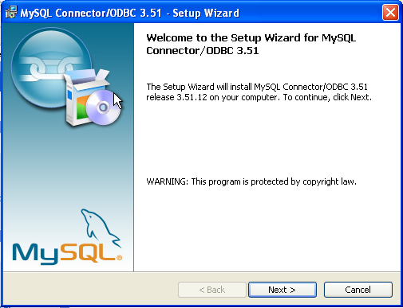You will need to choose the installation type. The Typical installation provides the standard files you will need to connect to a MySQL database using ODBC. The Complete option installs all the available files, including debug and utility components. It is recommended you choose one of these two options to complete the installation. If choose one of these methods, click and then proceed to step 5.
You may also choose a Custom installation, which enables you to select the individual components that you want to install. You have chosen this method, click and then proceed to step 4.
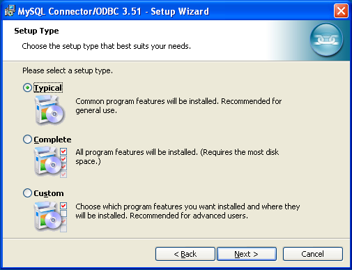If you have chosen a custom installation, use the pop-ups to select which components to install and then click to install the necessary files.
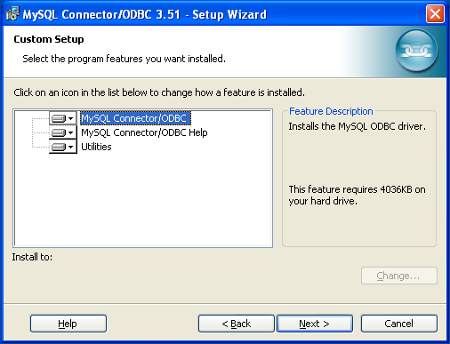Once the files have copied to your machine, the installation is complete. Click to exit the installer.
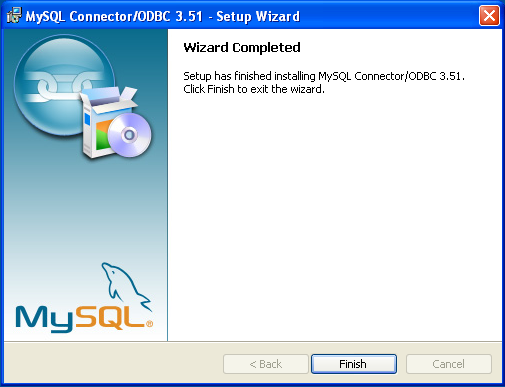
Now the installation is complete, you can continue to configure your ODBC connections using Section 30.1.4, “Connector/ODBC Configuration”.
If you have downloaded the Zipped DLL package then you must install the individual files required for Connector/ODBC operation manually. Once you have unzipped the installation files, you can either perform this operation by hand, executing each statement individually, or you can use the included Batch file to perform an installation to the default locations.
To install using the Batch file:
Unzip the Connector/ODBC Zipped DLL package.
Open a Command Prompt.
Change to the directory created when you unzipped the Connector/ODBC Zipped DLL package.
Run
Install.bat:C:\>
Install.batThis will copy the necessary files into the default location, and then register the Connector/ODBC driver with the Windows ODBC manager.
If you want to copy the files to an alternative location - for example, to run or test different versions of the Connector/ODBC driver on the same machine, then you must copy the files by hand. It is however not recommended to install these files in a non-standard location. To copy the files by hand to the default installation location use the following steps:
Unzip the Connector/ODBC Zipped DLL package.
Open a Command Prompt.
Change to the directory created when you unzipped the Connector/ODBC Zipped DLL package.
Copy the library files to a suitable directory. The default is to copy them into the default Windows system directory
\Windows\System32:C:\>
copy lib\myodbc3S.dll \Windows\System32C:\>copy lib\myodbc3S.lib \Windows\System32C:\>copy lib\myodbc3.dll \Windows\System32C:\>copy lib\myodbc3.lib \Windows\System32Copy the Connector/ODBC tools. These must be placed into a directory that is in the system
PATH. The default is to install these into the Windows system directory\Windows\System32:C:\>
copy bin\myodbc3i.exe \Windows\System32C:\>copy bin\myodbc3m.exe \Windows\System32C:\>copy bin\myodbc3c.exe \Windows\System32Optionally copy the help files. For these files to be accessible through the help system, they must be installed in the Windows system directory:
C:\>
copy doc\*.hlp \Windows\System32Finally, you must register the Connector/ODBC driver with the ODBC manager:
C:\>
myodbc3i -a -d -t"MySQL ODBC 3.51 Driver;\ DRIVER=myodbc3.dll;SETUP=myodbc3S.dll"You must change the references to the DLL files and command location in the above statement if you have not installed these files into the default location.
There are two methods available for installing Connector/ODBC on Unix from a binary distribution. For most Unix environments you will need to use the tarball distribution. For Linux systems, there is also an RPM distribution available.
To install the driver from a tarball distribution
(.tar.gz file), download the latest
version of the driver for your operating system and follow
these steps that demonstrate the process using the Linux
version of the tarball:
shell>su rootshell>gunzip mysql-connector-odbc-3.51.11-i686-pc-linux.tar.gzshell>tar xvf mysql-connector-odbc-3.51.11-i686-pc-linux.tarshell>cd mysql-connector-odbc-3.51.11-i686-pc-linux
Read the installation instructions in the
INSTALL-BINARY file and execute these
commands.
shell>cp libmyodbc* /usr/local/libshell>cp odbc.ini /usr/local/etcshell>export ODBCINI=/usr/local/etc/odbc.ini
Then proceed on to
Section 30.1.4.5, “Configuring a Connector/ODBC DSN on Unix”,
to configure the DSN for Connector/ODBC. For more information,
refer to the INSTALL-BINARY file that
comes with your distribution.
To install or upgrade Connector/ODBC from an RPM distribution
on Linux, simply download the RPM distribution of the latest
version of Connector/ODBC and follow the instructions below.
Use su root to become
root, then install the RPM file.
If you are installing for the first time:
shell>su rootshell>rpm -ivh mysql-connector-odbc-3.51.12.i386.rpm
If the driver exists, upgrade it like this:
shell>su rootshell>rpm -Uvh mysql-connector-odbc-3.51.12.i386.rpm
If there is any dependency error for MySQL client library,
libmysqlclient, simply ignore it by
supplying the --nodeps option, and then make
sure the MySQL client shared library is in the path or set
through LD_LIBRARY_PATH.
This installs the driver libraries and related documents to
/usr/local/lib and
/usr/share/doc/MyODBC, respectively.
Proceed onto Section 30.1.4.5, “Configuring a Connector/ODBC DSN on Unix”.
To uninstall the driver,
become root and execute an
rpm command:
shell>su rootshell>rpm -e mysql-connector-odbc
Mac OS X is based on the FreeBSD operating system, and you can normally use the MySQL network port for connecting to MySQL servers on other hosts. Installing the Connector/ODBC driver enables you to connect to MySQL databases on any platform through the ODBC interface. You should only need to install the Connector/ODBC driver when your application requires an ODBC interface. Applications that require or can use ODBC (and therefore the Connector/ODBC driver) include ColdFusion, Filemaker Pro, 4th Dimension and many other applications.
Mac OS X includes its own ODBC manager, based on the
iODBC manager. Mac OS X includes an
administration tool that provides easier administration of ODBC
drivers and configuration, updating the underlying
iODBC configuration files.
The method for installing Connector/ODBC on Mac OS X depends on
the version on Connector/ODBC you are using. For Connector/ODBC
3.51.14 and later, the package is provided as a compress tar
archive that you must manually install. For Connector/ODBC
3.51.13 and earlier the software was provided on a compressed
disk image (.dmg) file and included an
installer.
In either case, the driver is designed to work with the iODBC driver manager included with Mac OS X.
To install Connector/ODBC 3.51.14 and later:
Download the installation file. Note that versions are available for both PowerPC and Intel platforms.
Extract the archive:
$ tar zxf mysql-connector-odbc-
3.51.16-osx10.4-x86-32bit.tar.gzThe directory created will contain two subdirectories,
libandbin. You need to copy these to a suitable location such as/usr/local:$ cp bin/* /usr/local/bin $ cp lib/* /usr/local/lib
Finally, you must register the driver with iODBC using the myodbc3i tool you just installed:
$ myodbc3i -a -d -t"MySQL ODBC 3.51 Driver;Driver=/usr/local/lib/libmyodbc3.so;Setup=/usr/local/lib/libmyodbc3S.so"
You can verify the installed drivers either by using the ODBC Administrator application or the myodbc3i utility:
$ myodbc3i -q -d
To install Connector/ODBC 3.51.13 and earlier, follow these steps:
Download the file to your computer and double-click on the downloaded image file.
Within the disk image you will find an installer package (with the
.pkgextension). Double click on this file to start the Mac OS X installer.You will be presented with the installer welcome message. Click the button to begin the installation process.
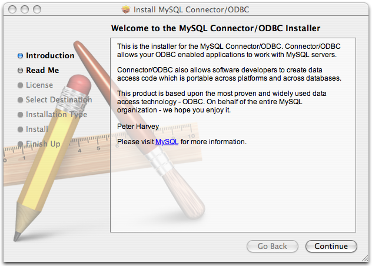Please take the time to read the Important Information as it contains guidance on how to complete the installation process. Once you have read the notice and collected the necessary information, click .
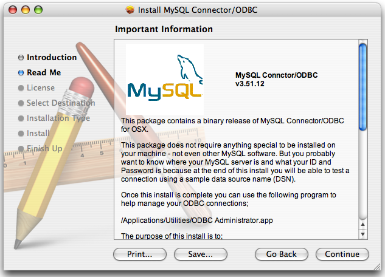Connector/ODBC drivers are made available under the GNU General Public License. Please read the license if you are not familiar with it before continuing installation. Click to approve the license (you will be asked to confirm that decision) and continue the installation.
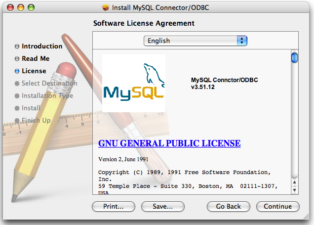Choose a location to install the Connector/ODBC drivers and the ODBC Administrator application. You must install the files onto a drive with an operating system and you may be limited in the choices available. Select the drive you want to use, and then click .
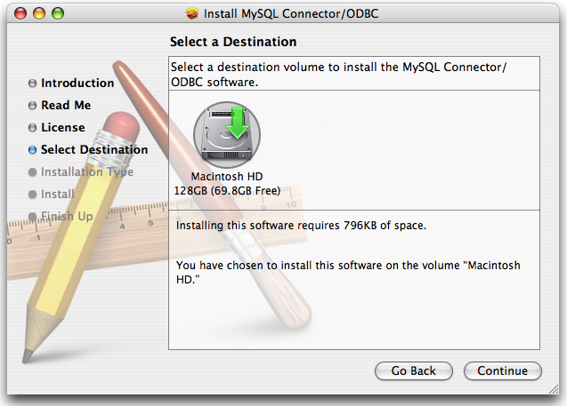The installer will automatically select the files that need to be installed on your machine. Click to continue. The installer will copy the necessary files to your machine. A progress bar will be shown indicating the installation progress.
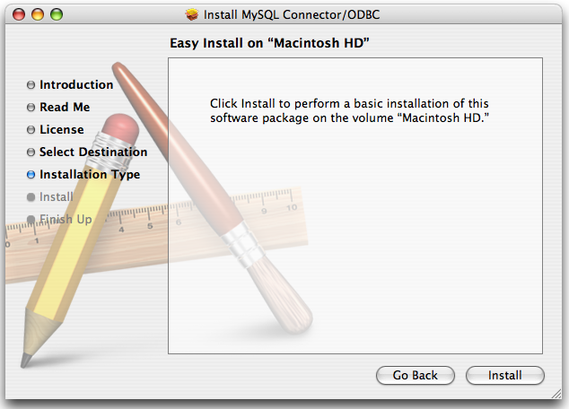When installation has been completed you will get a window like the one shown below. Click to close and quit the installer.
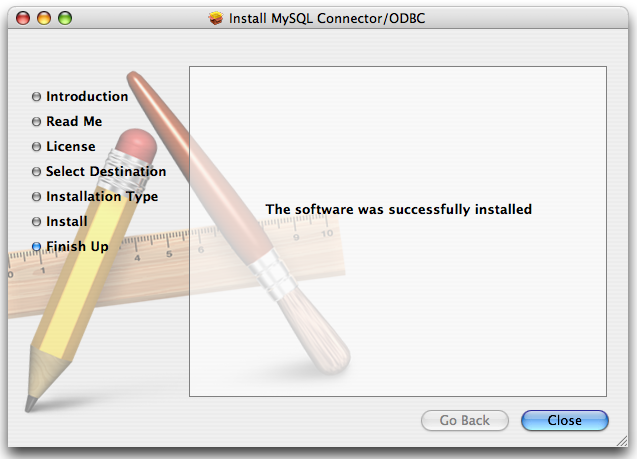
You should only need to install Connector/ODBC from source on Windows if you want to change or modify the source or installation. If you are unsure whether to install from source, please use the binary installation detailed in Section 30.1.3.1, “Installing Connector/ODBC from a Binary Distribution on Windows”.
Installing Connector/ODBC from source on Windows requires a number of different tools and packages:
MDAC, Microsoft Data Access SDK from http://support.microsoft.com/kb/110093.
Suitable C compiler, such as Microsoft Visual C++ or the C compiler included with Microsoft Visual Studio.
Compatible
maketool. Microsoft'snmakeis used in the examples in this section.MySQL client libraries and include files from MySQL 4.0.0 or higher. (Preferably MySQL 4.0.16 or higher). This is required because Connector/ODBC uses new calls and structures that exist only starting from this version of the library. To get the client libraries and include files, visit http://dev.mysql.com/downloads/.
Connector/ODBC source distributions include
Makefiles that require the
nmake or other make
utility. In the distribution, you can find
Makefile for building the release version
and Makefile_debug for building debugging
versions of the driver libraries and DLLs.
To build the driver, use this procedure:
Download and extract the sources to a folder, then change directory into that folder. The following command assumes the folder is named
myodbc3-src:C:\>
cd myodbc3-srcEdit
Makefileto specify the correct path for the MySQL client libraries and header files. Then use the following commands to build and install the release version:C:\>
nmake -f MakefileC:\>nmake -f Makefile installnmake -f Makefile builds the release version of the driver and places the binaries in subdirectory called
Release.nmake -f Makefile install installs (copies) the driver DLLs and libraries (
myodbc3.dll,myodbc3.lib) to your system directory.To build the debug version, use
Makefile_Debugrather thanMakefile, as shown below:C:\>
nmake -f Makefile_debugC:\>nmake -f Makefile_debug installYou can clean and rebuild the driver by using:
C:\>
nmake -f Makefile cleanC:\>nmake -f Makefile install
Note
Make sure to specify the correct MySQL client libraries and header files path in the Makefiles (set the
MYSQL_LIB_PATHandMYSQL_INCLUDE_PATHvariables). The default header file path is assumed to beC:\mysql\include. The default library path is assumed to beC:\mysql\lib\optfor release DLLs andC:\mysql\lib\debugfor debug versions.For the complete usage of nmake, visit http://msdn.microsoft.com/library/default.asp?url=/library/en-us/dv_vcce4/html/evgrfRunningNMAKE.asp.
If you are using the Subversion tree for compiling, all Windows-specific
Makefilesare named asWin_Makefile*.
- 30.1.3.5.1. Typical configure Options
- 30.1.3.5.2. Additional configure Options
- 30.1.3.5.3. Building and Compilation
- 30.1.3.5.4. Building Shared Libraries
- 30.1.3.5.5. Installing Driver Libraries
- 30.1.3.5.6. Testing Connector/ODBC on Unix
- 30.1.3.5.7. Building Connector/ODBC from Source on Mac OS X
- 30.1.3.5.8. Building Connector/ODBC from Source on HP-UX
- 30.1.3.5.9. Building Connector/ODBC from Source on AIX
You need the following tools to build MySQL from source on Unix:
A working ANSI C++ compiler. gcc 2.95.2 or later, SGI C++, and SunPro C++ are some of the compilers that are known to work.
A good make program. GNU make is always recommended and is sometimes required.
MySQL client libraries and include files from MySQL 4.0.0 or higher. (Preferably MySQL 4.0.16 or higher). This is required because Connector/ODBC uses new calls and structures that exist only starting from this version of the library. To get the client libraries and include files, visit http://dev.mysql.com/downloads/.
If you have built your own MySQL server and/or client libraries from source then you must have used the
--enable-thread-safe-clientoption toconfigurewhen the libraries were built.You should also ensure that the
libmysqlclientlibrary were built and installed as a shared library.A compatible ODBC manager must be installed. Connector/ODBC is known to work with the
iODBCandunixODBCmanagers. See Section 30.1.2.2.2, “ODBC Driver Managers”, for more information.If you are using a character set that isn't compiled into the MySQL client library then you need to install the MySQL character definitions from the
charsetsdirectory intoSHAREDIR(by default,/usr/local/mysql/share/mysql/charsets). These should be in place if you have installed the MySQL server on the same machine. See Section 9.1, “Character Set Support”, for more information on character set support.
Once you have all the required files, unpack the source files to a separate directory, you then have to run configure and build the library using make.
The configure script gives you a great deal of control over how you configure your Connector/ODBC build. Typically you do this using options on the configure command line. You can also affect configure using certain environment variables. For a list of options and environment variables supported by configure, run this command:
shell> ./configure --help
Some of the more commonly used configure options are described here:
To compile Connector/ODBC, you need to supply the MySQL client include and library files path using the
--with-mysql-path=option, whereDIRDIRis the directory where MySQL is installed.MySQL compile options can be determined by running
DIR/bin/mysql_configSupply the standard header and library files path for your ODBC Driver Manager (
iODBCorunixODBC).If you are using
iODBCandiODBCis not installed in its default location (/usr/local), you might have to use the--with-iodbc=option, whereDIRDIRis the directory whereiODBCis installed.If the
iODBCheaders do not reside inDIR/include--with-iodbc-includes=option to specify their location.INCDIRThe applies to libraries. If they are not in
DIR/lib--with-iodbc-libs=option.LIBDIRIf you are using
unixODBC, use the--with-unixODBC=option (case sensitive) to make configure look forDIRunixODBCinstead ofiODBCby default,DIRis the directory whereunixODBCis installed.If the
unixODBCheaders and libraries aren't located inDIR/includeDIR/lib--with-unixODBC-includes=andINCDIR--with-unixODBC-libs=options.LIBDIR
You might want to specify an installation prefix other than
/usr/local. For example, to install the Connector/ODBC drivers in/usr/local/odbc/lib, use the--prefix=/usr/local/odbcoption.
The final configuration command looks something like this:
shell>./configure --prefix=/usr/local \--with-iodbc=/usr/local \--with-mysql-path=/usr/local/mysql
There are a number of other options that you need, or want, to set when configuring the Connector/ODBC driver before it is built.
To link the driver with MySQL thread safe client libraries
libmysqlclient_r.soorlibmysqlclient_r.a, you must specify the following configure option:--enable-thread-safe
and can be disabled (default) using
--disable-thread-safe
This option enables the building of the driver thread-safe library
libmyodbc3_r.sofrom by linking with MySQL thread-safe client librarylibmysqlclient_r.so(The extensions are OS dependent).If the compilation with the thread-safe option fails, it may be because the correct thread-libraries on the system could not be located. You should set the value of
LIBSto point to the correct thread library for your system.LIBS="-lpthread" ./configure ..
You can enable or disable the shared and static versions of Connector/ODBC using these options:
--enable-shared[=yes/no] --disable-shared --enable-static[=yes/no] --disable-static
By default, all the binary distributions are built as non-debugging versions (configured with
--without-debug).To enable debugging information, build the driver from source distribution and use the
--with-debugoption when you run configure.This option is available only for source trees that have been obtained from the Subversion repository. This option does not apply to the packaged source distributions.
By default, the driver is built with the
--without-docsoption. If you would like the documentation to be built, then execute configure with:--with-docs
To build the driver libraries, you have to just execute make.
shell> make
If any errors occur, correct them and continue the build
process. If you aren't able to build, then send a detailed
email to <myodbc@lists.mysql.com> for further
assistance.
On most platforms, MySQL does not build or support
.so (shared) client libraries by default.
This is based on our experience of problems when building
shared libraries.
In cases like this, you have to download the MySQL distribution and configure it with these options:
--without-server --enable-shared
To build shared driver libraries, you must specify the
--enable-shared option for
configure. By default,
configure does not enable this option.
If you have configured with the
--disable-shared option, you can build the
.so file from the static libraries using
the following commands:
shell>cd mysql-connector-odbc-3.51.01shell>makeshell>cd drivershell>CC=/usr/bin/gcc \$CC -bundle -flat_namespace -undefined error \-o .libs/libmyodbc3-3.51.01.so \catalog.o connect.o cursor.o dll.o error.o execute.o \handle.o info.o misc.o myodbc3.o options.o prepare.o \results.o transact.o utility.o \-L/usr/local/mysql/lib/mysql/ \-L/usr/local/iodbc/lib/ \-lz -lc -lmysqlclient -liodbcinst
Make sure to change -liodbcinst to
-lodbcinst if you are using
unixODBC instead of
iODBC, and configure the library paths
accordingly.
This builds and places the
libmyodbc3-3.51.01.so file in the
.libs directory. Copy this file to the
Connector/ODBC library installation directory
(/usr/local/lib (or the
lib directory under the installation
directory that you supplied with the
--prefix).
shell>cd .libsshell>cp libmyodbc3-3.51.01.so /usr/local/libshell>cd /usr/local/libshell>ln -s libmyodbc3-3.51.01.so libmyodbc3.so
To build the thread-safe driver library:
shell>CC=/usr/bin/gcc \$CC -bundle -flat_namespace -undefined error-o .libs/libmyodbc3_r-3.51.01.socatalog.o connect.o cursor.o dll.o error.o execute.ohandle.o info.o misc.o myodbc3.o options.o prepare.oresults.o transact.o utility.o-L/usr/local/mysql/lib/mysql/-L/usr/local/iodbc/lib/-lz -lc -lmysqlclient_r -liodbcinst
To install the driver libraries, execute the following command:
shell> make install
That command installs one of the following sets of libraries:
For Connector/ODBC 3.51:
libmyodbc3.solibmyodbc3-3.51.01.so, where 3.51.01 is the version of the driverlibmyodbc3.a
For thread-safe Connector/ODBC 3.51:
libmyodbc3_r.solibmyodbc3-3_r.51.01.solibmyodbc3_r.a
For more information on build process, refer to the
INSTALL file that comes with the source
distribution. Note that if you are trying to use the
make from Sun, you may end up with errors.
On the other hand, GNU gmake should work
fine on all platforms.
To run the basic samples provided in the distribution with the libraries that you built, use the following command:
shell> make test
Before running the tests, create the DSN 'myodbc3' in
odbc.ini and set the environment variable
ODBCINI to the correct
odbc.ini file; and MySQL server is
running. You can find a sample odbc.ini
with the driver distribution.
You can even modify the
samples/run-samples script to pass the
desired DSN, UID, and PASSWORD values as the command-line
arguments to each sample.
To build the driver on Mac OS X (Darwin), make use of the following configure example:
shell>./configure --prefix=/usr/local--with-unixODBC=/usr/local--with-mysql-path=/usr/local/mysql--disable-shared--enable-gui=no--host=powerpc-apple
The command assumes that the unixODBC and
MySQL are installed in the default locations. If not,
configure accordingly.
On Mac OS X, --enable-shared builds
.dylib files by default. You can build
.so files like this:
shell>makeshell>cd drivershell>CC=/usr/bin/gcc \$CC -bundle -flat_namespace -undefined error-o .libs/libmyodbc3-3.51.01.so *.o-L/usr/local/mysql/lib/-L/usr/local/iodbc/lib-liodbcinst -lmysqlclient -lz -lc
To build the thread-safe driver library:
shell>CC=/usr/bin/gcc \$CC -bundle -flat_namespace -undefined error-o .libs/libmyodbc3-3.51.01.so *.o-L/usr/local/mysql/lib/-L/usr/local/iodbc/lib-liodbcinst -lmysqlclienti_r -lz -lc -lpthread
Make sure to change the -liodbcinst to
-lodbcinst in case of using
unixODBC instead of
iODBC and configure the libraries path
accordingly.
In Apple's version of GCC, both cc and gcc are actually symbolic links to gcc3.
Copy this library to the $prefix/lib
directory and symlink to libmyodbc3.so.
You can cross-check the output shared-library properties using this command:
shell> otool -LD .libs/libmyodbc3-3.51.01.so
To build the driver on HP-UX 10.x or 11.x, make use of the following configure example:
If using cc:
shell>CC="cc" \CFLAGS="+z" \LDFLAGS="-Wl,+b:-Wl,+s" \./configure --prefix=/usr/local--with-unixodbc=/usr/local--with-mysql-path=/usr/local/mysql/lib/mysql--enable-shared--enable-thread-safe
If using gcc:
shell>CC="gcc" \LDFLAGS="-Wl,+b:-Wl,+s" \./configure --prefix=/usr/local--with-unixodbc=/usr/local--with-mysql-path=/usr/local/mysql--enable-shared--enable-thread-safe
Once the driver is built, cross-check its attributes using
chatr .libs/libmyodbc3.sl to determine
whether you need to have set the MySQL client library path
using the SHLIB_PATH environment variable.
For static versions, ignore all shared-library options and run
configure with the
--disable-shared option.
To build the driver on AIX, make use of the following configure example:
shell>./configure --prefix=/usr/local--with-unixodbc=/usr/local--with-mysql-path=/usr/local/mysql--disable-shared--enable-thread-safe
Note
For more information about how to build and set up the static and shared libraries across the different platforms refer to ' Using static and shared libraries across platforms'.
Caution
You should read this section only if you are interested in helping us test our new code. If you just want to get MySQL Connector/ODBC up and running on your system, you should use a standard release distribution.
To be able to access the Connector/ODBC source tree, you must have Subversion installed. Subversion is freely available from http://subversion.tigris.org/.
To build from the source trees, you need the following tools:
autoconf 2.52 (or newer)
automake 1.4 (or newer)
libtool 1.4 (or newer)
m4
The most recent development source tree is available from our public Subversion trees at http://dev.mysql.com/tech-resources/sources.html.
To checkout out the Connector/ODBC sources, change to the directory where you want the copy of the Connector/ODBC tree to be stored, then use the following command:
shell> svn co http://svn.mysql.com/svnpublic/connector-odbc3
You should now have a copy of the entire Connector/ODBC source
tree in the directory connector-odbc3. To
build from this source tree on Unix or Linux follow these steps:
shell>cd connector-odbc3shell>aclocalshell>autoheadershell>autoconfshell>automake;shell>./configure # Add your favorite options hereshell>make
For more information on how to build, refer to the
INSTALL file located in the same directory.
For more information on options to configure,
see
Section 30.1.3.5.1, “Typical configure Options”
When the build is done, run make install to install the Connector/ODBC 3.51 driver on your system.
If you have gotten to the make stage and the
distribution does not compile, please report it to
<myodbc@lists.mysql.com>.
On Windows, make use of Windows Makefiles
WIN-Makefile and
WIN-Makefile_debug in building the driver.
For more information, see
Section 30.1.3.4, “Installing Connector/ODBC from a Source Distribution on Windows”.
After the initial checkout operation to get the source tree, you should run svn update periodically update your source according to the latest version.
- 30.1.4.1. Data Source Names
- 30.1.4.2. Connector/ODBC Connection Parameters
- 30.1.4.3. Configuring a Connector/ODBC DSN on Windows
- 30.1.4.4. Configuring a Connector/ODBC DSN on Mac OS X
- 30.1.4.5. Configuring a Connector/ODBC DSN on Unix
- 30.1.4.6. Connecting Without a Predefined DSN
- 30.1.4.7. ODBC Connection Pooling
- 30.1.4.8. Getting an ODBC Trace File
Before you connect to a MySQL database using the Connector/ODBC driver you must configure an ODBC Data Source Name. The DSN associates the various configuration parameters required to communicate with a database to a specific name. You use the DSN in an application to communicate with the database, rather than specifying individual parameters within the application itself. DSN information can be user specific, system specific, or provided in a special file. ODBC data source names are configured in different ways, depending on your platform and ODBC driver.
A Data Source Name associates the configuration parameters for communicating with a specific database. Generally a DSN consists of the following parameters:
- Name
- Hostname
- Database Name
- Login
- Password
In addition, different ODBC drivers, including Connector/ODBC, may accept additional driver-specific options and parameters.
There are three types of DSN:
A System DSN is a global DSN definition that is available to any user and application on a particular system. A System DSN can normally only be configured by a systems administrator, or by a user who has specific permissions that let them create System DSNs.
A User DSN is specific to an individual user, and can be used to store database connectivity information that the user regularly uses.
A File DSN uses a simple file to define the DSN configuration. File DSNs can be shared between users and machines and are therefore more practical when installing or deploying DSN information as part of an application across many machines.
DSN information is stored in different locations depending on your platform and environment.
You can specify the parameters in the following tables for
Connector/ODBC when configuring a DSN. Users on Windows can use
the Options and Advanced panels when configuring a DSN to set
these parameters; see the table for information on which options
relate to which fields and checkboxes. On Unix and Mac OS X, use
the parameter name and value as the keyword/value pair in the
DSN configuration. Alternatively, you can set these parameters
within the InConnectionString argument in the
SQLDriverConnect() call.
| Parameter | Default Value | Comment |
|---|---|---|
user | ODBC | The username used to connect to MySQL. |
uid | ODBC | Synonymous with user. Added in 3.51.16. |
server | localhost | The hostname of the MySQL server. |
database | The default database. | |
option | 0 | Options that specify how Connector/ODBC should work. See below. |
port | 3306 | The TCP/IP port to use if server is not
localhost. |
stmt | A statement to execute when connecting to MySQL. | |
password | The password for the user account on
server. | |
pwd | Synonymous with password. Added in 3.51.16. | |
socket | The Unix socket file or Windows named pipe to connect to if
server is
localhost. | |
sslca | The path to a file with a list of trust SSL CAs. Added in 3.51.16. | |
sslcapath | The path to a directory that contains trusted SSL CA certificates in PEM format. Added in 3.51.16. | |
sslcert | The name of the SSL certificate file to use for establishing a secure connection. Added in 3.51.16. | |
sslcipher | A list of allowable ciphers to use for SSL encryption. The cipher list
has the same format as the openssl
ciphers command Added in 3.51.16. | |
sslkey | The name of the SSL key file to use for establishing a secure connection. Added in 3.51.16. | |
charset | The character set to use for the connection. Added in 3.51.17. | |
sslverify | If set to 1, the SSL certificate will be verified when used with the MySQL connection. If not set, then the default behaviour is to ignore SSL certificate verification. |
Note
The SSL configuration parameters can also be automatically
loaded from a my.ini or
my.cnf file.
The option argument is used to tell
Connector/ODBC that the client isn't 100% ODBC compliant. On
Windows, you normally select options by toggling the checkboxes
in the connection screen, but you can also select them in the
option argument. The following options are
listed in the order in which they appear in the Connector/ODBC
connect screen:
| Value | Flagname | GUI Option | Description |
| 1 | FLAG_FIELD_LENGTH | Don't Optimize Column Width | The client can't handle that Connector/ODBC returns the real width of a column. This option was removed in 3.51.18. |
| 2 | FLAG_FOUND_ROWS | Return Matching Rows | The client can't handle that MySQL returns the true value of affected rows. If this flag is set, MySQL returns “found rows” instead. You must have MySQL 3.21.14 or newer to get this to work. |
| 4 | FLAG_DEBUG | Trace Driver Calls To myodbc.log | Make a debug log in C:\myodbc.log on Windows, or
/tmp/myodbc.log on Unix variants.
This option was removed in Connector/ODBC 3.51.18. |
| 8 | FLAG_BIG_PACKETS | Allow Big Results | Don't set any packet limit for results and bind parameters. Without this option, parameter binding will be truncated to 255 characters. |
| 16 | FLAG_NO_PROMPT | Don't Prompt Upon Connect | Don't prompt for questions even if driver would like to prompt. |
| 32 | FLAG_DYNAMIC_CURSOR | Enable Dynamic Cursor | Enable or disable the dynamic cursor support. |
| 64 | FLAG_NO_SCHEMA | Ignore # in Table Name | Ignore use of database name in
db_name.tbl_name.col_name. |
| 128 | FLAG_NO_DEFAULT_CURSOR | User Manager Cursors | Force use of ODBC manager cursors (experimental). |
| 256 | FLAG_NO_LOCALE | Don't Use Set Locale | Disable the use of extended fetch (experimental). |
| 512 | FLAG_PAD_SPACE | Pad Char To Full Length | Pad CHAR columns to full column length. |
| 1024 | FLAG_FULL_COLUMN_NAMES | Return Table Names for SQLDescribeCol | SQLDescribeCol() returns fully qualified column
names. |
| 2048 | FLAG_COMPRESSED_PROTO | Use Compressed Protocol | Use the compressed client/server protocol. |
| 4096 | FLAG_IGNORE_SPACE | Ignore Space After Function Names | Tell server to ignore space after function name and before
“(” (needed by
PowerBuilder). This makes all function names keywords. |
| 8192 | FLAG_NAMED_PIPE | Force Use of Named Pipes | Connect with named pipes to a mysqld server running on NT. |
| 16384 | FLAG_NO_BIGINT | Change BIGINT Columns to Int | Change BIGINT columns to INT
columns (some applications can't handle
BIGINT). |
| 32768 | FLAG_NO_CATALOG | No Catalog | Forces results from the catalog functions, such as
SQLTables, to always return
NULL and the driver to report that
catalogs are not supported. |
| 65536 | FLAG_USE_MYCNF | Read Options From my.cnf | Read parameters from the [client] and
[odbc] groups from
my.cnf. |
| 131072 | FLAG_SAFE | Safe | Add some extra safety checks. |
| 262144 | FLAG_NO_TRANSACTIONS | Disable transactions | Disable transactions. |
| 524288 | FLAG_LOG_QUERY | Save queries to myodbc.sql | Enable query logging to
c:\myodbc.sql(/tmp/myodbc.sql)
file. (Enabled only in debug mode.) |
| 1048576 | FLAG_NO_CACHE | Don't Cache Result (forward only cursors) | Do not cache the results locally in the driver, instead read from server
(mysql_use_result()).
This works only for forward-only cursors. This option is
very important in dealing with large tables when you
don't want the driver to cache the entire result set. |
| 2097152 | FLAG_FORWARD_CURSOR | Force Use Of Forward Only Cursors | Force the use of Forward-only cursor type. In case of
applications setting the default static/dynamic cursor
type, and one wants the driver to use non-cache result
sets, then this option ensures the forward-only cursor
behavior. |
| 4194304 | FLAG_AUTO_RECONNECT | Enable auto-reconnect. | Enables auto-reconnection functionality. You should not use this option with transactions, since a auto reconnection during a incomplete transaction may cause corruption. Note that an auto-reconnected connection will not inherit the same settings and environment as the original. This option was added in Connector/ODBC 3.51.13. |
| 8388608 | FLAG_AUTO_IS_NULL | Flag Auto Is Null | When set, this option causes the connection to set the
SQL_AUTO_IS_NULL option to 1. This
disables the standard behavior, but may enable older
applications to correctly identify
AUTO_INCREMENT values. For more
information. See IS
NULL. This option was added in Connector/ODBC
3.51.13. |
| 16777216 | FLAG_ZERO_DATE_TO_MIN | Flag Zero Date to Min | Translates zero dates (XXXX-00-00) into the minimum
date values supported by ODBC,
XXXX-01-01. This resolves an issue
where some statements will not work because the date
returned and the minimum ODBC date value are
incompatible. This option was added in Connector/ODBC
3.51.17. |
| 33554432 | FLAG_MIN_DATE_TO_ZERO | Flag Min Date to Zero | Translates the minimum ODBC date value (XXXX-01-01)
to the zero date format supported by MySQL
(XXXX-00-00). This resolves an issue
where some statements will not work because the date
returned and the minimum ODBC date value are
incompatible. This option was added in Connector/ODBC
3.51.17. |
| 67108864 | FLAG_MULTI_STATEMENTS | Allow multiple statements | Enables support for batched statements. This option was added in Connector/ODBC 3.51.18. |
| 134217728 | FLAG_COLUMN_SIZE_S32 | Limit column size to 32-bit value | Limits the column size to a signed 32-bit value to prevent problems with larger column sizes in applications that do not support them. This option is automatically enabled when working with ADO applications. This option was added in Connector/ODBC 3.51.22. |
| 268435456 | FLAG_NO_BINARY_RESULT | Always handle binary function results as character data | When set this option disables charset 63 for columns with an empty
org_table. This option was added in
Connector/ODBC 3.51.26. |
To select multiple options, add together their values. For
example, setting option to 12 (4+8) gives you
debugging without packet limits.
The following table shows some recommended
option values for various configurations:
| Configuration | Option Value |
| Microsoft Access, Visual Basic | 3 |
| Driver trace generation (Debug mode) | 4 |
| Microsoft Access (with improved DELETE queries) | 35 |
| Large tables with too many rows | 2049 |
| Sybase PowerBuilder | 135168 |
| Query log generation (Debug mode) | 524288 |
| Generate driver trace as well as query log (Debug mode) | 524292 |
| Large tables with no-cache results | 3145731 |
The ODBC Data Source Administrator within
Windows enables you to create DSNs, check driver installation
and configure ODBC systems such as tracing (used for debugging)
and connection pooling.
Different editions and versions of Windows store the
ODBC Data Source Administrator in different
locations depending on the version of Windows that you are
using.
To open the ODBC Data Source Administrator in
Windows Server 2003:
Tip
Because it is possible to create DSN using either the 32-bit
or 64-bit driver, but using the same DNS identifier, it is
advisable to include the driver being used within the DSN
identifier. This will help you to identify the DSN when using
it from applications such as Excel that are only compatible
with the 32-bit driver. For example, you might add
Using32bitCODBC to the DSN identifier for
the 32-bit interface and Using64bitCODBC
for those using the 64-bit Connector/ODBC driver.
On the
Startmenu, chooseAdministrative Tools, and then clickData Sources (ODBC).
To open the ODBC Data Source Administrator in
Windows 2000 Server or Windows 2000 Professional:
On the
Startmenu, chooseSettings, and then clickControl Panel.In
Control Panel, clickAdministrative Tools.In
Administrative Tools, clickData Sources (ODBC).
To open the ODBC Data Source Administrator on
Windows XP:
On the
Startmenu, clickControl Panel.In the
Control Panelwhen inCategory ViewclickPerformance and Maintenanceand then clickAdministrative Tools.. If you are viewing theControl PanelinClassic View, clickAdministrative Tools.In
Administrative Tools, clickData Sources (ODBC).
Irrespective of your Windows version, you should be presented
the ODBC Data Source Administrator window:

Within Windows XP, you can add the Administrative
Tools folder to your menu
to make it easier to locate the ODBC Data Source Administrator.
To do this:
Right click on the menu.
Select
Properties.Click .
Select the tab.
Within
Start menu items, within theSystem Administrative Toolssection, selectDisplay on the All Programs menu.
Within both Windows Server 2003 and Windows XP you may want to
permanently add the ODBC Data Source
Administrator to your
menu. To do this, locate the Data Sources
(ODBC) icon using the methods shown, then right-click
on the icon and then choose .
The interfaces for the 3.51 and 5.1 versions of the Connector/ODBC driver are different, although the fields and information that you need to enter remain the same.
To configure a DSN using Connector/ODBC 3.51.x or Connector/ODBC 5.1.0, see Section 30.1.4.3.1, “Configuring a Connector/ODBC 3.51 DSN on Windows”.
To configure a DSN using Connector/ODBC 5.1.1 or later, see Section 30.1.4.3.2, “Configuring a Connector/ODBC 5.1 DSN on Windows”.
To add and configure a new Connector/ODBC data source on
Windows, use the ODBC Data Source
Administrator:
Open the
ODBC Data Source Administrator.To create a System DSN (which will be available to all users) , select the
System DSNtab. To create a User DSN, which will be unique only to the current user, click the button.You will need to select the ODBC driver for this DSN.

Select
MySQL ODBC 3.51 Driver, then click .You now need to configure the specific fields for the DSN you are creating through the
Add Data Source Namedialog.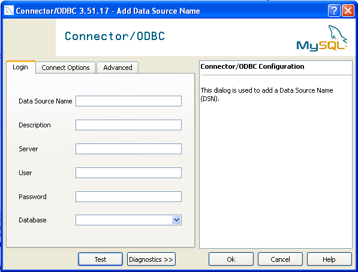In the Data Source Name box, enter the name of the data source you want to access. It can be any valid name that you choose.
In the Description box, enter some text to help identify the connection.
In the Server field, enter the name of the MySQL server host that you want to access. By default, it is
localhost.In the User field, enter the user name to use for this connection.
In the Password field, enter the corresponding password for this connection.
The Database pop-up should automatically populate with the list of databases that the user has permissions to access.
Click to save the DSN.
A completed DSN configuration may look like this:
You can verify the connection using the parameters you have
entered by clicking the button. If
the connection could be made successfully, you will be
notified with a Success; connection was
made! dialog.
If the connection failed, you can obtain more information on the test and why it may have failed by clicking the button to show additional error messages.
You can configure a number of options for a specific DSN by using either the or tabs in the DSN configuration dialog.
The three options you can configure are:
Port sets the TCP/IP port number to use when communicating with MySQL. Communication with MySQL uses port 3306 by default. If your server is configured to use a different TCP/IP port, you must specify that port number here.
Socket sets the name or location of a specific socket or Windows pipe to use when communicating with MySQL.
Initial Statement defines an SQL statement that will be executed when the connection to MySQL is opened. You can use this to set MySQL options for your connection, such as disabling autocommit.
Character Set is a pop-up list from which you can select the default character set to be used with this connection. The Character Set option was added in 3.5.17.
The tab enables you to configure Connector/ODBC connection parameters. Refer to Section 30.1.4.2, “Connector/ODBC Connection Parameters”, for information about the meaning of these options.
The DSN configuration when using Connector/ODBC 5.1.1 and later has a slightly different layout. Also, due to the native Unicode support within Connector/ODBC 5.1, you no longer need to specify the initial character set to be used with your connection.
To configure a DSN using the Connector/ODBC 5.1.1 or later driver:
Open the
ODBC Data Source Administrator.To create a System DSN (which will be available to all users) , select the System DSN tab. To create a User DSN, which will be unique only to the current user, click the button.
You will need to select the ODBC driver for this DSN.
Select
MySQL ODBC 5.1 Driver, then click .You now need to configure the specific fields for the DSN you are creating through the
Connection Parametersdialog.
In the Data Source Name box, enter the name of the data source you want to access. It can be any valid name that you choose.
In the Description box, enter some text to help identify the connection.
In the Server field, enter the name of the MySQL server host that you want to access. By default, it is
localhost.In the User field, enter the user name to use for this connection.
In the Password field, enter the corresponding password for this connection.
The Database pop-up should automatically populate with the list of databases that the user has permissions to access.
To communicate over a different TCP/IP port than the default (3306), change the value of the Port.
Click to save the DSN.
You can verify the connection using the parameters you have
entered by clicking the button. If
the connection could be made successfully, you will be
notified with a Success; connection was
made! dialog.
You can configure a number of options for a specific DSN by using the button.

The Details button opens a tabbed display which allows you to set additional options:
Flags 1, Flags 2, and Flags 3 enable you to select the additional flags for the DSN connection. For more information on these flags, see Section 30.1.4.2, “Connector/ODBC Connection Parameters”.
Debug allows you to enable ODBC debugging to record the queries you execute through the DSN to the
myodbc.sqlfile. For more information, see Section 30.1.4.8, “Getting an ODBC Trace File”.SSL Settings configures the additional options required for using the Secure Sockets Layer (SSL) when communicating with MySQL server. Note that you must have enabled SSL and configured the MySQL server with suitable certificates to communicate over SSL.

The tab enables you to configure Connector/ODBC connection parameters. Refer to Section 30.1.4.2, “Connector/ODBC Connection Parameters”, for information about the meaning of these options.
This section answers Connector/ODBC connection-related questions.
While configuring a Connector/ODBC DSN, a
Could Not Load Translator or Setup Libraryerror occursFor more information, refer to MS KnowledgeBase Article(Q260558). Also, make sure you have the latest valid
ctl3d32.dllin your system directory.On Windows, the default
myodbc3.dllis compiled for optimal performance. If you want to debug Connector/ODBC 3.51 (for example, to enable tracing), you should instead usemyodbc3d.dll. To install this file, copymyodbc3d.dllover the installedmyodbc3.dllfile. Make sure to revert back to the release version of the driver DLL once you are done with the debugging because the debug version may cause performance issues. Note that themyodbc3d.dllisn't included in Connector/ODBC 3.51.07 through 3.51.11. If you are using one of these versions, you should copy that DLL from a previous version (for example, 3.51.06).
To configure a DSN on Mac OS X you can either use the
myodbc3i utility, edit the
odbc.ini file within the
Library/ODBC directory of the user or the
should use the ODBC Administrator. If you have Mac OS X 10.2 or
earlier, refer to
Section 30.1.4.5, “Configuring a Connector/ODBC DSN on Unix”.
Select whether you want to create a User DSN or a System DSN. If
you want to add a System DSN, you may need to authenticate with
the system. You must click the padlock and enter a user and
password with administrator privileges.
For correct operation of ODBC Administrator, you should ensure
that the /Library/ODBC/odbc.ini file used
to set up ODBC connectivity and DSNs are writable by the
admin group. If this file is not writable by
this group then the ODBC Administrator may fail, or may appear
to have worked but not generated the correct entry.
Warning
There are known issues with the OS X ODBC Administrator and
Connector/ODBC that may prevent you from creating a DSN using
this method. In this case you should use the command-line or
edit the odbc.ini file directly. Note
that existing DSNs or those that you create via the
myodbc3i or
myodbc-installertool can still be checked
and edited using ODBC Administrator.
To create a DSN using the myodbc3i utility, you need only specify the DSN type and the DSN connection string. For example:
$ myodbc3i -a -s -t"DSN=mydb;DRIVER=MySQL ODBC 3.51 Driver;SERVER=mysql;USER=username;PASSWORD=pass"
To use ODBC Administrator:
Open the ODBC Administrator from the
Utilitiesfolder in theApplicationsfolder.
On the User DSN or System DSN panel, click
Select the Connector/ODBC driver and click .
You will be presented with the
Data Source Namedialog. Enter TheData Source Nameand an optionalDescriptionfor the DSN.
Click to add a new keyword/value pair to the panel. You should configure at least four pairs to specify the
server,username,passwordanddatabaseconnection parameters. See Section 30.1.4.2, “Connector/ODBC Connection Parameters”.Click to add the DSN to the list of configured data source names.
A completed DSN configuration may look like this:

You can configure additional ODBC options to your DSN by adding further keyword/value pairs and setting the corresponding values. See Section 30.1.4.2, “Connector/ODBC Connection Parameters”.
On Unix, you configure DSN entries directly
in the odbc.ini file. Here is a typical
odbc.ini file that configures
myodbc3 as the DSN name for Connector/ODBC
3.51:
; ; odbc.ini configuration for Connector/ODBC and Connector/ODBC 3.51 drivers ; [ODBC Data Sources] myodbc3 = MyODBC 3.51 Driver DSN [myodbc3] Driver = /usr/local/lib/libmyodbc3.so Description = Connector/ODBC 3.51 Driver DSN SERVER = localhost PORT = USER = root Password = Database = test OPTION = 3 SOCKET = [Default] Driver = /usr/local/lib/libmyodbc3.so Description = Connector/ODBC 3.51 Driver DSN SERVER = localhost PORT = USER = root Password = Database = test OPTION = 3 SOCKET =
Refer to the Section 30.1.4.2, “Connector/ODBC Connection Parameters”, for the list of connection parameters that can be supplied.
Note
If you are using unixODBC, you can use the
following tools to set up the DSN:
ODBCConfig GUI tool(HOWTO: ODBCConfig)
odbcinst
In some cases when using unixODBC, you might
get this error:
Data source name not found and no default driver specified
If this happens, make sure the ODBCINI and
ODBCSYSINI environment variables are pointing
to the right odbc.ini file. For example, if
your odbc.ini file is located in
/usr/local/etc, set the environment
variables like this:
export ODBCINI=/usr/local/etc/odbc.ini export ODBCSYSINI=/usr/local/etc
You can connect to the MySQL server using SQLDriverConnect, by
specifying the DRIVER name field. Here are
the connection strings for Connector/ODBC using DSN-Less
connections:
For Connector/ODBC 3.51:
ConnectionString = "DRIVER={MySQL ODBC 3.51 Driver};\
SERVER=localhost;\
DATABASE=test;\
USER=venu;\
PASSWORD=venu;\
OPTION=3;"If your programming language converts backslash followed by whitespace to a space, it is preferable to specify the connection string as a single long string, or to use a concatenation of multiple strings that does not add spaces in between. For example:
ConnectionString = "DRIVER={MySQL ODBC 3.51 Driver};"
"SERVER=localhost;"
"DATABASE=test;"
"USER=venu;"
"PASSWORD=venu;"
"OPTION=3;"Note. Note that on Mac OS X you may need to specify the full path to the Connector/ODBC driver library.
Refer to the Section 30.1.4.2, “Connector/ODBC Connection Parameters”, for the list of connection parameters that can be supplied.
Connection pooling enables the ODBC driver to re-use existing connections to a given database from a pool of connections, instead of opening a new connection each time the database is accessed. By enabling connection pooling you can improve the overall performance of your application by lowering the time taken to open a connection to a database in the connection pool.
For more information about connection pooling: http://support.microsoft.com/default.aspx?scid=kb;EN-US;q169470.
If you encounter difficulties or problems with Connector/ODBC,
you should start by making a log file from the ODBC
Manager and Connector/ODBC. This is called
tracing, and is enabled through the ODBC
Manager. The procedure for this differs for Windows, Mac OS X
and Unix.
To enable the trace option on Windows:
The
Tracingtab of the ODBC Data Source Administrator dialog box enables you to configure the way ODBC function calls are traced.
When you activate tracing from the
Tracingtab, theDriver Managerlogs all ODBC function calls for all subsequently run applications.ODBC function calls from applications running before tracing is activated are not logged. ODBC function calls are recorded in a log file you specify.
Tracing ceases only after you click
Stop Tracing Now. Remember that while tracing is on, the log file continues to increase in size and that tracing affects the performance of all your ODBC applications.
To enable the trace option on Mac OS X 10.3 or later you
should use the Tracing tab within
ODBC Administrator .
Open the ODBC Administrator.
Select the
Tracingtab.
Select the
Enable Tracingcheckbox.Enter the location where you want to save the Tracing log. If you want to append information to an existing log file, click the button.
To enable the trace option on Mac OS X 10.2 (or earlier) or
Unix you must add the trace option to the
ODBC configuration:
On Unix, you need to explicitly set the
Traceoption in theODBC.INIfile.Set the tracing
ONorOFFby usingTraceFileandTraceparameters inodbc.inias shown below:TraceFile = /tmp/odbc.trace Trace = 1
TraceFilespecifies the name and full path of the trace file andTraceis set toONorOFF. You can also use1orYESforONand0orNOforOFF. If you are using ODBCConfig fromunixODBC, then follow the instructions for tracingunixODBCcalls at HOWTO-ODBCConfig.
To generate a Connector/ODBC log, do the following:
Within Windows, enable the
Trace Connector/ODBCoption flag in the Connector/ODBC connect/configure screen. The log is written to fileC:\myodbc.log. If the trace option is not remembered when you are going back to the above screen, it means that you are not using themyodbcd.dlldriver, see Section 30.1.4.3.3, “Errors and Debugging”.On Mac OS X, Unix, or if you are using DSN-Less connection, then you need to supply
OPTION=4in the connection string or set the corresponding keyword/value pair in the DSN.Start your application and try to get it to fail. Then check the Connector/ODBC trace file to find out what could be wrong.
If you need help determining what is wrong, see Section 30.1.8.1, “Connector/ODBC Community Support”.
- 30.1.5.1. Basic Connector/ODBC Application Steps
- 30.1.5.2. Step-by-step Guide to Connecting to a MySQL Database through Connector/ODBC
- 30.1.5.3. Connector/ODBC and Third-Party ODBC Tools
- 30.1.5.4. Using Connector/ODBC with Microsoft Access
- 30.1.5.5. Using Connector/ODBC with Microsoft Word or Excel
- 30.1.5.6. Using Connector/ODBC with Crystal Reports
- 30.1.5.7. Connector/ODBC Programming
Once you have configured a DSN to provide access to a database, how you access and use that connection is dependent on the application or programming language. As ODBC is a standardized interface, any application or language that supports ODBC can use the DSN and connect to the configured database.
Interacting with a MySQL server from an applications using the Connector/ODBC typically involves the following operations:
Configure the Connector/ODBC DSN
Connect to MySQL server
Initialization operations
Execute SQL statements
Retrieve results
Perform Transactions
Disconnect from the server
Most applications use some variation of these steps. The basic application steps are shown in the following diagram:

A typical installation situation where you would install Connector/ODBC is when you want to access a database on a Linux or Unix host from a Windows machine.
As an example of the process required to set up access between
two machines, the steps below take you through the basic steps.
These instructions assume that you want to connect to system
ALPHA from system BETA with a username and password of
myuser and mypassword.
On system ALPHA (the MySQL server) follow these steps:
Start the MySQL server.
Use
GRANTto set up an account with a username ofmyuserthat can connect from system BETA using a password ofmyuserto the databasetest:GRANT ALL ON test.* to 'myuser'@'BETA' IDENTIFIED BY 'mypassword';
For more information about MySQL privileges, refer to Section 5.5, “MySQL User Account Management”.
On system BETA (the Connector/ODBC client), follow these steps:
Configure a Connector/ODBC DSN using parameters that match the server, database and authentication information that you have just configured on system ALPHA.
Parameter Value Comment DSN remote_test A name to identify the connection. SERVER ALPHA The address of the remote server. DATABASE test The name of the default database. USER myuser The username configured for access to this database. PASSWORD mypassword The password for myuser.Using an ODBC-capable application, such as Microsoft Office, connect to the MySQL server using the DSN you have just created. If the connection fails, use tracing to examine the connection process. See Section 30.1.4.8, “Getting an ODBC Trace File”, for more information.
Once you have configured your Connector/ODBC DSN, you can access your MySQL database through any application that supports the ODBC interface, including programming languages and third-party applications. This section contains guides and help on using Connector/ODBC with various ODBC-compatible tools and applications, including Microsoft Word, Microsoft Excel and Adobe/Macromedia ColdFusion.
Connector/ODBC has been tested with the following applications:
| Publisher | Application | Notes |
| Adobe | ColdFusion | Formerly Macromedia ColdFusion |
| Borland | C++ Builder | |
| Builder 4 | ||
| Delphi | ||
| Business Objects | Crystal Reports | |
| Claris | Filemaker Pro | |
| Corel | Paradox | |
| Computer Associates | Visual Objects | Also known as CAVO |
| AllFusion ERwin Data Modeler | ||
| Gupta | Team Developer | Previously known as Centura Team Developer; Gupta SQL/Windows |
| Gensym | G2-ODBC Bridge | |
| Inline | iHTML | |
| Lotus | Notes | Versions 4.5 and 4.6 |
| Microsoft | Access | |
| Excel | ||
| Visio Enterprise | ||
| Visual C++ | ||
| Visual Basic | ||
| ODBC.NET | Using C#, Visual Basic, C++ | |
| FoxPro | ||
| Visual Interdev | ||
| OpenOffice.org | OpenOffice.org | |
| Perl | DBD::ODBC | |
| Pervasive Software | DataJunction | |
| Sambar Technologies | Sambar Server | |
| SPSS | SPSS | |
| SoftVelocity | Clarion | |
| SQLExpress | SQLExpress for Xbase++ | |
| Sun | StarOffice | |
| SunSystems | Vision | |
| Sybase | PowerBuilder | |
| PowerDesigner | ||
| theKompany.com | Data Architect |
If you know of any other applications that work with
Connector/ODBC, please send mail to
<myodbc@lists.mysql.com> about them.
You can use MySQL database with Microsoft Access using Connector/ODBC. The MySQL database can be used as an import source, an export source, or as a linked table for direct use within an Access application, so you can use Access as the front-end interface to a MySQL database.
To export a table of data from an Access database to MySQL, follow these instructions:
When you open an Access database or an Access project, a Database window appears. It displays shortcuts for creating new database objects and opening existing objects.

Click the name of the
tableorqueryyou want to export, and then in theFilemenu, selectExport.In the
Export Object Typedialog box, in theObject nameToSave As Typebox, selectODBC Databases ()as shown here:
In the
Exportdialog box, enter a name for the file (or use the suggested name), and then selectOK.The Select Data Source dialog box is displayed; it lists the defined data sources for any ODBC drivers installed on your computer. Click either the File Data Source or Machine Data Source tab, and then double-click the Connector/ODBC or Connector/ODBC 3.51 data source that you want to export to. To define a new data source for Connector/ODBC, please Section 30.1.4.3, “Configuring a Connector/ODBC DSN on Windows”.
Note
Ensure that the information that you are exporting to the MySQL table is valid for the corresponding MySQL data types. Values that are outside of the supported range of the MySQL data type but valid within Access may trigger an “overflow” error during the export.
Microsoft Access connects to the MySQL Server through this data source and exports new tables and or data.
To import a table or tables from MySQL to Access, follow these instructions:
Open a database, or switch to the Database window for the open database.
To import tables, on the
Filemenu, point toGet External Data, and then clickImport.In the
Importdialog box, in the Files Of Type box, select ODBC Databases (). The Select Data Source dialog box lists the defined data sources The Select Data Source dialog box is displayed; it lists the defined data source names.If the ODBC data source that you selected requires you to log on, enter your login ID and password (additional information might also be required), and then click
OK.Microsoft Access connects to the MySQL server through
ODBC data sourceand displays the list of tables that you canimport.Click each table that you want to
import, and then clickOK.
You can use Microsoft Access as a front end to a MySQL database by linking tables within your Microsoft Access database to tables that exist within your MySQL database. When a query is requested on a table within Access, ODBC is used to execute the queries on the MySQL database instead.
To create a linked table:
Open the Access database that you want to link to MySQL.
From the , choose .

From the browser, choose ODBC Databases () from the Files of type pop-up.
In the Select Data Source window, choose an existing DSN, either from a File Data Source or Machine Data Source.You can also create a new DSN using the button. For more information on creating a DSN see Section 30.1.4.3, “Configuring a Connector/ODBC DSN on Windows”.

In the Link Tables dialog, select one or more tables from the MySQL database. A link will be created to each table that you select from this list.

If Microsoft Access is unable to determine the unique record identifier for a table automatically then it may ask you to confirm the column, or combination of columns, to be used to uniquely identify each row from the source table. Select the columns you want to use and click .

Once the process has been completed, you can now build interfaces and queries to the linked tables just as you would for any Access database.
Use the following procedure to view or to refresh links when the structure or location of a linked table has changed. The Linked Table Manager lists the paths to all currently linked tables.
To view or refresh links:
Open the database that contains links to MySQL tables.
On the
Toolsmenu, point toAdd-ins(Database Utilitiesin Access 2000 or newer), and then clickLinked Table Manager.Select the check box for the tables whose links you want to refresh.
Click OK to refresh the links.
Microsoft Access confirms a successful refresh or, if the
table wasn't found, displays the Select New Location
of <table name> dialog box in which you can
specify its the table's new location. If several selected
tables have moved to the new location that you specify, the
Linked Table Manager searches that location for all selected
tables, and updates all links in one step.
To change the path for a set of linked tables:
Open the database that contains links to tables.
On the
Toolsmenu, point toAdd-ins(Database Utilitiesin Access 2000 or newer), and then clickLinked Table Manager.Select the
Always Prompt For A New Locationcheck box.Select the check box for the tables whose links you want to change, and then click
OK.In the
Select New Location of<table name> dialog box, specify the new location, clickOpen, and then clickOK.
You can use Microsoft Word and Microsoft Excel to access information from a MySQL database using Connector/ODBC. Within Microsoft Word, this facility is most useful when importing data for mailmerge, or for tables and data to be included in reports. Within Microsoft Excel, you can execute queries on your MySQL server and import the data directly into an Excel Worksheet, presenting the data as a series of rows and columns.
With both applications, data is accessed and imported into the application using Microsoft Query , which enables you to execute a query though an ODBC source. You use Microsoft Query to build the SQL statement to be executed, selecting the tables, fields, selection criteria and sort order. For example, to insert information from a table in the World test database into an Excel spreadsheet, using the DSN samples shown in Section 30.1.4, “Connector/ODBC Configuration”:
Create a new Worksheet.
From the
Datamenu, chooseImport External Data, and then selectNew Database Query.Microsoft Query will start. First, you need to choose the data source, by selecting an existing Data Source Name.

Within the
Query Wizard, you must choose the columns that you want to import. The list of tables available to the user configured through the DSN is shown on the left, the columns that will be added to your query are shown on the right. The columns you choose are equivalent to those in the first section of aSELECTquery. Click to continue.
You can filter rows from the query (the equivalent of a
WHEREclause) using theFilter Datadialog. Click to continue.
Select an (optional) sort order for the data. This is equivalent to using a
ORDER BYclause in your SQL query. You can select up to three fields for sorting the information returned by the query. Click to continue.
Select the destination for your query. You can select to return the data Microsoft Excel, where you can choose a worksheet and cell where the data will be inserted; you can continue to view the query and results within Microsoft Query, where you can edit the SQL query and further filter and sort the information returned; or you can create an OLAP Cube from the query, which can then be used directly within Microsoft Excel. Click .

The same process can be used to import data into a Word document, where the data will be inserted as a table. This can be used for mail merge purposes (where the field data is read from a Word table), or where you want to include data and reports within a report or other document.
Crystal Reports can use an ODBC DSN to connect to a database from which you to extract data and information for reporting purposes.
Note
There is a known issue with certain versions of Crystal Reports where the application is unable to open and browse tables and fields through an ODBC connection. Before using Crystal Reports with MySQL, please ensure that you have update to the latest version, including any outstanding service packs and hotfixes. For more information on this issue, see the Business) Objects Knowledgebase for more information.
For example, to create a simple crosstab report within Crystal Reports XI, you should follow these steps:
Create a DSN using the
Data Sources (ODBC)tool. You can either specify a complete database, including username and password, or you can build a basic DSN and use Crystal Reports to set the username and password.For the purposes of this example, a DSN that provides a connection to an instance of the MySQL Sakila sample database has been created.
Open Crystal Reports and create a new project, or an open an existing reporting project into which you want to insert data from your MySQL data source.
Start the Cross-Tab Report Wizard, either by clicking on the option on the Start Page. Expand the Create New Connection folder, then expand the ODBC (RDO) folder to obtain a list of ODBC data sources.
You will be asked to select a data source.

When you first expand the ODBC (RDO) folder you will be presented the Data Source Selection screen. From here you can select either a pre-configured DSN, open a file-based DSN or enter and manual connection string. For this example, the Sakila DSN will be used.
If the DSN contains a username/password combination, or you want to use different authentication credentials, click to enter the username and password that you want to use. Otherwise, click to continue the data source selection wizard.

You will be returned the Cross-Tab Report Creation Wizard. You now need to select the database and tables that you want to include in your report. For our example, we will expand the selected Sakila database. Click the
citytable and use the button to add the table to the report. Then repeat the action with thecountrytable. Alternatively you can select multiple tables and add them to the report.Finally, you can select the parent Sakila resource and add of the tables to the report.
Once you have selected the tables you want to include, click to continue.

Crystal Reports will now read the table definitions and automatically identify the links between the tables. The identification of links between tables enables Crystal Reports to automatically lookup and summarize information based on all the tables in the database according to your query. If Crystal Reports is unable to perform the linking itself, you can manually create the links between fields in the tables you have selected.
Click to continue the process.

You can now select the columns and rows that you wish to include within the Cross-Tab report. Drag and drop or use the buttons to add fields to each area of the report. In the example shown, we will report on cities, organized by country, incorporating a count of the number of cities within each country. If you want to browse the data, select a field and click the button.
Click to create a graph of the results. Since we are not creating a graph from this data, click to generate the report.

The finished report will be shown, a sample of the output from the Sakila sample database is shown below.

Once the ODBC connection has been opened within Crystal Reports, you can browse and add any fields within the available tables into your reports.
With a suitable ODBC Manager and the Connector/ODBC driver installed, any programming language or environment that can support ODBC should be able to connect to a MySQL database through Connector/ODBC.
This includes, but is certainly not limited to, Microsoft support languages (including Visual Basic, C# and interfaces such as ODBC.NET), Perl (through the DBI module, and the DBD::ODBC driver).
This section contains simple examples of the use of MySQL ODBC 3.51 Driver with ADO, DAO and RDO.
The following ADO (ActiveX Data Objects) example creates a
table my_ado and demonstrates the use of
rs.addNew, rs.delete,
and rs.update.
Private Sub myodbc_ado_Click()
Dim conn As ADODB.Connection
Dim rs As ADODB.Recordset
Dim fld As ADODB.Field
Dim sql As String
'connect to MySQL server using MySQL ODBC 3.51 Driver
Set conn = New ADODB.Connection
conn.ConnectionString = "DRIVER={MySQL ODBC 3.51 Driver};"_
& "SERVER=localhost;"_
& " DATABASE=test;"_
& "UID=venu;PWD=venu; OPTION=3"
conn.Open
'create table
conn.Execute "DROP TABLE IF EXISTS my_ado"
conn.Execute "CREATE TABLE my_ado(id int not null primary key, name varchar(20)," _
& "txt text, dt date, tm time, ts timestamp)"
'direct insert
conn.Execute "INSERT INTO my_ado(id,name,txt) values(1,100,'venu')"
conn.Execute "INSERT INTO my_ado(id,name,txt) values(2,200,'MySQL')"
conn.Execute "INSERT INTO my_ado(id,name,txt) values(3,300,'Delete')"
Set rs = New ADODB.Recordset
rs.CursorLocation = adUseServer
'fetch the initial table ..
rs.Open "SELECT * FROM my_ado", conn
Debug.Print rs.RecordCount
rs.MoveFirst
Debug.Print String(50, "-") & "Initial my_ado Result Set " & String(50, "-")
For Each fld In rs.Fields
Debug.Print fld.Name,
Next
Debug.Print
Do Until rs.EOF
For Each fld In rs.Fields
Debug.Print fld.Value,
Next
rs.MoveNext
Debug.Print
Loop
rs.Close
'rs insert
rs.Open "select * from my_ado", conn, adOpenDynamic, adLockOptimistic
rs.AddNew
rs!Name = "Monty"
rs!txt = "Insert row"
rs.Update
rs.Close
'rs update
rs.Open "SELECT * FROM my_ado"
rs!Name = "update"
rs!txt = "updated-row"
rs.Update
rs.Close
'rs update second time..
rs.Open "SELECT * FROM my_ado"
rs!Name = "update"
rs!txt = "updated-second-time"
rs.Update
rs.Close
'rs delete
rs.Open "SELECT * FROM my_ado"
rs.MoveNext
rs.MoveNext
rs.Delete
rs.Close
'fetch the updated table ..
rs.Open "SELECT * FROM my_ado", conn
Debug.Print rs.RecordCount
rs.MoveFirst
Debug.Print String(50, "-") & "Updated my_ado Result Set " & String(50, "-")
For Each fld In rs.Fields
Debug.Print fld.Name,
Next
Debug.Print
Do Until rs.EOF
For Each fld In rs.Fields
Debug.Print fld.Value,
Next
rs.MoveNext
Debug.Print
Loop
rs.Close
conn.Close
End Sub
The following DAO (Data Access Objects) example creates a
table my_dao and demonstrates the use of
rs.addNew, rs.update,
and result set scrolling.
Private Sub myodbc_dao_Click()
Dim ws As Workspace
Dim conn As Connection
Dim queryDef As queryDef
Dim str As String
'connect to MySQL using MySQL ODBC 3.51 Driver
Set ws = DBEngine.CreateWorkspace("", "venu", "venu", dbUseODBC)
str = "odbc;DRIVER={MySQL ODBC 3.51 Driver};"_
& "SERVER=localhost;"_
& " DATABASE=test;"_
& "UID=venu;PWD=venu; OPTION=3"
Set conn = ws.OpenConnection("test", dbDriverNoPrompt, False, str)
'Create table my_dao
Set queryDef = conn.CreateQueryDef("", "drop table if exists my_dao")
queryDef.Execute
Set queryDef = conn.CreateQueryDef("", "create table my_dao(Id INT AUTO_INCREMENT PRIMARY KEY, " _
& "Ts TIMESTAMP(14) NOT NULL, Name varchar(20), Id2 INT)")
queryDef.Execute
'Insert new records using rs.addNew
Set rs = conn.OpenRecordset("my_dao")
Dim i As Integer
For i = 10 To 15
rs.AddNew
rs!Name = "insert record" & i
rs!Id2 = i
rs.Update
Next i
rs.Close
'rs update..
Set rs = conn.OpenRecordset("my_dao")
rs.Edit
rs!Name = "updated-string"
rs.Update
rs.Close
'fetch the table back...
Set rs = conn.OpenRecordset("my_dao", dbOpenDynamic)
str = "Results:"
rs.MoveFirst
While Not rs.EOF
str = " " & rs!Id & " , " & rs!Name & ", " & rs!Ts & ", " & rs!Id2
Debug.Print "DATA:" & str
rs.MoveNext
Wend
'rs Scrolling
rs.MoveFirst
str = " FIRST ROW: " & rs!Id & " , " & rs!Name & ", " & rs!Ts & ", " & rs!Id2
Debug.Print str
rs.MoveLast
str = " LAST ROW: " & rs!Id & " , " & rs!Name & ", " & rs!Ts & ", " & rs!Id2
Debug.Print str
rs.MovePrevious
str = " LAST-1 ROW: " & rs!Id & " , " & rs!Name & ", " & rs!Ts & ", " & rs!Id2
Debug.Print str
'free all resources
rs.Close
queryDef.Close
conn.Close
ws.Close
End Sub
The following RDO (Remote Data Objects) example creates a
table my_rdo and demonstrates the use of
rs.addNew and
rs.update.
Dim rs As rdoResultset
Dim cn As New rdoConnection
Dim cl As rdoColumn
Dim SQL As String
'cn.Connect = "DSN=test;"
cn.Connect = "DRIVER={MySQL ODBC 3.51 Driver};"_
& "SERVER=localhost;"_
& " DATABASE=test;"_
& "UID=venu;PWD=venu; OPTION=3"
cn.CursorDriver = rdUseOdbc
cn.EstablishConnection rdDriverPrompt
'drop table my_rdo
SQL = "drop table if exists my_rdo"
cn.Execute SQL, rdExecDirect
'create table my_rdo
SQL = "create table my_rdo(id int, name varchar(20))"
cn.Execute SQL, rdExecDirect
'insert - direct
SQL = "insert into my_rdo values (100,'venu')"
cn.Execute SQL, rdExecDirect
SQL = "insert into my_rdo values (200,'MySQL')"
cn.Execute SQL, rdExecDirect
'rs insert
SQL = "select * from my_rdo"
Set rs = cn.OpenResultset(SQL, rdOpenStatic, rdConcurRowVer, rdExecDirect)
rs.AddNew
rs!id = 300
rs!Name = "Insert1"
rs.Update
rs.Close
'rs insert
SQL = "select * from my_rdo"
Set rs = cn.OpenResultset(SQL, rdOpenStatic, rdConcurRowVer, rdExecDirect)
rs.AddNew
rs!id = 400
rs!Name = "Insert 2"
rs.Update
rs.Close
'rs update
SQL = "select * from my_rdo"
Set rs = cn.OpenResultset(SQL, rdOpenStatic, rdConcurRowVer, rdExecDirect)
rs.Edit
rs!id = 999
rs!Name = "updated"
rs.Update
rs.Close
'fetch back...
SQL = "select * from my_rdo"
Set rs = cn.OpenResultset(SQL, rdOpenStatic, rdConcurRowVer, rdExecDirect)
Do Until rs.EOF
For Each cl In rs.rdoColumns
Debug.Print cl.Value,
Next
rs.MoveNext
Debug.Print
Loop
Debug.Print "Row count="; rs.RowCount
'close
rs.Close
cn.Close
End SubThis section contains simple examples that demonstrate the use of Connector/ODBC drivers with ODBC.NET.
The following sample creates a table
my_odbc_net and demonstrates its use in
C#.
/**
* @sample : mycon.cs
* @purpose : Demo sample for ODBC.NET using Connector/ODBC
* @author : Venu, <myodbc@lists.mysql.com>
*
* (C) Copyright MySQL AB, 1995-2006
*
**/
/* build command
*
* csc /t:exe
* /out:mycon.exe mycon.cs
* /r:Microsoft.Data.Odbc.dll
*/
using Console = System.Console;
using Microsoft.Data.Odbc;
namespace myodbc3
{
class mycon
{
static void Main(string[] args)
{
try
{
//Connection string for Connector/ODBC 3.51
string MyConString = "DRIVER={MySQL ODBC 3.51 Driver};" +
"SERVER=localhost;" +
"DATABASE=test;" +
"UID=venu;" +
"PASSWORD=venu;" +
"OPTION=3";
//Connect to MySQL using Connector/ODBC
OdbcConnection MyConnection = new OdbcConnection(MyConString);
MyConnection.Open();
Console.WriteLine("\n !!! success, connected successfully !!!\n");
//Display connection information
Console.WriteLine("Connection Information:");
Console.WriteLine("\tConnection String:" +
MyConnection.ConnectionString);
Console.WriteLine("\tConnection Timeout:" +
MyConnection.ConnectionTimeout);
Console.WriteLine("\tDatabase:" +
MyConnection.Database);
Console.WriteLine("\tDataSource:" +
MyConnection.DataSource);
Console.WriteLine("\tDriver:" +
MyConnection.Driver);
Console.WriteLine("\tServerVersion:" +
MyConnection.ServerVersion);
//Create a sample table
OdbcCommand MyCommand =
new OdbcCommand("DROP TABLE IF EXISTS my_odbc_net",
MyConnection);
MyCommand.ExecuteNonQuery();
MyCommand.CommandText =
"CREATE TABLE my_odbc_net(id int, name varchar(20), idb bigint)";
MyCommand.ExecuteNonQuery();
//Insert
MyCommand.CommandText =
"INSERT INTO my_odbc_net VALUES(10,'venu', 300)";
Console.WriteLine("INSERT, Total rows affected:" +
MyCommand.ExecuteNonQuery());;
//Insert
MyCommand.CommandText =
"INSERT INTO my_odbc_net VALUES(20,'mysql',400)";
Console.WriteLine("INSERT, Total rows affected:" +
MyCommand.ExecuteNonQuery());
//Insert
MyCommand.CommandText =
"INSERT INTO my_odbc_net VALUES(20,'mysql',500)";
Console.WriteLine("INSERT, Total rows affected:" +
MyCommand.ExecuteNonQuery());
//Update
MyCommand.CommandText =
"UPDATE my_odbc_net SET id=999 WHERE id=20";
Console.WriteLine("Update, Total rows affected:" +
MyCommand.ExecuteNonQuery());
//COUNT(*)
MyCommand.CommandText =
"SELECT COUNT(*) as TRows FROM my_odbc_net";
Console.WriteLine("Total Rows:" +
MyCommand.ExecuteScalar());
//Fetch
MyCommand.CommandText = "SELECT * FROM my_odbc_net";
OdbcDataReader MyDataReader;
MyDataReader = MyCommand.ExecuteReader();
while (MyDataReader.Read())
{
if(string.Compare(MyConnection.Driver,"myodbc3.dll") == 0) {
//Supported only by Connector/ODBC 3.51
Console.WriteLine("Data:" + MyDataReader.GetInt32(0) + " " +
MyDataReader.GetString(1) + " " +
MyDataReader.GetInt64(2));
}
else {
//BIGINTs not supported by Connector/ODBC
Console.WriteLine("Data:" + MyDataReader.GetInt32(0) + " " +
MyDataReader.GetString(1) + " " +
MyDataReader.GetInt32(2));
}
}
//Close all resources
MyDataReader.Close();
MyConnection.Close();
}
catch (OdbcException MyOdbcException) //Catch any ODBC exception ..
{
for (int i=0; i < MyOdbcException.Errors.Count; i++)
{
Console.Write("ERROR #" + i + "\n" +
"Message: " +
MyOdbcException.Errors[i].Message + "\n" +
"Native: " +
MyOdbcException.Errors[i].NativeError.ToString() + "\n" +
"Source: " +
MyOdbcException.Errors[i].Source + "\n" +
"SQL: " +
MyOdbcException.Errors[i].SQLState + "\n");
}
}
}
}
}
The following sample creates a table
my_vb_net and demonstrates the use in VB.
' @sample : myvb.vb
' @purpose : Demo sample for ODBC.NET using Connector/ODBC
' @author : Venu, <myodbc@lists.mysql.com>
'
' (C) Copyright MySQL AB, 1995-2006
'
'
'
' build command
'
' vbc /target:exe
' /out:myvb.exe
' /r:Microsoft.Data.Odbc.dll
' /r:System.dll
' /r:System.Data.dll
'
Imports Microsoft.Data.Odbc
Imports System
Module myvb
Sub Main()
Try
'Connector/ODBC 3.51 connection string
Dim MyConString As String = "DRIVER={MySQL ODBC 3.51 Driver};" & _
"SERVER=localhost;" & _
"DATABASE=test;" & _
"UID=venu;" & _
"PASSWORD=venu;" & _
"OPTION=3;"
'Connection
Dim MyConnection As New OdbcConnection(MyConString)
MyConnection.Open()
Console.WriteLine("Connection State::" & MyConnection.State.ToString)
'Drop
Console.WriteLine("Dropping table")
Dim MyCommand As New OdbcCommand()
MyCommand.Connection = MyConnection
MyCommand.CommandText = "DROP TABLE IF EXISTS my_vb_net"
MyCommand.ExecuteNonQuery()
'Create
Console.WriteLine("Creating....")
MyCommand.CommandText = "CREATE TABLE my_vb_net(id int, name varchar(30))"
MyCommand.ExecuteNonQuery()
'Insert
MyCommand.CommandText = "INSERT INTO my_vb_net VALUES(10,'venu')"
Console.WriteLine("INSERT, Total rows affected:" & _
MyCommand.ExecuteNonQuery())
'Insert
MyCommand.CommandText = "INSERT INTO my_vb_net VALUES(20,'mysql')"
Console.WriteLine("INSERT, Total rows affected:" & _
MyCommand.ExecuteNonQuery())
'Insert
MyCommand.CommandText = "INSERT INTO my_vb_net VALUES(20,'mysql')"
Console.WriteLine("INSERT, Total rows affected:" & _
MyCommand.ExecuteNonQuery())
'Insert
MyCommand.CommandText = "INSERT INTO my_vb_net(id) VALUES(30)"
Console.WriteLine("INSERT, Total rows affected:" & _
MyCommand.ExecuteNonQuery())
'Update
MyCommand.CommandText = "UPDATE my_vb_net SET id=999 WHERE id=20"
Console.WriteLine("Update, Total rows affected:" & _
MyCommand.ExecuteNonQuery())
'COUNT(*)
MyCommand.CommandText = "SELECT COUNT(*) as TRows FROM my_vb_net"
Console.WriteLine("Total Rows:" & MyCommand.ExecuteScalar())
'Select
Console.WriteLine("Select * FROM my_vb_net")
MyCommand.CommandText = "SELECT * FROM my_vb_net"
Dim MyDataReader As OdbcDataReader
MyDataReader = MyCommand.ExecuteReader
While MyDataReader.Read
If MyDataReader("name") Is DBNull.Value Then
Console.WriteLine("id = " & _
CStr(MyDataReader("id")) & " name = " & _
"NULL")
Else
Console.WriteLine("id = " & _
CStr(MyDataReader("id")) & " name = " & _
CStr(MyDataReader("name")))
End If
End While
'Catch ODBC Exception
Catch MyOdbcException As OdbcException
Dim i As Integer
Console.WriteLine(MyOdbcException.ToString)
'Catch program exception
Catch MyException As Exception
Console.WriteLine(MyException.ToString)
End Try
End SubThis section provides reference material for the Connector/ODBC API, showing supported functions and methods, supported MySQL column types and the corresponding native type in Connector/ODBC, and the error codes returned by Connector/ODBC when a fault occurs.
This section summarizes ODBC routines, categorized by functionality.
For the complete ODBC API reference, please refer to the ODBC Programmer's Reference at http://msdn.microsoft.com/en-us/library/ms714177.aspx.
An application can call SQLGetInfo function
to obtain conformance information about Connector/ODBC. To
obtain information about support for a specific function in the
driver, an application can call
SQLGetFunctions.
Note
For backward compatibility, the Connector/ODBC 3.51 driver supports all deprecated functions.
The following tables list Connector/ODBC API calls grouped by task:
Connecting to a data source:
| Function name | C/ODBC 3.51 | Standard | Purpose |
SQLAllocHandle | Yes | ISO 92 | Obtains an environment, connection, statement, or descriptor handle. |
SQLConnect | Yes | ISO 92 | Connects to a specific driver by data source name, user ID, and password. |
SQLDriverConnect | Yes | ODBC | Connects to a specific driver by connection string or requests that the Driver Manager and driver display connection dialog boxes for the user. |
SQLAllocEnv | Yes | Deprecated | Obtains an environment handle allocated from driver. |
SQLAllocConnect | Yes | Deprecated | Obtains a connection handle |
Obtaining information about a driver and data source:
| Function name | C/ODBC 3.51 | Standard | Purpose |
SQLDataSources | No | ISO 92 | Returns the list of available data sources, handled by the Driver Manager |
SQLDrivers | No | ODBC | Returns the list of installed drivers and their attributes, handles by Driver Manager |
SQLGetInfo | Yes | ISO 92 | Returns information about a specific driver and data source. |
SQLGetFunctions | Yes | ISO 92 | Returns supported driver functions. |
SQLGetTypeInfo | Yes | ISO 92 | Returns information about supported data types. |
Setting and retrieving driver attributes:
| Function name | C/ODBC 3.51 | Standard | Purpose |
SQLSetConnectAttr | Yes | ISO 92 | Sets a connection attribute. |
SQLGetConnectAttr | Yes | ISO 92 | Returns the value of a connection attribute. |
SQLSetConnectOption | Yes | Deprecated | Sets a connection option |
SQLGetConnectOption | Yes | Deprecated | Returns the value of a connection option |
SQLSetEnvAttr | Yes | ISO 92 | Sets an environment attribute. |
SQLGetEnvAttr | Yes | ISO 92 | Returns the value of an environment attribute. |
SQLSetStmtAttr | Yes | ISO 92 | Sets a statement attribute. |
SQLGetStmtAttr | Yes | ISO 92 | Returns the value of a statement attribute. |
SQLSetStmtOption | Yes | Deprecated | Sets a statement option |
SQLGetStmtOption | Yes | Deprecated | Returns the value of a statement option |
Preparing SQL requests:
| Function name | C/ODBC 3.51 | Standard | Purpose |
SQLAllocStmt | Yes | Deprecated | Allocates a statement handle |
SQLPrepare | Yes | ISO 92 | Prepares an SQL statement for later execution. |
SQLBindParameter | Yes | ODBC | Assigns storage for a parameter in an SQL statement. |
SQLGetCursorName | Yes | ISO 92 | Returns the cursor name associated with a statement handle. |
SQLSetCursorName | Yes | ISO 92 | Specifies a cursor name. |
SQLSetScrollOptions | Yes | ODBC | Sets options that control cursor behavior. |
Submitting requests:
| Function name | C/ODBC 3.51 | Standard | Purpose |
SQLExecute | Yes | ISO 92 | Executes a prepared statement. |
SQLExecDirect | Yes | ISO 92 | Executes a statement |
SQLNativeSql | Yes | ODBC | Returns the text of an SQL statement as translated by the driver. |
SQLDescribeParam | Yes | ODBC | Returns the description for a specific parameter in a statement. |
SQLNumParams | Yes | ISO 92 | Returns the number of parameters in a statement. |
SQLParamData | Yes | ISO 92 | Used in conjunction with SQLPutData to supply
parameter data at execution time. (Useful for long data
values.) |
SQLPutData | Yes | ISO 92 | Sends part or all of a data value for a parameter. (Useful for long data values.) |
Retrieving results and information about results:
| Function name | C/ODBC 3.51 | Standard | Purpose |
SQLRowCount | Yes | ISO 92 | Returns the number of rows affected by an insert, update, or delete request. |
SQLNumResultCols | Yes | ISO 92 | Returns the number of columns in the result set. |
SQLDescribeCol | Yes | ISO 92 | Describes a column in the result set. |
SQLColAttribute | Yes | ISO 92 | Describes attributes of a column in the result set. |
SQLColAttributes | Yes | Deprecated | Describes attributes of a column in the result set. |
SQLFetch | Yes | ISO 92 | Returns multiple result rows. |
SQLFetchScroll | Yes | ISO 92 | Returns scrollable result rows. |
SQLExtendedFetch | Yes | Deprecated | Returns scrollable result rows. |
SQLSetPos | Yes | ODBC | Positions a cursor within a fetched block of data and allows an application to refresh data in the rowset or to update or delete data in the result set. |
SQLBulkOperations | Yes | ODBC | Performs bulk insertions and bulk bookmark operations, including update, delete, and fetch by bookmark. |
Retrieving error or diagnostic information:
| Function name | C/ODBC 3.51 | Standard | Purpose |
SQLError | Yes | Deprecated | Returns additional error or status information |
SQLGetDiagField | Yes | ISO 92 | Returns additional diagnostic information (a single field of the diagnostic data structure). |
SQLGetDiagRec | Yes | ISO 92 | Returns additional diagnostic information (multiple fields of the diagnostic data structure). |
Obtaining information about the data source's system tables (catalog functions) item:
| Function name | C/ODBC 3.51 | Standard | Purpose |
SQLColumnPrivileges | Yes | ODBC | Returns a list of columns and associated privileges for one or more tables. |
SQLColumns | Yes | X/Open | Returns the list of column names in specified tables. |
SQLForeignKeys | Yes | ODBC | Returns a list of column names that make up foreign keys, if they exist for a specified table. |
SQLPrimaryKeys | Yes | ODBC | Returns the list of column names that make up the primary key for a table. |
SQLSpecialColumns | Yes | X/Open | Returns information about the optimal set of columns that uniquely identifies a row in a specified table, or the columns that are automatically updated when any value in the row is updated by a transaction. |
SQLStatistics | Yes | ISO 92 | Returns statistics about a single table and the list of indexes associated with the table. |
SQLTablePrivileges | Yes | ODBC | Returns a list of tables and the privileges associated with each table. |
SQLTables | Yes | X/Open | Returns the list of table names stored in a specific data source. |
Performing transactions:
| Function name | C/ODBC 3.51 | Standard | Purpose |
SQLTransact | Yes | Deprecated | Commits or rolls back a transaction |
SQLEndTran | Yes | ISO 92 | Commits or rolls back a transaction. |
Terminating a statement:
| Function name | C/ODBC 3.51 | Standard | Purpose |
SQLFreeStmt | Yes | ISO 92 | Ends statement processing, discards pending results, and, optionally, frees all resources associated with the statement handle. |
SQLCloseCursor | Yes | ISO 92 | Closes a cursor that has been opened on a statement handle. |
SQLCancel | Yes | ISO 92 | Cancels an SQL statement. |
Terminating a connection:
| Function name | C/ODBC 3.51 | Standard | Purpose |
SQLDisconnect | Yes | ISO 92 | Closes the connection. |
SQLFreeHandle | Yes | ISO 92 | Releases an environment, connection, statement, or descriptor handle. |
SQLFreeConnect | Yes | Deprecated | Releases connection handle |
SQLFreeEnv | Yes | Deprecated | Releases an environment handle |
The following table illustrates how driver maps the server data types to default SQL and C data types:
| Native Value | SQL Type | C Type |
bigint unsigned | SQL_BIGINT | SQL_C_UBIGINT |
bigint | SQL_BIGINT | SQL_C_SBIGINT |
bit | SQL_BIT | SQL_C_BIT |
bit | SQL_CHAR | SQL_C_CHAR |
blob | SQL_LONGVARBINARY | SQL_C_BINARY |
bool | SQL_CHAR | SQL_C_CHAR |
char | SQL_CHAR | SQL_C_CHAR |
date | SQL_DATE | SQL_C_DATE |
datetime | SQL_TIMESTAMP | SQL_C_TIMESTAMP |
decimal | SQL_DECIMAL | SQL_C_CHAR |
double precision | SQL_DOUBLE | SQL_C_DOUBLE |
double | SQL_FLOAT | SQL_C_DOUBLE |
enum | SQL_VARCHAR | SQL_C_CHAR |
float | SQL_REAL | SQL_C_FLOAT |
int unsigned | SQL_INTEGER | SQL_C_ULONG |
int | SQL_INTEGER | SQL_C_SLONG |
integer unsigned | SQL_INTEGER | SQL_C_ULONG |
integer | SQL_INTEGER | SQL_C_SLONG |
long varbinary | SQL_LONGVARBINARY | SQL_C_BINARY |
long varchar | SQL_LONGVARCHAR | SQL_C_CHAR |
longblob | SQL_LONGVARBINARY | SQL_C_BINARY |
longtext | SQL_LONGVARCHAR | SQL_C_CHAR |
mediumblob | SQL_LONGVARBINARY | SQL_C_BINARY |
mediumint unsigned | SQL_INTEGER | SQL_C_ULONG |
mediumint | SQL_INTEGER | SQL_C_SLONG |
mediumtext | SQL_LONGVARCHAR | SQL_C_CHAR |
numeric | SQL_NUMERIC | SQL_C_CHAR |
real | SQL_FLOAT | SQL_C_DOUBLE |
set | SQL_VARCHAR | SQL_C_CHAR |
smallint unsigned | SQL_SMALLINT | SQL_C_USHORT |
smallint | SQL_SMALLINT | SQL_C_SSHORT |
text | SQL_LONGVARCHAR | SQL_C_CHAR |
time | SQL_TIME | SQL_C_TIME |
timestamp | SQL_TIMESTAMP | SQL_C_TIMESTAMP |
tinyblob | SQL_LONGVARBINARY | SQL_C_BINARY |
tinyint unsigned | SQL_TINYINT | SQL_C_UTINYINT |
tinyint | SQL_TINYINT | SQL_C_STINYINT |
tinytext | SQL_LONGVARCHAR | SQL_C_CHAR |
varchar | SQL_VARCHAR | SQL_C_CHAR |
year | SQL_SMALLINT | SQL_C_SHORT |
The following tables lists the error codes returned by the driver apart from the server errors.
| Native Code | SQLSTATE 2 | SQLSTATE 3 | Error Message |
| 500 | 01000 | 01000 | General warning |
| 501 | 01004 | 01004 | String data, right truncated |
| 502 | 01S02 | 01S02 | Option value changed |
| 503 | 01S03 | 01S03 | No rows updated/deleted |
| 504 | 01S04 | 01S04 | More than one row updated/deleted |
| 505 | 01S06 | 01S06 | Attempt to fetch before the result set returned the first row set |
| 506 | 07001 | 07002 | SQLBindParameter not used for all parameters |
| 507 | 07005 | 07005 | Prepared statement not a cursor-specification |
| 508 | 07009 | 07009 | Invalid descriptor index |
| 509 | 08002 | 08002 | Connection name in use |
| 510 | 08003 | 08003 | Connection does not exist |
| 511 | 24000 | 24000 | Invalid cursor state |
| 512 | 25000 | 25000 | Invalid transaction state |
| 513 | 25S01 | 25S01 | Transaction state unknown |
| 514 | 34000 | 34000 | Invalid cursor name |
| 515 | S1000 | HY000 | General driver defined error |
| 516 | S1001 | HY001 | Memory allocation error |
| 517 | S1002 | HY002 | Invalid column number |
| 518 | S1003 | HY003 | Invalid application buffer type |
| 519 | S1004 | HY004 | Invalid SQL data type |
| 520 | S1009 | HY009 | Invalid use of null pointer |
| 521 | S1010 | HY010 | Function sequence error |
| 522 | S1011 | HY011 | Attribute can not be set now |
| 523 | S1012 | HY012 | Invalid transaction operation code |
| 524 | S1013 | HY013 | Memory management error |
| 525 | S1015 | HY015 | No cursor name available |
| 526 | S1024 | HY024 | Invalid attribute value |
| 527 | S1090 | HY090 | Invalid string or buffer length |
| 528 | S1091 | HY091 | Invalid descriptor field identifier |
| 529 | S1092 | HY092 | Invalid attribute/option identifier |
| 530 | S1093 | HY093 | Invalid parameter number |
| 531 | S1095 | HY095 | Function type out of range |
| 532 | S1106 | HY106 | Fetch type out of range |
| 533 | S1117 | HY117 | Row value out of range |
| 534 | S1109 | HY109 | Invalid cursor position |
| 535 | S1C00 | HYC00 | Optional feature not implemented |
| 0 | 21S01 | 21S01 | Column count does not match value count |
| 0 | 23000 | 23000 | Integrity constraint violation |
| 0 | 42000 | 42000 | Syntax error or access violation |
| 0 | 42S02 | 42S02 | Base table or view not found |
| 0 | 42S12 | 42S12 | Index not found |
| 0 | 42S21 | 42S21 | Column already exists |
| 0 | 42S22 | 42S22 | Column not found |
| 0 | 08S01 | 08S01 | Communication link failure |
Here are some common notes and tips for using Connector/ODBC within different environments, applications and tools. The notes provided here are based on the experiences of Connector/ODBC developers and users.
This section provides help with common queries and areas of functionality in MySQL and how to use them with Connector/ODBC.
Obtaining the value of column that uses
AUTO_INCREMENT after an
INSERT statement can be achieved in a
number of different ways. To obtain the value immediately
after an INSERT, use a
SELECT query with the
LAST_INSERT_ID() function.
For example, using Connector/ODBC you would execute two
separate statements, the INSERT statement
and the SELECT query to obtain the
auto-increment value.
INSERT INTO tbl (auto,text) VALUES(NULL,'text'); SELECT LAST_INSERT_ID();
If you do not require the value within your application, but
do require the value as part of another
INSERT, the entire process can be handled
by executing the following statements:
INSERT INTO tbl (auto,text) VALUES(NULL,'text'); INSERT INTO tbl2 (id,text) VALUES(LAST_INSERT_ID(),'text');
Certain ODBC applications (including Delphi and Access) may have trouble obtaining the auto-increment value using the previous examples. In this case, try the following statement as an alternative:
SELECT * FROM tbl WHERE auto IS NULL;
See Section 29.2.14.3, “How to Get the Unique ID for the Last Inserted Row”.
Support for the dynamic cursor is provided
in Connector/ODBC 3.51, but dynamic cursors are not enabled by
default. You can enable this function within Windows by
selecting the Enable Dynamic Cursor
checkbox within the ODBC Data Source Administrator.
On other platforms, you can enable the dynamic cursor by
adding 32 to the OPTION
value when creating the DSN.
The Connector/ODBC driver has been optimized to provide very fast performance. If you experience problems with the performance of Connector/ODBC, or notice a large amount of disk activity for simple queries, there are a number of aspects you should check:
Ensure that
ODBC Tracingis not enabled. With tracing enabled, a lot of information is recorded in the tracing file by the ODBC Manager. You can check, and disable, tracing within Windows using the panel of the ODBC Data Source Administrator. Within Mac OS X, check the panel of ODBC Administrator. See Section 30.1.4.8, “Getting an ODBC Trace File”.Make sure you are using the standard version of the driver, and not the debug version. The debug version includes additional checks and reporting measures.
Disable the Connector/ODBC driver trace and query logs. These options are enabled for each DSN, so make sure to examine only the DSN that you are using in your application. Within Windows, you can disable the Connector/ODBC and query logs by modifying the DSN configuration. Within Mac OS X and Unix, ensure that the driver trace (option value 4) and query logging (option value 524288) are not enabled.
For more information on how to set the query timeout on Microsoft Windows when executing queries through an ODBC connection, read the Microsoft knowledgebase document at http://support.microsoft.com/default.aspx?scid=kb%3Ben-us%3B153756.
- 30.1.7.2.1. Using Connector/ODBC with Microsoft Applications
- 30.1.7.2.2. Using Connector/ODBC with Borland Applications
- 30.1.7.2.3. Using Connector/ODBC with ColdFusion
- 30.1.7.2.4. Using Connector/ODBC with OpenOffice.org
- 30.1.7.2.5. Using Connector/ODBC with Sambar Server
- 30.1.7.2.6. Using Connector/ODBC with Pervasive Software DataJunction
- 30.1.7.2.7. Using Connector/ODBC with SunSystems Vision
Most programs should work with Connector/ODBC, but for each of those listed here, there are specific notes and tips to improve or enhance the way you work with Connector/ODBC and these applications.
With all applications you should ensure that you are using the latest Connector/ODBC drivers, ODBC Manager and any supporting libraries and interfaces used by your application. For example, on Windows, using the latest version of Microsoft Data Access Components (MDAC) will improve the compatibility with ODBC in general, and with the Connector/ODBC driver.
- 30.1.7.2.1.1. Microsoft Access
- 30.1.7.2.1.2. Microsoft Excel and Column Types
- 30.1.7.2.1.3. Microsoft Visual Basic
- 30.1.7.2.1.4. Microsoft Visual InterDev
- 30.1.7.2.1.5. Visual Objects
- 30.1.7.2.1.6. Microsoft ADO
- 30.1.7.2.1.7. Using Connector/ODBC with Active Server Pages (ASP)
- 30.1.7.2.1.8. Using Connector/ODBC with Visual Basic (ADO, DAO and RDO) and ASP
The majority of Microsoft applications have been tested with Connector/ODBC, including Microsoft Office, Microsoft Access and the various programming languages supported within ASP and Microsoft Visual Studio.
To improve the integration between Microsoft Access and MySQL through Connector/ODBC:
For all versions of Access, you should enable the Connector/ODBC
Return matching rowsoption. For Access 2.0, you should additionally enable theSimulate ODBC 1.0option.You should have a
TIMESTAMPcolumn in all tables that you want to be able to update. For maximum portability, don't use a length specification in the column declaration (which is unsupported within MySQL in versions earlier than 4.1).You should have a primary key in each MySQL table you want to use with Access. If not, new or updated rows may show up as
#DELETED#.Use only
DOUBLEfloat fields. Access fails when comparing with single-precision floats. The symptom usually is that new or updated rows may show up as#DELETED#or that you can't find or update rows.If you are using Connector/ODBC to link to a table that has a
BIGINTcolumn, the results are displayed as#DELETED#. The work around solution is:Have one more dummy column with
TIMESTAMPas the data type.Select the
Change BIGINT columns to INToption in the connection dialog in ODBC DSN Administrator.Delete the table link from Access and re-create it.
Old records may still display as
#DELETED#, but newly added/updated records are displayed properly.If you still get the error
Another user has changed your dataafter adding aTIMESTAMPcolumn, the following trick may help you:Don't use a
tabledata sheet view. Instead, create a form with the fields you want, and use thatformdata sheet view. You should set theDefaultValueproperty for theTIMESTAMPcolumn toNOW(). It may be a good idea to hide theTIMESTAMPcolumn from view so your users are not confused.In some cases, Access may generate SQL statements that MySQL can't understand. You can fix this by selecting
"Query|SQLSpecific|Pass-Through"from the Access menu.On Windows NT, Access reports
BLOBcolumns asOLE OBJECTS. If you want to haveMEMOcolumns instead, you should changeBLOBcolumns toTEXTwithALTER TABLE.Access can't always handle the MySQL
DATEcolumn properly. If you have a problem with these, change the columns toDATETIME.If you have in Access a column defined as
BYTE, Access tries to export this asTINYINTinstead ofTINYINT UNSIGNED. This gives you problems if you have values larger than 127 in the column.If you have very large (long) tables in Access, it might take a very long time to open them. Or you might run low on virtual memory and eventually get an
ODBC Query Failederror and the table cannot open. To deal with this, select the following options:Return Matching Rows (2)
Allow BIG Results (8).
These add up to a value of 10 (
OPTION=10).
Some external articles and tips that may be useful when using Access, ODBC and Connector/ODBC:
Optimizing Access ODBC Applications
For a list of tools that can be used with Access and ODBC data sources, refer to converters section for list of available tools.
MySQL Enterprise MySQL Enterprise subscribers will find more information about using ODBC with Access in Knowledge Base articles such as Use MySQL-Specific Syntax with Microsoft Access. To subscribe to MySQL Enterprise see http://www.mysql.com/products/enterprise/advisors.html.
If you have problems importing data into Microsoft Excel, particularly numerical, date, and time values, this is probably because of a bug in Excel, where the column type of the source data is used to determine the data type when that data is inserted into a cell within the worksheet. The result is that Excel incorrectly identifies the content and this affects both the display format and the data when it is used within calculations.
To address this issue, use the
CONCAT() function in your
queries. The use of CONCAT()
forces Excel to treat the value as a string, which Excel
will then parse and usually correctly identify the embedded
information.
However, even with this option, some data may be incorrectly
formatted, even though the source data remains unchanged.
Use the Format Cells option within Excel
to change the format of the displayed information.
To be able to update a table, you must define a primary key for the table.
Visual Basic with ADO can't handle big integers. This means
that some queries like SHOW PROCESSLIST
do not work properly. The fix is to use
OPTION=16384 in the ODBC connect string
or to select the Change BIGINT columns to
INT option in the Connector/ODBC connect screen.
You may also want to select the Return matching
rows option.
MySQL Enterprise MySQL Enterprise subscribers can find a discussion about using VBA in the Knowledge Base article, MySQL-Specific Syntax with VBA. To subscribe to MySQL Enterprise see http://www.mysql.com/products/enterprise/advisors.html.
If you have a BIGINT in your result, you
may get the error [Microsoft][ODBC Driver Manager]
Driver does not support this parameter. Try
selecting the Change BIGINT columns to
INT option in the Connector/ODBC connect screen.
When you are coding with the ADO API and Connector/ODBC, you
need to pay attention to some default properties that aren't
supported by the MySQL server. For example, using the
CursorLocation Property as
adUseServer returns a result of –1
for the RecordCount Property. To have the
right value, you need to set this property to
adUseClient, as shown in the VB code
here:
Dim myconn As New ADODB.Connection Dim myrs As New Recordset Dim mySQL As String Dim myrows As Long myconn.Open "DSN=MyODBCsample" mySQL = "SELECT * from user" myrs.Source = mySQL Set myrs.ActiveConnection = myconn myrs.CursorLocation = adUseClient myrs.Open myrows = myrs.RecordCount myrs.Close myconn.Close
Another workaround is to use a SELECT
COUNT(*) statement for a similar query to get the
correct row count.
To find the number of rows affected by a specific SQL
statement in ADO, use the RecordsAffected
property in the ADO execute method. For more information on
the usage of execute method, refer to
http://msdn.microsoft.com/library/default.asp?url=/library/en-us/ado270/htm/mdmthcnnexecute.asp.
For information, see ActiveX Data Objects(ADO) Frequently Asked Questions.
You should select the Return matching
rows option in the DSN.
For more information about how to access MySQL via ASP using Connector/ODBC, refer to the following articles:
A Frequently Asked Questions list for ASP can be found at http://support.microsoft.com/default.aspx?scid=/Support/ActiveServer/faq/data/adofaq.asp.
Some articles that may help with Visual Basic and ASP:
MySQL BLOB columns and Visual Basic 6 by Mike Hillyer (
<mike@openwin.org>).How to map Visual basic data type to MySQL types by Mike Hillyer (
<mike@openwin.org>).
With all Borland applications where the Borland Database Engine (BDE) is used, follow these steps to improve compatibility:
Update to BDE 3.2 or newer.
Enable the
Don't optimize column widthsoption in the DSN.Enabled the
Return matching rowsoption in the DSN.
When you start a query, you can use the
Active property or the
Open method. Note that
Active starts by automatically issuing a
SELECT * FROM ... query. That may not be
a good thing if your tables are large.
Also, here is some potentially useful Delphi code that sets
up both an ODBC entry and a BDE entry for Connector/ODBC.
The BDE entry requires a BDE Alias Editor that is free at a
Delphi Super Page near you. (Thanks to Bryan Brunton
<bryan@flesherfab.com> for this):
fReg:= TRegistry.Create;
fReg.OpenKey('\Software\ODBC\ODBC.INI\DocumentsFab', True);
fReg.WriteString('Database', 'Documents');
fReg.WriteString('Description', ' ');
fReg.WriteString('Driver', 'C:\WINNT\System32\myodbc.dll');
fReg.WriteString('Flag', '1');
fReg.WriteString('Password', '');
fReg.WriteString('Port', ' ');
fReg.WriteString('Server', 'xmark');
fReg.WriteString('User', 'winuser');
fReg.OpenKey('\Software\ODBC\ODBC.INI\ODBC Data Sources', True);
fReg.WriteString('DocumentsFab', 'MySQL');
fReg.CloseKey;
fReg.Free;
Memo1.Lines.Add('DATABASE NAME=');
Memo1.Lines.Add('USER NAME=');
Memo1.Lines.Add('ODBC DSN=DocumentsFab');
Memo1.Lines.Add('OPEN MODE=READ/WRITE');
Memo1.Lines.Add('BATCH COUNT=200');
Memo1.Lines.Add('LANGDRIVER=');
Memo1.Lines.Add('MAX ROWS=-1');
Memo1.Lines.Add('SCHEMA CACHE DIR=');
Memo1.Lines.Add('SCHEMA CACHE SIZE=8');
Memo1.Lines.Add('SCHEMA CACHE TIME=-1');
Memo1.Lines.Add('SQLPASSTHRU MODE=SHARED AUTOCOMMIT');
Memo1.Lines.Add('SQLQRYMODE=');
Memo1.Lines.Add('ENABLE SCHEMA CACHE=FALSE');
Memo1.Lines.Add('ENABLE BCD=FALSE');
Memo1.Lines.Add('ROWSET SIZE=20');
Memo1.Lines.Add('BLOBS TO CACHE=64');
Memo1.Lines.Add('BLOB SIZE=32');
AliasEditor.Add('DocumentsFab','MySQL',Memo1.Lines);
The following information is taken from the ColdFusion documentation:
Use the following information to configure ColdFusion Server
for Linux to use the unixODBC driver with
Connector/ODBC for MySQL data sources. You can download
Connector/ODBC at
http://dev.mysql.com/downloads/connector/odbc/.
ColdFusion version 4.5.1 allows you to us the ColdFusion
Administrator to add the MySQL data source. However, the
driver is not included with ColdFusion version 4.5.1. Before
the MySQL driver appears in the ODBC data sources drop-down
list, you must build and copy the Connector/ODBC driver to
/opt/coldfusion/lib/libmyodbc.so.
The Contrib directory contains the program
mydsn-
which allows you to build and remove the DSN registry file for
the Connector/ODBC driver on ColdFusion applications.
xxx.zip
For more information and guides on using ColdFusion and Connector/ODBC, see the following external sites:
Open Office (http://www.openoffice.org) How-to: MySQL + OpenOffice. How-to: OpenOffice + MyODBC + unixODBC.
Sambar Server (http://www.sambarserver.info) How-to: MyODBC + SambarServer + MySQL.
The following section details some common errors and their suggested fix or alternative solution. If you are still experiencing problems, use the Connector/ODBC mailing list; see Section 30.1.8.1, “Connector/ODBC Community Support”.
Many problems can be resolved by upgrading your Connector/ODBC drivers to the latest available release. On Windows, you should also make sure that you have the latest versions of the Microsoft Data Access Components (MDAC) installed.
Questions
31.1.7.3.1: I have installed Connector/ODBC on Windows XP x64 Edition or Windows Server 2003 R2 x64. The installation completed successfully, but the Connector/ODBC driver does not appear in
ODBC Data Source Administrator.31.1.7.3.2: When connecting or using the button in
ODBC Data Source AdministratorI get error 10061 (Cannot connect to server)31.1.7.3.3: The following error is reported when using transactions:
Transactions are not enabled31.1.7.3.4: Access reports records as
#DELETED#when inserting or updating records in linked tables.31.1.7.3.5: How do I handle Write Conflicts or Row Location errors?
31.1.7.3.6: Exporting data from Access 97 to MySQL reports a
Syntax Error.31.1.7.3.7: Exporting data from Microsoft DTS to MySQL reports a
Syntax Error.31.1.7.3.8: Using ODBC.NET with Connector/ODBC, while fetching empty string (0 length), it starts giving the SQL_NO_DATA exception.
31.1.7.3.9: Using
SELECT COUNT(*) FROMwithin Visual Basic and ASP returns an error.tbl_name31.1.7.3.10: Using the
AppendChunk()orGetChunk()ADO methods, theMultiple-step operation generated errors. Check each status valueerror is returned.31.1.7.3.11: Access Returns
Another user had modified the record that you have modifiedwhile editing records on a Linked Table.31.1.7.3.12: When linking an application directly to the Connector/ODBC library under Unix/Linux, the application crashes.
31.1.7.3.13: Applications in the Microsoft Office suite are unable to update tables that have
DATEorTIMESTAMPcolumns.31.1.7.3.14: When connecting Connector/ODBC 5.x (Beta) to a MySQL 4.x server, the error
1044 Access denied for user 'xxx'@'%' to database 'information_schema'is returned.31.1.7.3.15: When calling
SQLTables, the errorS1T00is returned, but I cannot find this in the list of error numbers for Connector/ODBC.31.1.7.3.16: When linking to tables in Access 2000 and generating links to tables programmatically, rather than through the table designer interface, you may get errors about tables not existing.
31.1.7.3.17: When I try to use batched statements, the excution of the batched statements fails.
31.1.7.3.18: When connecting to a MySQL server using ADODB and Excel, occasionally the application fails to communicate with the server and the error
Got an error reading communication packetsappears in the error log.31.1.7.3.19: When using some applications to access a MySQL server using C/ODBC and outer joins, an error is reported regarding the Outer Join Escape Sequence.
31.1.7.3.20: I can correctly store extended characters in the database (Hebrew/CJK) using C/ODBC 5.1, but when I retrieve the data, the text is not formatted correctly and I get garbled characters.
31.1.7.3.21: I have a duplicate MySQL Connector/ODBC entry within my Installed Programs list, but I cannot delete one of them.
31.1.7.3.22: When submitting queries with parameter binding using
UPDATE, my field values are being truncated to 255 characters.
Questions and Answers
31.1.7.3.1:
I have installed Connector/ODBC on Windows XP x64 Edition
or Windows Server 2003 R2 x64. The installation completed
successfully, but the Connector/ODBC driver does not
appear in ODBC Data Source
Administrator.
This is not a bug, but is related to the way Windows x64
editions operate with the ODBC driver. On Windows x64
editions, the Connector/ODBC driver is installed in the
%SystemRoot%\SysWOW64 folder.
However, the default ODBC Data Source
Administrator that is available through the
Administrative Tools or
Control Panel in Windows x64 Editions
is located in the
%SystemRoot%\system32 folder, and
only searches this folder for ODBC drivers.
On Windows x64 editions, you should use the ODBC
administration tool located at
%SystemRoot%\SysWOW64\odbcad32.exe,
this will correctly locate the installed Connector/ODBC
drivers and enable you to create a Connector/ODBC DSN.
This issue was originally reported as Bug#20301.
31.1.7.3.2:
When connecting or using the
button in ODBC Data Source
Administrator I get error 10061 (Cannot connect
to server)
This error can be raised by a number of different issues,
including server problems, network problems, and firewall
and port blocking problems. For more information, see
Section B.1.2.2, “Can't connect to [local] MySQL server”.
31.1.7.3.3:
The following error is reported when using transactions:
Transactions are not enabled
This error indicates that you are trying to use
transactions with a MySQL table that does not support
transactions. Transactions are supported within MySQL when
using the InnoDB database engine. In
versions of MySQL before Mysql 5.1 you may also use the
BDB engine.
You should check the following before continuing:
Verify that your MySQL server supports a transactional database engine. Use
SHOW ENGINESto obtain a list of the available engine types.Verify that the tables you are updating use a transaction database engine.
Ensure that you have not enabled the
disable transactionsoption in your DSN.
31.1.7.3.4:
Access reports records as #DELETED#
when inserting or updating records in linked tables.
If the inserted or updated records are shown as
#DELETED# in the access, then:
If you are using Access 2000, you should get and install the newest (version 2.6 or higher) Microsoft MDAC (
Microsoft Data Access Components) from http://support.microsoft.com/kb/110093. This fixes a bug in Access that when you export data to MySQL, the table and column names aren't specified.You should also get and apply the Microsoft Jet 4.0 Service Pack 5 (SP5) which can be found at http://support.microsoft.com/default.aspx?scid=kb;EN-US;q239114. This fixes some cases where columns are marked as
#DELETED#in Access.For all versions of Access, you should enable the Connector/ODBC
Return matching rowsoption. For Access 2.0, you should additionally enable theSimulate ODBC 1.0option.You should have a timestamp in all tables that you want to be able to update.
You should have a primary key in the table. If not, new or updated rows may show up as
#DELETED#.Use only
DOUBLEfloat fields. Access fails when comparing with single-precision floats. The symptom usually is that new or updated rows may show up as#DELETED#or that you can't find or update rows.If you are using Connector/ODBC to link to a table that has a
BIGINTcolumn, the results are displayed as#DELETED. The work around solution is:Have one more dummy column with
TIMESTAMPas the data type.Select the
Change BIGINT columns to INToption in the connection dialog in ODBC DSN Administrator.Delete the table link from Access and re-create it.
Old records still display as
#DELETED#, but newly added/updated records are displayed properly.
31.1.7.3.5: How do I handle Write Conflicts or Row Location errors?
If you see the following errors, select the
Return Matching Rows option in the DSN
configuration dialog, or specify
OPTION=2, as the connection parameter:
Write Conflict. Another user has changed your data. Row cannot be located for updating. Some values may have been changed since it was last read.
31.1.7.3.6:
Exporting data from Access 97 to MySQL reports a
Syntax Error.
This error is specific to Access 97 and versions of Connector/ODBC earlier than 3.51.02. Update to the latest version of the Connector/ODBC driver to resolve this problem.
31.1.7.3.7:
Exporting data from Microsoft DTS to MySQL reports a
Syntax Error.
This error occurs only with MySQL tables using the
TEXT or VARCHAR data
types. You can fix this error by upgrading your
Connector/ODBC driver to version 3.51.02 or higher.
31.1.7.3.8: Using ODBC.NET with Connector/ODBC, while fetching empty string (0 length), it starts giving the SQL_NO_DATA exception.
You can get the patch that addresses this problem from http://support.microsoft.com/default.aspx?scid=kb;EN-US;q319243.
31.1.7.3.9:
Using SELECT COUNT(*) FROM
within
Visual Basic and ASP returns an error.
tbl_name
This error occurs because the
COUNT(*) expression is
returning a BIGINT, and ADO can't make
sense of a number this big. Select the Change
BIGINT columns to INT option (option value
16384).
31.1.7.3.10:
Using the AppendChunk() or
GetChunk() ADO methods, the
Multiple-step operation generated errors. Check
each status value error is returned.
The GetChunk() and
AppendChunk() methods from ADO
doesn't work as expected when the cursor location is
specified as adUseServer. On the other
hand, you can overcome this error by using
adUseClient.
A simple example can be found from http://www.dwam.net/iishelp/ado/docs/adomth02_4.htm
31.1.7.3.11:
Access Returns Another user had modified the
record that you have modified while editing
records on a Linked Table.
In most cases, this can be solved by doing one of the following things:
Add a primary key for the table if one doesn't exist.
Add a timestamp column if one doesn't exist.
Only use double-precision float fields. Some programs may fail when they compare single-precision floats.
If these strategies don't help, you should start by making a log file from the ODBC manager (the log you get when requesting logs from ODBCADMIN) and a Connector/ODBC log to help you figure out why things go wrong. For instructions, see Section 30.1.4.8, “Getting an ODBC Trace File”.
31.1.7.3.12: When linking an application directly to the Connector/ODBC library under Unix/Linux, the application crashes.
Connector/ODBC 3.51 under Unix/Linux is not compatible with direct application linking. You must use a driver manager, such as iODBC or unixODBC to connect to an ODBC source.
31.1.7.3.13:
Applications in the Microsoft Office suite are unable to
update tables that have DATE or
TIMESTAMP columns.
This is a known issue with Connector/ODBC. You must ensure
that the field has a default value (rather than
NULL and that the default value is
non-zeo (i.e. the default value is not 0000-00-00
00:00:00).
31.1.7.3.14:
When connecting Connector/ODBC 5.x (Beta) to a MySQL 4.x
server, the error 1044 Access denied for user
'xxx'@'%' to database 'information_schema' is
returned.
Connector/ODBC 5.x is designed to work with MySQL 5.0 or
later, taking advantage of the
INFORMATION_SCHEMA database to
determine data definition information. Support for MySQL
4.1 is planned for the final release.
31.1.7.3.15:
When calling SQLTables, the error
S1T00 is returned, but I cannot find
this in the list of error numbers for Connector/ODBC.
The S1T00 error indicates that a
general timeout has occurred within the ODBC system and is
not a MySQL error. Typically it indicates that the
connection you are using is stale, the server is too busy
to accept your request or that the server has gone away.
31.1.7.3.16: When linking to tables in Access 2000 and generating links to tables programmatically, rather than through the table designer interface, you may get errors about tables not existing.
There is a known issue with a specific version of the
msjet40.dll that exhibits this issue.
The version affected is 4.0.9025.0. Reverting to an older
version will enable you to create the links. If you have
recently updated your version, check your
WINDOWS directory for the older
version of the file and copy it to the drivers directory.
31.1.7.3.17: When I try to use batched statements, the excution of the batched statements fails.
Batched statement support was added in 3.51.18. Support
for batched statements is not enabled by default. You must
enable option FLAG_MULTI_STATEMENTS,
value 67108864, or select the Allow multiple
statements flag within a GUI configuration.
31.1.7.3.18:
When connecting to a MySQL server using ADODB and Excel,
occasionally the application fails to communicate with the
server and the error Got an error reading
communication packets appears in the error log.
This error may be related to Keyboard Logger 1.1 from PanteraSoft.com, which is known to interfere with the network communication between MySQL Connector/ODBC and MySQL.
31.1.7.3.19: When using some applications to access a MySQL server using C/ODBC and outer joins, an error is reported regarding the Outer Join Escape Sequence.
This is a known issue with MySQL Connector/ODBC which is
not correctly parsing the "Outer Join Escape Sequence", as
per the specs at
Microsoft
ODBC Specs. Currently, Connector/ODBC will return
value > 0 when asked for
SQL_OJ_CAPABILITIES even though no
parsing takes place in the driver to handle the outer join
escape sequence.
31.1.7.3.20: I can correctly store extended characters in the database (Hebrew/CJK) using C/ODBC 5.1, but when I retrieve the data, the text is not formatted correctly and I get garbled characters.
When using ASP and UTF8 characters you should add the following to your ASP files to ensure that the data returned is correctly encoded:
Response.CodePage = 65001 Response.CharSet = "utf-8"
31.1.7.3.21: I have a duplicate MySQL Connector/ODBC entry within my Installed Programs list, but I cannot delete one of them.
This problem can occur when you upgrade an existing Connector/ODBC installation, rather than removing and then installing the updated version.
Warning
To fix the problem you should use any working uninstallers to remove existing installations and then may have to edit the contents of the registry. Make sure you have a backup of your registry information before attempting any editing of the registry contents.
31.1.7.3.22:
When submitting queries with parameter binding using
UPDATE, my field values are being
truncated to 255 characters.
You should ensure that the
FLAG_BIG_PACKETS option is set for your
connection. This removes the 255 character limitation on
bound parameters.
There are many different places where you can get support for using Connector/ODBC. You should always try the Connector/ODBC Mailing List or Connector/ODBC Forum. See Section 30.1.8.1, “Connector/ODBC Community Support”, for help before reporting a specific bug or issue to MySQL.
MySQL AB provides assistance to the user community by means of
its mailing lists. For Connector/ODBC-related issues, you can
get help from experienced users by using the
<myodbc@lists.mysql.com> mailing list. Archives are
available online at
http://lists.mysql.com/myodbc.
For information about subscribing to MySQL mailing lists or to browse list archives, visit http://lists.mysql.com/. See Section 1.6.1, “MySQL Mailing Lists”.
Community support from experienced users is also available through the ODBC Forum. You may also find help from other users in the other MySQL Forums, located at http://forums.mysql.com. See Section 1.6.2, “MySQL Community Support at the MySQL Forums”.
If you encounter difficulties or problems with Connector/ODBC,
you should start by making a log file from the ODBC
Manager (the log you get when requesting logs from
ODBC ADMIN) and Connector/ODBC. The procedure
for doing this is described in
Section 30.1.4.8, “Getting an ODBC Trace File”.
Check the Connector/ODBC trace file to find out what could be
wrong. You should be able to determine what statements were
issued by searching for the string
>mysql_real_query in the
myodbc.log file.
You should also try issuing the statements from the
mysql client program or from
admndemo. This helps you determine whether
the error is in Connector/ODBC or MySQL.
If you find out something is wrong, please only send the
relevant rows (maximum 40 rows) to the myodbc
mailing list. See Section 1.6.1, “MySQL Mailing Lists”. Please never
send the whole Connector/ODBC or ODBC log file!
You should ideally include the following information with the email:
Operating system and version
Connector/ODBC version
ODBC Driver Manager type and version
MySQL server version
ODBC trace from Driver Manager
Connector/ODBC log file from Connector/ODBC driver
Simple reproducible sample
Remember that the more information you can supply to us, the more likely it is that we can fix the problem!
Also, before posting the bug, check the MyODBC mailing list archive at http://lists.mysql.com/myodbc.
If you are unable to find out what's wrong, the last option is
to create an archive in tar or Zip format
that contains a Connector/ODBC trace file, the ODBC log file,
and a README file that explains the
problem. You can send this to ftp://ftp.mysql.com/pub/mysql/upload/.
Only MySQL engineers have access to the files you upload, and we
are very discreet with the data.
If you can create a program that also demonstrates the problem, please include it in the archive as well.
If the program works with another SQL server, you should include an ODBC log file where you perform exactly the same SQL statements so that we can compare the results between the two systems.
Remember that the more information you can supply to us, the more likely it is that we can fix the problem.
You can send a patch or suggest a better solution for any
existing code or problems by sending a mail message to
<myodbc@lists.mysql.com>.
The Connector/ODBC Change History (Changelog) is located with the main Changelog for MySQL. See Section C.2, “MySQL Connector/ODBC (MyODBC) Change History”.
Connector/NET enables developers to easily create .NET applications that require secure, high-performance data connectivity with MySQL. It implements the required ADO.NET interfaces and integrates into ADO.NET aware tools. Developers can build applications using their choice of .NET languages. Connector/NET is a fully managed ADO.NET driver written in 100% pure C#.
Connector/NET includes full support for:
MySQL 5.0 features (such as stored procedures)
MySQL 4.1 features (server-side prepared statements, Unicode, and shared memory access, and so forth)
Large-packet support for sending and receiving rows and BLOBs up to 2 gigabytes in size.
Protocol compression which allows for compressing the data stream between the client and server.
Support for connecting using TCP/IP sockets, named pipes, or shared memory on Windows.
Support for connecting using TCP/IP sockets or Unix sockets on Unix.
Support for the Open Source Mono framework developed by Novell.
Fully managed, does not utilize the MySQL client library.
This document is intended as a user's guide to Connector/NET and
includes a full syntax reference. Syntax information is also
included within the Documentation.chm file
included with the Connector/NET distribution.
If you are using MySQL 5.0 or later, and Visual Studio as your development environment, you may want also want to use the MySQL Visual Studio Plugin. The plugin acts as a DDEX (Data Designer Extensibility) provider, enabling you to use the data design tools within Visual Studio to manipulate the schema and objects within a MySQL database. For more information, see Section 30.3, “MySQL Visual Studio Plugin”.
Note
Connector/NET 5.1.2 and later include the Visual Studio Plugin by default.
Key topics:
For connection string properties when using the
MySqlConnectionclass, see Section 30.2.3.3.3, “ConnectionString”.
There are currently three versions of Connector/NET available:
Connector/NET 1.0 includes support for MySQL 4.0, and MySQL 5.0 features, and full compatibility with the ADO.NET driver interface.
Connector/NET 5.0 includes support for MySQL 4.0, MySQL 4.1, MySQL 5.0 and MySQL 5.1 features. Connector/NET 5.0 also includes full support for the ADO.Net 2.0 interfaces and subclasses, includes support for the usage advisor and performance monitor (PerfMon) hooks.
Connector/NET 5.1 includes support for MySQL 4.0, MySQL 5.0, MySQL 5.1 and MySQL 6.0 (Falcon Preview) features. Connector/NET 5.1 also includes support for a new membership/role provider, Compact Framework 2.0, a new stored procedure parser and improvements to
GetSchema. Connector/NET 5.1 also includes the Visual Studio Plugin as a standard installable component.
Note
Version numbers for MySQL products are formatted as X.X.X. However, Windows tools (Control Panel, properties display) may show the version numbers as XX.XX.XX. For example, the official MySQL formatted version number 5.0.9 may be displayed by Windows tools as 5.00.09. The two versions are the same; only the number display format is different.
Connector/NET runs on any platform that supports the .NET framework. The .NET framework is primarily supported on recent versions of Microsoft Windows, and is supported on Linux through the Open Source Mono framework (see http://www.mono-project.com).
Connector/NET is available for download from http://dev.mysql.com/downloads/connector/net/1.0.html.
On Windows, installation is supported either through a binary installation process or by downloading a Zip file with the Connector/NET components.
Before installing, you should ensure that your system is up to date, including installing the latest version of the .NET Framework.
Using the installer is the most straightforward method of installing Connector/NET on Windows and the installed components include the source code, test code and full reference documentation.
Connector/NET is installed through the use of a Windows
Installer (.msi) installation package,
which can be used to install Connector/NET on all Windows
operating systems. The MSI package in contained within a ZIP
archive named
mysql-connector-net-,
where version.zipversion indicates the
Connector/NET version.
To install Connector/NET:
Double click on the MSI installer file extracted from the Zip you downloaded. Click to start the installation.
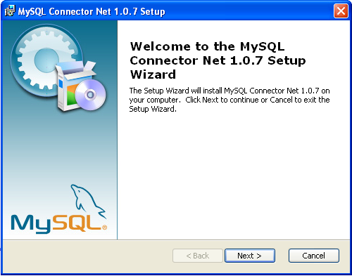You must choose the type of installation that you want to perform.
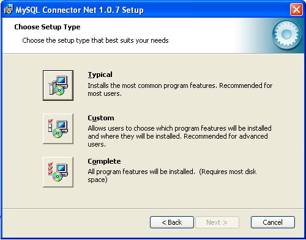For most situations, the Typical installation will be suitable. Click the button and proceed to Step 5. A Complete installation installs all the available files. To conduct a Complete installation, click the button and proceed to step 5. If you want to customize your installation, including choosing the components to install and some installation options, click the button and proceed to Step 3.
The Connector/NET installer will register the connector within the Global Assembly Cache (GAC) - this will make the Connector/NET component available to all applications, not just those where you explicitly reference the Connector/NET component. The installer will also create the necessary links in the Start menu to the documentation and release notes.
If you have chosen a custom installation, you can select the individual components that you want to install, including the core interface component, supporting documentation (a CHM file) samples and examples and the source code. Select the items, and their installation level, and then click to continue the installation.
Note
For Connector/NET 1.0.8 or lower and Connector 5.0.4 and lower the installer will attempt to install binaries for both 1.x and 2.x of the .NET Framework. If you only have one version of the framework installed, the connector installation may fail. If this happens, you can choose the framework version to be installed through the custom installation step.
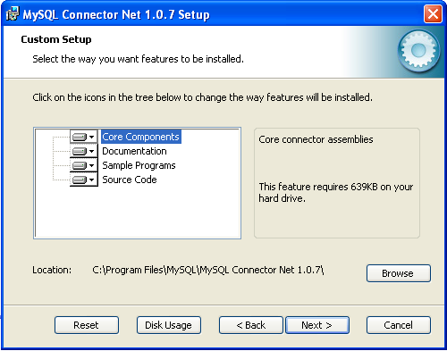You will be given a final opportunity to confirm the installation. Click to copy and install the files onto your machine.
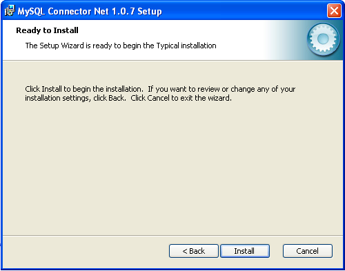Once the installation has been completed, click to exit the installer.
Unless you choose otherwise, Connector/NET is installed in
C:\Program Files\MySQL\MySQL Connector Net
, where
X.X.XX.X.X is replaced with the version
of Connector/NET you are installing. New installations do not
overwrite existing versions of Connector/NET.
Depending on your installation type, the installed components will include some or all of the following components:
bin- Connector/NET MySQL libraries for different versions of the .NET environment.docs- contains a CHM of the Connector/NET documentation.samples- sample code and applications that use the Connector/NET component.src- the source code for the Connector/NET component.
You may also use the /quiet or
/q command-line option with the
msiexec tool to install the Connector/NET
package automatically (using the default options) with no
notification to the user. Using this option you cannot select
options and no prompts, messages or dialog boxes will be
displayed.
C:\> msiexec /package conector-net.msi /quiet
To provide a progress bar to the user during automatic
installation, but still without presenting the user with a
dialog box of the ability to select options, use the
/passive option.
If you are having problems running the installer, you can
download a .zip file without an installer as an alternative.
That file is called
mysql-connector-net-.
Once downloaded, you can extract the files to a location of
your choice.
version-noinstall.zip
The .zip file contains the following directories:
bin- Connector/NET MySQL libraries for different versions of the .NET environment.doc- contains a CHM of the Connector/NET documentation.Samples- sample code and applications that use the Connector/NET component.mysqlclient- the source code for the Connector/NET component.testsuite- the test suite used to verify the operation of the Connector/NET component.
There is no installer available for installing the Connector/NET component on your Unix installation. However, the installation is very simple. Before installing, please ensure that you have a working Mono project installation.
Note that you should only install the Connector/NET component on Unix environments where you want to connect to a MySQL server through the Mono project. If you are deploying or developing on a different environment such as Java or Perl then you should use a more appropriate connectivity component. See Chapter 30, Connectors, or Chapter 29, APIs and Libraries, for more information.
To install Connector/NET on Unix/Mono:
Download the
mysql-connector-net-and extract the contents.version-noinstall.zipCopy the
MySql.Data.dllfile to your Mono project installation folder.You must register the Connector/NET component in the Global Assembly Cache using the
gacutilcommand:shell> gacutil /i MySql.Data.dll
Once installed, applications that are compiled with the
Connector/NET component need no further changes. However, you
must ensure that when you compile your applications you include
the Connector/NET component using the
-r:MySqlData.dll command-line option.
Caution
You should read this section only if you are interested in helping us test our new code. If you just want to get Connector/NET up and running on your system, you should use a standard release distribution.
To be able to access the Connector/NET source tree, you must have Subversion installed. Subversion is freely available from http://subversion.tigris.org/.
The most recent development source tree is available from our public Subversion trees at http://dev.mysql.com/tech-resources/sources.html.
To checkout out the Connector/NET sources, change to the directory where you want the copy of the Connector/NET tree to be stored, then use the following command:
shell> svn co http://svn.mysql.com/svnpublic/connector-net
A Visual Studio project is included in the source which you can use to build Connector/NET.
Connector/NET comprises several classes that are used to connect to the database, execute queries and statements, and manage query results.
The following are the major classes of Connector/NET:
MySqlCommand: Represents an SQL statement to execute against a MySQL database.MySqlCommandBuilder: Automatically generates single-table commands used to reconcile changes made to a DataSet with the associated MySQL database.MySqlConnection: Represents an open connection to a MySQL Server database.MySqlDataAdapter: Represents a set of data commands and a database connection that are used to fill a data set and update a MySQL database.MySqlDataReader: Provides a means of reading a forward-only stream of rows from a MySQL database.MySqlException: The exception that is thrown when MySQL returns an error.MySqlHelper: Helper class that makes it easier to work with the provider.MySqlTransaction: Represents an SQL transaction to be made in a MySQL database.
This section contains basic information and examples for each of the above classes. For a more detailed reference guide please see Section 30.2.4, “Connector/NET Reference”.
- 30.2.3.1.1. Class MySqlCommand Constructor Form 1
- 30.2.3.1.2. Class MySqlCommand Constructor Form 2
- 30.2.3.1.3. Class MySqlCommand Constructor Form 3
- 30.2.3.1.4. Class MySqlCommand Constructor Form 4
- 30.2.3.1.5. ExecuteNonQuery
- 30.2.3.1.6. ExecuteReader1
- 30.2.3.1.7. Using
ExecuteReader - 30.2.3.1.8. Using
Prepare - 30.2.3.1.9. ExecuteScalar
- 30.2.3.1.10. CommandText
- 30.2.3.1.11. CommandTimeout
- 30.2.3.1.12. CommandType
- 30.2.3.1.13. Connection
- 30.2.3.1.14. IsPrepared
- 30.2.3.1.15. Parameters
- 30.2.3.1.16. Transaction
- 30.2.3.1.17. UpdatedRowSource
Represents an SQL statement to execute against a MySQL database. This class cannot be inherited.
MySqlCommand features the following methods
for executing commands at a MySQL database:
| Item | Description |
| ExecuteReader | Executes commands that return rows. |
| ExecuteNonQuery | Executes commands such as SQL INSERT, DELETE, and UPDATE statements. |
| ExecuteScalar | Retrieves a single value (for example, an aggregate value) from a database. |
You can reset the CommandText property and
reuse the MySqlCommand object. However, you
must close the
MySqlDataReader
before you can execute a new or previous command.
If a
MySqlException
is generated by the method executing a
MySqlCommand, the
MySqlConnection
remains open. It is the responsibility of the programmer to
close the connection.
Note
Using the '@' symbol for parameters is now the preferred approach although the old pattern of using '?' is still supported.
Please be aware however that using '@' can cause conflicts
when user variables are also used. To help with this situation
please see the documentation on the Allow User
Variables connection string option, which can be
found here:
Section 30.2.3.3.3, “ConnectionString”.
The Old Syntax connection string option has
now been deprecated.
Examples
The following example creates a
MySqlCommand
and a MySqlConnection. The
MySqlConnection is opened and set as the
Connection
for the MySqlCommand. The example then calls
ExecuteNonQuery,
and closes the connection. To accomplish this, the
ExecuteNonQuery is passed a connection string
and a query string that is an SQL INSERT statement.
Visual Basic example:
Public Sub InsertRow(myConnectionString As String)
" If the connection string is null, use a default.
If myConnectionString = "" Then
myConnectionString = "Database=Test;Data Source=localhost;User Id=username;Password=pass"
End If
Dim myConnection As New MySqlConnection(myConnectionString)
Dim myInsertQuery As String = "INSERT INTO Orders (id, customerId, amount) Values(1001, 23, 30.66)"
Dim myCommand As New MySqlCommand(myInsertQuery)
myCommand.Connection = myConnection
myConnection.Open()
myCommand.ExecuteNonQuery()
myCommand.Connection.Close()
End Sub
C# example:
public void InsertRow(string myConnectionString)
{
// If the connection string is null, use a default.
if(myConnectionString == "")
{
myConnectionString = "Database=Test;Data Source=localhost;User Id=username;Password=pass";
}
MySqlConnection myConnection = new MySqlConnection(myConnectionString);
string myInsertQuery = "INSERT INTO Orders (id, customerId, amount) Values(1001, 23, 30.66)";
MySqlCommand myCommand = new MySqlCommand(myInsertQuery);
myCommand.Connection = myConnection;
myConnection.Open();
myCommand.ExecuteNonQuery();
myCommand.Connection.Close();
}
Overload methods for MySqlCommand
Initializes a new instance of the MySqlCommand class.
Examples
The following example creates a MySqlCommand and sets some of its properties.
Note
This example shows how to use one of the overloaded versions
of the MySqlCommand constructor. For
other examples that might be available, see the individual
overload topics.
Visual Basic example:
Public Sub CreateMySqlCommand()
Dim myConnection As New MySqlConnection _
("Persist Security Info=False;database=test;server=myServer")
myConnection.Open()
Dim myTrans As MySqlTransaction = myConnection.BeginTransaction()
Dim mySelectQuery As String = "SELECT * FROM MyTable"
Dim myCommand As New MySqlCommand(mySelectQuery, myConnection, myTrans)
myCommand.CommandTimeout = 20
End Sub
C# example:
public void CreateMySqlCommand()
{
MySqlConnection myConnection = new MySqlConnection("Persist Security Info=False;
database=test;server=myServer");
myConnection.Open();
MySqlTransaction myTrans = myConnection.BeginTransaction();
string mySelectQuery = "SELECT * FROM myTable";
MySqlCommand myCommand = new MySqlCommand(mySelectQuery, myConnection,myTrans);
myCommand.CommandTimeout = 20;
}
C++ example:
public:
void CreateMySqlCommand()
{
MySqlConnection* myConnection = new MySqlConnection(S"Persist Security Info=False;
database=test;server=myServer");
myConnection->Open();
MySqlTransaction* myTrans = myConnection->BeginTransaction();
String* mySelectQuery = S"SELECT * FROM myTable";
MySqlCommand* myCommand = new MySqlCommand(mySelectQuery, myConnection, myTrans);
myCommand->CommandTimeout = 20;
};
Initializes a new instance of the MySqlCommand class.
The base constructor initializes all fields to their default
values. The following table shows initial property values for
an instance of MySqlCommand.
| Properties | Initial Value |
CommandText | empty string ("") |
CommandTimeout | 0 |
CommandType | CommandType.Text |
Connection | Null |
You can change the value for any of these properties through a separate call to the property.
Examples
The following example creates a
MySqlCommand and sets some of its
properties.
Visual Basic example:
Public Sub CreateMySqlCommand()
Dim myCommand As New MySqlCommand()
myCommand.CommandType = CommandType.Text
End Sub
C# example:
public void CreateMySqlCommand()
{
MySqlCommand myCommand = new MySqlCommand();
myCommand.CommandType = CommandType.Text;
}
Initializes a new instance of the
MySqlCommand class with the text of the
query.
Parameters: The text of the query.
When an instance of MySqlCommand is
created, the following read/write properties are set to
initial values.
| Properties | Initial Value |
CommandText | cmdText |
CommandTimeout | 0 |
CommandType | CommandType.Text |
Connection | Null |
You can change the value for any of these properties through a separate call to the property.
Examples
The following example creates a
MySqlCommand and sets some of its
properties.
Visual Basic example:
Public Sub CreateMySqlCommand()
Dim sql as String = "SELECT * FROM mytable"
Dim myCommand As New MySqlCommand(sql)
myCommand.CommandType = CommandType.Text
End Sub
C# example:
public void CreateMySqlCommand()
{
string sql = "SELECT * FROM mytable";
MySqlCommand myCommand = new MySqlCommand(sql);
myCommand.CommandType = CommandType.Text;
}
Initializes a new instance of the
MySqlCommand class with the text of the
query and a MySqlConnection.
Parameters: The text of the query.
Parameters: A
MySqlConnection that represents the
connection to an instance of SQL Server.
When an instance of MySqlCommand is
created, the following read/write properties are set to
initial values.
| Properties | Initial Value |
CommandText | cmdText |
CommandTimeout | 0 |
CommandType | CommandType.Text |
Connection | connection |
You can change the value for any of these properties through a separate call to the property.
Examples
The following example creates a
MySqlCommand and sets some of its
properties.
Visual Basic example:
Public Sub CreateMySqlCommand()
Dim conn as new MySqlConnection("server=myServer")
Dim sql as String = "SELECT * FROM mytable"
Dim myCommand As New MySqlCommand(sql, conn)
myCommand.CommandType = CommandType.Text
End Sub
C# example:
public void CreateMySqlCommand()
{
MySqlConnection conn = new MySqlConnection("server=myserver")
string sql = "SELECT * FROM mytable";
MySqlCommand myCommand = new MySqlCommand(sql, conn);
myCommand.CommandType = CommandType.Text;
}
Initializes a new instance of the
MySqlCommand class with the text of the
query, a MySqlConnection, and the
MySqlTransaction.
Parameters: The text of the query.
Parameters: A
MySqlConnection that represents the
connection to an instance of SQL Server.
Parameters: The
MySqlTransaction in which the
MySqlCommand executes.
When an instance of MySqlCommand is
created, the following read/write properties are set to
initial values.
| Properties | Initial Value |
CommandText | cmdText |
CommandTimeout | 0 |
CommandType | CommandType.Text |
Connection | connection |
You can change the value for any of these properties through a separate call to the property.
Examples
The following example creates a
MySqlCommand and sets some of its
properties.
Visual Basic example:
Public Sub CreateMySqlCommand()
Dim conn as new MySqlConnection("server=myServer")
conn.Open();
Dim txn as MySqlTransaction = conn.BeginTransaction()
Dim sql as String = "SELECT * FROM mytable"
Dim myCommand As New MySqlCommand(sql, conn, txn)
myCommand.CommandType = CommandType.Text
End Sub
C# example:
public void CreateMySqlCommand()
{
MySqlConnection conn = new MySqlConnection("server=myserver")
conn.Open();
MySqlTransaction txn = conn.BeginTransaction();
string sql = "SELECT * FROM mytable";
MySqlCommand myCommand = new MySqlCommand(sql, conn, txn);
myCommand.CommandType = CommandType.Text;
}
Executes an SQL statement against the connection and returns the number of rows affected.
Returns: Number of rows affected
You can use ExecuteNonQuery to perform any type of database operation, however any resultsets returned will not be available. Any output parameters used in calling a stored procedure will be populated with data and can be retrieved after execution is complete. For UPDATE, INSERT, and DELETE statements, the return value is the number of rows affected by the command. For all other types of statements, the return value is -1.
Examples
The following example creates a MySqlCommand and then executes it using ExecuteNonQuery. The example is passed a string that is an SQL statement (such as UPDATE, INSERT, or DELETE) and a string to use to connect to the data source.
Visual Basic example:
Public Sub CreateMySqlCommand(myExecuteQuery As String, myConnection As MySqlConnection)
Dim myCommand As New MySqlCommand(myExecuteQuery, myConnection)
myCommand.Connection.Open()
myCommand.ExecuteNonQuery()
myConnection.Close()
End Sub
C# example:
public void CreateMySqlCommand(string myExecuteQuery, MySqlConnection myConnection)
{
MySqlCommand myCommand = new MySqlCommand(myExecuteQuery, myConnection);
myCommand.Connection.Open();
myCommand.ExecuteNonQuery();
myConnection.Close();
}
Sends the CommandText to the
MySqlConnectionConnection, and builds a
MySqlDataReader using one of the
CommandBehavior values.
Parameters: One of the
CommandBehavior values.
When the CommandType property is set to
StoredProcedure, the
CommandText property should be set to the
name of the stored procedure. The command executes this stored
procedure when you call ExecuteReader.
The MySqlDataReader supports a special mode
that enables large binary values to be read efficiently. For
more information, see the SequentialAccess
setting for CommandBehavior.
While the MySqlDataReader is in use, the
associated MySqlConnection is busy serving
the MySqlDataReader. While in this state,
no other operations can be performed on the
MySqlConnection other than closing it. This
is the case until the MySqlDataReader.Close
method of the MySqlDataReader is called. If
the MySqlDataReader is created with
CommandBehavior set to
CloseConnection, closing the
MySqlDataReader closes the connection
automatically.
Note
When calling ExecuteReader with the
SingleRow behavior, you should be aware
that using a limit clause in your SQL
will cause all rows (up to the limit given) to be retrieved
by the client. The MySqlDataReader.Read
method will still return false after the first row but
pulling all rows of data into the client will have a
performance impact. If the limit clause
is not necessary, it should be avoided.
Returns: A
MySqlDataReader object.
Sends the CommandText to the
MySqlConnectionConnection and builds a
MySqlDataReader.
Returns: A
MySqlDataReader object.
When the CommandType property is set to
StoredProcedure, the
CommandText property should be set to the
name of the stored procedure. The command executes this stored
procedure when you call ExecuteReader.
While the MySqlDataReader is in use, the
associated MySqlConnection is busy serving
the MySqlDataReader. While in this state,
no other operations can be performed on the
MySqlConnection other than closing it. This
is the case until the MySqlDataReader.Close
method of the MySqlDataReader is called.
Examples
The following example creates a
MySqlCommand, then executes it by passing a
string that is an SQL SELECT statement, and
a string to use to connect to the data source.
Visual Basic example:
Public Sub CreateMySqlDataReader(mySelectQuery As String, myConnection As MySqlConnection)
Dim myCommand As New MySqlCommand(mySelectQuery, myConnection)
myConnection.Open()
Dim myReader As MySqlDataReader
myReader = myCommand.ExecuteReader()
Try
While myReader.Read()
Console.WriteLine(myReader.GetString(0))
End While
Finally
myReader.Close
myConnection.Close
End Try
End Sub
C# example:
public void CreateMySqlDataReader(string mySelectQuery, MySqlConnection myConnection)
{
MySqlCommand myCommand = new MySqlCommand(mySelectQuery, myConnection);
myConnection.Open();
MySqlDataReader myReader;
myReader = myCommand.ExecuteReader();
try
{
while(myReader.Read())
{
Console.WriteLine(myReader.GetString(0));
}
}
finally
{
myReader.Close();
myConnection.Close();
}
}
Creates a prepared version of the command on an instance of MySQL Server.
Prepared statements are only supported on MySQL version 4.1 and higher. Calling prepare while connected to earlier versions of MySQL will succeed but will execute the statement in the same way as unprepared.
Examples
The following example demonstrates the use of the
Prepare method.
Visual Basic example:
public sub PrepareExample()
Dim cmd as New MySqlCommand("INSERT INTO mytable VALUES (?val)", myConnection)
cmd.Parameters.Add( "?val", 10 )
cmd.Prepare()
cmd.ExecuteNonQuery()
cmd.Parameters(0).Value = 20
cmd.ExecuteNonQuery()
end sub
C# example:
private void PrepareExample()
{
MySqlCommand cmd = new MySqlCommand("INSERT INTO mytable VALUES (@val)", myConnection);
cmd.Parameters.Add( "@val", 10 );
cmd.Prepare();
cmd.ExecuteNonQuery();
cmd.Parameters[0].Value = 20;
cmd.ExecuteNonQuery();
}
Executes the query, and returns the first column of the first row in the result set returned by the query. Extra columns or rows are ignored.
Returns: The first column of the first row in the result set, or a null reference if the result set is empty
Use the ExecuteScalar method to retrieve a
single value (for example, an aggregate value) from a
database. This requires less code than using the
ExecuteReader method, and then performing
the operations necessary to generate the single value using
the data returned by a MySqlDataReader
A typical ExecuteScalar query can be
formatted as in the following C# example:
C# example:
cmd.CommandText = "select count(*) from region"; Int32 count = (int32) cmd.ExecuteScalar();
Examples
The following example creates a
MySqlCommand and then executes it using
ExecuteScalar. The example is passed a
string that is an SQL statement that returns an aggregate
result, and a string to use to connect to the data source.
Visual Basic example:
Public Sub CreateMySqlCommand(myScalarQuery As String, myConnection As MySqlConnection)
Dim myCommand As New MySqlCommand(myScalarQuery, myConnection)
myCommand.Connection.Open()
myCommand.ExecuteScalar()
myConnection.Close()
End Sub
C# example:
public void CreateMySqlCommand(string myScalarQuery, MySqlConnection myConnection)
{
MySqlCommand myCommand = new MySqlCommand(myScalarQuery, myConnection);
myCommand.Connection.Open();
myCommand.ExecuteScalar();
myConnection.Close();
}
C++ example:
public:
void CreateMySqlCommand(String* myScalarQuery, MySqlConnection* myConnection)
{
MySqlCommand* myCommand = new MySqlCommand(myScalarQuery, myConnection);
myCommand->Connection->Open();
myCommand->ExecuteScalar();
myConnection->Close();
}
Gets or sets the SQL statement to execute at the data source.
Value: The SQL statement or stored procedure to execute. The default is an empty string.
When the CommandType property is set to
StoredProcedure, the
CommandText property should be set to the
name of the stored procedure. The user may be required to use
escape character syntax if the stored procedure name contains
any special characters. The command executes this stored
procedure when you call one of the Execute methods.
Examples
The following example creates a
MySqlCommand and sets some of its
properties.
Visual Basic example:
Public Sub CreateMySqlCommand()
Dim myCommand As New MySqlCommand()
myCommand.CommandText = "SELECT * FROM Mytable ORDER BY id"
myCommand.CommandType = CommandType.Text
End Sub
C# example:
public void CreateMySqlCommand()
{
MySqlCommand myCommand = new MySqlCommand();
myCommand.CommandText = "SELECT * FROM mytable ORDER BY id";
myCommand.CommandType = CommandType.Text;
}
Gets or sets the wait time before terminating the attempt to execute a command and generating an error.
Value: The time (in seconds) to wait for the command to execute. The default is 0 seconds.
MySQL currently does not support any method of canceling a pending or executing operation. All commands issued against a MySQL server will execute until completion or until an exception occurs.
MySQL Enterprise MySQL Enterprise subscribers will find more information about CommandTimeout in the Knowledge Base article, Why CommandTimeout is not Supported. Access to the MySQL Knowledge Base collection of articles is one of the advantages of subscribing to MySQL Enterprise. For more information see http://www.mysql.com/products/enterprise/advisors.html.
Gets or sets a value indicating how the
CommandText property is to be interpreted.
Value: One of the
System.Data.CommandType values. The default
is Text.
When you set the CommandType property to
StoredProcedure, you should set the
CommandText property to the name of the
stored procedure. The command executes this stored procedure
when you call one of the Execute methods.
Examples
The following example creates a
MySqlCommand and sets some of its
properties.
Visual Basic example:
Public Sub CreateMySqlCommand()
Dim myCommand As New MySqlCommand()
myCommand.CommandType = CommandType.Text
End Sub
C# example:
public void CreateMySqlCommand()
{
MySqlCommand myCommand = new MySqlCommand();
myCommand.CommandType = CommandType.Text;
}
Gets or sets the MySqlConnection used by
this instance of the MySqlCommand.
Value: The connection to a
data source. The default value is a null reference
(Nothing in Visual Basic).
If you set Connection while a transaction
is in progress and the Transaction property
is not null, an InvalidOperationException
is generated. If the Transaction property
is not null and the transaction has already been committed or
rolled back, Transaction is set to null.
Examples
The following example creates a
MySqlCommand and sets some of its
properties.
Visual Basic example:
Public Sub CreateMySqlCommand()
Dim mySelectQuery As String = "SELECT * FROM mytable ORDER BY id"
Dim myConnectString As String = "Persist Security Info=False;database=test;server=myServer"
Dim myCommand As New MySqlCommand(mySelectQuery)
myCommand.Connection = New MySqlConnection(myConnectString)
myCommand.CommandType = CommandType.Text
End Sub
C# example:
public void CreateMySqlCommand()
{
string mySelectQuery = "SELECT * FROM mytable ORDER BY id";
string myConnectString = "Persist Security Info=False;database=test;server=myServer";
MySqlCommand myCommand = new MySqlCommand(mySelectQuery);
myCommand.Connection = new MySqlConnection(myConnectString);
myCommand.CommandType = CommandType.Text;
}
Get the MySqlParameterCollection
Value: The parameters of the SQL statement or stored procedure. The default is an empty collection.
Connector/Net does not support unnamed parameters. Every parameter added to the collection must have an associated name.
Examples
The following example creates a
MySqlCommand and displays its parameters.
To accomplish this, the method is passed a
MySqlConnection, a query string that is a
SQL SELECT statement, and an array of
MySqlParameter objects.
Visual Basic example:
Public Sub CreateMySqlCommand(myConnection As MySqlConnection, _
mySelectQuery As String, myParamArray() As MySqlParameter)
Dim myCommand As New MySqlCommand(mySelectQuery, myConnection)
myCommand.CommandText = "SELECT id, name FROM mytable WHERE age=@age"
myCommand.UpdatedRowSource = UpdateRowSource.Both
myCommand.Parameters.Add(myParamArray)
Dim j As Integer
For j = 0 To myCommand.Parameters.Count - 1
myCommand.Parameters.Add(myParamArray(j))
Next j
Dim myMessage As String = ""
Dim i As Integer
For i = 0 To myCommand.Parameters.Count - 1
myMessage += myCommand.Parameters(i).ToString() & ControlChars.Cr
Next i
Console.WriteLine(myMessage)
End Sub
C# example:
public void CreateMySqlCommand(MySqlConnection myConnection, string mySelectQuery,
MySqlParameter[] myParamArray)
{
MySqlCommand myCommand = new MySqlCommand(mySelectQuery, myConnection);
myCommand.CommandText = "SELECT id, name FROM mytable WHERE age=@age";
myCommand.Parameters.Add(myParamArray);
for (int j=0; j<myParamArray.Length; j++)
{
myCommand.Parameters.Add(myParamArray[j]) ;
}
string myMessage = "";
for (int i = 0; i < myCommand.Parameters.Count; i++)
{
myMessage += myCommand.Parameters[i].ToString() + "\n";
}
MessageBox.Show(myMessage);
}
Gets or sets the MySqlTransaction within
which the MySqlCommand executes.
Value: The
MySqlTransaction. The default value is a
null reference (Nothing in Visual Basic).
You cannot set the Transaction property if
it is already set to a specific value, and the command is in
the process of executing. If you set the transaction property
to a MySqlTransaction object that is not
connected to the same MySqlConnection as
the MySqlCommand object, an exception will
be thrown the next time you attempt to execute a statement.
Gets or sets how command results are applied to the
DataRow when used by the
System.Data.Common.DbDataAdapter.Update
method of the
System.Data.Common.DbDataAdapter.
Value: One of the
UpdateRowSource values.
The default System.Data.UpdateRowSource
value is Both unless the command is
automatically generated (as in the case of the
MySqlCommandBuilder), in which case the
default is None.
- 30.2.3.2.1. Class MySqlCommandBuilder Constructor
- 30.2.3.2.2. Class MySqlCommandBuilder Constructor Form 1
- 30.2.3.2.3. Class MySqlCommandBuilder Constructor Form 2
- 30.2.3.2.4. Class MySqlCommandBuilder Constructor Form 3
- 30.2.3.2.5. DataAdapter
- 30.2.3.2.6. QuotePrefix
- 30.2.3.2.7. QuoteSuffix
- 30.2.3.2.8. DeriveParameters
- 30.2.3.2.9. GetDeleteCommand
- 30.2.3.2.10. GetInsertCommand
- 30.2.3.2.11. GetUpdateCommand
- 30.2.3.2.12. RefreshSchema
Automatically generates single-table commands used to reconcile changes made to a DataSet with the associated MySQL database. This class cannot be inherited.
The MySqlDataAdapter does not automatically
generate the SQL statements required to reconcile changes made
to a System.Data.DataSetDataSet with the
associated instance of MySQL. However, you can create a
MySqlCommandBuilder object to automatically
generate SQL statements for single-table updates if you set the
MySqlDataAdapter.SelectCommandSelectCommand
property of the MySqlDataAdapter. Then, any
additional SQL statements that you do not set are generated by
the MySqlCommandBuilder.
The MySqlCommandBuilder registers itself as a
listener for
MySqlDataAdapter.OnRowUpdatingRowUpdating
events whenever you set the DataAdapter
property. You can only associate one
MySqlDataAdapter or
MySqlCommandBuilder object with each other at
one time.
To generate INSERT, UPDATE, or DELETE statements, the
MySqlCommandBuilder uses the
SelectCommand property to retrieve a required
set of metadata automatically. If you change the
SelectCommand after the metadata has is
retrieved (for example, after the first update), you should call
the RefreshSchema method to update the
metadata.
The SelectCommand must also return at least
one primary key or unique column. If none are present, an
InvalidOperation exception is generated, and
the commands are not generated.
When using MySqlCommandbuilder and
INSERT you should set the
ReturnGeneratedIdentifiers property to
true to ensure that
AUTO_INCREMENT fields in MySQL tables return
the automatically generated value.
The MySqlCommandBuilder also uses the
MySqlCommand.ConnectionConnection,
MySqlCommand.CommandTimeoutCommandTimeout,
and MySqlCommand.TransactionTransaction
properties referenced by the SelectCommand.
The user should call RefreshSchema if any of
these properties are modified, or if the
SelectCommand itself is replaced. Otherwise
the
MySqlDataAdapter.InsertCommandInsertCommand,
MySqlDataAdapter.UpdateCommandUpdateCommand,
and
MySqlDataAdapter.DeleteCommandDeleteCommand
properties retain their previous values.
If you call Dispose, the
MySqlCommandBuilder is disassociated from the
MySqlDataAdapter, and the generated commands
are no longer used.
Note
Caution must be used when using
MySqlCommandBuilder on MySql 4.0 systems.
With MySQL 4.0, database/schema information is not provided to
the connector for a query. This means that a query that pulls
columns from two identically named tables in two or more
different databases will not cause an exception to be thrown
but will not work correctly. Even more dangerous is the
situation where your select statement references database X
but is executed in database Y and both databases have tables
with similar layouts. This situation can cause unwanted
changes or deletes. This note does not apply to MySQL versions
4.1 and later.
Examples
The following example uses the MySqlCommand,
along MySqlDataAdapter and
MySqlConnection, to select rows from a data
source. The example is passed an initialized
System.Data.DataSet, a connection string, a
query string that is an SQL SELECT statement,
and a string that is the name of the database table. The example
then creates a MySqlCommandBuilder.
Visual Basic example:
Public Shared Function SelectRows(myConnection As String, mySelectQuery As String, myTableName As String) As DataSet
Dim myConn As New MySqlConnection(myConnection)
Dim myDataAdapter As New MySqlDataAdapter()
myDataAdapter.SelectCommand = New MySqlCommand(mySelectQuery, myConn)
Dim cb As SqlCommandBuilder = New MySqlCommandBuilder(myDataAdapter)
myConn.Open()
Dim ds As DataSet = New DataSet
myDataAdapter.Fill(ds, myTableName)
' Code to modify data in DataSet here
' Without the MySqlCommandBuilder this line would fail.
myDataAdapter.Update(ds, myTableName)
myConn.Close()
End Function 'SelectRows
C# example:
public static DataSet SelectRows(string myConnection, string mySelectQuery, string myTableName)
{
MySqlConnection myConn = new MySqlConnection(myConnection);
MySqlDataAdapter myDataAdapter = new MySqlDataAdapter();
myDataAdapter.SelectCommand = new MySqlCommand(mySelectQuery, myConn);
MySqlCommandBuilder cb = new MySqlCommandBuilder(myDataAdapter);
myConn.Open();
DataSet ds = new DataSet();
myDataAdapter.Fill(ds, myTableName);
//code to modify data in DataSet here
//Without the MySqlCommandBuilder this line would fail
myDataAdapter.Update(ds, myTableName);
myConn.Close();
return ds;
}
Initializes a new instance of the
MySqlCommandBuilder class.
Initializes a new instance of the
MySqlCommandBuilder class and sets the last
one wins property.
Parameters: False to generate change protection code. True otherwise.
The lastOneWins parameter indicates whether
SQL code should be included with the generated DELETE and
UPDATE commands that checks the underlying data for changes.
If lastOneWins is true then this code is
not included and data records could be overwritten in a
multi-user or multi-threaded environments. Setting
lastOneWins to false will include this
check which will cause a concurrency exception to be thrown if
the underlying data record has changed without our knowledge.
Initializes a new instance of the
MySqlCommandBuilder class with the
associated MySqlDataAdapter object.
Parameters: The
MySqlDataAdapter to use.
The MySqlCommandBuilder registers itself as
a listener for MySqlDataAdapter.RowUpdating
events that are generated by the
MySqlDataAdapter specified in this
property.
When you create a new instance
MySqlCommandBuilder, any existing
MySqlCommandBuilder associated with this
MySqlDataAdapter is released.
Initializes a new instance of the
MySqlCommandBuilder class with the
associated MySqlDataAdapter object.
Parameters: The
MySqlDataAdapter to use.
Parameters: False to generate change protection code. True otherwise.
The MySqlCommandBuilder registers itself as
a listener for MySqlDataAdapter.RowUpdating
events that are generated by the
MySqlDataAdapter specified in this
property.
When you create a new instance
MySqlCommandBuilder, any existing
MySqlCommandBuilder associated with this
MySqlDataAdapter is released.
The lastOneWins parameter indicates whether
SQL code should be included with the generated DELETE and
UPDATE commands that checks the underlying data for changes.
If lastOneWins is true then this code is
not included and data records could be overwritten in a
multi-user or multi-threaded environments. Setting
lastOneWins to false will include this
check which will cause a concurrency exception to be thrown if
the underlying data record has changed without our knowledge.
Gets or sets a MySqlDataAdapter object for
which SQL statements are automatically generated.
Value: A
MySqlDataAdapter object.
The MySqlCommandBuilder registers itself as
a listener for MySqlDataAdapter.RowUpdating
events that are generated by the
MySqlDataAdapter specified in this
property.
When you create a new instance
MySqlCommandBuilder, any existing
MySqlCommandBuilder associated with this
MySqlDataAdapter is released.
Gets or sets the beginning character or characters to use when specifying MySQL database objects (for example, tables or columns) whose names contain characters such as spaces or reserved tokens.
Value: The beginning character or characters to use. The default value is `.
Database objects in MySQL can contain special characters such
as spaces that would make normal SQL strings impossible to
correctly parse. Use of the QuotePrefix and
the QuoteSuffix properties allows the
MySqlCommandBuilder to build SQL statements
that handle this situation.
Gets or sets the beginning character or characters to use when specifying MySQL database objects (for example, tables or columns) whose names contain characters such as spaces or reserved tokens.
Value: The beginning character or characters to use. The default value is `.
Database objects in MySQL can contain special characters such
as spaces that would make normal SQL strings impossible to
correctly parse. Use of the QuotePrefix and
the QuoteSuffix properties allows the
MySqlCommandBuilder to build SQL statements
that handle this situation.
Gets the automatically generated
MySqlCommand object required to perform
deletions on the database.
Returns: The
MySqlCommand object generated to handle
delete operations.
An application can use the GetDeleteCommand
method for informational or troubleshooting purposes because
it returns the MySqlCommand object to be
executed.
You can also use GetDeleteCommand as the
basis of a modified command. For example, you might call
GetDeleteCommand and modify the
MySqlCommand.CommandTimeout value, and then
explicitly set that on the
MySqlDataAdapter.
After the SQL statement is first generated, the application
must explicitly call RefreshSchema if it
changes the statement in any way. Otherwise, the
GetDeleteCommand will be still be using
information from the previous statement, which might not be
correct. The SQL statements are first generated either when
the application calls
System.Data.Common.DataAdapter.Update or
GetDeleteCommand.
Gets the automatically generated
MySqlCommand object required to perform
insertions on the database.
Returns: The
MySqlCommand object generated to handle
insert operations.
An application can use the GetInsertCommand
method for informational or troubleshooting purposes because
it returns the MySqlCommand object to be
executed.
You can also use the GetInsertCommand as
the basis of a modified command. For example, you might call
GetInsertCommand and modify the
MySqlCommand.CommandTimeout value, and then
explicitly set that on the
MySqlDataAdapter.
After the SQL statement is first generated, the application
must explicitly call RefreshSchema if it
changes the statement in any way. Otherwise, the
GetInsertCommand will be still be using
information from the previous statement, which might not be
correct. The SQL statements are first generated either when
the application calls
System.Data.Common.DataAdapter.Update or
GetInsertCommand.
Gets the automatically generated
MySqlCommand object required to perform
updates on the database.
Returns: The
MySqlCommand object generated to handle
update operations.
An application can use the GetUpdateCommand
method for informational or troubleshooting purposes because
it returns the MySqlCommand object to be
executed.
You can also use GetUpdateCommand as the
basis of a modified command. For example, you might call
GetUpdateCommand and modify the
MySqlCommand.CommandTimeout value, and then
explicitly set that on the
MySqlDataAdapter.
After the SQL statement is first generated, the application
must explicitly call RefreshSchema if it
changes the statement in any way. Otherwise, the
GetUpdateCommand will be still be using
information from the previous statement, which might not be
correct. The SQL statements are first generated either when
the application calls
System.Data.Common.DataAdapter.Update or
GetUpdateCommand.
Refreshes the database schema information used to generate INSERT, UPDATE, or DELETE statements.
An application should call RefreshSchema
whenever the SELECT statement associated
with the MySqlCommandBuilder changes.
An application should call RefreshSchema
whenever the MySqlDataAdapter.SelectCommand
value of the MySqlDataAdapter changes.
MySQL Enterprise MySQL Enterprise subscribers will find more information on this topic in the Knowledge Base article, Understanding MySqlCommandBuilder and the LastOneWins Setting . For information about subscribing to MySQL Enterprise see http://www.mysql.com/products/enterprise/advisors.html.
- 30.2.3.3.1. Class MySqlConnection Constructor (Default)
- 30.2.3.3.2. Class MySqlConnection Constructor Form 1
- 30.2.3.3.3. ConnectionString
- 30.2.3.3.4. Open
- 30.2.3.3.5. Database
- 30.2.3.3.6. State
- 30.2.3.3.7. ServerVersion
- 30.2.3.3.8. Close
- 30.2.3.3.9. CreateCommand
- 30.2.3.3.10. BeginTransaction
- 30.2.3.3.11. BeginTransaction1
- 30.2.3.3.12. ChangeDatabase
- 30.2.3.3.13. StateChange
- 30.2.3.3.14. InfoMessage
- 30.2.3.3.15. ConnectionTimeout
Represents an open connection to a MySQL Server database. This class cannot be inherited.
A MySqlConnection object represents a session
to a MySQL Server data source. When you create an instance of
MySqlConnection, all properties are set to
their initial values. For a list of these values, see the
MySqlConnection constructor.
If the MySqlConnection goes out of scope, it
is not closed. Therefore, you must explicitly close the
connection by calling MySqlConnection.Close
or MySqlConnection.Dispose.
Examples
The following example creates a MySqlCommand
and a MySqlConnection. The
MySqlConnection is opened and set as the
MySqlCommand.Connection for the
MySqlCommand. The example then calls
MySqlCommand.ExecuteNonQuery, and closes the
connection. To accomplish this, the
ExecuteNonQuery is passed a connection string
and a query string that is an SQL INSERT statement.
Visual Basic example:
Public Sub InsertRow(myConnectionString As String)
' If the connection string is null, use a default.
If myConnectionString = "" Then
myConnectionString = "Database=Test;Data Source=localhost;User Id=username;Password=pass"
End If
Dim myConnection As New MySqlConnection(myConnectionString)
Dim myInsertQuery As String = "INSERT INTO Orders (id, customerId, amount) Values(1001, 23, 30.66)"
Dim myCommand As New MySqlCommand(myInsertQuery)
myCommand.Connection = myConnection
myConnection.Open()
myCommand.ExecuteNonQuery()
myCommand.Connection.Close()
End Sub
C# example:
public void InsertRow(string myConnectionString)
{
// If the connection string is null, use a default.
if(myConnectionString == "")
{
myConnectionString = "Database=Test;Data Source=localhost;User Id=username;Password=pass";
}
MySqlConnection myConnection = new MySqlConnection(myConnectionString);
string myInsertQuery = "INSERT INTO Orders (id, customerId, amount) Values(1001, 23, 30.66)";
MySqlCommand myCommand = new MySqlCommand(myInsertQuery);
myCommand.Connection = myConnection;
myConnection.Open();
myCommand.ExecuteNonQuery();
myCommand.Connection.Close();
}
Initializes a new instance of the
MySqlConnection class.
When a new instance of MySqlConnection is
created, the read/write properties are set to the following
initial values unless they are specifically set using their
associated keywords in the ConnectionString
property.
| Properties | Initial Value |
ConnectionString | empty string ("") |
ConnectionTimeout | 15 |
Database | empty string ("") |
DataSource | empty string ("") |
ServerVersion | empty string ("") |
You can change the value for these properties only by using
the ConnectionString property.
Examples
Overload methods for MySqlConnection
Initializes a new instance of the
MySqlConnection class.
Initializes a new instance of the
MySqlConnection class when given a string
containing the connection string.
When a new instance of MySqlConnection is
created, the read/write properties are set to the following
initial values unless they are specifically set using their
associated keywords in the ConnectionString
property.
| Properties | Initial Value |
ConnectionString | empty string ("") |
ConnectionTimeout | 15 |
Database | empty string ("") |
DataSource | empty string ("") |
ServerVersion | empty string ("") |
You can change the value for these properties only by using
the ConnectionString property.
Examples
Parameters: The connection properties used to open the MySQL database.
Gets or sets the string used to connect to a MySQL Server database.
The ConnectionString returned may not be
exactly like what was originally set but will be indentical in
terms of keyword/value pairs. Security information will not be
included unless the Persist Security Info value is set to
true.
You can use the ConnectionString property
to connect to a database. The following example illustrates a
typical connection string.
"Persist Security Info=False;database=MyDB;»
server=MySqlServer;user id=myUser;Password=myPass"
The ConnectionString property can be set
only when the connection is closed. Many of the connection
string values have corresponding read-only properties. When
the connection string is set, all of these properties are
updated, except when an error is detected. In this case, none
of the properties are updated.
MySqlConnection properties return only
those settings contained in the
ConnectionString.
To connect to a local machine, specify "localhost" for the server. If you do not specify a server, localhost is assumed.
Resetting the ConnectionString on a closed
connection resets all connection string values (and related
properties) including the password. For example, if you set a
connection string that includes "Database= MyDb", and then
reset the connection string to "Data Source=myserver;User
Id=myUser;Password=myPass", the
MySqlConnection.Database property is no
longer set to MyDb.
The connection string is parsed immediately after being set.
If errors in syntax are found when parsing, a runtime
exception, such as ArgumentException, is
generated. Other errors can be found only when an attempt is
made to open the connection.
The basic format of a connection string consists of a series
of keyword/value pairs separated by semicolons. The equal sign
(=) connects each keyword and its value.
Additional notes on setting values for options:
To include values that contain a semicolon, single-quote character, or double-quote character, the value must be enclosed in double quotes. If the value contains both a semicolon and a double-quote character, the value can be enclosed in single quotes. The single quote is also useful if the value begins with a double-quote character. Conversely, the double quote can be used if the value begins with a single quote. If the value contains both single-quote and double-quote characters, the quote character used to enclose the value must be doubled each time it occurs within the value.
To include preceding or trailing spaces in the string value, the value must be enclosed in either single quotes or double quotes. Any leading or trailing spaces around integer, Boolean, or enumerated values are ignored, even if enclosed in quotes. However, spaces within a string literal keyword or value are preserved. Using .NET Framework version 1.1, single or double quotes may be used within a connection string without using delimiters (for example, Data Source= my'Server or Data Source= my"Server), unless a quote character is the first or last character in the value.
To include an equal sign (=) in a keyword or value, it must be preceded by another equal sign. For example, in the hypothetical connection string
"key==word=value"
the keyword is "key=word" and the value is "value".
If a specific keyword in a keyword= value pair occurs multiple times in a connection string, the last occurrence listed is used in the value set.
Keywords are not case sensitive.
The following table lists the valid names for keyword values
within the ConnectionString.
| Name | Default | Description |
Connect Timeout, Connection
Timeout | 15 | The length of time (in seconds) to wait for a connection to the server before terminating the attempt and generating an error. |
Host, Server, Data
Source, DataSource,
Address, Addr,
Network Address | localhost | The name or network address of the instance of MySQL to which to connect. Multiple hosts can be specified separated by &. This can be useful where multiple MySQL servers are configured for replication and you are not concerned about the precise server you are connecting to. No attempt is made by the provider to synchronize writes to the database so care should be taken when using this option. In Unix environment with Mono, this can be a fully qualified path to MySQL socket filename. With this configuration, the Unix socket will be used instead of TCP/IP socket. Currently only a single socket name can be given so accessing MySQL in a replicated environment using Unix sockets is not currently supported. |
Ignore Prepare | true | When true, instructs the provider to ignore any calls to
MySqlCommand.Prepare(). This option
is provided to prevent issues with corruption of the
statements when use with server side prepared
statements. If you want to use server-side prepare
statements, set this option to false. This option was
added in Connector/NET 5.0.3 and Connector/NET 1.0.9. |
Port | 3306 | The port MySQL is using to listen for connections. Specify -1 for this value to use a named pipe connection (Windows only). This value is ignored if Unix socket is used. |
Protocol | socket | Specifies the type of connection to make to the server.Values can be: socket or tcp for a socket connection pipe for a named pipe connection unix for a Unix socket connection memory to use MySQL shared memory |
CharSet, Character Set | Specifies the character set that should be used to encode all queries sent to the server. Resultsets are still returned in the character set of the data returned. | |
Logging | false | When true, various pieces of information is output to any configured TraceListeners. |
Allow Batch | true | When true, multiple SQL statements can be sent with one command execution. -Note- Starting with MySQL 4.1.1, batch statements should be separated by the server-defined separator character. Commands sent to earlier versions of MySQL should be separated with ';'. |
Encrypt | false | For Connector/NET 5.0.3 and later, when true, SSL
encryption is used for all data sent between the
client and server if the server has a certificate
installed. Recognized values are
true, false,
yes, and no. In
versions before 5.0.3, this option had no effect. |
Initial Catalog, Database | mysql | The name of the database to use intially |
Password, pwd | The password for the MySQL account being used. | |
Persist Security Info | false | When set to false or no (strongly
recommended), security-sensitive information, such as
the password, is not returned as part of the
connection if the connection is open or has ever been
in an open state. Resetting the connection string
resets all connection string values including the
password. Recognized values are
true, false,
yes, and no. |
User Id, Username,
Uid, User name | The MySQL login account being used. | |
Shared Memory Name | MYSQL | The name of the shared memory object to use for communication if the connection protocol is set to memory. |
Allow Zero Datetime | false | True to have MySqlDataReader.GetValue() return a MySqlDateTime for date
or datetime columns that have illegal values. False
will cause a System.DateTime object
to be returned for legal values and an exception will
be thrown for illegal values. |
Convert Zero Datetime | false | True to have MySqlDataReader.GetValue() and
MySqlDataReader.GetDateTime()
return DateTime.MinValue for date or datetime columns
that have illegal values. |
Old Syntax, OldSyntax | false | Allows use of '@' symbol as a parameter marker. See
MySqlCommand for more info. This
option was deprecated in Connector/NET 5.2.2. All
future code should be written using the '@' symbol. |
Pipe Name, Pipe | mysql | When set to the name of a named pipe, the
MySqlConnection will attempt to
connect to MySQL on that named pipe.This settings only
applies to the Windows platform. |
Procedure Cache | 25 | Sets the size of the stored procedure cache. By default, Connector/NET will store the metadata (input/output datatypes) about the last 25 stored procedures used. To disable the stored procedure cache, set the value to zero (0). This option was added in Connector/NET 5.0.2 and Connector/NET 1.0.9. |
Use Procedure Bodies | true | Setting this option to false indicates that the user
connecting to the database does not have the
SELECT privileges for the
mysql.proc (stored procedures)
table. When to set to false,
Connector/NET will not rely on this information being
available when the procedure is called. Because
Connector/NET will be unable to determine this
information, you should explicitly set the types of
the all the parameters before the call and the
parameters should be added to the command in the exact
same order as they appear in the procedure definition.
This option was added in Connector/NET 5.0.4 and
Connector/NET 1.0.10. |
default command timeout | Sets the default value of the command timeout to be used. This does not supercede the individual command timeout property on an individual command object. If you set the command timeout property, that will be used. This option was added in Connector/NET 5.1.4 | |
Treat Tiny As Boolean | true | Setting this value to false indicates that
TINYINT(1) will be treated as an
INT. See also
Section 10.1.1, “Overview of Numeric Types” for a further
explanation of the TINYINT and
BOOL data types. |
Allow User Variables | false | Setting this to true indicates that the provider
expects user variables in the SQL. This option was
added in Connector/NET version 5.2.2. |
The following table lists the valid names for connection
pooling values within the ConnectionString.
For more information about connection pooling, see Connection
Pooling for the MySQL Data Provider.
| Name | Default | Description |
Connection Lifetime | 0 | When a connection is returned to the pool, its creation time is compared
with the current time, and the connection is destroyed
if that time span (in seconds) exceeds the value
specified by Connection Lifetime.
This is useful in clustered configurations to force
load balancing between a running server and a server
just brought online. A value of zero (0) causes pooled
connections to have the maximum connection timeout. |
Max Pool Size | 100 | The maximum number of connections allowed in the pool. |
Min Pool Size | 0 | The minimum number of connections allowed in the pool. |
Pooling | true | When true, the MySqlConnection
object is drawn from the appropriate pool, or if
necessary, is created and added to the appropriate
pool. Recognized values are true,
false, yes, and
no. |
Reset Pooled Connections,
ResetConnections,
ResetPooledConnections | true | Specifies whether a ping and a reset should be sent to the server before a pooled connection is returned. Not resetting will yield faster connection opens but also will not clear out session items such as temp tables. |
Cache Server Configuration,
CacheServerConfiguration,
CacheServerConfig | false | Specifies whether server variables should be updated when a pooled connection is returned. Turning this one will yeild faster opens but will also not catch any server changes made by other connections. |
When setting keyword or connection pooling values that require a Boolean value, you can use 'yes' instead of 'true', and 'no' instead of 'false'.
Note
The MySQL Data Provider uses the native socket protocol to communicate with MySQL. Therefore, it does not support the use of an ODBC data source name (DSN) when connecting to MySQL because it does not add an ODBC layer.
Caution
In this release, the application should use caution when constructing a connection string based on user input (for example when retrieving user ID and password information from a dialog box, and appending it to the connection string). The application should ensure that a user cannot embed extra connection string parameters in these values (for example, entering a password as "validpassword;database=somedb" in an attempt to attach to a different database).
Examples
The following example creates a
MySqlConnection and sets some of its
properties
Visual Basic example:
Public Sub CreateConnection()
Dim myConnection As New MySqlConnection()
myConnection.ConnectionString = "Persist Security Info=False;database=myDB;server=myHost;Connect Timeout=30;user id=myUser; pwd=myPass"
myConnection.Open()
End Sub 'CreateConnection
C# example:
public void CreateConnection()
{
MySqlConnection myConnection = new MySqlConnection();
myConnection.ConnectionString = "Persist Security Info=False;database=myDB;server=myHost;Connect Timeout=30;user id=myUser; pwd=myPass";
myConnection.Open();
}
Examples
The following example creates a
MySqlConnection in Unix environment with
Mono installed. MySQL socket filename used in this example is
"/var/lib/mysql/mysql.sock". The actual filename depends on
your MySQL configuration.
Visual Basic example:
Public Sub CreateConnection()
Dim myConnection As New MySqlConnection()
myConnection.ConnectionString = "database=myDB;server=/var/lib/mysql/mysql.sock;user id=myUser; pwd=myPass"
myConnection.Open()
End Sub 'CreateConnection
C# example:
public void CreateConnection()
{
MySqlConnection myConnection = new MySqlConnection();
myConnection.ConnectionString = "database=myDB;server=/var/lib/mysql/mysql.sock;user id=myUser; pwd=myPass";
myConnection.Open();
}
Opens a database connection with the property settings specified by the ConnectionString.
Exception: Cannot open a connection without specifying a data source or server.
Exception: A connection-level error occurred while opening the connection.
The MySqlConnection draws an open
connection from the connection pool if one is available.
Otherwise, it establishes a new connection to an instance of
MySQL.
Examples
The following example creates a
MySqlConnection, opens it, displays some of
its properties, then closes the connection.
Visual Basic example:
Public Sub CreateMySqlConnection(myConnString As String)
Dim myConnection As New MySqlConnection(myConnString)
myConnection.Open()
MessageBox.Show("ServerVersion: " + myConnection.ServerVersion _
+ ControlChars.Cr + "State: " + myConnection.State.ToString())
myConnection.Close()
End Sub
C# example:
public void CreateMySqlConnection(string myConnString)
{
MySqlConnection myConnection = new MySqlConnection(myConnString);
myConnection.Open();
MessageBox.Show("ServerVersion: " + myConnection.ServerVersion +
"\nState: " + myConnection.State.ToString());
myConnection.Close();
}
Gets the name of the current database or the database to be used after a connection is opened.
Returns: The name of the current database or the name of the database to be used after a connection is opened. The default value is an empty string.
The Database property does not update
dynamically. If you change the current database using an SQL
statement, then this property may reflect the wrong value. If
you change the current database using the
ChangeDatabase method, this property is
updated to reflect the new database.
Examples
The following example creates a
MySqlConnection and displays some of its
read-only properties.
Visual Basic example:
Public Sub CreateMySqlConnection()
Dim myConnString As String = _
"Persist Security Info=False;database=test;server=localhost;user id=joeuser;pwd=pass"
Dim myConnection As New MySqlConnection( myConnString )
myConnection.Open()
MessageBox.Show( "Server Version: " + myConnection.ServerVersion _
+ ControlChars.NewLine + "Database: " + myConnection.Database )
myConnection.ChangeDatabase( "test2" )
MessageBox.Show( "ServerVersion: " + myConnection.ServerVersion _
+ ControlChars.NewLine + "Database: " + myConnection.Database )
myConnection.Close()
End Sub
C# example:
public void CreateMySqlConnection()
{
string myConnString =
"Persist Security Info=False;database=test;server=localhost;user id=joeuser;pwd=pass";
MySqlConnection myConnection = new MySqlConnection( myConnString );
myConnection.Open();
MessageBox.Show( "Server Version: " + myConnection.ServerVersion
+ "\nDatabase: " + myConnection.Database );
myConnection.ChangeDatabase( "test2" );
MessageBox.Show( "ServerVersion: " + myConnection.ServerVersion
+ "\nDatabase: " + myConnection.Database );
myConnection.Close();
}
Gets the current state of the connection.
Returns: A bitwise
combination of the
System.Data.ConnectionState values. The
default is Closed.
The allowed state changes are:
From
ClosedtoOpen, using theOpenmethod of the connection object.From
OpentoClosed, using either theClosemethod or theDisposemethod of the connection object.
Examples
The following example creates a
MySqlConnection, opens it, displays some of
its properties, then closes the connection.
Visual Basic example:
Public Sub CreateMySqlConnection(myConnString As String)
Dim myConnection As New MySqlConnection(myConnString)
myConnection.Open()
MessageBox.Show("ServerVersion: " + myConnection.ServerVersion _
+ ControlChars.Cr + "State: " + myConnection.State.ToString())
myConnection.Close()
End Sub
C# example:
public void CreateMySqlConnection(string myConnString)
{
MySqlConnection myConnection = new MySqlConnection(myConnString);
myConnection.Open();
MessageBox.Show("ServerVersion: " + myConnection.ServerVersion +
"\nState: " + myConnection.State.ToString());
myConnection.Close();
}
Gets a string containing the version of the MySQL server to which the client is connected.
Returns: The version of the instance of MySQL.
Exception: The connection is closed.
Examples
The following example creates a
MySqlConnection, opens it, displays some of
its properties, then closes the connection.
Visual Basic example:
Public Sub CreateMySqlConnection(myConnString As String)
Dim myConnection As New MySqlConnection(myConnString)
myConnection.Open()
MessageBox.Show("ServerVersion: " + myConnection.ServerVersion _
+ ControlChars.Cr + "State: " + myConnection.State.ToString())
myConnection.Close()
End Sub
C# example:
public void CreateMySqlConnection(string myConnString)
{
MySqlConnection myConnection = new MySqlConnection(myConnString);
myConnection.Open();
MessageBox.Show("ServerVersion: " + myConnection.ServerVersion +
"\nState: " + myConnection.State.ToString());
myConnection.Close();
}
Closes the connection to the database. This is the preferred method of closing any open connection.
The Close method rolls back any pending
transactions. It then releases the connection to the
connection pool, or closes the connection if connection
pooling is disabled.
An application can call Close more than one
time. No exception is generated.
Examples
The following example creates a
MySqlConnection, opens it, displays some of
its properties, then closes the connection.
Visual Basic example:
Public Sub CreateMySqlConnection(myConnString As String)
Dim myConnection As New MySqlConnection(myConnString)
myConnection.Open()
MessageBox.Show("ServerVersion: " + myConnection.ServerVersion _
+ ControlChars.Cr + "State: " + myConnection.State.ToString())
myConnection.Close()
End Sub
C# example:
public void CreateMySqlConnection(string myConnString)
{
MySqlConnection myConnection = new MySqlConnection(myConnString);
myConnection.Open();
MessageBox.Show("ServerVersion: " + myConnection.ServerVersion +
"\nState: " + myConnection.State.ToString());
myConnection.Close();
}
Creates and returns a MySqlCommand object
associated with the MySqlConnection.
Returns: A
MySqlCommand object.
Begins a database transaction.
Returns: An object representing the new transaction.
Exception: Parallel transactions are not supported.
This command is equivalent to the MySQL BEGIN TRANSACTION command.
You must explicitly commit or roll back the transaction using
the MySqlTransaction.Commit or
MySqlTransaction.Rollback method.
Note
If you do not specify an isolation level, the default
isolation level is used. To specify an isolation level with
the BeginTransaction method, use the
overload that takes the iso parameter.
Examples
The following example creates a
MySqlConnection and a
MySqlTransaction. It also demonstrates how
to use the BeginTransaction, a
MySqlTransaction.Commit, and
MySqlTransaction.Rollback methods.
Visual Basic example:
Public Sub RunTransaction(myConnString As String)
Dim myConnection As New MySqlConnection(myConnString)
myConnection.Open()
Dim myCommand As MySqlCommand = myConnection.CreateCommand()
Dim myTrans As MySqlTransaction
' Start a local transaction
myTrans = myConnection.BeginTransaction()
' Must assign both transaction object and connection
' to Command object for a pending local transaction
myCommand.Connection = myConnection
myCommand.Transaction = myTrans
Try
myCommand.CommandText = "Insert into Test (id, desc) VALUES (100, 'Description')"
myCommand.ExecuteNonQuery()
myCommand.CommandText = "Insert into Test (id, desc) VALUES (101, 'Description')"
myCommand.ExecuteNonQuery()
myTrans.Commit()
Console.WriteLine("Both records are written to database.")
Catch e As Exception
Try
myTrans.Rollback()
Catch ex As MySqlException
If Not myTrans.Connection Is Nothing Then
Console.WriteLine("An exception of type " + ex.GetType().ToString() + _
" was encountered while attempting to roll back the transaction.")
End If
End Try
Console.WriteLine("An exception of type " + e.GetType().ToString() + _
"was encountered while inserting the data.")
Console.WriteLine("Neither record was written to database.")
Finally
myConnection.Close()
End Try
End Sub
C# example:
public void RunTransaction(string myConnString)
{
MySqlConnection myConnection = new MySqlConnection(myConnString);
myConnection.Open();
MySqlCommand myCommand = myConnection.CreateCommand();
MySqlTransaction myTrans;
// Start a local transaction
myTrans = myConnection.BeginTransaction();
// Must assign both transaction object and connection
// to Command object for a pending local transaction
myCommand.Connection = myConnection;
myCommand.Transaction = myTrans;
try
{
myCommand.CommandText = "insert into Test (id, desc) VALUES (100, 'Description')";
myCommand.ExecuteNonQuery();
myCommand.CommandText = "insert into Test (id, desc) VALUES (101, 'Description')";
myCommand.ExecuteNonQuery();
myTrans.Commit();
Console.WriteLine("Both records are written to database.");
}
catch(Exception e)
{
try
{
myTrans.Rollback();
}
catch (SqlException ex)
{
if (myTrans.Connection != null)
{
Console.WriteLine("An exception of type " + ex.GetType() +
" was encountered while attempting to roll back the transaction.");
}
}
Console.WriteLine("An exception of type " + e.GetType() +
" was encountered while inserting the data.");
Console.WriteLine("Neither record was written to database.");
}
finally
{
myConnection.Close();
}
}
Begins a database transaction with the specified isolation level.
Parameters: The isolation level under which the transaction should run.
Returns: An object representing the new transaction.
Exception: Parallel exceptions are not supported.
This command is equivalent to the MySQL BEGIN TRANSACTION command.
You must explicitly commit or roll back the transaction using
the MySqlTransaction.Commit or
MySqlTransaction.Rollback method.
Note
If you do not specify an isolation level, the default
isolation level is used. To specify an isolation level with
the BeginTransaction method, use the
overload that takes the iso parameter.
Examples
The following example creates a
MySqlConnection and a
MySqlTransaction. It also demonstrates how
to use the BeginTransaction, a
MySqlTransaction.Commit, and
MySqlTransaction.Rollback methods.
Visual Basic example:
Public Sub RunTransaction(myConnString As String)
Dim myConnection As New MySqlConnection(myConnString)
myConnection.Open()
Dim myCommand As MySqlCommand = myConnection.CreateCommand()
Dim myTrans As MySqlTransaction
' Start a local transaction
myTrans = myConnection.BeginTransaction()
' Must assign both transaction object and connection
' to Command object for a pending local transaction
myCommand.Connection = myConnection
myCommand.Transaction = myTrans
Try
myCommand.CommandText = "Insert into Test (id, desc) VALUES (100, 'Description')"
myCommand.ExecuteNonQuery()
myCommand.CommandText = "Insert into Test (id, desc) VALUES (101, 'Description')"
myCommand.ExecuteNonQuery()
myTrans.Commit()
Console.WriteLine("Both records are written to database.")
Catch e As Exception
Try
myTrans.Rollback()
Catch ex As MySqlException
If Not myTrans.Connection Is Nothing Then
Console.WriteLine("An exception of type " + ex.GetType().ToString() + _
" was encountered while attempting to roll back the transaction.")
End If
End Try
Console.WriteLine("An exception of type " + e.GetType().ToString() + _
"was encountered while inserting the data.")
Console.WriteLine("Neither record was written to database.")
Finally
myConnection.Close()
End Try
End Sub
C# example:
public void RunTransaction(string myConnString)
{
MySqlConnection myConnection = new MySqlConnection(myConnString);
myConnection.Open();
MySqlCommand myCommand = myConnection.CreateCommand();
MySqlTransaction myTrans;
// Start a local transaction
myTrans = myConnection.BeginTransaction();
// Must assign both transaction object and connection
// to Command object for a pending local transaction
myCommand.Connection = myConnection;
myCommand.Transaction = myTrans;
try
{
myCommand.CommandText = "insert into Test (id, desc) VALUES (100, 'Description')";
myCommand.ExecuteNonQuery();
myCommand.CommandText = "insert into Test (id, desc) VALUES (101, 'Description')";
myCommand.ExecuteNonQuery();
myTrans.Commit();
Console.WriteLine("Both records are written to database.");
}
catch(Exception e)
{
try
{
myTrans.Rollback();
}
catch (SqlException ex)
{
if (myTrans.Connection != null)
{
Console.WriteLine("An exception of type " + ex.GetType() +
" was encountered while attempting to roll back the transaction.");
}
}
Console.WriteLine("An exception of type " + e.GetType() +
" was encountered while inserting the data.");
Console.WriteLine("Neither record was written to database.");
}
finally
{
myConnection.Close();
}
}
Changes the current database for an open MySqlConnection.
Parameters: The name of the database to use.
The value supplied in the database
parameter must be a valid database name. The
database parameter cannot contain a null
value, an empty string, or a string with only blank
characters.
When you are using connection pooling against MySQL, and you close the connection, it is returned to the connection pool. The next time the connection is retrieved from the pool, the reset connection request executes before the user performs any operations.
MySQL Enterprise MySQL Enterprise subscribers will find more information on this subject in the Knowledge Base article, Understanding and Using Connection Pooling. Access to the MySQL Knowledge Base collection of articles is one of the advantages of subscribing to MySQL Enterprise. To subscribe see http://www.mysql.com/products/enterprise/advisors.html.
Exception: The database name is not valid.
Exception: The connection is not open.
Exception: Cannot change the database.
Examples
The following example creates a
MySqlConnection and displays some of its
read-only properties.
Visual Basic example:
Public Sub CreateMySqlConnection()
Dim myConnString As String = _
"Persist Security Info=False;database=test;server=localhost;user id=joeuser;pwd=pass"
Dim myConnection As New MySqlConnection( myConnString )
myConnection.Open()
MessageBox.Show( "Server Version: " + myConnection.ServerVersion _
+ ControlChars.NewLine + "Database: " + myConnection.Database )
myConnection.ChangeDatabase( "test2" )
MessageBox.Show( "ServerVersion: " + myConnection.ServerVersion _
+ ControlChars.NewLine + "Database: " + myConnection.Database )
myConnection.Close()
End Sub
C# example:
public void CreateMySqlConnection()
{
string myConnString =
"Persist Security Info=False;database=test;server=localhost;user id=joeuser;pwd=pass";
MySqlConnection myConnection = new MySqlConnection( myConnString );
myConnection.Open();
MessageBox.Show( "Server Version: " + myConnection.ServerVersion
+ "\nDatabase: " + myConnection.Database );
myConnection.ChangeDatabase( "test2" );
MessageBox.Show( "ServerVersion: " + myConnection.ServerVersion
+ "\nDatabase: " + myConnection.Database );
myConnection.Close();
}
Occurs when the state of the connection changes.
The StateChange event fires whenever the
State changes from closed to opened, or
from opened to closed. StateChange fires
immediately after the MySqlConnection
transitions.
If an event handler throws an exception from within the
StateChange event, the exception propagates
to the caller of the Open or
Close method.
The StateChange event is not raised unless
you explicitly call Close or
Dispose.
The event handler receives an argument of type
System.Data.StateChangeEventArgs containing
data related to this event. The following
StateChangeEventArgs properties provide
information specific to this event.
| Property | Description |
System.Data.StateChangeEventArgs.CurrentState
| Gets the new state of the connection. The connection object will be in the new state already when the event is fired. |
System.Data.StateChangeEventArgs.OriginalState
| Gets the original state of the connection. |
Occurs when MySQL returns warnings as a result of executing a command or query.
Gets the time to wait while trying to establish a connection before terminating the attempt and generating an error.
Exception: The value set is less than 0.
A value of 0 indicates no limit, and should be avoided in a
MySqlConnection.ConnectionString because an
attempt to connect will wait indefinitely.
Examples
The following example creates a MySqlConnection and sets some of its properties in the connection string.
Visual Basic example:
Public Sub CreateSqlConnection() Dim myConnection As New MySqlConnection() myConnection.ConnectionString = "Persist Security Info=False;Username=user;Password=pass;database=test1;server=localhost;Connect Timeout=30" myConnection.Open() End Sub
C# example:
public void CreateSqlConnection()
{
MySqlConnection myConnection = new MySqlConnection();
myConnection.ConnectionString = "Persist Security Info=False;Username=user;»
Password=pass;database=test1;server=localhost;Connect Timeout=30";
myConnection.Open();
}
- 30.2.3.4.1. Class MySqlDataAdapter Constructor
- 30.2.3.4.2. Class MySqlDataAdapter Constructor Form 1
- 30.2.3.4.3. Class MySqlDataAdapter Constructor Form 2
- 30.2.3.4.4. Class MySqlDataAdapter Constructor Form 3
- 30.2.3.4.5. DeleteCommand
- 30.2.3.4.6. InsertCommand
- 30.2.3.4.7. UpdateCommand
- 30.2.3.4.8. SelectCommand
Represents a set of data commands and a database connection that are used to fill a data set and update a MySQL database. This class cannot be inherited.
The MySQLDataAdapter, serves as a bridge
between a System.Data.DataSet and MySQL for
retrieving and saving data. The
MySQLDataAdapter provides this bridge by
mapping DbDataAdapter.Fill, which changes the
data in the DataSet to match the data in the
data source, and DbDataAdapter.Update, which
changes the data in the data source to match the data in the
DataSet, using the appropriate SQL statements
against the data source.
When the MySQLDataAdapter fills a
DataSet, it will create the necessary tables
and columns for the returned data if they do not already exist.
However, primary key information will not be included in the
implicitly created schema unless the
System.Data.MissingSchemaAction property is
set to
System.Data.MissingSchemaAction.AddWithKey.
You may also have the MySQLDataAdapter create
the schema of the DataSet, including primary
key information, before filling it with data using
System.Data.Common.DbDataAdapter.FillSchema.
MySQLDataAdapter is used in conjunction with
MySqlConnection and
MySqlCommand to increase performance when
connecting to a MySQL database.
The MySQLDataAdapter also includes the
MySqlDataAdapter.SelectCommand,
MySqlDataAdapter.InsertCommand,
MySqlDataAdapter.DeleteCommand,
MySqlDataAdapter.UpdateCommand, and
DataAdapter.TableMappings properties to
facilitate the loading and updating of data.
When an instance of MySQLDataAdapter is
created, the read/write properties are set to initial values.
For a list of these values, see the
MySQLDataAdapter constructor.
Note
Please be aware that the DataColumn class
in .NET only allows columns with type of Int16, Int32, or
Int64 to be autoincrement columns. If you plan to use
autoincremement columns with MySQL, you should consider using
signed integer columns.
Examples
The following example creates a MySqlCommand
and a MySqlConnection. The
MySqlConnection is opened and set as the
MySqlCommand.Connection for the
MySqlCommand. The example then calls
MySqlCommand.ExecuteNonQuery, and closes the
connection. To accomplish this, the
ExecuteNonQuery is passed a connection string
and a query string that is an SQL INSERT statement.
Visual Basic example:
Public Function SelectRows(dataSet As DataSet, connection As String, query As String) As DataSet
Dim conn As New MySqlConnection(connection)
Dim adapter As New MySqlDataAdapter()
adapter.SelectCommand = new MySqlCommand(query, conn)
adapter.Fill(dataset)
Return dataset
End Function
C# example:
public DataSet SelectRows(DataSet dataset,string connection,string query)
{
MySqlConnection conn = new MySqlConnection(connection);
MySqlDataAdapter adapter = new MySqlDataAdapter();
adapter.SelectCommand = new MySqlCommand(query, conn);
adapter.Fill(dataset);
return dataset;
}
Overload methods for MySqlDataAdapter
Initializes a new instance of the MySqlDataAdapter class.
When an instance of MySqlDataAdapter is
created, the following read/write properties are set to the
following initial values.
| Properties | Initial Value |
MissingMappingAction
|
MissingMappingAction.Passthrough
|
MissingSchemaAction
| MissingSchemaAction.Add
|
You can change the value of any of these properties through a separate call to the property.
Examples
The following example creates a
MySqlDataAdapter and sets some of its
properties.
Visual Basic example:
Public Sub CreateSqlDataAdapter()
Dim conn As MySqlConnection = New MySqlConnection("Data Source=localhost;" & _
"database=test")
Dim da As MySqlDataAdapter = New MySqlDataAdapter
da.MissingSchemaAction = MissingSchemaAction.AddWithKey
da.SelectCommand = New MySqlCommand("SELECT id, name FROM mytable", conn)
da.InsertCommand = New MySqlCommand("INSERT INTO mytable (id, name) " & _
"VALUES (@id, @name)", conn)
da.UpdateCommand = New MySqlCommand("UPDATE mytable SET id=@id, name=@name " & _
"WHERE id=@oldId", conn)
da.DeleteCommand = New MySqlCommand("DELETE FROM mytable WHERE id=@id", conn)
da.InsertCommand.Parameters.Add("@id", MySqlDbType.VarChar, 5, "id")
da.InsertCommand.Parameters.Add("@name", MySqlDbType.VarChar, 40, "name")
da.UpdateCommand.Parameters.Add("@id", MySqlDbType.VarChar, 5, "id")
da.UpdateCommand.Parameters.Add("@name", MySqlDbType.VarChar, 40, "name")
da.UpdateCommand.Parameters.Add("@oldId", MySqlDbType.VarChar, 5, "id").SourceVersion = DataRowVersion.Original
da.DeleteCommand.Parameters.Add("@id", MySqlDbType.VarChar, 5, "id").SourceVersion = DataRowVersion.Original
End Sub
C# example:
public static void CreateSqlDataAdapter()
{
MySqlConnection conn = new MySqlConnection("Data Source=localhost;database=test");
MySqlDataAdapter da = new MySqlDataAdapter();
da.MissingSchemaAction = MissingSchemaAction.AddWithKey;
da.SelectCommand = new MySqlCommand("SELECT id, name FROM mytable", conn);
da.InsertCommand = new MySqlCommand("INSERT INTO mytable (id, name) " +
"VALUES (@id, @name)", conn);
da.UpdateCommand = new MySqlCommand("UPDATE mytable SET id=@id, name=@name " +
"WHERE id=@oldId", conn);
da.DeleteCommand = new MySqlCommand("DELETE FROM mytable WHERE id=@id", conn);
da.InsertCommand.Parameters.Add("@id", MySqlDbType.VarChar, 5, "id");
da.InsertCommand.Parameters.Add("@name", MySqlDbType.VarChar, 40, "name");
da.UpdateCommand.Parameters.Add("@id", MySqlDbType.VarChar, 5, "id");
da.UpdateCommand.Parameters.Add("@name", MySqlDbType.VarChar, 40, "name");
da.UpdateCommand.Parameters.Add("@oldId", MySqlDbType.VarChar, 5, "id").SourceVersion = DataRowVersion.Original;
da.DeleteCommand.Parameters.Add("@id", MySqlDbType.VarChar, 5, "id").SourceVersion = DataRowVersion.Original;
}
Initializes a new instance of the
MySqlDataAdapter class with the specified
MySqlCommand as the
SelectCommand property.
Parameters:
MySqlCommand that is an SQL
SELECT statement or stored procedure and is
set as the SelectCommand property of the
MySqlDataAdapter.
When an instance of MySqlDataAdapter is
created, the following read/write properties are set to the
following initial values.
| Properties | Initial Value |
MissingMappingAction
|
MissingMappingAction.Passthrough
|
MissingSchemaAction
| MissingSchemaAction.Add
|
You can change the value of any of these properties through a separate call to the property.
When SelectCommand (or any of the other
command properties) is assigned to a previously created
MySqlCommand, the
MySqlCommand is not cloned. The
SelectCommand maintains a reference to the
previously created MySqlCommand object.
Examples
The following example creates a
MySqlDataAdapter and sets some of its
properties.
Visual Basic example:
Public Sub CreateSqlDataAdapter()
Dim conn As MySqlConnection = New MySqlConnection("Data Source=localhost;" & _
"database=test")
Dim cmd as new MySqlCommand("SELECT id, name FROM mytable", conn)
Dim da As MySqlDataAdapter = New MySqlDataAdapter(cmd)
da.MissingSchemaAction = MissingSchemaAction.AddWithKey
da.InsertCommand = New MySqlCommand("INSERT INTO mytable (id, name) " & _
"VALUES (@id, @name)", conn)
da.UpdateCommand = New MySqlCommand("UPDATE mytable SET id=@id, name=@name " & _
"WHERE id=@oldId", conn)
da.DeleteCommand = New MySqlCommand("DELETE FROM mytable WHERE id=@id", conn)
da.InsertCommand.Parameters.Add("@id", MySqlDbType.VarChar, 5, "id")
da.InsertCommand.Parameters.Add("@name", MySqlDbType.VarChar, 40, "name")
da.UpdateCommand.Parameters.Add("@id", MySqlDbType.VarChar, 5, "id")
da.UpdateCommand.Parameters.Add("@name", MySqlDbType.VarChar, 40, "name")
da.UpdateCommand.Parameters.Add("@oldId", MySqlDbType.VarChar, 5, "id").SourceVersion = DataRowVersion.Original
da.DeleteCommand.Parameters.Add("@id", MySqlDbType.VarChar, 5, "id").SourceVersion = DataRowVersion.Original
End Sub
C# example:
public static void CreateSqlDataAdapter()
{
MySqlConnection conn = new MySqlConnection("Data Source=localhost;database=test");
MySqlCommand cmd = new MySqlCommand("SELECT id, name FROM mytable", conn);
MySqlDataAdapter da = new MySqlDataAdapter(cmd);
da.MissingSchemaAction = MissingSchemaAction.AddWithKey;
da.InsertCommand = new MySqlCommand("INSERT INTO mytable (id, name) " +
"VALUES (@id, @name)", conn);
da.UpdateCommand = new MySqlCommand("UPDATE mytable SET id=@id, name=@name " +
"WHERE id=@oldId", conn);
da.DeleteCommand = new MySqlCommand("DELETE FROM mytable WHERE id=@id", conn);
da.InsertCommand.Parameters.Add("@id", MySqlDbType.VarChar, 5, "id");
da.InsertCommand.Parameters.Add("@name", MySqlDbType.VarChar, 40, "name");
da.UpdateCommand.Parameters.Add("@id", MySqlDbType.VarChar, 5, "id");
da.UpdateCommand.Parameters.Add("@name", MySqlDbType.VarChar, 40, "name");
da.UpdateCommand.Parameters.Add("@oldId", MySqlDbType.VarChar, 5, "id").SourceVersion = DataRowVersion.Original;
da.DeleteCommand.Parameters.Add("@id", MySqlDbType.VarChar, 5, "id").SourceVersion = DataRowVersion.Original;
}
Initializes a new instance of the
MySqlDataAdapter class with a
SelectCommand and a
MySqlConnection object.
Parameters: A
String that is an SQL
SELECT statement or stored procedure to be
used by the SelectCommand property of the
MySqlDataAdapter.
Parameters: A
MySqlConnection that represents the
connection.
This implementation of the MySqlDataAdapter
opens and closes a MySqlConnection if it is
not already open. This can be useful in a an application that
must call the DbDataAdapter.Fill method for
two or more MySqlDataAdapter objects. If
the MySqlConnection is already open, you
must explicitly call MySqlConnection.Close
or MySqlConnection.Dispose to close it.
When an instance of MySqlDataAdapter is
created, the following read/write properties are set to the
following initial values.
| Properties | Initial Value |
MissingMappingAction
|
MissingMappingAction.Passthrough
|
MissingSchemaAction
| MissingSchemaAction.Add
|
You can change the value of any of these properties through a separate call to the property.
Examples
The following example creates a
MySqlDataAdapter and sets some of its
properties.
Visual Basic example:
Public Sub CreateSqlDataAdapter()
Dim conn As MySqlConnection = New MySqlConnection("Data Source=localhost;" & _
"database=test")
Dim da As MySqlDataAdapter = New MySqlDataAdapter("SELECT id, name FROM mytable", conn)
da.MissingSchemaAction = MissingSchemaAction.AddWithKey
da.InsertCommand = New MySqlCommand("INSERT INTO mytable (id, name) " & _
"VALUES (@id, @name)", conn)
da.UpdateCommand = New MySqlCommand("UPDATE mytable SET id=@id, name=@name " & _
"WHERE id=@oldId", conn)
da.DeleteCommand = New MySqlCommand("DELETE FROM mytable WHERE id=@id", conn)
da.InsertCommand.Parameters.Add("@id", MySqlDbType.VarChar, 5, "id")
da.InsertCommand.Parameters.Add("@name", MySqlDbType.VarChar, 40, "name")
da.UpdateCommand.Parameters.Add("@id", MySqlDbType.VarChar, 5, "id")
da.UpdateCommand.Parameters.Add("@name", MySqlDbType.VarChar, 40, "name")
da.UpdateCommand.Parameters.Add("@oldId", MySqlDbType.VarChar, 5, "id").SourceVersion = DataRowVersion.Original
da.DeleteCommand.Parameters.Add("@id", MySqlDbType.VarChar, 5, "id").SourceVersion = DataRowVersion.Original
End Sub
C# example:
public static void CreateSqlDataAdapter()
{
MySqlConnection conn = new MySqlConnection("Data Source=localhost;database=test");
MySqlDataAdapter da = new MySqlDataAdapter("SELECT id, name FROM mytable", conn);
da.MissingSchemaAction = MissingSchemaAction.AddWithKey;
da.InsertCommand = new MySqlCommand("INSERT INTO mytable (id, name) " +
"VALUES (@id, @name)", conn);
da.UpdateCommand = new MySqlCommand("UPDATE mytable SET id=@id, name=@name " +
"WHERE id=@oldId", conn);
da.DeleteCommand = new MySqlCommand("DELETE FROM mytable WHERE id=@id", conn);
da.InsertCommand.Parameters.Add("@id", MySqlDbType.VarChar, 5, "id");
da.InsertCommand.Parameters.Add("@name", MySqlDbType.VarChar, 40, "name");
da.UpdateCommand.Parameters.Add("@id", MySqlDbType.VarChar, 5, "id");
da.UpdateCommand.Parameters.Add("@name", MySqlDbType.VarChar, 40, "name");
da.UpdateCommand.Parameters.Add("@oldId", MySqlDbType.VarChar, 5, "id").SourceVersion = DataRowVersion.Original;
da.DeleteCommand.Parameters.Add("@id", MySqlDbType.VarChar, 5, "id").SourceVersion = DataRowVersion.Original;
}
Initializes a new instance of the
MySqlDataAdapter class with a
SelectCommand and a connection string.
Parameters: A
string that is an SQL
SELECT statement or stored procedure to be
used by the SelectCommand property of the
MySqlDataAdapter.
Parameters: The connection string
When an instance of MySqlDataAdapter is
created, the following read/write properties are set to the
following initial values.
| Properties | Initial Value |
MissingMappingAction
|
MissingMappingAction.Passthrough
|
MissingSchemaAction
| MissingSchemaAction.Add
|
You can change the value of any of these properties through a separate call to the property.
Examples
The following example creates a
MySqlDataAdapter and sets some of its
properties.
Visual Basic example:
Public Sub CreateSqlDataAdapter()
Dim da As MySqlDataAdapter = New MySqlDataAdapter("SELECT id, name FROM mytable", "Data Source=localhost;database=test")
Dim conn As MySqlConnection = da.SelectCommand.Connection
da.MissingSchemaAction = MissingSchemaAction.AddWithKey
da.InsertCommand = New MySqlCommand("INSERT INTO mytable (id, name) " & _
"VALUES (@id, @name)", conn)
da.UpdateCommand = New MySqlCommand("UPDATE mytable SET id=@id, name=@name " & _
"WHERE id=@oldId", conn)
da.DeleteCommand = New MySqlCommand("DELETE FROM mytable WHERE id=@id", conn)
da.InsertCommand.Parameters.Add("@id", MySqlDbType.VarChar, 5, "id")
da.InsertCommand.Parameters.Add("@name", MySqlDbType.VarChar, 40, "name")
da.UpdateCommand.Parameters.Add("@id", MySqlDbType.VarChar, 5, "id")
da.UpdateCommand.Parameters.Add("@name", MySqlDbType.VarChar, 40, "name")
da.UpdateCommand.Parameters.Add("@oldId", MySqlDbType.VarChar, 5, "id").SourceVersion = DataRowVersion.Original
da.DeleteCommand.Parameters.Add("@id", MySqlDbType.VarChar, 5, "id").SourceVersion = DataRowVersion.Original
End Sub
C# example:
public static void CreateSqlDataAdapter()
{
MySqlDataAdapter da = new MySqlDataAdapter("SELECT id, name FROM mytable", "Data Source=localhost;database=test");
MySqlConnection conn = da.SelectCommand.Connection;
da.MissingSchemaAction = MissingSchemaAction.AddWithKey;
da.InsertCommand = new MySqlCommand("INSERT INTO mytable (id, name) " +
"VALUES (@id, @name)", conn);
da.UpdateCommand = new MySqlCommand("UPDATE mytable SET id=@id, name=@name " +
"WHERE id=@oldId", conn);
da.DeleteCommand = new MySqlCommand("DELETE FROM mytable WHERE id=@id", conn);
da.InsertCommand.Parameters.Add("@id", MySqlDbType.VarChar, 5, "id");
da.InsertCommand.Parameters.Add("@name", MySqlDbType.VarChar, 40, "name");
da.UpdateCommand.Parameters.Add("@id", MySqlDbType.VarChar, 5, "id");
da.UpdateCommand.Parameters.Add("@name", MySqlDbType.VarChar, 40, "name");
da.UpdateCommand.Parameters.Add("@oldId", MySqlDbType.VarChar, 5, "id").SourceVersion = DataRowVersion.Original;
da.DeleteCommand.Parameters.Add("@id", MySqlDbType.VarChar, 5, "id").SourceVersion = DataRowVersion.Original;
}
Gets or sets an SQL statement or stored procedure used to delete records from the data set.
Value: A
MySqlCommand used during
System.Data.Common.DataAdapter.Update to
delete records in the database that correspond to deleted rows
in the DataSet.
During
System.Data.Common.DataAdapter.Update, if
this property is not set and primary key information is
present in the DataSet, the
DeleteCommand can be generated
automatically if you set the SelectCommand
property and use the MySqlCommandBuilder.
Then, any additional commands that you do not set are
generated by the MySqlCommandBuilder. This
generation logic requires key column information to be present
in the DataSet.
When DeleteCommand is assigned to a
previously created MySqlCommand, the
MySqlCommand is not cloned. The
DeleteCommand maintains a reference to the
previously created MySqlCommand object.
Examples
The following example creates a
MySqlDataAdapter and sets the
SelectCommand and
DeleteCommand properties. It assumes you
have already created a MySqlConnection
object.
Visual Basic example:
Public Shared Function CreateCustomerAdapter(conn As MySqlConnection) As MySqlDataAdapter
Dim da As MySqlDataAdapter = New MySqlDataAdapter()
Dim cmd As MySqlCommand
Dim parm As MySqlParameter
' Create the SelectCommand.
cmd = New MySqlCommand("SELECT * FROM mytable WHERE id=@id AND name=@name", conn)
cmd.Parameters.Add("@id", MySqlDbType.VarChar, 15)
cmd.Parameters.Add("@name", MySqlDbType.VarChar, 15)
da.SelectCommand = cmd
' Create the DeleteCommand.
cmd = New MySqlCommand("DELETE FROM mytable WHERE id=@id", conn)
parm = cmd.Parameters.Add("@id", MySqlDbType.VarChar, 5, "id")
parm.SourceVersion = DataRowVersion.Original
da.DeleteCommand = cmd
Return da
End Function
C# example:
public static MySqlDataAdapter CreateCustomerAdapter(MySqlConnection conn)
{
MySqlDataAdapter da = new MySqlDataAdapter();
MySqlCommand cmd;
MySqlParameter parm;
// Create the SelectCommand.
cmd = new MySqlCommand("SELECT * FROM mytable WHERE id=@id AND name=@name", conn);
cmd.Parameters.Add("@id", MySqlDbType.VarChar, 15);
cmd.Parameters.Add("@name", MySqlDbType.VarChar, 15);
da.SelectCommand = cmd;
// Create the DeleteCommand.
cmd = new MySqlCommand("DELETE FROM mytable WHERE id=@id", conn);
parm = cmd.Parameters.Add("@id", MySqlDbType.VarChar, 5, "id");
parm.SourceVersion = DataRowVersion.Original;
da.DeleteCommand = cmd;
return da;
}
Gets or sets an SQL statement or stored procedure used to insert records into the data set.
Value: A
MySqlCommand used during
System.Data.Common.DataAdapter.Update to
insert records into the database that correspond to new rows
in the DataSet.
During
System.Data.Common.DataAdapter.Update, if
this property is not set and primary key information is
present in the DataSet, the
InsertCommand can be generated
automatically if you set the SelectCommand
property and use the MySqlCommandBuilder.
Then, any additional commands that you do not set are
generated by the MySqlCommandBuilder. This
generation logic requires key column information to be present
in the DataSet.
When InsertCommand is assigned to a
previously created MySqlCommand, the
MySqlCommand is not cloned. The
InsertCommand maintains a reference to the
previously created MySqlCommand object.
Note
If execution of this command returns rows, these rows may be
added to the DataSet depending on how you
set the MySqlCommand.UpdatedRowSource
property of the MySqlCommand object.
Examples
The following example creates a
MySqlDataAdapter and sets the
SelectCommand and
InsertCommand properties. It assumes you
have already created a MySqlConnection
object.
Visual Basic example:
Public Shared Function CreateCustomerAdapter(conn As MySqlConnection) As MySqlDataAdapter
Dim da As MySqlDataAdapter = New MySqlDataAdapter()
Dim cmd As MySqlCommand
Dim parm As MySqlParameter
' Create the SelectCommand.
cmd = New MySqlCommand("SELECT * FROM mytable WHERE id=@id AND name=@name", conn)
cmd.Parameters.Add("@id", MySqlDbType.VarChar, 15)
cmd.Parameters.Add("@name", MySqlDbType.VarChar, 15)
da.SelectCommand = cmd
' Create the InsertCommand.
cmd = New MySqlCommand("INSERT INTO mytable (id,name) VALUES (@id, @name)", conn)
cmd.Parameters.Add( "@id", MySqlDbType.VarChar, 15, "id" )
cmd.Parameters.Add( "@name", MySqlDbType.VarChar, 15, "name" )
da.InsertCommand = cmd
Return da
End Function
C# example:
public static MySqlDataAdapter CreateCustomerAdapter(MySqlConnection conn)
{
MySqlDataAdapter da = new MySqlDataAdapter();
MySqlCommand cmd;
MySqlParameter parm;
// Create the SelectCommand.
cmd = new MySqlCommand("SELECT * FROM mytable WHERE id=@id AND name=@name", conn);
cmd.Parameters.Add("@id", MySqlDbType.VarChar, 15);
cmd.Parameters.Add("@name", MySqlDbType.VarChar, 15);
da.SelectCommand = cmd;
// Create the InsertCommand.
cmd = new MySqlCommand("INSERT INTO mytable (id,name) VALUES (@id,@name)", conn);
cmd.Parameters.Add("@id", MySqlDbType.VarChar, 15, "id" );
cmd.Parameters.Add("@name", MySqlDbType.VarChar, 15, "name" );
da.InsertCommand = cmd;
return da;
}
Gets or sets an SQL statement or stored procedure used to updated records in the data source.
Value: A
MySqlCommand used during
System.Data.Common.DataAdapter.Update to
update records in the database with data from the
DataSet.
During
System.Data.Common.DataAdapter.Update, if
this property is not set and primary key information is
present in the DataSet, the
UpdateCommand can be generated
automatically if you set the SelectCommand
property and use the MySqlCommandBuilder.
Then, any additional commands that you do not set are
generated by the MySqlCommandBuilder. This
generation logic requires key column information to be present
in the DataSet.
When UpdateCommand is assigned to a
previously created MySqlCommand, the
MySqlCommand is not cloned. The
UpdateCommand maintains a reference to the
previously created MySqlCommand object.
Note
If execution of this command returns rows, these rows may be
merged with the DataSet depending on how you set the
MySqlCommand.UpdatedRowSource property of
the MySqlCommand object.
Examples
The following example creates a
MySqlDataAdapter and sets the
SelectCommand and
UpdateCommand properties. It assumes you
have already created a MySqlConnection
object.
Visual Basic example:
Public Shared Function CreateCustomerAdapter(conn As MySqlConnection) As MySqlDataAdapter
Dim da As MySqlDataAdapter = New MySqlDataAdapter()
Dim cmd As MySqlCommand
Dim parm As MySqlParameter
' Create the SelectCommand.
cmd = New MySqlCommand("SELECT * FROM mytable WHERE id=@id AND name=@name", conn)
cmd.Parameters.Add("@id", MySqlDbType.VarChar, 15)
cmd.Parameters.Add("@name", MySqlDbType.VarChar, 15)
da.SelectCommand = cmd
' Create the UpdateCommand.
cmd = New MySqlCommand("UPDATE mytable SET id=@id, name=@name WHERE id=@oldId", conn)
cmd.Parameters.Add( "@id", MySqlDbType.VarChar, 15, "id" )
cmd.Parameters.Add( "@name", MySqlDbType.VarChar, 15, "name" )
parm = cmd.Parameters.Add("@oldId", MySqlDbType.VarChar, 15, "id")
parm.SourceVersion = DataRowVersion.Original
da.UpdateCommand = cmd
Return da
End Function
C# example:
public static MySqlDataAdapter CreateCustomerAdapter(MySqlConnection conn)
{
MySqlDataAdapter da = new MySqlDataAdapter();
MySqlCommand cmd;
MySqlParameter parm;
// Create the SelectCommand.
cmd = new MySqlCommand("SELECT * FROM mytable WHERE id=@id AND name=@name", conn);
cmd.Parameters.Add("@id", MySqlDbType.VarChar, 15);
cmd.Parameters.Add("@name", MySqlDbType.VarChar, 15);
da.SelectCommand = cmd;
// Create the UpdateCommand.
cmd = new MySqlCommand("UPDATE mytable SET id=@id, name=@name WHERE id=@oldId", conn);
cmd.Parameters.Add("@id", MySqlDbType.VarChar, 15, "id" );
cmd.Parameters.Add("@name", MySqlDbType.VarChar, 15, "name" );
parm = cmd.Parameters.Add( "@oldId", MySqlDbType.VarChar, 15, "id" );
parm.SourceVersion = DataRowVersion.Original;
da.UpdateCommand = cmd;
return da;
}
Gets or sets an SQL statement or stored procedure used to select records in the data source.
Value: A
MySqlCommand used during
System.Data.Common.DbDataAdapter.Fill to
select records from the database for placement in the
DataSet.
When SelectCommand is assigned to a
previously created MySqlCommand, the
MySqlCommand is not cloned. The
SelectCommand maintains a reference to the
previously created MySqlCommand object.
If the SelectCommand does not return any
rows, no tables are added to the DataSet,
and no exception is raised.
Examples
The following example creates a
MySqlDataAdapter and sets the
SelectCommand and
InsertCommand properties. It assumes you
have already created a MySqlConnection
object.
Visual Basic example:
Public Shared Function CreateCustomerAdapter(conn As MySqlConnection) As MySqlDataAdapter
Dim da As MySqlDataAdapter = New MySqlDataAdapter()
Dim cmd As MySqlCommand
Dim parm As MySqlParameter
' Create the SelectCommand.
cmd = New MySqlCommand("SELECT * FROM mytable WHERE id=@id AND name=@name", conn)
cmd.Parameters.Add("@id", MySqlDbType.VarChar, 15)
cmd.Parameters.Add("@name", MySqlDbType.VarChar, 15)
da.SelectCommand = cmd
' Create the InsertCommand.
cmd = New MySqlCommand("INSERT INTO mytable (id,name) VALUES (@id, @name)", conn)
cmd.Parameters.Add( "@id", MySqlDbType.VarChar, 15, "id" )
cmd.Parameters.Add( "@name", MySqlDbType.VarChar, 15, "name" )
da.InsertCommand = cmd
Return da
End Function
C# example:
public static MySqlDataAdapter CreateCustomerAdapter(MySqlConnection conn)
{
MySqlDataAdapter da = new MySqlDataAdapter();
MySqlCommand cmd;
MySqlParameter parm;
// Create the SelectCommand.
cmd = new MySqlCommand("SELECT * FROM mytable WHERE id=@id AND name=@name", conn);
cmd.Parameters.Add("@id", MySqlDbType.VarChar, 15);
cmd.Parameters.Add("@name", MySqlDbType.VarChar, 15);
da.SelectCommand = cmd;
// Create the InsertCommand.
cmd = new MySqlCommand("INSERT INTO mytable (id,name) VALUES (@id,@name)", conn);
cmd.Parameters.Add("@id", MySqlDbType.VarChar, 15, "id" );
cmd.Parameters.Add("@name", MySqlDbType.VarChar, 15, "name" );
da.InsertCommand = cmd;
return da;
}
- 30.2.3.5.1. GetBytes
- 30.2.3.5.2. GetTimeSpan
- 30.2.3.5.3. GetDateTime
- 30.2.3.5.4. GetMySqlDateTime
- 30.2.3.5.5. GetString
- 30.2.3.5.6. GetDecimal
- 30.2.3.5.7. GetDouble
- 30.2.3.5.8. GetFloat
- 30.2.3.5.9. GetGiud
- 30.2.3.5.10. GetInt16
- 30.2.3.5.11. GetInt32
- 30.2.3.5.12. GetInt64
- 30.2.3.5.13. GetUInt16
- 30.2.3.5.14. GetUInt32
- 30.2.3.5.15. GetUInt64
To create a MySQLDataReader, you must call
the MySqlCommand.ExecuteReader method of the
MySqlCommand object, rather than directly
using a constructor.
While the MySqlDataReader is in use, the
associated MySqlConnection is busy serving
the MySqlDataReader, and no other operations
can be performed on the MySqlConnection other
than closing it. This is the case until the
MySqlDataReader.Close method of the
MySqlDataReader is called.
MySqlDataReader.IsClosed and
MySqlDataReader.RecordsAffected are the only
properties that you can call after the
MySqlDataReader is closed. Though the
RecordsAffected property may be accessed at
any time while the MySqlDataReader exists,
always call Close before returning the value
of RecordsAffected to ensure an accurate
return value.
For optimal performance, MySqlDataReader
avoids creating unnecessary objects or making unnecessary copies
of data. As a result, multiple calls to methods such as
MySqlDataReader.GetValue return a reference
to the same object. Use caution if you are modifying the
underlying value of the objects returned by methods such as
GetValue.
Examples
The following example creates a
MySqlConnection, a
MySqlCommand, and a
MySqlDataReader. The example reads through
the data, writing it out to the console. Finally, the example
closes the MySqlDataReader, then the
MySqlConnection.
Visual Basic example:
Public Sub ReadMyData(myConnString As String)
Dim mySelectQuery As String = "SELECT OrderID, CustomerID FROM Orders"
Dim myConnection As New MySqlConnection(myConnString)
Dim myCommand As New MySqlCommand(mySelectQuery, myConnection)
myConnection.Open()
Dim myReader As MySqlDataReader
myReader = myCommand.ExecuteReader()
' Always call Read before accessing data.
While myReader.Read()
Console.WriteLine((myReader.GetInt32(0) & ", " & myReader.GetString(1)))
End While
' always call Close when done reading.
myReader.Close()
' Close the connection when done with it.
myConnection.Close()
End Sub 'ReadMyData
C# example:
public void ReadMyData(string myConnString) {
string mySelectQuery = "SELECT OrderID, CustomerID FROM Orders";
MySqlConnection myConnection = new MySqlConnection(myConnString);
MySqlCommand myCommand = new MySqlCommand(mySelectQuery,myConnection);
myConnection.Open();
MySqlDataReader myReader;
myReader = myCommand.ExecuteReader();
// Always call Read before accessing data.
while (myReader.Read()) {
Console.WriteLine(myReader.GetInt32(0) + ", " + myReader.GetString(1));
}
// always call Close when done reading.
myReader.Close();
// Close the connection when done with it.
myConnection.Close();
}
GetBytes returns the number of available
bytes in the field. In most cases this is the exact length of
the field. However, the number returned may be less than the
true length of the field if GetBytes has
already been used to obtain bytes from the field. This may be
the case, for example, if the
MySqlDataReader is reading a large data
structure into a buffer. For more information, see the
SequentialAccess setting for
MySqlCommand.CommandBehavior.
If you pass a buffer that is a null reference
(Nothing in Visual Basic),
GetBytes returns the length of the field in
bytes.
No conversions are performed; therefore the data retrieved must already be a byte array.
Gets the value of the specified column as a
TimeSpan object.
Parameters: The zero-based column ordinal.
Returns: The value of the specified column.
Gets the value of the specified column as a
System.DateTime object.
Note
MySQL allows date columns to contain the value '0000-00-00'
and datetime columns to contain the value '0000-00-00
00:00:00'. The DateTime structure cannot contain or
represent these values. To read a datetime value from a
column that might contain zero values, use
GetMySqlDateTime. The behavior of reading
a zero datetime column using this method is defined by the
ZeroDateTimeBehavior connection string
option. For more information on this option, please refer to
MySqlConnection.ConnectionString.
Parameters: The zero-based column ordinal.
Returns: The value of the specified column.
Gets the value of the specified column as a
MySql.Data.Types.MySqlDateTime object.
Parameters: The zero-based column ordinal.
Returns: The value of the specified column.
Gets the value of the specified column as a
String object.
Parameters: The zero-based column ordinal.
Returns: The value of the specified column.
Gets the value of the specified column as a
Decimal object.
Parameters: The zero-based column ordinal.
Returns: The value of the specified column.
Gets the value of the specified column as a double-precision floating point number.
Parameters: The zero-based column ordinal.
Returns: The value of the specified column.
Gets the value of the specified column as a single-precision floating point number.
Parameters: The zero-based column ordinal.
Returns: The value of the specified column.
Gets the value of the specified column as a globally-unique identifier (GUID).
Parameters: The zero-based column ordinal.
Returns: The value of the specified column.
Gets the value of the specified column as a 16-bit signed integer.
Parameters: The zero-based column ordinal.
Returns: The value of the specified column.
Gets the value of the specified column as a 32-bit signed integer.
Parameters: The zero-based column ordinal.
Returns: The value of the specified column.
Gets the value of the specified column as a 64-bit signed integer.
Parameters: The zero-based column ordinal.
Returns: The value of the specified column.
Gets the value of the specified column as a 16-bit unsigned integer.
Parameters: The zero-based column ordinal.
Returns: The value of the specified column.
Gets the value of the specified column as a 32-bit unsigned integer.
Parameters: The zero-based column ordinal.
Returns: The value of the specified column.
This class is created whenever the MySQL Data Provider encounters an error generated from the server.
Any open connections are not automatically closed when an
exception is thrown. If the client application determines that
the exception is fatal, it should close any open
MySqlDataReader objects or
MySqlConnection objects.
Examples
The following example generates a
MySqlException due to a missing server, and
then displays the exception.
Visual Basic example:
Public Sub ShowException()
Dim mySelectQuery As String = "SELECT column1 FROM table1"
Dim myConnection As New MySqlConnection ("Data Source=localhost;Database=Sample;")
Dim myCommand As New MySqlCommand(mySelectQuery, myConnection)
Try
myCommand.Connection.Open()
Catch e As MySqlException
MessageBox.Show( e.Message )
End Try
End Sub
C# example:
public void ShowException()
{
string mySelectQuery = "SELECT column1 FROM table1";
MySqlConnection myConnection =
new MySqlConnection("Data Source=localhost;Database=Sample;");
MySqlCommand myCommand = new MySqlCommand(mySelectQuery,myConnection);
try
{
myCommand.Connection.Open();
}
catch (MySqlException e)
{
MessageBox.Show( e.Message );
}
}
Parameter names are not case sensitive.
Examples
The following example creates multiple instances of
MySqlParameter through the
MySqlParameterCollection collection within
the MySqlDataAdapter. These parameters are
used to select data from the data source and place the data in
the DataSet. This example assumes that a
DataSet and a
MySqlDataAdapter have already been created
with the appropriate schema, commands, and connection.
Visual Basic example:
Public Sub AddSqlParameters()
' ...
' create myDataSet and myDataAdapter
' ...
myDataAdapter.SelectCommand.Parameters.Add("@CategoryName", MySqlDbType.VarChar, 80).Value = "toasters"
myDataAdapter.SelectCommand.Parameters.Add("@SerialNum", MySqlDbType.Long).Value = 239
myDataAdapter.Fill(myDataSet)
End Sub 'AddSqlParameters
C# example:
public void AddSqlParameters()
{
// ...
// create myDataSet and myDataAdapter
// ...
myDataAdapter.SelectCommand.Parameters.Add("@CategoryName", MySqlDbType.VarChar, 80).Value = "toasters";
myDataAdapter.SelectCommand.Parameters.Add("@SerialNum", MySqlDbType.Long).Value = 239;
myDataAdapter.Fill(myDataSet);
}
The number of the parameters in the collection must be equal to the number of parameter placeholders within the command text, or an exception will be generated.
Examples
The following example creates multiple instances of
MySqlParameter through the
MySqlParameterCollection collection within
the MySqlDataAdapter. These parameters are
used to select data within the data source and place the data in
the DataSet. This code assumes that a
DataSet and a
MySqlDataAdapter have already been created
with the appropriate schema, commands, and connection.
Visual Basic example:
Public Sub AddParameters()
' ...
' create myDataSet and myDataAdapter
' ...
myDataAdapter.SelectCommand.Parameters.Add("@CategoryName", MySqlDbType.VarChar, 80).Value = "toasters"
myDataAdapter.SelectCommand.Parameters.Add("@SerialNum", MySqlDbType.Long).Value = 239
myDataAdapter.Fill(myDataSet)
End Sub 'AddSqlParameters
C# example:
public void AddSqlParameters()
{
// ...
// create myDataSet and myDataAdapter
// ...
myDataAdapter.SelectCommand.Parameters.Add("@CategoryName", MySqlDbType.VarChar, 80).Value = "toasters";
myDataAdapter.SelectCommand.Parameters.Add("@SerialNum", MySqlDbType.Long).Value = 239;
myDataAdapter.Fill(myDataSet);
}
Represents an SQL transaction to be made in a MySQL database. This class cannot be inherited.
The application creates a MySqlTransaction
object by calling
MySqlConnection.BeginTransaction on the
MySqlConnection object. All subsequent
operations associated with the transaction (for example,
committing or aborting the transaction), are performed on the
MySqlTransaction object.
Note
Once you have started a transaction on a connection all subsequent commands on that connection are applied within the scope of the transaction. You cannot execute an SQL statement on the same connection outside of the transaction scope. If you need to do this while executing statements that are part of a transaction, open a second a connection to be used for execution the non-transaction statements.
Examples
The following example creates a
MySqlConnection and a
MySqlTransaction. It also demonstrates how to
use the MySqlConnection.BeginTransaction,
MySqlTransaction.Commit, and
MySqlTransaction.Rollback methods.
Visual Basic example:
Public Sub RunTransaction(myConnString As String)
Dim myConnection As New MySqlConnection(myConnString)
myConnection.Open()
Dim myCommand As MySqlCommand = myConnection.CreateCommand()
Dim myTrans As MySqlTransaction
' Start a local transaction
myTrans = myConnection.BeginTransaction()
' Must assign both transaction object and connection
' to Command object for a pending local transaction
myCommand.Connection = myConnection
myCommand.Transaction = myTrans
Try
myCommand.CommandText = "Insert into Region (RegionID, RegionDescription) VALUES (100, 'Description')"
myCommand.ExecuteNonQuery()
myCommand.CommandText = "Insert into Region (RegionID, RegionDescription) VALUES (101, 'Description')"
myCommand.ExecuteNonQuery()
myTrans.Commit()
Console.WriteLine("Both records are written to database.")
Catch e As Exception
Try
myTrans.Rollback()
Catch ex As MySqlException
If Not myTrans.Connection Is Nothing Then
Console.WriteLine("An exception of type " & ex.GetType().ToString() & _
" was encountered while attempting to roll back the transaction.")
End If
End Try
Console.WriteLine("An exception of type " & e.GetType().ToString() & _
"was encountered while inserting the data.")
Console.WriteLine("Neither record was written to database.")
Finally
myConnection.Close()
End Try
End Sub 'RunTransaction
C# example:
public void RunTransaction(string myConnString)
{
MySqlConnection myConnection = new MySqlConnection(myConnString);
myConnection.Open();
MySqlCommand myCommand = myConnection.CreateCommand();
MySqlTransaction myTrans;
// Start a local transaction
myTrans = myConnection.BeginTransaction();
// Must assign both transaction object and connection
// to Command object for a pending local transaction
myCommand.Connection = myConnection;
myCommand.Transaction = myTrans;
try
{
myCommand.CommandText = "Insert into Region (RegionID, RegionDescription) VALUES (100, 'Description')";
myCommand.ExecuteNonQuery();
myCommand.CommandText = "Insert into Region (RegionID, RegionDescription) VALUES (101, 'Description')";
myCommand.ExecuteNonQuery();
myTrans.Commit();
Console.WriteLine("Both records are written to database.");
}
catch(Exception e)
{
try
{
myTrans.Rollback();
}
catch (MySqlException ex)
{
if (myTrans.Connection != null)
{
Console.WriteLine("An exception of type " + ex.GetType() +
" was encountered while attempting to roll back the transaction.");
}
}
Console.WriteLine("An exception of type " + e.GetType() +
" was encountered while inserting the data.");
Console.WriteLine("Neither record was written to database.");
}
finally
{
myConnection.Close();
}
}
Rolls back a transaction from a pending state.
The Rollback method is equivalent to the MySQL statement ROLLBACK. The transaction can only be rolled back from a pending state (after BeginTransaction has been called, but before Commit is called).
Examples
The following example creates
MySqlConnection and a
MySqlTransaction. It also demonstrates how
to use the
MySqlConnection.BeginTransaction,
Commit, and Rollback
methods.
Visual Basic example:
Public Sub RunSqlTransaction(myConnString As String)
Dim myConnection As New MySqlConnection(myConnString)
myConnection.Open()
Dim myCommand As MySqlCommand = myConnection.CreateCommand()
Dim myTrans As MySqlTransaction
' Start a local transaction
myTrans = myConnection.BeginTransaction()
' Must assign both transaction object and connection
' to Command object for a pending local transaction
myCommand.Connection = myConnection
myCommand.Transaction = myTrans
Try
myCommand.CommandText = "Insert into mytable (id, desc) VALUES (100, 'Description')"
myCommand.ExecuteNonQuery()
myCommand.CommandText = "Insert into mytable (id, desc) VALUES (101, 'Description')"
myCommand.ExecuteNonQuery()
myTrans.Commit()
Console.WriteLine("Success.")
Catch e As Exception
Try
myTrans.Rollback()
Catch ex As MySqlException
If Not myTrans.Connection Is Nothing Then
Console.WriteLine("An exception of type " & ex.GetType().ToString() & _
" was encountered while attempting to roll back the transaction.")
End If
End Try
Console.WriteLine("An exception of type " & e.GetType().ToString() & _
"was encountered while inserting the data.")
Console.WriteLine("Neither record was written to database.")
Finally
myConnection.Close()
End Try
End Sub
C# example:
public void RunSqlTransaction(string myConnString)
{
MySqlConnection myConnection = new MySqlConnection(myConnString);
myConnection.Open();
MySqlCommand myCommand = myConnection.CreateCommand();
MySqlTransaction myTrans;
// Start a local transaction
myTrans = myConnection.BeginTransaction();
// Must assign both transaction object and connection
// to Command object for a pending local transaction
myCommand.Connection = myConnection;
myCommand.Transaction = myTrans;
try
{
myCommand.CommandText = "Insert into mytable (id, desc) VALUES (100, 'Description')";
myCommand.ExecuteNonQuery();
myCommand.CommandText = "Insert into mytable (id, desc) VALUES (101, 'Description')";
myCommand.ExecuteNonQuery();
myTrans.Commit();
Console.WriteLine("Both records are written to database.");
}
catch(Exception e)
{
try
{
myTrans.Rollback();
}
catch (MySqlException ex)
{
if (myTrans.Connection != null)
{
Console.WriteLine("An exception of type " + ex.GetType() +
" was encountered while attempting to roll back the transaction.");
}
}
Console.WriteLine("An exception of type " + e.GetType() +
" was encountered while inserting the data.");
Console.WriteLine("Neither record was written to database.");
}
finally
{
myConnection.Close();
}
}
Commits the database transaction.
The Commit method is equivalent to the
MySQL SQL statement COMMIT.
Examples
The following example creates
MySqlConnection and a
MySqlTransaction. It also demonstrates how
to use the
MySqlConnection.BeginTransaction,
Commit, and Rollback
methods.
Visual Basic example:
Public Sub RunSqlTransaction(myConnString As String)
Dim myConnection As New MySqlConnection(myConnString)
myConnection.Open()
Dim myCommand As MySqlCommand = myConnection.CreateCommand()
Dim myTrans As MySqlTransaction
' Start a local transaction
myTrans = myConnection.BeginTransaction()
' Must assign both transaction object and connection
' to Command object for a pending local transaction
myCommand.Connection = myConnection
myCommand.Transaction = myTrans
Try
myCommand.CommandText = "Insert into mytable (id, desc) VALUES (100, 'Description')"
myCommand.ExecuteNonQuery()
myCommand.CommandText = "Insert into mytable (id, desc) VALUES (101, 'Description')"
myCommand.ExecuteNonQuery()
myTrans.Commit()
Console.WriteLine("Success.")
Catch e As Exception
Try
myTrans.Rollback()
Catch ex As MySqlException
If Not myTrans.Connection Is Nothing Then
Console.WriteLine("An exception of type " & ex.GetType().ToString() & _
" was encountered while attempting to roll back the transaction.")
End If
End Try
Console.WriteLine("An exception of type " & e.GetType().ToString() & _
"was encountered while inserting the data.")
Console.WriteLine("Neither record was written to database.")
Finally
myConnection.Close()
End Try
End Sub
C# example:
public void RunSqlTransaction(string myConnString)
{
MySqlConnection myConnection = new MySqlConnection(myConnString);
myConnection.Open();
MySqlCommand myCommand = myConnection.CreateCommand();
MySqlTransaction myTrans;
// Start a local transaction
myTrans = myConnection.BeginTransaction();
// Must assign both transaction object and connection
// to Command object for a pending local transaction
myCommand.Connection = myConnection;
myCommand.Transaction = myTrans;
try
{
myCommand.CommandText = "Insert into mytable (id, desc) VALUES (100, 'Description')";
myCommand.ExecuteNonQuery();
myCommand.CommandText = "Insert into mytable (id, desc) VALUES (101, 'Description')";
myCommand.ExecuteNonQuery();
myTrans.Commit();
Console.WriteLine("Both records are written to database.");
}
catch(Exception e)
{
try
{
myTrans.Rollback();
}
catch (MySqlException ex)
{
if (myTrans.Connection != null)
{
Console.WriteLine("An exception of type " + ex.GetType() +
" was encountered while attempting to roll back the transaction.");
}
}
Console.WriteLine("An exception of type " + e.GetType() +
" was encountered while inserting the data.");
Console.WriteLine("Neither record was written to database.");
}
finally
{
myConnection.Close();
}
}
This section of the manual contains a complete reference to the Connector/NET ADO.NET component, automatically generated from the embedded documentation.
Classes
| Class | Description |
| MySqlCommand | |
| MySqlCommandBuilder | |
| MySqlConnection | |
| MySqlDataAdapter | |
| MySqlDataReader | Provides a means of reading a forward-only stream of rows from a MySQL database. This class cannot be inherited. |
| MySqlError | Collection of error codes that can be returned by the server |
| MySqlException | The exception that is thrown when MySQL returns an error. This class cannot be inherited. |
| MySqlHelper | Helper class that makes it easier to work with the provider. |
| MySqlInfoMessageEventArgs | Provides data for the InfoMessage event. This class cannot be inherited. |
| MySqlParameter | Represents a parameter to a MySqlCommand , and optionally, its mapping to DataSetcolumns. This class cannot be inherited. |
| MySqlParameterCollection | Represents a collection of parameters relevant to a MySqlCommand as well as their respective mappings to columns in a DataSet. This class cannot be inherited. |
| MySqlRowUpdatedEventArgs | Provides data for the RowUpdated event. This class cannot be inherited. |
| MySqlRowUpdatingEventArgs | Provides data for the RowUpdating event. This class cannot be inherited. |
| MySqlTransaction |
Delegates
| Delegate | Description |
| MySqlInfoMessageEventHandler | Represents the method that will handle the InfoMessage event of a MySqlConnection. |
| MySqlRowUpdatedEventHandler | Represents the method that will handle the RowUpdatedevent of a MySqlDataAdapter . |
| MySqlRowUpdatingEventHandler | Represents the method that will handle the RowUpdatingevent of a MySqlDataAdapter . |
Enumerations
| Enumeration | Description |
| MySqlDbType | Specifies MySQL specific data type of a field, property, for use in a MySqlParameter . |
| MySqlErrorCode |
For a list of all members of this type, see MySqlCommand Members .
Syntax: Visual Basic
NotInheritable Public Class MySqlCommand_ Inherits Component_ Implements IDbCommand, ICloneable
Syntax: C#
public sealed class MySqlCommand : Component, IDbCommand, ICloneable
Thread Safety
Public static (Shared in Visual Basic) members of this type are safe for multithreaded operations. Instance members are not guaranteed to be thread-safe.
Requirements
Namespace: MySql.Data.MySqlClient
Assembly: MySql.Data (in MySql.Data.dll)
See Also
MySqlCommand Members , MySql.Data.MySqlClient Namespace
- 30.2.4.1.2.1.1.
MySqlCommandConstructor - 30.2.4.1.2.1.2. CommandText Property
- 30.2.4.1.2.1.3. CommandTimeout Property
- 30.2.4.1.2.1.4. CommandType Property
- 30.2.4.1.2.1.5. Connection Property
- 30.2.4.1.2.1.6. IsPrepared Property
- 30.2.4.1.2.1.7. Parameters Property
- 30.2.4.1.2.1.8. Transaction Property
- 30.2.4.1.2.1.9. UpdatedRowSource Property
- 30.2.4.1.2.1.10.
MySqlCommand.CancelMethod - 30.2.4.1.2.1.11.
MySqlCommand.CreateParameterMethod - 30.2.4.1.2.1.12.
MySqlCommand.ExecuteNonQueryMethod - 30.2.4.1.2.1.13. ExecuteReader Method
- 30.2.4.1.2.1.14.
MySqlCommand.ExecuteScalarMethod - 30.2.4.1.2.1.15.
MySqlCommand.PrepareMethod
Public Instance Constructors
| MySqlCommand | Overloaded. Initializes a new instance of the MySqlCommand class. |
Public Instance Properties
| CommandText | |
| CommandTimeout | |
| CommandType | |
| Connection | |
| Container(inherited from Component) | Gets the IContainerthat contains the Component. |
| IsPrepared | |
| Parameters | |
| Site(inherited from Component) | Gets or sets the ISiteof the Component. |
| Transaction | |
| UpdatedRowSource |
Public Instance Methods
| Cancel | Attempts to cancel the execution of a MySqlCommand. This operation is not supported. |
| CreateObjRef(inherited from MarshalByRefObject) | Creates an object that contains all the relevant information required to generate a proxy used to communicate with a remote object. |
| CreateParameter | Creates a new instance of a MySqlParameter object. |
| Dispose(inherited from Component) | Releases all resources used by the Component. |
| Equals(inherited from Object) | Determines whether the specified Objectis equal to the current Object. |
| ExecuteNonQuery | |
| ExecuteReader | Overloaded. |
| ExecuteScalar | |
| GetHashCode(inherited from Object) | Serves as a hash function for a particular type. GetHashCodeis suitable for use in hashing algorithms and data structures like a hash table. |
| GetLifetimeService(inherited from MarshalByRefObject) | Retrieves the current lifetime service object that controls the lifetime policy for this instance. |
| GetType(inherited from Object) | Gets the Typeof the current instance. |
| InitializeLifetimeService(inherited from MarshalByRefObject) | Obtains a lifetime service object to control the lifetime policy for this instance. |
| Prepare | |
| ToString(inherited from Component) | Returns a Stringcontaining the name of the Component, if any. This method should not be overridden. |
Public Instance Events
| Disposed(inherited from Component) | Adds an event handler to listen to the Disposedevent on the component. |
See Also
MySqlCommand Class , MySql.Data.MySqlClient Namespace
Initializes a new instance of the MySqlCommand class.
Overload List
Initializes a new instance of the MySqlCommand class.
See Also
MySqlCommand Class , MySql.Data.MySqlClient Namespace
Initializes a new instance of the MySqlCommand class.
Syntax: Visual Basic
Overloads Public Sub New()
Syntax: C#
public MySqlCommand();
See Also
MySqlCommand Class , MySql.Data.MySqlClient Namespace , MySqlCommand Constructor Overload List
Syntax: Visual Basic
Overloads Public Sub New( _ ByVal cmdText As String _ )
Syntax: C#
public MySqlCommand( stringcmdText );
See Also
MySqlCommand Class , MySql.Data.MySqlClient Namespace , MySqlCommand Constructor Overload List
Syntax: Visual Basic
Overloads Public Sub New( _ ByVal cmdText As String, _ ByVal connection As MySqlConnection _ )
Syntax: C#
public MySqlCommand( stringcmdText, MySqlConnectionconnection );
See Also
MySqlCommand Class , MySql.Data.MySqlClient Namespace , MySqlCommand Constructor Overload List
For a list of all members of this type, see MySqlConnection Members .
Syntax: Visual Basic
NotInheritable Public Class MySqlConnection_ Inherits Component_ Implements IDbConnection, ICloneable
Syntax: C#
public sealed class MySqlConnection : Component, IDbConnection, ICloneable
Thread Safety
Public static (Shared in Visual Basic) members of this type are safe for multithreaded operations. Instance members are not guaranteed to be thread-safe.
Requirements
Namespace: MySql.Data.MySqlClient
Assembly: MySql.Data (in MySql.Data.dll)
See Also
MySqlConnection Members , MySql.Data.MySqlClient Namespace
Public Instance Constructors
| MySqlConnection | Overloaded. Initializes a new instance of the MySqlConnection class. |
Public Instance Properties
| ConnectionString | |
| ConnectionTimeout | |
| Container(inherited from Component) | Gets the IContainerthat contains the Component. |
| Database | |
| DataSource | Gets the name of the MySQL server to which to connect. |
| ServerThread | Returns the id of the server thread this connection is executing on |
| ServerVersion | |
| Site(inherited from Component) | Gets or sets the ISiteof the Component. |
| State | |
| UseCompression | Indicates if this connection should use compression when communicating with the server. |
Public Instance Methods
| BeginTransaction | Overloaded. |
| ChangeDatabase | |
| Close | |
| CreateCommand | |
| CreateObjRef(inherited from MarshalByRefObject) | Creates an object that contains all the relevant information required to generate a proxy used to communicate with a remote object. |
| Dispose(inherited from Component) | Releases all resources used by the Component. |
| Equals(inherited from Object) | Determines whether the specified Objectis equal to the current Object. |
| GetHashCode(inherited from Object) | Serves as a hash function for a particular type. GetHashCodeis suitable for use in hashing algorithms and data structures like a hash table. |
| GetLifetimeService(inherited from MarshalByRefObject) | Retrieves the current lifetime service object that controls the lifetime policy for this instance. |
| GetType(inherited from Object) | Gets the Typeof the current instance. |
| InitializeLifetimeService(inherited from MarshalByRefObject) | Obtains a lifetime service object to control the lifetime policy for this instance. |
| Open | |
| Ping | Ping |
| ToString(inherited from Component) | Returns a Stringcontaining the name of the Component, if any. This method should not be overridden. |
Public Instance Events
| Disposed(inherited from Component) | Adds an event handler to listen to the Disposedevent on the component. |
| InfoMessage | |
| StateChange |
See Also
MySqlConnection Class , MySql.Data.MySqlClient Namespace
Initializes a new instance of the MySqlConnection class.
Overload List
Initializes a new instance of the MySqlConnection class.
See Also
MySqlConnection Class , MySql.Data.MySqlClient Namespace
Initializes a new instance of the MySqlConnection class.
Syntax: Visual Basic
Overloads Public Sub New()
Syntax: C#
public MySqlConnection();
See Also
MySqlConnection Class , MySql.Data.MySqlClient Namespace , MySqlConnection Constructor Overload List
Syntax: Visual Basic
Overloads Public Sub New( _ ByVal connectionString As String _ )
Syntax: C#
public MySqlConnection( stringconnectionString );
See Also
MySqlConnection Class , MySql.Data.MySqlClient Namespace , MySqlConnection Constructor Overload List
Syntax: Visual Basic
NotOverridable Public Property ConnectionString As String _ _ Implements IDbConnection.ConnectionString
Syntax: C#
public string ConnectionString {get; set;}
Implements
IDbConnection.ConnectionString
See Also
Syntax: Visual Basic
NotOverridable Public ReadOnly Property ConnectionTimeout As Integer _ _ Implements IDbConnection.ConnectionTimeout
Syntax: C#
public int ConnectionTimeout {get;}
Implements
IDbConnection.ConnectionTimeout
See Also
Syntax: Visual Basic
NotOverridable Public ReadOnly Property Database As String _ _ Implements IDbConnection.Database
Syntax: C#
public string Database {get;}
Implements
IDbConnection.Database
See Also
Gets the name of the MySQL server to which to connect.
Syntax: Visual Basic
Public ReadOnly Property DataSource As String
Syntax: C#
public string DataSource {get;}See Also
Returns the id of the server thread this connection is executing on
Syntax: Visual Basic
Public ReadOnly Property ServerThread As Integer
Syntax: C#
public int ServerThread {get;}See Also
Syntax: Visual Basic
Public ReadOnly Property ServerVersion As String
Syntax: C#
public string ServerVersion {get;}See Also
Syntax: Visual Basic
NotOverridable Public ReadOnly Property State As ConnectionState _ _ Implements IDbConnection.State
Syntax: C#
public System.Data.ConnectionState State {get;}
Implements
IDbConnection.State
See Also
Indicates if this connection should use compression when communicating with the server.
Syntax: Visual Basic
Public ReadOnly Property UseCompression As Boolean
Syntax: C#
public bool UseCompression {get;}See Also
Overload List
See Also
MySqlConnection Class , MySql.Data.MySqlClient Namespace
Syntax: Visual Basic
Overloads Public Function BeginTransaction() As MySqlTransaction
Syntax: C#
public MySqlTransaction BeginTransaction();
See Also
MySqlConnection Class , MySql.Data.MySqlClient Namespace , MySqlConnection.BeginTransaction Overload List
For a list of all members of this type, see MySqlTransaction Members .
Syntax: Visual Basic
NotInheritable Public Class MySqlTransaction_ Implements IDbTransaction, IDisposable
Syntax: C#
public sealed class MySqlTransaction : IDbTransaction, IDisposable
Thread Safety
Public static (Sharedin Visual Basic) members of this type are safe for multithreaded operations. Instance members are notguaranteed to be thread-safe.
Requirements
Namespace: MySql.Data.MySqlClient
Assembly: MySql.Data (in MySql.Data.dll)
See Also
MySqlTransaction Members , MySql.Data.MySqlClient Namespace
Public Instance Properties
| Connection | Gets the MySqlConnection object associated with the transaction, or a null reference (Nothing in Visual Basic) if the transaction is no longer valid. |
| IsolationLevel | Specifies the IsolationLevelfor this transaction. |
Public Instance Methods
| Commit | |
| Equals(inherited from Object) | Determines whether the specified Objectis equal to the current Object. |
| GetHashCode(inherited from Object) | Serves as a hash function for a particular type. GetHashCodeis suitable for use in hashing algorithms and data structures like a hash table. |
| GetType(inherited from Object) | Gets the Typeof the current instance. |
| Rollback | |
| ToString(inherited from Object) | Returns a Stringthat represents the current Object. |
See Also
MySqlTransaction Class , MySql.Data.MySqlClient Namespace
Gets the MySqlConnection object associated with the transaction, or a null reference (Nothing in Visual Basic) if the transaction is no longer valid.
Syntax: Visual Basic
Public ReadOnly Property Connection As MySqlConnection
Syntax: C#
public MySqlConnection Connection {get;}Property Value
The MySqlConnection object associated with this transaction.
Remarks
A single application may have multiple database connections, each with zero or more transactions. This property enables you to determine the connection object associated with a particular transaction created by BeginTransaction .
See Also
Specifies the IsolationLevelfor this transaction.
Syntax: Visual Basic
NotOverridable Public ReadOnly Property IsolationLevel As IsolationLevel _ _ Implements IDbTransaction.IsolationLevel
Syntax: C#
public System.Data.IsolationLevel IsolationLevel {get;}
Property Value
The IsolationLevel for this transaction. The default is ReadCommitted.
Implements
IDbTransaction.IsolationLevel
Remarks
Parallel transactions are not supported. Therefore, the IsolationLevel applies to the entire transaction.
See Also
Syntax: Visual Basic
NotOverridable Public Sub Commit() _ _ Implements IDbTransaction.Commit
Syntax: C#
public void Commit();
Implements
IDbTransaction.Commit
See Also
Syntax: Visual Basic
NotOverridable Public Sub Rollback() _ _ Implements IDbTransaction.Rollback
Syntax: C#
public void Rollback();
Implements
IDbTransaction.Rollback
See Also
Syntax: Visual Basic
Overloads Public Function BeginTransaction( _ ByVal iso As IsolationLevel _ ) As MySqlTransaction
Syntax: C#
public MySqlTransaction BeginTransaction( IsolationLeveliso );
See Also
MySqlConnection Class , MySql.Data.MySqlClient Namespace , MySqlConnection.BeginTransaction Overload List
Syntax: Visual Basic
NotOverridable Public Sub ChangeDatabase( _ ByVal databaseName As String _ ) _ _ Implements IDbConnection.ChangeDatabase
Syntax: C#
public void ChangeDatabase( stringdatabaseName );
Implements
IDbConnection.ChangeDatabase
See Also
Syntax: Visual Basic
NotOverridable Public Sub Close() _ _ Implements IDbConnection.Close
Syntax: C#
public void Close();
Implements
IDbConnection.Close
See Also
Syntax: Visual Basic
Public Function CreateCommand() As MySqlCommand
Syntax: C#
public MySqlCommand CreateCommand();
See Also
Syntax: Visual Basic
NotOverridable Public Sub Open() _ _ Implements IDbConnection.Open
Syntax: C#
public void Open();
Implements
IDbConnection.Open
See Also
Ping
Syntax: Visual Basic
Public Function Ping() As Boolean
Syntax: C#
public bool Ping();
Return Value
See Also
Syntax: Visual Basic
Public Event InfoMessage As MySqlInfoMessageEventHandler
Syntax: C#
public event MySqlInfoMessageEventHandler InfoMessage;
See Also
MySqlConnection Class , MySql.Data.MySqlClient Namespace
Represents the method that will handle the InfoMessage event of a MySqlConnection .
Syntax: Visual Basic
Public Delegate Sub MySqlInfoMessageEventHandler( _ ByVal sender As Object, _ ByVal args As MySqlInfoMessageEventArgs _ )
Syntax: C#
public delegate void MySqlInfoMessageEventHandler( objectsender, MySqlInfoMessageEventArgsargs );
Requirements
Namespace: MySql.Data.MySqlClient
Assembly: MySql.Data (in MySql.Data.dll)
See Also
MySql.Data.MySqlClient Namespace
Provides data for the InfoMessage event. This class cannot be inherited.
For a list of all members of this type, see MySqlInfoMessageEventArgs Members .
Syntax: Visual Basic
Public Class MySqlInfoMessageEventArgs_ Inherits EventArgs
Syntax: C#
public class MySqlInfoMessageEventArgs : EventArgs
Thread Safety
Public static (Sharedin Visual Basic) members of this type are safe for multithreaded operations. Instance members are notguaranteed to be thread-safe.
Requirements
Namespace: MySql.Data.MySqlClient
Assembly: MySql.Data (in MySql.Data.dll)
See Also
MySqlInfoMessageEventArgs Members , MySql.Data.MySqlClient Namespace
MySqlInfoMessageEventArgs overview
Public Instance Constructors
| MySqlInfoMessageEventArgs Constructor | Initializes a new instance of the MySqlInfoMessageEventArgs class. |
Public Instance Fields
Public Instance Methods
| Equals(inherited from Object) | Determines whether the specified Objectis equal to the current Object. |
| GetHashCode(inherited from Object) | Serves as a hash function for a particular type. GetHashCodeis suitable for use in hashing algorithms and data structures like a hash table. |
| GetType(inherited from Object) | Gets the Typeof the current instance. |
| ToString(inherited from Object) | Returns a Stringthat represents the current Object. |
Protected Instance Methods
| Finalize(inherited from Object) | Allows an Objectto attempt to free resources and perform other cleanup operations before the Objectis reclaimed by garbage collection. |
| MemberwiseClone(inherited from Object) | Creates a shallow copy of the current Object. |
See Also
MySqlInfoMessageEventArgs Class , MySql.Data.MySqlClient Namespace
Initializes a new instance of the MySqlInfoMessageEventArgs class.
Syntax: Visual Basic
Public Sub New()
Syntax: C#
public MySqlInfoMessageEventArgs();
See Also
MySqlInfoMessageEventArgs Class , MySql.Data.MySqlClient Namespace
Syntax: Visual Basic
Public errors As MySqlError()
Syntax: C#
public MySqlError[] errors;
See Also
MySqlInfoMessageEventArgs Class , MySql.Data.MySqlClient Namespace
Collection of error codes that can be returned by the server
For a list of all members of this type, see MySqlError Members .
Syntax: Visual Basic
Public Class MySqlError
Syntax: C#
public class MySqlError
Thread Safety
Public static (Shared in Visual Basic) members of this type are safe for multithreaded operations. Instance members are not guaranteed to be thread-safe.
Requirements
Namespace: MySql.Data.MySqlClient
Assembly: MySql.Data (in MySql.Data.dll)
See Also
MySqlError Members , MySql.Data.MySqlClient Namespace
Public Instance Constructors
Public Instance Properties
Public Instance Methods
| Equals(inherited from Object) | Determines whether the specified Objectis equal to the current Object. |
| GetHashCode(inherited from Object) | Serves as a hash function for a particular type. GetHashCodeis suitable for use in hashing algorithms and data structures like a hash table. |
| GetType(inherited from Object) | Gets the Typeof the current instance. |
| ToString(inherited from Object) | Returns a Stringthat represents the current Object. |
Protected Instance Methods
| Finalize(inherited from Object) | Allows an Objectto attempt to free resources and perform other cleanup operations before the Objectis reclaimed by garbage collection. |
| MemberwiseClone(inherited from Object) | Creates a shallow copy of the current Object. |
See Also
MySqlError Class , MySql.Data.MySqlClient Namespace
Syntax: Visual Basic
Public Sub New( _ ByVal level As String, _ ByVal code As Integer, _ ByVal message As String _ )
Syntax: C#
public MySqlError( stringlevel, intcode, stringmessage );
Parameters
level:code:message:
See Also
Error code
Syntax: Visual Basic
Public ReadOnly Property Code As Integer
Syntax: C#
public int Code {get;}See Also
Error level
Syntax: Visual Basic
Public ReadOnly Property Level As String
Syntax: C#
public string Level {get;}See Also
Error message
Syntax: Visual Basic
Public ReadOnly Property Message As String
Syntax: C#
public string Message {get;}See Also
Syntax: Visual Basic
Public Event StateChange As StateChangeEventHandler
Syntax: C#
public event StateChangeEventHandler StateChange;
See Also
Syntax: Visual Basic
Overloads Public Sub New( _ ByVal cmdText As String, _ ByVal connection As MySqlConnection, _ ByVal transaction As MySqlTransaction _ )
Syntax: C#
public MySqlCommand( stringcmdText, MySqlConnectionconnection, MySqlTransactiontransaction );
See Also
MySqlCommand Class , MySql.Data.MySqlClient Namespace , MySqlCommand Constructor Overload List
Syntax: Visual Basic
NotOverridable Public Property CommandText As String _ _ Implements IDbCommand.CommandText
Syntax: C#
public string CommandText {get; set;}
Implements
IDbCommand.CommandText
See Also
Syntax: Visual Basic
NotOverridable Public Property CommandTimeout As Integer _ _ Implements IDbCommand.CommandTimeout
Syntax: C#
public int CommandTimeout {get; set;}
Implements
IDbCommand.CommandTimeout
See Also
Syntax: Visual Basic
NotOverridable Public Property CommandType As CommandType _ _ Implements IDbCommand.CommandType
Syntax: C#
public System.Data.CommandType CommandType {get; set;}
Implements
IDbCommand.CommandType
See Also
Syntax: Visual Basic
Public Property Connection As MySqlConnection
Syntax: C#
public MySqlConnection Connection {get; set;}See Also
Syntax: Visual Basic
Public ReadOnly Property IsPrepared As Boolean
Syntax: C#
public bool IsPrepared {get;}See Also
Syntax: Visual Basic
Public ReadOnly Property Parameters As MySqlParameterCollection
Syntax: C#
public MySqlParameterCollection Parameters {get;}See Also
MySqlCommand Class , MySql.Data.MySqlClient Namespace
Represents a collection of parameters relevant to a MySqlCommand as well as their respective mappings to columns in a DataSet. This class cannot be inherited.
For a list of all members of this type, see MySqlParameterCollection Members .
Syntax: Visual Basic
NotInheritable Public Class MySqlParameterCollection_ Inherits MarshalByRefObject_ Implements IDataParameterCollection, IList, ICollection, IEnumerable
Syntax: C#
public sealed class MySqlParameterCollection : MarshalByRefObject, IDataParameterCollection, IList, ICollection, IEnumerable
Thread Safety
Public static (Shared in Visual Basic) members of this type are safe for multithreaded operations. Instance members are not guaranteed to be thread-safe.
Requirements
Namespace: MySql.Data.MySqlClient
Assembly: MySql.Data (in MySql.Data.dll)
See Also
MySqlParameterCollection Members , MySql.Data.MySqlClient Namespace
- 30.2.4.1.2.1.7.1.1.1.
MySqlParameterCollectionConstructor - 30.2.4.1.2.1.7.1.1.2. Count Property
- 30.2.4.1.2.1.7.1.1.3. Item Property
- 30.2.4.1.2.1.7.1.1.4. Add Method
- 30.2.4.1.2.1.7.1.1.5.
MySqlParameterCollection.ClearMethod - 30.2.4.1.2.1.7.1.1.6. Contains Method
- 30.2.4.1.2.1.7.1.1.7.
MySqlParameterCollection.CopyToMethod - 30.2.4.1.2.1.7.1.1.8. IndexOf Method
- 30.2.4.1.2.1.7.1.1.9.
MySqlParameterCollection.InsertMethod - 30.2.4.1.2.1.7.1.1.10.
MySqlParameterCollection.RemoveMethod - 30.2.4.1.2.1.7.1.1.11. RemoveAt Method
MySqlParameterCollection overview
Public Instance Constructors
| MySqlParameterCollection Constructor | Initializes a new instance of the MySqlParameterCollection class. |
Public Instance Properties
| Count | Gets the number of MySqlParameter objects in the collection. |
| Item | Overloaded. Gets the MySqlParameter with a specified attribute. In C#, this property is the indexer for the MySqlParameterCollection class. |
Public Instance Methods
| Add | Overloaded. Adds the specified MySqlParameter object to the MySqlParameterCollection . |
| Clear | Removes all items from the collection. |
| Contains | Overloaded. Gets a value indicating whether a MySqlParameter exists in the collection. |
| CopyTo | Copies MySqlParameter objects from the MySqlParameterCollection to the specified array. |
| CreateObjRef(inherited from MarshalByRefObject) | Creates an object that contains all the relevant information required to generate a proxy used to communicate with a remote object. |
| Equals(inherited from Object) | Determines whether the specified Objectis equal to the current Object. |
| GetHashCode(inherited from Object) | Serves as a hash function for a particular type. GetHashCodeis suitable for use in hashing algorithms and data structures like a hash table. |
| GetLifetimeService(inherited from MarshalByRefObject) | Retrieves the current lifetime service object that controls the lifetime policy for this instance. |
| GetType(inherited from Object) | Gets the Typeof the current instance. |
| IndexOf | Overloaded. Gets the location of a MySqlParameter in the collection. |
| InitializeLifetimeService(inherited from MarshalByRefObject) | Obtains a lifetime service object to control the lifetime policy for this instance. |
| Insert | Inserts a MySqlParameter into the collection at the specified index. |
| Remove | Removes the specified MySqlParameter from the collection. |
| RemoveAt | Overloaded. Removes the specified MySqlParameter from the collection. |
| ToString(inherited from Object) | Returns a Stringthat represents the current Object. |
See Also
MySqlParameterCollection Class , MySql.Data.MySqlClient Namespace
Initializes a new instance of the MySqlParameterCollection class.
Syntax: Visual Basic
Public Sub New()
Syntax: C#
public MySqlParameterCollection();
See Also
MySqlParameterCollection Class , MySql.Data.MySqlClient Namespace
Gets the number of MySqlParameter objects in the collection.
Syntax: Visual Basic
NotOverridable Public ReadOnly Property Count As Integer _ _ Implements ICollection.Count
Syntax: C#
public int Count {get;}
Implements
ICollection.Count
See Also
MySqlParameterCollection Class , MySql.Data.MySqlClient Namespace
Gets the MySqlParameter with a specified attribute. In C#, this property is the indexer for the MySqlParameterCollection class.
Overload List
Gets the MySqlParameter at the specified index.
Gets the MySqlParameter with the specified name.
See Also
MySqlParameterCollection Class , MySql.Data.MySqlClient Namespace
Represents a parameter to a MySqlCommand , and optionally, its mapping to DataSetcolumns. This class cannot be inherited.
For a list of all members of this type, see MySqlParameter Members .
Syntax: Visual Basic
NotInheritable Public Class MySqlParameter_ Inherits MarshalByRefObject_ Implements IDataParameter, IDbDataParameter, ICloneable
Syntax: C#
public sealed class MySqlParameter : MarshalByRefObject, IDataParameter, IDbDataParameter, ICloneable
Thread Safety
Public static (Shared in Visual Basic) members of this type are safe for multithreaded operations. Instance members are not guaranteed to be thread-safe.
Requirements
Namespace: MySql.Data.MySqlClient
Assembly: MySql.Data (in MySql.Data.dll)
See Also
MySqlParameter Members , MySql.Data.MySqlClient Namespace
Public Instance Constructors
| MySqlParameter | Overloaded. Initializes a new instance of the MySqlParameter class. |
Public Instance Properties
| DbType | Gets or sets the DbTypeof the parameter. |
| Direction | Gets or sets a value indicating whether the parameter is input-only, output-only, bidirectional, or a stored procedure return value parameter. As of MySQL version 4.1 and earlier, input-only is the only valid choice. |
| IsNullable | Gets or sets a value indicating whether the parameter accepts null values. |
| IsUnsigned | |
| MySqlDbType | Gets or sets the MySqlDbType of the parameter. |
| ParameterName | Gets or sets the name of the MySqlParameter. |
| Precision | Gets or sets the maximum number of digits used to represent the Value property. |
| Scale | Gets or sets the number of decimal places to which Value is resolved. |
| Size | Gets or sets the maximum size, in bytes, of the data within the column. |
| SourceColumn | Gets or sets the name of the source column that is mapped to the DataSetand used for loading or returning the Value . |
| SourceVersion | Gets or sets the DataRowVersionto use when loading Value . |
| Value | Gets or sets the value of the parameter. |
Public Instance Methods
| CreateObjRef(inherited from MarshalByRefObject) | Creates an object that contains all the relevant information required to generate a proxy used to communicate with a remote object. |
| Equals(inherited from Object) | Determines whether the specified Objectis equal to the current Object. |
| GetHashCode(inherited from Object) | Serves as a hash function for a particular type. GetHashCodeis suitable for use in hashing algorithms and data structures like a hash table. |
| GetLifetimeService(inherited from MarshalByRefObject) | Retrieves the current lifetime service object that controls the lifetime policy for this instance. |
| GetType(inherited from Object) | Gets the Typeof the current instance. |
| InitializeLifetimeService(inherited from MarshalByRefObject) | Obtains a lifetime service object to control the lifetime policy for this instance. |
| ToString | Overridden. Gets a string containing the ParameterName . |
See Also
MySqlParameter Class , MySql.Data.MySqlClient Namespace
Initializes a new instance of the MySqlParameter class.
Overload List
Initializes a new instance of the MySqlParameter class.
Initializes a new instance of the MySqlParameter class with the parameter name and the data type.
Initializes a new instance of the MySqlParameter class with the parameter name, the MySqlDbType , and the size.
Initializes a new instance of the MySqlParameter class with the parameter name, the type of the parameter, the size of the parameter, a ParameterDirection, the precision of the parameter, the scale of the parameter, the source column, a DataRowVersionto use, and the value of the parameter.
Initializes a new instance of the MySqlParameter class with the parameter name, the MySqlDbType , the size, and the source column name.
Initializes a new instance of the MySqlParameter class with the parameter name and a value of the new MySqlParameter.
See Also
MySqlParameter Class , MySql.Data.MySqlClient Namespace
Initializes a new instance of the MySqlParameter class.
Syntax: Visual Basic
Overloads Public Sub New()
Syntax: C#
public MySqlParameter();
See Also
MySqlParameter Class , MySql.Data.MySqlClient Namespace , MySqlParameter Constructor Overload List
Initializes a new instance of the MySqlParameter class with the parameter name and the data type.
Syntax: Visual Basic
Overloads Public Sub New( _ ByVal parameterName As String, _ ByVal dbType As MySqlDbType _ )
Syntax: C#
public MySqlParameter( stringparameterName, MySqlDbTypedbType );
Parameters
parameterName: The name of the parameter to map.dbType: One of the MySqlDbType values.
See Also
MySqlParameter Class , MySql.Data.MySqlClient Namespace , MySqlParameter Constructor Overload List
Specifies MySQL specific data type of a field, property, for use in a MySqlParameter .
Syntax: Visual Basic
Public Enum MySqlDbType
Syntax: C#
public enum MySqlDbType
Members
| Member Name | Description |
| Newdate | Obsolete. Use Datetime or Date type. |
| Timestamp | A timestamp. The range is '1970-01-01 00:00:01' to sometime in the year 2038. |
| Time | The range is '-838:59:59' to '838:59:59' |
| Date | Date The supported range is '1000-01-01' to '9999-12-31' |
| Datetime | The supported range is '1000-01-01 00:00:00' to '9999-12-31 23:59:59' |
| Year | A year in 2- or 4-digit format (default is 4-digit). The allowable values are 1901 to 2155, 0000 in the 4-digit year format, and 1970-2069 if you use the 2-digit format (70-69). |
| TinyBlob | A BLOB column with a maximum length of 255 (2^8 - 1) characters |
| Blob | A BLOB column with a maximum length of 65535 (2^16 - 1) characters |
| MediumBlob | A BLOB column with a maximum length of 16777215 (2^24 - 1) characters |
| LongBlob | A BLOB column with a maximum length of 4294967295 or 4G (2^32 - 1) characters |
| Int16 | A 16-bit signed integer. The signed range is -32768 to 32767. The unsigned range is 0 to 65535 |
| Int24 | Specifies a 24 (3 byte) signed or unsigned value |
| Int32 | A 32-bit signed integer |
| Int64 | A 64-bit signed integer |
| Byte | The signed range is -128 to 127. The unsigned range is 0 to 255. |
| Float | A small (single-precision) floating-point number. Allowable values are -3.402823466E+38 to -1.175494351E-38, 0, and 1.175494351E-38 to 3.402823466E+38. |
| Double | A normal-size (double-precision) floating-point number. Allowable values are -1.7976931348623157E+308 to -2.2250738585072014E-308, 0, and 2.2250738585072014E-308 to 1.7976931348623157E+308. |
| UByte | An 8-bit unsigned value |
| UInt16 | A 16-bit unsigned value |
| UInt24 | A 24-bit unsigned value |
| UInt32 | A 32-bit unsigned value |
| UInt64 | A 64-bit unsigned value |
| Decimal | A fixed precision and scale numeric value between -1038 -1 and 10 38 -1 |
| NewDecimal | New Decimal |
| Set | A set. A string object that can have zero or more values, each of which must be chosen from the list of values 'value1', 'value2', ... A SET can have a maximum of 64 members. |
| String | Obsolete Use VarChar type |
| VarChar | A variable-length string containing 0 to 255 characters |
| VarString | A variable-length string containing 0 to 65535 characters |
| Enum | An enumeration. A string object that can have only one value, chosen from the list of values 'value1', 'value2', ..., NULL or the special "" error value. An ENUM can have a maximum of 65535 distinct values. |
| Geometry | |
| Bit | Bit-field data type |
| TinyText | A nonbinary string column supporting a maximum length of 255 (2^8 - 1) characters |
| Text | A nonbinary string column supporting a maximum length of 65535 (2^16 - 1) characters |
| MediumText | A nonbinary string column supporting a maximum length of 16777215 (2^24 - 1) characters |
| LongText | A nonbinary string column supporting a maximum length of 4294967295 (2^32 - 1) characters |
Requirements
Namespace: MySql.Data.MySqlClient
Assembly: MySql.Data (in MySql.Data.dll)
See Also
Initializes a new instance of the MySqlParameter class with the parameter name, the MySqlDbType , and the size.
Syntax: Visual Basic
Overloads Public Sub New( _ ByVal parameterName As String, _ ByVal dbType As MySqlDbType, _ ByVal size As Integer _ )
Syntax: C#
public MySqlParameter( stringparameterName, MySqlDbTypedbType, intsize );
Parameters
parameterName: The name of the parameter to map.dbType: One of the MySqlDbType values.size: The length of the parameter.
See Also
MySqlParameter Class , MySql.Data.MySqlClient Namespace , MySqlParameter Constructor Overload List
Initializes a new instance of the MySqlParameter class with the parameter name, the type of the parameter, the size of the parameter, a ParameterDirection, the precision of the parameter, the scale of the parameter, the source column, a DataRowVersionto use, and the value of the parameter.
Syntax: Visual Basic
Overloads Public Sub New( _ ByVal parameterName As String, _ ByVal dbType As MySqlDbType, _ ByVal size As Integer, _ ByVal direction As ParameterDirection, _ ByVal isNullable As Boolean, _ ByVal precision As Byte, _ ByVal scale As Byte, _ ByVal sourceColumn As String, _ ByVal sourceVersion As DataRowVersion, _ ByVal value As Object _ )
Syntax: C#
public MySqlParameter( stringparameterName, MySqlDbTypedbType, intsize, ParameterDirectiondirection, boolisNullable, byteprecision, bytescale, stringsourceColumn, DataRowVersionsourceVersion, objectvalue );
Parameters
parameterName: The name of the parameter to map.dbType: One of the MySqlDbType values.size: The length of the parameter.direction: One of the ParameterDirectionvalues.isNullable: true if the value of the field can be null, otherwise false.precision: The total number of digits to the left and right of the decimal point to which Value is resolved.scale: The total number of decimal places to which Value is resolved.sourceColumn: The name of the source column.sourceVersion: One of the DataRowVersionvalues.value: An Objectthat is the value of the MySqlParameter .
Exceptions
| Exception Type | Condition |
| ArgumentException |
See Also
MySqlParameter Class , MySql.Data.MySqlClient Namespace , MySqlParameter Constructor Overload List
Gets or sets the value of the parameter.
Syntax: Visual Basic
NotOverridable Public Property Value As Object _ _ Implements IDataParameter.Value
Syntax: C#
public object Value {get; set;}
Implements
IDataParameter.Value
See Also
Initializes a new instance of the MySqlParameter class with the parameter name, the MySqlDbType , the size, and the source column name.
Syntax: Visual Basic
Overloads Public Sub New( _ ByVal parameterName As String, _ ByVal dbType As MySqlDbType, _ ByVal size As Integer, _ ByVal sourceColumn As String _ )
Syntax: C#
public MySqlParameter( stringparameterName, MySqlDbTypedbType, intsize, stringsourceColumn );
Parameters
parameterName: The name of the parameter to map.dbType: One of the MySqlDbType values.size: The length of the parameter.sourceColumn: The name of the source column.
See Also
MySqlParameter Class , MySql.Data.MySqlClient Namespace , MySqlParameter Constructor Overload List
Initializes a new instance of the MySqlParameter class with the parameter name and a value of the new MySqlParameter.
Syntax: Visual Basic
Overloads Public Sub New( _ ByVal parameterName As String, _ ByVal value As Object _ )
Syntax: C#
public MySqlParameter( stringparameterName, objectvalue );
Parameters
parameterName: The name of the parameter to map.value: An Objectthat is the value of the MySqlParameter .
See Also
MySqlParameter Class , MySql.Data.MySqlClient Namespace , MySqlParameter Constructor Overload List
Gets or sets the DbTypeof the parameter.
Syntax: Visual Basic
NotOverridable Public Property DbType As DbType _ _ Implements IDataParameter.DbType
Syntax: C#
public System.Data.DbType DbType {get; set;}
Implements
IDataParameter.DbType
See Also
Gets or sets a value indicating whether the parameter is input-only, output-only, bidirectional, or a stored procedure return value parameter. As of MySQL version 4.1 and earlier, input-only is the only valid choice.
Syntax: Visual Basic
NotOverridable Public Property Direction As ParameterDirection _ _ Implements IDataParameter.Direction
Syntax: C#
public System.Data.ParameterDirection Direction {get; set;}
Implements
IDataParameter.Direction
See Also
Gets or sets a value indicating whether the parameter accepts null values.
Syntax: Visual Basic
NotOverridable Public Property IsNullable As Boolean _ _ Implements IDataParameter.IsNullable
Syntax: C#
public bool IsNullable {get; set;}
Implements
IDataParameter.IsNullable
See Also
Syntax: Visual Basic
Public Property IsUnsigned As Boolean
Syntax: C#
public bool IsUnsigned {get; set;}See Also
Gets or sets the MySqlDbType of the parameter.
Syntax: Visual Basic
Public Property MySqlDbType As MySqlDbType
Syntax: C#
public MySqlDbType MySqlDbType {get; set;}See Also
Gets or sets the name of the MySqlParameter.
Syntax: Visual Basic
NotOverridable Public Property ParameterName As String _ _ Implements IDataParameter.ParameterName
Syntax: C#
public string ParameterName {get; set;}
Implements
IDataParameter.ParameterName
See Also
Gets or sets the maximum number of digits used to represent the Value property.
Syntax: Visual Basic
NotOverridable Public Property Precision As Byte _ _ Implements IDbDataParameter.Precision
Syntax: C#
public byte Precision {get; set;}
Implements
IDbDataParameter.Precision
See Also
Gets or sets the number of decimal places to which Value is resolved.
Syntax: Visual Basic
NotOverridable Public Property Scale As Byte _ _ Implements IDbDataParameter.Scale
Syntax: C#
public byte Scale {get; set;}
Implements
IDbDataParameter.Scale
See Also
Gets or sets the maximum size, in bytes, of the data within the column.
Syntax: Visual Basic
NotOverridable Public Property Size As Integer _ _ Implements IDbDataParameter.Size
Syntax: C#
public int Size {get; set;}
Implements
IDbDataParameter.Size
See Also
Gets or sets the name of the source column that is mapped to the DataSetand used for loading or returning the Value .
Syntax: Visual Basic
NotOverridable Public Property SourceColumn As String _ _ Implements IDataParameter.SourceColumn
Syntax: C#
public string SourceColumn {get; set;}
Implements
IDataParameter.SourceColumn
See Also
Gets or sets the DataRowVersionto use when loading Value .
Syntax: Visual Basic
NotOverridable Public Property SourceVersion As DataRowVersion _ _ Implements IDataParameter.SourceVersion
Syntax: C#
public System.Data.DataRowVersion SourceVersion {get; set;}
Implements
IDataParameter.SourceVersion
See Also
Overridden. Gets a string containing the ParameterName .
Syntax: Visual Basic
Overrides Public Function ToString() As String
Syntax: C#
public override string ToString();
Return Value
See Also
Gets the MySqlParameter at the specified index.
Syntax: Visual Basic
Overloads Public Default Property Item( _ ByVal index As Integer _ ) As MySqlParameter
Syntax: C#
public MySqlParameter this[
intindex
] {get; set;}See Also
MySqlParameterCollection Class , MySql.Data.MySqlClient Namespace , MySqlParameterCollection.Item Overload List
Gets the MySqlParameter with the specified name.
Syntax: Visual Basic
Overloads Public Default Property Item( _ ByVal name As String _ ) As MySqlParameter
Syntax: C#
public MySqlParameter this[
stringname
] {get; set;}See Also
MySqlParameterCollection Class , MySql.Data.MySqlClient Namespace , MySqlParameterCollection.Item Overload List
Adds the specified MySqlParameter object to the MySqlParameterCollection .
Overload List
Adds the specified MySqlParameter object to the MySqlParameterCollection .
Adds the specified MySqlParameter object to the MySqlParameterCollection .
Adds a MySqlParameter to the MySqlParameterCollection given the parameter name and the data type.
Adds a MySqlParameter to the MySqlParameterCollection with the parameter name, the data type, and the column length.
Adds a MySqlParameter to the MySqlParameterCollection with the parameter name, the data type, the column length, and the source column name.
Adds a MySqlParameter to the MySqlParameterCollection given the specified parameter name and value.
See Also
MySqlParameterCollection Class , MySql.Data.MySqlClient Namespace
Adds the specified MySqlParameter object to the MySqlParameterCollection .
Syntax: Visual Basic
Overloads Public Function Add( _ ByVal value As MySqlParameter _ ) As MySqlParameter
Syntax: C#
public MySqlParameter Add( MySqlParametervalue );
Parameters
value: The MySqlParameter to add to the collection.
Return Value
The newly added MySqlParameter object.
See Also
MySqlParameterCollection Class , MySql.Data.MySqlClient Namespace , MySqlParameterCollection.Add Overload List
Adds the specified MySqlParameter object to the MySqlParameterCollection .
Syntax: Visual Basic
NotOverridable Overloads Public Function Add( _ ByVal value As Object _ ) As Integer _ _ Implements IList.Add
Syntax: C#
public int Add( objectvalue );
Parameters
value: The MySqlParameter to add to the collection.
Return Value
The index of the new MySqlParameter object.
Implements
IList.Add
See Also
MySqlParameterCollection Class , MySql.Data.MySqlClient Namespace , MySqlParameterCollection.Add Overload List
Adds a MySqlParameter to the MySqlParameterCollection given the parameter name and the data type.
Syntax: Visual Basic
Overloads Public Function Add( _ ByVal parameterName As String, _ ByVal dbType As MySqlDbType _ ) As MySqlParameter
Syntax: C#
public MySqlParameter Add( stringparameterName, MySqlDbTypedbType );
Parameters
parameterName: The name of the parameter.dbType: One of the MySqlDbType values.
Return Value
The newly added MySqlParameter object.
See Also
MySqlParameterCollection Class , MySql.Data.MySqlClient Namespace , MySqlParameterCollection.Add Overload List
Adds a MySqlParameter to the MySqlParameterCollection with the parameter name, the data type, and the column length.
Syntax: Visual Basic
Overloads Public Function Add( _ ByVal parameterName As String, _ ByVal dbType As MySqlDbType, _ ByVal size As Integer _ ) As MySqlParameter
Syntax: C#
public MySqlParameter Add( stringparameterName, MySqlDbTypedbType, intsize );
Parameters
parameterName: The name of the parameter.dbType: One of the MySqlDbType values.size: The length of the column.
Return Value
The newly added MySqlParameter object.
See Also
MySqlParameterCollection Class , MySql.Data.MySqlClient Namespace , MySqlParameterCollection.Add Overload List
Adds a MySqlParameter to the MySqlParameterCollection with the parameter name, the data type, the column length, and the source column name.
Syntax: Visual Basic
Overloads Public Function Add( _ ByVal parameterName As String, _ ByVal dbType As MySqlDbType, _ ByVal size As Integer, _ ByVal sourceColumn As String _ ) As MySqlParameter
Syntax: C#
public MySqlParameter Add( stringparameterName, MySqlDbTypedbType, intsize, stringsourceColumn );
Parameters
parameterName: The name of the parameter.dbType: One of the MySqlDbType values.size: The length of the column.sourceColumn: The name of the source column.
Return Value
The newly added MySqlParameter object.
See Also
MySqlParameterCollection Class , MySql.Data.MySqlClient Namespace , MySqlParameterCollection.Add Overload List
Adds a MySqlParameter to the MySqlParameterCollection given the specified parameter name and value.
Syntax: Visual Basic
Overloads Public Function Add( _ ByVal parameterName As String, _ ByVal value As Object _ ) As MySqlParameter
Syntax: C#
public MySqlParameter Add( stringparameterName, objectvalue );
Parameters
parameterName: The name of the parameter.value: The Value of the MySqlParameter to add to the collection.
Return Value
The newly added MySqlParameter object.
See Also
MySqlParameterCollection Class , MySql.Data.MySqlClient Namespace , MySqlParameterCollection.Add Overload List
Removes all items from the collection.
Syntax: Visual Basic
NotOverridable Public Sub Clear() _ _ Implements IList.Clear
Syntax: C#
public void Clear();
Implements
IList.Clear
See Also
MySqlParameterCollection Class , MySql.Data.MySqlClient Namespace
Gets a value indicating whether a MySqlParameter exists in the collection.
Overload List
Gets a value indicating whether a MySqlParameter exists in the collection.
Gets a value indicating whether a MySqlParameter with the specified parameter name exists in the collection.
See Also
MySqlParameterCollection Class , MySql.Data.MySqlClient Namespace
Gets a value indicating whether a MySqlParameter exists in the collection.
Syntax: Visual Basic
NotOverridable Overloads Public Function Contains( _ ByVal value As Object _ ) As Boolean _ _ Implements IList.Contains
Syntax: C#
public bool Contains( objectvalue );
Parameters
value: The value of the MySqlParameter object to find.
Return Value
true if the collection contains the MySqlParameter object; otherwise, false.
Implements
IList.Contains
See Also
MySqlParameterCollection Class , MySql.Data.MySqlClient Namespace , MySqlParameterCollection.Contains Overload List
Gets a value indicating whether a MySqlParameter with the specified parameter name exists in the collection.
Syntax: Visual Basic
NotOverridable Overloads Public Function Contains( _ ByVal name As String _ ) As Boolean _ _ Implements IDataParameterCollection.Contains
Syntax: C#
public bool Contains( stringname );
Parameters
name: The name of the MySqlParameter object to find.
Return Value
true if the collection contains the parameter; otherwise, false.
Implements
IDataParameterCollection.Contains
See Also
MySqlParameterCollection Class , MySql.Data.MySqlClient Namespace , MySqlParameterCollection.Contains Overload List
Copies MySqlParameter objects from the MySqlParameterCollection to the specified array.
Syntax: Visual Basic
NotOverridable Public Sub CopyTo( _ ByVal array As Array, _ ByVal index As Integer _ ) _ _ Implements ICollection.CopyTo
Syntax: C#
public void CopyTo( Arrayarray, intindex );
Parameters
array:index:
Implements
ICollection.CopyTo
See Also
MySqlParameterCollection Class , MySql.Data.MySqlClient Namespace
Gets the location of a MySqlParameter in the collection.
Overload List
Gets the location of a MySqlParameter in the collection.
Gets the location of the MySqlParameter in the collection with a specific parameter name.
See Also
MySqlParameterCollection Class , MySql.Data.MySqlClient Namespace
Gets the location of a MySqlParameter in the collection.
Syntax: Visual Basic
NotOverridable Overloads Public Function IndexOf( _ ByVal value As Object _ ) As Integer _ _ Implements IList.IndexOf
Syntax: C#
public int IndexOf( objectvalue );
Parameters
value: The MySqlParameter object to locate.
Return Value
The zero-based location of the MySqlParameter in the collection.
Implements
IList.IndexOf
See Also
MySqlParameterCollection Class , MySql.Data.MySqlClient Namespace , MySqlParameterCollection.IndexOf Overload List
Gets the location of the MySqlParameter in the collection with a specific parameter name.
Syntax: Visual Basic
NotOverridable Overloads Public Function IndexOf( _ ByVal parameterName As String _ ) As Integer _ _ Implements IDataParameterCollection.IndexOf
Syntax: C#
public int IndexOf( stringparameterName );
Parameters
parameterName: The name of the MySqlParameter object to retrieve.
Return Value
The zero-based location of the MySqlParameter in the collection.
Implements
IDataParameterCollection.IndexOf
See Also
MySqlParameterCollection Class , MySql.Data.MySqlClient Namespace , MySqlParameterCollection.IndexOf Overload List
Inserts a MySqlParameter into the collection at the specified index.
Syntax: Visual Basic
NotOverridable Public Sub Insert( _ ByVal index As Integer, _ ByVal value As Object _ ) _ _ Implements IList.Insert
Syntax: C#
public void Insert( intindex, objectvalue );
Parameters
index:value:
Implements
IList.Insert
See Also
MySqlParameterCollection Class , MySql.Data.MySqlClient Namespace
Removes the specified MySqlParameter from the collection.
Syntax: Visual Basic
NotOverridable Public Sub Remove( _ ByVal value As Object _ ) _ _ Implements IList.Remove
Syntax: C#
public void Remove( objectvalue );
Parameters
value:
Implements
IList.Remove
See Also
MySqlParameterCollection Class , MySql.Data.MySqlClient Namespace
Removes the specified MySqlParameter from the collection.
Overload List
Removes the specified MySqlParameter from the collection using a specific index.
Removes the specified MySqlParameter from the collection using the parameter name.
See Also
MySqlParameterCollection Class , MySql.Data.MySqlClient Namespace
Removes the specified MySqlParameter from the collection using a specific index.
Syntax: Visual Basic
NotOverridable Overloads Public Sub RemoveAt( _ ByVal index As Integer _ ) _ _ Implements IList.RemoveAt
Syntax: C#
public void RemoveAt( intindex );
Parameters
index: The zero-based index of the parameter.
Implements
IList.RemoveAt
See Also
MySqlParameterCollection Class , MySql.Data.MySqlClient Namespace , MySqlParameterCollection.RemoveAt Overload List
Removes the specified MySqlParameter from the collection using the parameter name.
Syntax: Visual Basic
NotOverridable Overloads Public Sub RemoveAt( _ ByVal name As String _ ) _ _ Implements IDataParameterCollection.RemoveAt
Syntax: C#
public void RemoveAt( stringname );
Parameters
name: The name of the MySqlParameter object to retrieve.
Implements
IDataParameterCollection.RemoveAt
See Also
MySqlParameterCollection Class , MySql.Data.MySqlClient Namespace , MySqlParameterCollection.RemoveAt Overload List
Syntax: Visual Basic
Public Property Transaction As MySqlTransaction
Syntax: C#
public MySqlTransaction Transaction {get; set;}See Also
Syntax: Visual Basic
NotOverridable Public Property UpdatedRowSource As UpdateRowSource _ _ Implements IDbCommand.UpdatedRowSource
Syntax: C#
public System.Data.UpdateRowSource UpdatedRowSource {get; set;}
Implements
IDbCommand.UpdatedRowSource
See Also
Attempts to cancel the execution of a MySqlCommand. This operation is not supported.
Syntax: Visual Basic
NotOverridable Public Sub Cancel() _ _ Implements IDbCommand.Cancel
Syntax: C#
public void Cancel();
Implements
IDbCommand.Cancel
Remarks
Cancelling an executing command is currently not supported on any version of MySQL.
Exceptions
| Exception Type | Condition |
| NotSupportedException | This operation is not supported. |
See Also
Creates a new instance of a MySqlParameter object.
Syntax: Visual Basic
Public Function CreateParameter() As MySqlParameter
Syntax: C#
public MySqlParameter CreateParameter();
Return Value
A MySqlParameter object.
Remarks
This method is a strongly-typed version of CreateParameter.
See Also
Syntax: Visual Basic
NotOverridable Public Function ExecuteNonQuery() As Integer _ _ Implements IDbCommand.ExecuteNonQuery
Syntax: C#
public int ExecuteNonQuery();
Implements
IDbCommand.ExecuteNonQuery
See Also
Overload List
See Also
MySqlCommand Class , MySql.Data.MySqlClient Namespace
Syntax: Visual Basic
Overloads Public Function ExecuteReader() As MySqlDataReader
Syntax: C#
public MySqlDataReader ExecuteReader();
See Also
MySqlCommand Class , MySql.Data.MySqlClient Namespace , MySqlCommand.ExecuteReader Overload List
Provides a means of reading a forward-only stream of rows from a MySQL database. This class cannot be inherited.
For a list of all members of this type, see MySqlDataReader Members .
Syntax: Visual Basic
NotInheritable Public Class MySqlDataReader_ Inherits MarshalByRefObject_ Implements IEnumerable, IDataReader, IDisposable, IDataRecord
Syntax: C#
public sealed class MySqlDataReader : MarshalByRefObject, IEnumerable, IDataReader, IDisposable, IDataRecord
Thread Safety
Public static (Shared in Visual Basic) members of this type are safe for multithreaded operations. Instance members are not guaranteed to be thread-safe.
Requirements
Namespace: MySql.Data.MySqlClient
Assembly: MySql.Data (in MySql.Data.dll)
See Also
MySqlDataReader Members , MySql.Data.MySqlClient Namespace
Public Instance Properties
| Depth | Gets a value indicating the depth of nesting for the current row. This method is not supported currently and always returns 0. |
| FieldCount | Gets the number of columns in the current row. |
| HasRows | Gets a value indicating whether the MySqlDataReader contains one or more rows. |
| IsClosed | Gets a value indicating whether the data reader is closed. |
| Item | Overloaded. Overloaded. Gets the value of a column in its native format. In C#, this property is the indexer for the MySqlDataReader class. |
| RecordsAffected | Gets the number of rows changed, inserted, or deleted by execution of the SQL statement. |
Public Instance Methods
| Close | Closes the MySqlDataReader object. |
| CreateObjRef(inherited from MarshalByRefObject) | Creates an object that contains all the relevant information required to generate a proxy used to communicate with a remote object. |
| Equals(inherited from Object) | Determines whether the specified Objectis equal to the current Object. |
| GetBoolean | Gets the value of the specified column as a Boolean. |
| GetByte | Gets the value of the specified column as a byte. |
| GetBytes | Reads a stream of bytes from the specified column offset into the buffer an array starting at the given buffer offset. |
| GetChar | Gets the value of the specified column as a single character. |
| GetChars | Reads a stream of characters from the specified column offset into the buffer as an array starting at the given buffer offset. |
| GetDataTypeName | Gets the name of the source data type. |
| GetDateTime | |
| GetDecimal | |
| GetDouble | |
| GetFieldType | Gets the Type that is the data type of the object. |
| GetFloat | |
| GetGuid | |
| GetHashCode(inherited from Object) | Serves as a hash function for a particular type. GetHashCodeis suitable for use in hashing algorithms and data structures like a hash table. |
| GetInt16 | |
| GetInt32 | |
| GetInt64 | |
| GetLifetimeService(inherited from MarshalByRefObject) | Retrieves the current lifetime service object that controls the lifetime policy for this instance. |
| GetMySqlDateTime | |
| GetName | Gets the name of the specified column. |
| GetOrdinal | Gets the column ordinal, given the name of the column. |
| GetSchemaTable | Returns a DataTable that describes the column metadata of the MySqlDataReader. |
| GetString | |
| GetTimeSpan | |
| GetType(inherited from Object) | Gets the Typeof the current instance. |
| GetUInt16 | |
| GetUInt32 | |
| GetUInt64 | |
| GetValue | Gets the value of the specified column in its native format. |
| GetValues | Gets all attribute columns in the collection for the current row. |
| InitializeLifetimeService(inherited from MarshalByRefObject) | Obtains a lifetime service object to control the lifetime policy for this instance. |
| IsDBNull | Gets a value indicating whether the column contains non-existent or missing values. |
| NextResult | Advances the data reader to the next result, when reading the results of batch SQL statements. |
| Read | Advances the MySqlDataReader to the next record. |
| ToString(inherited from Object) | Returns a Stringthat represents the current Object. |
See Also
MySqlDataReader Class , MySql.Data.MySqlClient Namespace
Gets a value indicating the depth of nesting for the current row. This method is not supported currently and always returns 0.
Syntax: Visual Basic
NotOverridable Public ReadOnly Property Depth As Integer _ _ Implements IDataReader.Depth
Syntax: C#
public int Depth {get;}
Implements
IDataReader.Depth
See Also
Gets the number of columns in the current row.
Syntax: Visual Basic
NotOverridable Public ReadOnly Property FieldCount As Integer _ _ Implements IDataRecord.FieldCount
Syntax: C#
public int FieldCount {get;}
Implements
IDataRecord.FieldCount
See Also
Gets a value indicating whether the MySqlDataReader contains one or more rows.
Syntax: Visual Basic
Public ReadOnly Property HasRows As Boolean
Syntax: C#
public bool HasRows {get;}See Also
Gets a value indicating whether the data reader is closed.
Syntax: Visual Basic
NotOverridable Public ReadOnly Property IsClosed As Boolean _ _ Implements IDataReader.IsClosed
Syntax: C#
public bool IsClosed {get;}
Implements
IDataReader.IsClosed
See Also
Overloaded. Gets the value of a column in its native format. In C#, this property is the indexer for the MySqlDataReader class.
Overload List
Overloaded. Gets the value of a column in its native format. In C#, this property is the indexer for the MySqlDataReader class.
Gets the value of a column in its native format. In C#, this property is the indexer for the MySqlDataReader class.
See Also
MySqlDataReader Class , MySql.Data.MySqlClient Namespace
Overloaded. Gets the value of a column in its native format. In C#, this property is the indexer for the MySqlDataReader class.
Syntax: Visual Basic
NotOverridable Overloads Public Default ReadOnly Property Item( _ ByVal i As Integer _ ) _ _ Implements IDataRecord.Item As Object _ _ Implements IDataRecord.Item
Syntax: C#
public object this[
inti
] {get;}Implements
IDataRecord.Item
See Also
MySqlDataReader Class , MySql.Data.MySqlClient Namespace , MySqlDataReader.Item Overload List
Gets the value of a column in its native format. In C#, this property is the indexer for the MySqlDataReader class.
Syntax: Visual Basic
NotOverridable Overloads Public Default ReadOnly Property Item( _ ByVal name As String _ ) _ _ Implements IDataRecord.Item As Object _ _ Implements IDataRecord.Item
Syntax: C#
public object this[
stringname
] {get;}Implements
IDataRecord.Item
See Also
MySqlDataReader Class , MySql.Data.MySqlClient Namespace , MySqlDataReader.Item Overload List
Gets the number of rows changed, inserted, or deleted by execution of the SQL statement.
Syntax: Visual Basic
NotOverridable Public ReadOnly Property RecordsAffected As Integer _ _ Implements IDataReader.RecordsAffected
Syntax: C#
public int RecordsAffected {get;}
Implements
IDataReader.RecordsAffected
See Also
Closes the MySqlDataReader object.
Syntax: Visual Basic
NotOverridable Public Sub Close() _ _ Implements IDataReader.Close
Syntax: C#
public void Close();
Implements
IDataReader.Close
See Also
Gets the value of the specified column as a Boolean.
Syntax: Visual Basic
NotOverridable Public Function GetBoolean( _ ByVal i As Integer _ ) As Boolean _ _ Implements IDataRecord.GetBoolean
Syntax: C#
public bool GetBoolean( inti );
Parameters
i:
Return Value
Implements
IDataRecord.GetBoolean
See Also
Gets the value of the specified column as a byte.
Syntax: Visual Basic
NotOverridable Public Function GetByte( _ ByVal i As Integer _ ) As Byte _ _ Implements IDataRecord.GetByte
Syntax: C#
public byte GetByte( inti );
Parameters
i:
Return Value
Implements
IDataRecord.GetByte
See Also
Reads a stream of bytes from the specified column offset into the buffer an array starting at the given buffer offset.
Syntax: Visual Basic
NotOverridable Public Function GetBytes( _ ByVal i As Integer, _ ByVal dataIndex As Long, _ ByVal buffer As Byte(), _ ByVal bufferIndex As Integer, _ ByVal length As Integer _ ) As Long _ _ Implements IDataRecord.GetBytes
Syntax: C#
public long GetBytes( inti, longdataIndex, byte[]buffer, intbufferIndex, intlength );
Parameters
i: The zero-based column ordinal.dataIndex: The index within the field from which to begin the read operation.buffer: The buffer into which to read the stream of bytes.bufferIndex: The index for buffer to begin the read operation.length: The maximum length to copy into the buffer.
Return Value
The actual number of bytes read.
Implements
IDataRecord.GetBytes
See Also
Gets the value of the specified column as a single character.
Syntax: Visual Basic
NotOverridable Public Function GetChar( _ ByVal i As Integer _ ) As Char _ _ Implements IDataRecord.GetChar
Syntax: C#
public char GetChar( inti );
Parameters
i:
Return Value
Implements
IDataRecord.GetChar
See Also
Reads a stream of characters from the specified column offset into the buffer as an array starting at the given buffer offset.
Syntax: Visual Basic
NotOverridable Public Function GetChars( _ ByVal i As Integer, _ ByVal fieldOffset As Long, _ ByVal buffer As Char(), _ ByVal bufferoffset As Integer, _ ByVal length As Integer _ ) As Long _ _ Implements IDataRecord.GetChars
Syntax: C#
public long GetChars( inti, longfieldOffset, char[]buffer, intbufferoffset, intlength );
Parameters
i:fieldOffset:buffer:bufferoffset:length:
Return Value
Implements
IDataRecord.GetChars
See Also
Gets the name of the source data type.
Syntax: Visual Basic
NotOverridable Public Function GetDataTypeName( _ ByVal i As Integer _ ) As String _ _ Implements IDataRecord.GetDataTypeName
Syntax: C#
public string GetDataTypeName( inti );
Parameters
i:
Return Value
Implements
IDataRecord.GetDataTypeName
See Also
Syntax: Visual Basic
NotOverridable Public Function GetDateTime( _ ByVal index As Integer _ ) As Date _ _ Implements IDataRecord.GetDateTime
Syntax: C#
public DateTime GetDateTime( intindex );
Implements
IDataRecord.GetDateTime
See Also
Syntax: Visual Basic
NotOverridable Public Function GetDecimal( _ ByVal index As Integer _ ) As Decimal _ _ Implements IDataRecord.GetDecimal
Syntax: C#
public decimal GetDecimal( intindex );
Implements
IDataRecord.GetDecimal
See Also
Syntax: Visual Basic
NotOverridable Public Function GetDouble( _ ByVal index As Integer _ ) As Double _ _ Implements IDataRecord.GetDouble
Syntax: C#
public double GetDouble( intindex );
Implements
IDataRecord.GetDouble
See Also
Gets the Type that is the data type of the object.
Syntax: Visual Basic
NotOverridable Public Function GetFieldType( _ ByVal i As Integer _ ) As Type _ _ Implements IDataRecord.GetFieldType
Syntax: C#
public Type GetFieldType( inti );
Parameters
i:
Return Value
Implements
IDataRecord.GetFieldType
See Also
Syntax: Visual Basic
NotOverridable Public Function GetFloat( _ ByVal index As Integer _ ) As Single _ _ Implements IDataRecord.GetFloat
Syntax: C#
public float GetFloat( intindex );
Implements
IDataRecord.GetFloat
See Also
Syntax: Visual Basic
NotOverridable Public Function GetGuid( _ ByVal index As Integer _ ) As Guid _ _ Implements IDataRecord.GetGuid
Syntax: C#
public Guid GetGuid( intindex );
Implements
IDataRecord.GetGuid
See Also
Syntax: Visual Basic
NotOverridable Public Function GetInt16( _ ByVal index As Integer _ ) As Short _ _ Implements IDataRecord.GetInt16
Syntax: C#
public short GetInt16( intindex );
Implements
IDataRecord.GetInt16
See Also
Syntax: Visual Basic
NotOverridable Public Function GetInt32( _ ByVal index As Integer _ ) As Integer _ _ Implements IDataRecord.GetInt32
Syntax: C#
public int GetInt32( intindex );
Implements
IDataRecord.GetInt32
See Also
Syntax: Visual Basic
NotOverridable Public Function GetInt64( _ ByVal index As Integer _ ) As Long _ _ Implements IDataRecord.GetInt64
Syntax: C#
public long GetInt64( intindex );
Implements
IDataRecord.GetInt64
See Also
Syntax: Visual Basic
Public Function GetMySqlDateTime( _ ByVal index As Integer _ ) As MySqlDateTime
Syntax: C#
public MySqlDateTime GetMySqlDateTime( intindex );
See Also
Gets the name of the specified column.
Syntax: Visual Basic
NotOverridable Public Function GetName( _ ByVal i As Integer _ ) As String _ _ Implements IDataRecord.GetName
Syntax: C#
public string GetName( inti );
Parameters
i:
Return Value
Implements
IDataRecord.GetName
See Also
Gets the column ordinal, given the name of the column.
Syntax: Visual Basic
NotOverridable Public Function GetOrdinal( _ ByVal name As String _ ) As Integer _ _ Implements IDataRecord.GetOrdinal
Syntax: C#
public int GetOrdinal( stringname );
Parameters
name:
Return Value
Implements
IDataRecord.GetOrdinal
See Also
Returns a DataTable that describes the column metadata of the MySqlDataReader.
Syntax: Visual Basic
NotOverridable Public Function GetSchemaTable() As DataTable _ _ Implements IDataReader.GetSchemaTable
Syntax: C#
public DataTable GetSchemaTable();
Return Value
Implements
IDataReader.GetSchemaTable
See Also
Syntax: Visual Basic
NotOverridable Public Function GetString( _ ByVal index As Integer _ ) As String _ _ Implements IDataRecord.GetString
Syntax: C#
public string GetString( intindex );
Implements
IDataRecord.GetString
See Also
Syntax: Visual Basic
Public Function GetTimeSpan( _ ByVal index As Integer _ ) As TimeSpan
Syntax: C#
public TimeSpan GetTimeSpan( intindex );
See Also
Syntax: Visual Basic
Public Function GetUInt16( _ ByVal index As Integer _ ) As UInt16
Syntax: C#
public ushort GetUInt16( intindex );
See Also
Syntax: Visual Basic
Public Function GetUInt32( _ ByVal index As Integer _ ) As UInt32
Syntax: C#
public uint GetUInt32( intindex );
See Also
Syntax: Visual Basic
Public Function GetUInt64( _ ByVal index As Integer _ ) As UInt64
Syntax: C#
public ulong GetUInt64( intindex );
See Also
Gets the value of the specified column in its native format.
Syntax: Visual Basic
NotOverridable Public Function GetValue( _ ByVal i As Integer _ ) As Object _ _ Implements IDataRecord.GetValue
Syntax: C#
public object GetValue( inti );
Parameters
i:
Return Value
Implements
IDataRecord.GetValue
See Also
Gets all attribute columns in the collection for the current row.
Syntax: Visual Basic
NotOverridable Public Function GetValues( _ ByVal values As Object() _ ) As Integer _ _ Implements IDataRecord.GetValues
Syntax: C#
public int GetValues( object[]values );
Parameters
values:
Return Value
Implements
IDataRecord.GetValues
See Also
Gets a value indicating whether the column contains non-existent or missing values.
Syntax: Visual Basic
NotOverridable Public Function IsDBNull( _ ByVal i As Integer _ ) As Boolean _ _ Implements IDataRecord.IsDBNull
Syntax: C#
public bool IsDBNull( inti );
Parameters
i:
Return Value
Implements
IDataRecord.IsDBNull
See Also
Advances the data reader to the next result, when reading the results of batch SQL statements.
Syntax: Visual Basic
NotOverridable Public Function NextResult() As Boolean _ _ Implements IDataReader.NextResult
Syntax: C#
public bool NextResult();
Return Value
Implements
IDataReader.NextResult
See Also
Advances the MySqlDataReader to the next record.
Syntax: Visual Basic
NotOverridable Public Function Read() As Boolean _ _ Implements IDataReader.Read
Syntax: C#
public bool Read();
Return Value
Implements
IDataReader.Read
See Also
Syntax: Visual Basic
Overloads Public Function ExecuteReader( _ ByVal behavior As CommandBehavior _ ) As MySqlDataReader
Syntax: C#
public MySqlDataReader ExecuteReader( CommandBehaviorbehavior );
See Also
MySqlCommand Class , MySql.Data.MySqlClient Namespace , MySqlCommand.ExecuteReader Overload List
Syntax: Visual Basic
NotOverridable Public Function ExecuteScalar() As Object _ _ Implements IDbCommand.ExecuteScalar
Syntax: C#
public object ExecuteScalar();
Implements
IDbCommand.ExecuteScalar
See Also
Syntax: Visual Basic
NotOverridable Public Sub Prepare() _ _ Implements IDbCommand.Prepare
Syntax: C#
public void Prepare();
Implements
IDbCommand.Prepare
See Also
For a list of all members of this type, see MySqlCommandBuilder Members .
Syntax: Visual Basic
NotInheritable Public Class MySqlCommandBuilder_ Inherits Component
Syntax: C#
public sealed class MySqlCommandBuilder : Component
Thread Safety
Public static (Sharedin Visual Basic) members of this type are safe for multithreaded operations. Instance members are notguaranteed to be thread-safe.
Requirements
Namespace: MySql.Data.MySqlClient
Assembly: MySql.Data (in MySql.Data.dll)
See Also
MySqlCommandBuilder Members , MySql.Data.MySqlClient Namespace
- 30.2.4.1.3.1.1. DeriveParameters Method
- 30.2.4.1.3.1.2.
MySqlCommandBuilderConstructor - 30.2.4.1.3.1.3. DataAdapter Property
- 30.2.4.1.3.1.4. QuotePrefix Property
- 30.2.4.1.3.1.5. QuoteSuffix Property
- 30.2.4.1.3.1.6.
MySqlCommandBuilder.GetDeleteCommandMethod - 30.2.4.1.3.1.7.
MySqlCommandBuilder.GetInsertCommandMethod - 30.2.4.1.3.1.8.
MySqlCommandBuilder.GetUpdateCommandMethod - 30.2.4.1.3.1.9.
MySqlCommandBuilder.RefreshSchemaMethod
Public Static (Shared) Methods
| DeriveParameters | Overloaded. Retrieves parameter information from the stored procedure specified in the MySqlCommand and populates the Parameters collection of the specified MySqlCommand object. This method is not currently supported since stored procedures are not available in MySql. |
Public Instance Constructors
| MySqlCommandBuilder | Overloaded. Initializes a new instance of the MySqlCommandBuilder class. |
Public Instance Properties
| Container(inherited from Component) | Gets the IContainerthat contains the Component. |
| DataAdapter | |
| QuotePrefix | |
| QuoteSuffix | |
| Site(inherited from Component) | Gets or sets the ISiteof the Component. |
Public Instance Methods
| CreateObjRef(inherited from MarshalByRefObject) | Creates an object that contains all the relevant information required to generate a proxy used to communicate with a remote object. |
| Dispose(inherited from Component) | Releases all resources used by the Component. |
| Equals(inherited from Object) | Determines whether the specified Objectis equal to the current Object. |
| GetDeleteCommand | |
| GetHashCode(inherited from Object) | Serves as a hash function for a particular type. GetHashCodeis suitable for use in hashing algorithms and data structures like a hash table. |
| GetInsertCommand | |
| GetLifetimeService(inherited from MarshalByRefObject) | Retrieves the current lifetime service object that controls the lifetime policy for this instance. |
| GetType(inherited from Object) | Gets the Typeof the current instance. |
| GetUpdateCommand | |
| InitializeLifetimeService(inherited from MarshalByRefObject) | Obtains a lifetime service object to control the lifetime policy for this instance. |
| RefreshSchema | |
| ToString(inherited from Component) | Returns a Stringcontaining the name of the Component, if any. This method should not be overridden. |
Public Instance Events
| Disposed(inherited from Component) | Adds an event handler to listen to the Disposedevent on the component. |
See Also
MySqlCommandBuilder Class , MySql.Data.MySqlClient Namespace
Retrieves parameter information from the stored procedure specified in the MySqlCommand and populates the Parameters collection of the specified MySqlCommand object. This method is not currently supported since stored procedures are not available in MySql.
Overload List
Retrieves parameter information from the stored procedure specified in the MySqlCommand and populates the Parameters collection of the specified MySqlCommand object. This method is not currently supported since stored procedures are not available in MySql.
See Also
MySqlCommandBuilder Class , MySql.Data.MySqlClient Namespace
Retrieves parameter information from the stored procedure specified in the MySqlCommand and populates the Parameters collection of the specified MySqlCommand object. This method is not currently supported since stored procedures are not available in MySql.
Syntax: Visual Basic
Overloads Public Shared Sub DeriveParameters( _ ByVal command As MySqlCommand _ )
Syntax: C#
public static void DeriveParameters( MySqlCommandcommand );
Parameters
command: The MySqlCommand referencing the stored procedure from which the parameter information is to be derived. The derived parameters are added to the Parameters collection of the MySqlCommand.
Exceptions
| Exception Type | Condition |
| InvalidOperationException | The command text is not a valid stored procedure name. |
See Also
MySqlCommandBuilder Class , MySql.Data.MySqlClient Namespace , MySqlCommandBuilder.DeriveParameters Overload List
Syntax: Visual Basic
Overloads Public Shared Sub DeriveParameters( _ ByVal command As MySqlCommand, _ ByVal useProc As Boolean _ )
Syntax: C#
public static void DeriveParameters( MySqlCommandcommand, booluseProc );
See Also
MySqlCommandBuilder Class , MySql.Data.MySqlClient Namespace , MySqlCommandBuilder.DeriveParameters Overload List
Initializes a new instance of the MySqlCommandBuilder class.
Overload List
Initializes a new instance of the MySqlCommandBuilder class.
See Also
MySqlCommandBuilder Class , MySql.Data.MySqlClient Namespace
Initializes a new instance of the MySqlCommandBuilder class.
Syntax: Visual Basic
Overloads Public Sub New()
Syntax: C#
public MySqlCommandBuilder();
See Also
MySqlCommandBuilder Class , MySql.Data.MySqlClient Namespace , MySqlCommandBuilder Constructor Overload List
Syntax: Visual Basic
Overloads Public Sub New( _ ByVal adapter As MySqlDataAdapter _ )
Syntax: C#
public MySqlCommandBuilder( MySqlDataAdapteradapter );
See Also
MySqlCommandBuilder Class , MySql.Data.MySqlClient Namespace , MySqlCommandBuilder Constructor Overload List
For a list of all members of this type, see MySqlDataAdapter Members .
Syntax: Visual Basic
NotInheritable Public Class MySqlDataAdapter_ Inherits DbDataAdapter
Syntax: C#
public sealed class MySqlDataAdapter : DbDataAdapter
Thread Safety
Public static (Sharedin Visual Basic) members of this type are safe for multithreaded operations. Instance members are notguaranteed to be thread-safe.
Requirements
Namespace: MySql.Data.MySqlClient
Assembly: MySql.Data (in MySql.Data.dll)
See Also
MySqlDataAdapter Members , MySql.Data.MySqlClient Namespace
Public Instance Constructors
| MySqlDataAdapter | Overloaded. Initializes a new instance of the MySqlDataAdapter class. |
Public Instance Properties
| AcceptChangesDuringFill(inherited from DataAdapter) | Gets or sets a value indicating whether AcceptChangesis called on a DataRowafter it is added to the DataTableduring any of the Fill operations. |
| AcceptChangesDuringUpdate(inherited from DataAdapter) | Gets or sets whether AcceptChangesis called during a Update. |
| Container(inherited from Component) | Gets the IContainerthat contains the Component. |
| ContinueUpdateOnError(inherited from DataAdapter) | Gets or sets a value that specifies whether to generate an exception when an error is encountered during a row update. |
| DeleteCommand | Overloaded. |
| FillLoadOption(inherited from DataAdapter) | Gets or sets the LoadOptionthat determines how the adapter fills the DataTablefrom the DbDataReader. |
| InsertCommand | Overloaded. |
| MissingMappingAction(inherited from DataAdapter) | Determines the action to take when incoming data does not have a matching table or column. |
| MissingSchemaAction(inherited from DataAdapter) | Determines the action to take when existing DataSetschema does not match incoming data. |
| ReturnProviderSpecificTypes(inherited from DataAdapter) | Gets or sets whether the Fillmethod should return provider-specific values or common CLS-compliant values. |
| SelectCommand | Overloaded. |
| Site(inherited from Component) | Gets or sets the ISiteof the Component. |
| TableMappings(inherited from DataAdapter) | Gets a collection that provides the master mapping between a source table and a DataTable. |
| UpdateBatchSize(inherited from DbDataAdapter) | Gets or sets a value that enables or disables batch processing support, and specifies the number of commands that can be executed in a batch. |
| UpdateCommand | Overloaded. |
Public Instance Methods
| CreateObjRef(inherited from MarshalByRefObject) | Creates an object that contains all the relevant information required to generate a proxy used to communicate with a remote object. |
| Dispose(inherited from Component) | Releases all resources used by the Component. |
| Equals(inherited from Object) | Determines whether the specified Objectis equal to the current Object. |
| Fill(inherited from DbDataAdapter) | Overloaded. Adds or refreshes rows in the DataSetto match those in the data source using the DataSetname, and creates a DataTablenamed "Table." |
| FillSchema(inherited from DbDataAdapter) | Overloaded. Configures the schema of the specified DataTablebased on the specified SchemaType. |
| GetFillParameters(inherited from DbDataAdapter) | Gets the parameters set by the user when executing an SQL
SELECT statement. |
| GetHashCode(inherited from Object) | Serves as a hash function for a particular type. GetHashCodeis suitable for use in hashing algorithms and data structures like a hash table. |
| GetLifetimeService(inherited from MarshalByRefObject) | Retrieves the current lifetime service object that controls the lifetime policy for this instance. |
| GetType(inherited from Object) | Gets the Typeof the current instance. |
| InitializeLifetimeService(inherited from MarshalByRefObject) | Obtains a lifetime service object to control the lifetime policy for this instance. |
| ResetFillLoadOption(inherited from DataAdapter) | Resets FillLoadOptionto its default state and causes Fillto honor AcceptChangesDuringFill. |
| ShouldSerializeAcceptChangesDuringFill(inherited from DataAdapter) | Determines whether the AcceptChangesDuringFillproperty should be persisted. |
| ShouldSerializeFillLoadOption(inherited from DataAdapter) | Determines whether the FillLoadOptionproperty should be persisted. |
| ToString(inherited from Component) | Returns a Stringcontaining the name of the Component, if any. This method should not be overridden. |
| Update(inherited from DbDataAdapter) | Overloaded. Calls the respective INSERT, UPDATE, or DELETE statements for each inserted, updated, or deleted row in the specified DataSet. |
Public Instance Events
| Disposed(inherited from Component) | Adds an event handler to listen to the Disposedevent on the component. |
| FillError(inherited from DataAdapter) | Returned when an error occurs during a fill operation. |
| RowUpdated | Occurs during Update after a command is executed against the data source. The attempt to update is made, so the event fires. |
| RowUpdating | Occurs during Update before a command is executed against the data source. The attempt to update is made, so the event fires. |
Protected Internal Instance Properties
| FillCommandBehavior(inherited from DbDataAdapter) | Gets or sets the behavior of the command used to fill the data adapter. |
See Also
MySqlDataAdapter Class , MySql.Data.MySqlClient Namespace
Initializes a new instance of the MySqlDataAdapter class.
Overload List
Initializes a new instance of the MySqlDataAdapter class.
See Also
MySqlDataAdapter Class , MySql.Data.MySqlClient Namespace
Initializes a new instance of the MySqlDataAdapter class.
Syntax: Visual Basic
Overloads Public Sub New()
Syntax: C#
public MySqlDataAdapter();
See Also
MySqlDataAdapter Class , MySql.Data.MySqlClient Namespace , MySqlDataAdapter Constructor Overload List
Syntax: Visual Basic
Overloads Public Sub New( _ ByVal selectCommand As MySqlCommand _ )
Syntax: C#
public MySqlDataAdapter( MySqlCommandselectCommand );
See Also
MySqlDataAdapter Class , MySql.Data.MySqlClient Namespace , MySqlDataAdapter Constructor Overload List
Syntax: Visual Basic
Overloads Public Sub New( _ ByVal selectCommandText As String, _ ByVal connection As MySqlConnection _ )
Syntax: C#
public MySqlDataAdapter( stringselectCommandText, MySqlConnectionconnection );
See Also
MySqlDataAdapter Class , MySql.Data.MySqlClient Namespace , MySqlDataAdapter Constructor Overload List
Syntax: Visual Basic
Overloads Public Sub New( _ ByVal selectCommandText As String, _ ByVal selectConnString As String _ )
Syntax: C#
public MySqlDataAdapter( stringselectCommandText, stringselectConnString );
See Also
MySqlDataAdapter Class , MySql.Data.MySqlClient Namespace , MySqlDataAdapter Constructor Overload List
Syntax: Visual Basic
Overloads Public Property DeleteCommand As MySqlCommand
Syntax: C#
new public MySqlCommand DeleteCommand {get; set;}See Also
Syntax: Visual Basic
Overloads Public Property InsertCommand As MySqlCommand
Syntax: C#
new public MySqlCommand InsertCommand {get; set;}See Also
Syntax: Visual Basic
Overloads Public Property SelectCommand As MySqlCommand
Syntax: C#
new public MySqlCommand SelectCommand {get; set;}See Also
Syntax: Visual Basic
Overloads Public Property UpdateCommand As MySqlCommand
Syntax: C#
new public MySqlCommand UpdateCommand {get; set;}See Also
Occurs during Update after a command is executed against the data source. The attempt to update is made, so the event fires.
Syntax: Visual Basic
Public Event RowUpdated As MySqlRowUpdatedEventHandler
Syntax: C#
public event MySqlRowUpdatedEventHandler RowUpdated;
Event Data
The event handler receives an argument of type MySqlRowUpdatedEventArgs containing data related to this event. The following MySqlRowUpdatedEventArgsproperties provide information specific to this event.
| Property | Description |
| Command | Gets or sets the MySqlCommand executed when Update is called. |
| Errors | Gets any errors generated by the .NET Framework data provider when the Commandwas executed. |
| RecordsAffected | Gets the number of rows changed, inserted, or deleted by execution of the SQL statement. |
| Row | Gets the DataRowsent through an Update. |
| RowCount | Gets the number of rows processed in a batch of updated records. |
| StatementType | Gets the type of SQL statement executed. |
| Status | Gets the UpdateStatusof the Commandproperty. |
| TableMapping | Gets the DataTableMappingsent through an Update. |
See Also
MySqlDataAdapter Class , MySql.Data.MySqlClient Namespace
Represents the method that will handle the RowUpdatedevent of a MySqlDataAdapter .
Syntax: Visual Basic
Public Delegate Sub MySqlRowUpdatedEventHandler( _ ByVal sender As Object, _ ByVal e As MySqlRowUpdatedEventArgs _ )
Syntax: C#
public delegate void MySqlRowUpdatedEventHandler( objectsender, MySqlRowUpdatedEventArgse );
Requirements
Namespace: MySql.Data.MySqlClient
Assembly: MySql.Data (in MySql.Data.dll)
See Also
MySql.Data.MySqlClient Namespace
Provides data for the RowUpdated event. This class cannot be inherited.
For a list of all members of this type, see MySqlRowUpdatedEventArgs Members .
Syntax: Visual Basic
NotInheritable Public Class MySqlRowUpdatedEventArgs_ Inherits RowUpdatedEventArgs
Syntax: C#
public sealed class MySqlRowUpdatedEventArgs : RowUpdatedEventArgs
Thread Safety
Public static (Sharedin Visual Basic) members of this type are safe for multithreaded operations. Instance members are notguaranteed to be thread-safe.
Requirements
Namespace: MySql.Data.MySqlClient
Assembly: MySql.Data (in MySql.Data.dll)
See Also
MySqlRowUpdatedEventArgs Members , MySql.Data.MySqlClient Namespace
MySqlRowUpdatedEventArgs overview
Public Instance Constructors
| MySqlRowUpdatedEventArgs Constructor | Initializes a new instance of the MySqlRowUpdatedEventArgs class. |
Public Instance Properties
| Command | Overloaded. Gets or sets the MySqlCommand executed when Update is called. |
| Errors(inherited from RowUpdatedEventArgs) | Gets any errors generated by the .NET Framework data provider when the Commandwas executed. |
| RecordsAffected(inherited from RowUpdatedEventArgs) | Gets the number of rows changed, inserted, or deleted by execution of the SQL statement. |
| Row(inherited from RowUpdatedEventArgs) | Gets the DataRowsent through an Update. |
| RowCount(inherited from RowUpdatedEventArgs) | Gets the number of rows processed in a batch of updated records. |
| StatementType(inherited from RowUpdatedEventArgs) | Gets the type of SQL statement executed. |
| Status(inherited from RowUpdatedEventArgs) | Gets the UpdateStatusof the Commandproperty. |
| TableMapping(inherited from RowUpdatedEventArgs) | Gets the DataTableMappingsent through an Update. |
Public Instance Methods
| CopyToRows(inherited from RowUpdatedEventArgs) | Overloaded. Copies references to the modified rows into the provided array. |
| Equals(inherited from Object) | Determines whether the specified Objectis equal to the current Object. |
| GetHashCode(inherited from Object) | Serves as a hash function for a particular type. GetHashCodeis suitable for use in hashing algorithms and data structures like a hash table. |
| GetType(inherited from Object) | Gets the Typeof the current instance. |
| ToString(inherited from Object) | Returns a Stringthat represents the current Object. |
See Also
MySqlRowUpdatedEventArgs Class , MySql.Data.MySqlClient Namespace
Initializes a new instance of the MySqlRowUpdatedEventArgs class.
Syntax: Visual Basic
Public Sub New( _ ByVal row As DataRow, _ ByVal command As IDbCommand, _ ByVal statementType As StatementType, _ ByVal tableMapping As DataTableMapping _ )
Syntax: C#
public MySqlRowUpdatedEventArgs( DataRowrow, IDbCommandcommand, StatementTypestatementType, DataTableMappingtableMapping );
Parameters
row: The DataRowsent through an Update.command: The IDbCommandexecuted when Updateis called.statementType: One of the StatementTypevalues that specifies the type of query executed.tableMapping: The DataTableMappingsent through an Update.
See Also
MySqlRowUpdatedEventArgs Class , MySql.Data.MySqlClient Namespace
Gets or sets the MySqlCommand executed when Update is called.
Syntax: Visual Basic
Overloads Public ReadOnly Property Command As MySqlCommand
Syntax: C#
new public MySqlCommand Command {get;}See Also
MySqlRowUpdatedEventArgs Class , MySql.Data.MySqlClient Namespace
Occurs during Update before a command is executed against the data source. The attempt to update is made, so the event fires.
Syntax: Visual Basic
Public Event RowUpdating As MySqlRowUpdatingEventHandler
Syntax: C#
public event MySqlRowUpdatingEventHandler RowUpdating;
Event Data
The event handler receives an argument of type MySqlRowUpdatingEventArgs containing data related to this event. The following MySqlRowUpdatingEventArgsproperties provide information specific to this event.
| Property | Description |
| Command | Gets or sets the MySqlCommand to execute when performing the Update. |
| Errors | Gets any errors generated by the .NET Framework data provider when the Commandexecutes. |
| Row | Gets the DataRowthat will be sent to the server as part of an insert, update, or delete operation. |
| StatementType | Gets the type of SQL statement to execute. |
| Status | Gets or sets the UpdateStatusof the Commandproperty. |
| TableMapping | Gets the DataTableMappingto send through the Update. |
See Also
MySqlDataAdapter Class , MySql.Data.MySqlClient Namespace
Represents the method that will handle the RowUpdatingevent of a MySqlDataAdapter .
Syntax: Visual Basic
Public Delegate Sub MySqlRowUpdatingEventHandler( _ ByVal sender As Object, _ ByVal e As MySqlRowUpdatingEventArgs _ )
Syntax: C#
public delegate void MySqlRowUpdatingEventHandler( objectsender, MySqlRowUpdatingEventArgse );
Requirements
Namespace: MySql.Data.MySqlClient
Assembly: MySql.Data (in MySql.Data.dll)
See Also
MySql.Data.MySqlClient Namespace
Provides data for the RowUpdating event. This class cannot be inherited.
For a list of all members of this type, see MySqlRowUpdatingEventArgs Members .
Syntax: Visual Basic
NotInheritable Public Class MySqlRowUpdatingEventArgs_ Inherits RowUpdatingEventArgs
Syntax: C#
public sealed class MySqlRowUpdatingEventArgs : RowUpdatingEventArgs
Thread Safety
Public static (Sharedin Visual Basic) members of this type are safe for multithreaded operations. Instance members are notguaranteed to be thread-safe.
Requirements
Namespace: MySql.Data.MySqlClient
Assembly: MySql.Data (in MySql.Data.dll)
See Also
MySqlRowUpdatingEventArgs Members , MySql.Data.MySqlClient Namespace
MySqlRowUpdatingEventArgs overview
Public Instance Constructors
| MySqlRowUpdatingEventArgs Constructor | Initializes a new instance of the MySqlRowUpdatingEventArgs class. |
Public Instance Properties
| Command | Overloaded. Gets or sets the MySqlCommand to execute when performing the Update. |
| Errors(inherited from RowUpdatingEventArgs) | Gets any errors generated by the .NET Framework data provider when the Commandexecutes. |
| Row(inherited from RowUpdatingEventArgs) | Gets the DataRowthat will be sent to the server as part of an insert, update, or delete operation. |
| StatementType(inherited from RowUpdatingEventArgs) | Gets the type of SQL statement to execute. |
| Status(inherited from RowUpdatingEventArgs) | Gets or sets the UpdateStatusof the Commandproperty. |
| TableMapping(inherited from RowUpdatingEventArgs) | Gets the DataTableMappingto send through the Update. |
Public Instance Methods
| Equals(inherited from Object) | Determines whether the specified Objectis equal to the current Object. |
| GetHashCode(inherited from Object) | Serves as a hash function for a particular type. GetHashCodeis suitable for use in hashing algorithms and data structures like a hash table. |
| GetType(inherited from Object) | Gets the Typeof the current instance. |
| ToString(inherited from Object) | Returns a Stringthat represents the current Object. |
See Also
MySqlRowUpdatingEventArgs Class , MySql.Data.MySqlClient Namespace
Initializes a new instance of the MySqlRowUpdatingEventArgs class.
Syntax: Visual Basic
Public Sub New( _ ByVal row As DataRow, _ ByVal command As IDbCommand, _ ByVal statementType As StatementType, _ ByVal tableMapping As DataTableMapping _ )
Syntax: C#
public MySqlRowUpdatingEventArgs( DataRowrow, IDbCommandcommand, StatementTypestatementType, DataTableMappingtableMapping );
Parameters
row: The DataRowto Update.command: The IDbCommandto execute during Update.statementType: One of the StatementTypevalues that specifies the type of query executed.tableMapping: The DataTableMappingsent through an Update.
See Also
MySqlRowUpdatingEventArgs Class , MySql.Data.MySqlClient Namespace
Gets or sets the MySqlCommand to execute when performing the Update.
Syntax: Visual Basic
Overloads Public Property Command As MySqlCommand
Syntax: C#
new public MySqlCommand Command {get; set;}See Also
MySqlRowUpdatingEventArgs Class , MySql.Data.MySqlClient Namespace
Syntax: Visual Basic
Overloads Public Sub New( _ ByVal adapter As MySqlDataAdapter, _ ByVal lastOneWins As Boolean _ )
Syntax: C#
public MySqlCommandBuilder( MySqlDataAdapteradapter, boollastOneWins );
See Also
MySqlCommandBuilder Class , MySql.Data.MySqlClient Namespace , MySqlCommandBuilder Constructor Overload List
Syntax: Visual Basic
Overloads Public Sub New( _ ByVal lastOneWins As Boolean _ )
Syntax: C#
public MySqlCommandBuilder( boollastOneWins );
See Also
MySqlCommandBuilder Class , MySql.Data.MySqlClient Namespace , MySqlCommandBuilder Constructor Overload List
Syntax: Visual Basic
Public Property DataAdapter As MySqlDataAdapter
Syntax: C#
public MySqlDataAdapter DataAdapter {get; set;}See Also
MySqlCommandBuilder Class , MySql.Data.MySqlClient Namespace
Syntax: Visual Basic
Public Property QuotePrefix As String
Syntax: C#
public string QuotePrefix {get; set;}See Also
MySqlCommandBuilder Class , MySql.Data.MySqlClient Namespace
Syntax: Visual Basic
Public Property QuoteSuffix As String
Syntax: C#
public string QuoteSuffix {get; set;}See Also
MySqlCommandBuilder Class , MySql.Data.MySqlClient Namespace
Syntax: Visual Basic
Public Function GetDeleteCommand() As MySqlCommand
Syntax: C#
public MySqlCommand GetDeleteCommand();
See Also
MySqlCommandBuilder Class , MySql.Data.MySqlClient Namespace
Syntax: Visual Basic
Public Function GetInsertCommand() As MySqlCommand
Syntax: C#
public MySqlCommand GetInsertCommand();
See Also
MySqlCommandBuilder Class , MySql.Data.MySqlClient Namespace
Syntax: Visual Basic
Public Function GetUpdateCommand() As MySqlCommand
Syntax: C#
public MySqlCommand GetUpdateCommand();
See Also
MySqlCommandBuilder Class , MySql.Data.MySqlClient Namespace
Syntax: Visual Basic
Public Sub RefreshSchema()
Syntax: C#
public void RefreshSchema();
See Also
MySqlCommandBuilder Class , MySql.Data.MySqlClient Namespace
The exception that is thrown when MySQL returns an error. This class cannot be inherited.
For a list of all members of this type, see MySqlException Members .
Syntax: Visual Basic
NotInheritable Public Class MySqlException_ Inherits SystemException
Syntax: C#
public sealed class MySqlException : SystemException
Thread Safety
Public static (Sharedin Visual Basic) members of this type are safe for multithreaded operations. Instance members are notguaranteed to be thread-safe.
Requirements
Namespace: MySql.Data.MySqlClient
Assembly: MySql.Data (in MySql.Data.dll)
See Also
MySqlException Members , MySql.Data.MySqlClient Namespace
Public Instance Properties
| Data(inherited from Exception) | Gets a collection of key/value pairs that provide additional, user-defined information about the exception. |
| HelpLink(inherited from Exception) | Gets or sets a link to the help file associated with this exception. |
| InnerException(inherited from Exception) | Gets the Exceptioninstance that caused the current exception. |
| Message(inherited from Exception) | Gets a message that describes the current exception. |
| Number | Gets a number that identifies the type of error. |
| Source(inherited from Exception) | Gets or sets the name of the application or the object that causes the error. |
| StackTrace(inherited from Exception) | Gets a string representation of the frames on the call stack at the time the current exception was thrown. |
| TargetSite(inherited from Exception) | Gets the method that throws the current exception. |
Public Instance Methods
| Equals(inherited from Object) | Determines whether the specified Objectis equal to the current Object. |
| GetBaseException(inherited from Exception) | When overridden in a derived class, returns the Exceptionthat is the root cause of one or more subsequent exceptions. |
| GetHashCode(inherited from Object) | Serves as a hash function for a particular type. GetHashCodeis suitable for use in hashing algorithms and data structures like a hash table. |
| GetObjectData(inherited from Exception) | When overridden in a derived class, sets the SerializationInfowith information about the exception. |
| GetType(inherited from Exception) | Gets the runtime type of the current instance. |
| ToString(inherited from Exception) | Creates and returns a string representation of the current exception. |
See Also
MySqlException Class , MySql.Data.MySqlClient Namespace
Gets a number that identifies the type of error.
Syntax: Visual Basic
Public ReadOnly Property Number As Integer
Syntax: C#
public int Number {get;}See Also
Helper class that makes it easier to work with the provider.
For a list of all members of this type, see MySqlHelper Members .
Syntax: Visual Basic
NotInheritable Public Class MySqlHelper
Syntax: C#
public sealed class MySqlHelper
Thread Safety
Public static (Shared in Visual Basic) members of this type are safe for multithreaded operations. Instance members are not guaranteed to be thread-safe.
Requirements
Namespace: MySql.Data.MySqlClient
Assembly: MySql.Data (in MySql.Data.dll)
See Also
MySqlHelper Members , MySql.Data.MySqlClient Namespace
Public Static (Shared) Methods
| ExecuteDataRow | Executes a single SQL statement and returns the first row of the resultset. A new MySqlConnection object is created, opened, and closed during this method. |
| ExecuteDataset | Overloaded. Executes a single SQL statement and returns the resultset in a DataSet. A new MySqlConnection object is created, opened, and closed during this method. |
| ExecuteNonQuery | Overloaded. Executes a single command against a MySQL database. The MySqlConnection is assumed to be open when the method is called and remains open after the method completes. |
| ExecuteReader | Overloaded. Executes a single command against a MySQL database. |
| ExecuteScalar | Overloaded. Execute a single command against a MySQL database. |
| UpdateDataSet | Updates the given table with data from the given DataSet |
Public Instance Methods
| Equals(inherited from Object) | Determines whether the specified Objectis equal to the current Object. |
| GetHashCode(inherited from Object) | Serves as a hash function for a particular type. GetHashCodeis suitable for use in hashing algorithms and data structures like a hash table. |
| GetType(inherited from Object) | Gets the Typeof the current instance. |
| ToString(inherited from Object) | Returns a Stringthat represents the current Object. |
See Also
MySqlHelper Class , MySql.Data.MySqlClient Namespace
Executes a single SQL statement and returns the first row of the resultset. A new MySqlConnection object is created, opened, and closed during this method.
Syntax: Visual Basic
Public Shared Function ExecuteDataRow( _ ByVal connectionString As String, _ ByVal commandText As String, _ ParamArray parms As MySqlParameter() _ ) As DataRow
Syntax: C#
public static DataRow ExecuteDataRow( stringconnectionString, stringcommandText, params MySqlParameter[]parms );
Parameters
connectionString: Settings to be used for the connectioncommandText: Command to executeparms: Parameters to use for the command
Return Value
DataRow containing the first row of the resultset
See Also
Executes a single SQL statement and returns the resultset in a DataSet. The state of the MySqlConnection object remains unchanged after execution of this method.
Overload List
Executes a single SQL statement and returns the resultset in a DataSet. The state of the MySqlConnection object remains unchanged after execution of this method.
Executes a single SQL statement and returns the resultset in a DataSet. The state of the MySqlConnection object remains unchanged after execution of this method.
Executes a single SQL statement and returns the resultset in a DataSet. A new MySqlConnection object is created, opened, and closed during this method.
Executes a single SQL statement and returns the resultset in a DataSet. A new MySqlConnection object is created, opened, and closed during this method.
See Also
MySqlHelper Class , MySql.Data.MySqlClient Namespace
Executes a single SQL statement and returns the resultset in a DataSet. The state of the MySqlConnection object remains unchanged after execution of this method.
Syntax: Visual Basic
Overloads Public Shared Function ExecuteDataset( _ ByVal connection As MySqlConnection, _ ByVal commandText As String _ ) As DataSet
Syntax: C#
public static DataSet ExecuteDataset( MySqlConnectionconnection, stringcommandText );
Parameters
connection: MySqlConnection object to usecommandText: Command to execute
Return Value
DataSetcontaining the resultset
See Also
MySqlHelper Class , MySql.Data.MySqlClient Namespace , MySqlHelper.ExecuteDataset Overload List
Executes a single SQL statement and returns the resultset in a DataSet. The state of the MySqlConnection object remains unchanged after execution of this method.
Syntax: Visual Basic
Overloads Public Shared Function ExecuteDataset( _ ByVal connection As MySqlConnection, _ ByVal commandText As String, _ ParamArray commandParameters As MySqlParameter() _ ) As DataSet
Syntax: C#
public static DataSet ExecuteDataset( MySqlConnectionconnection, stringcommandText, params MySqlParameter[]commandParameters );
Parameters
connection: MySqlConnection object to usecommandText: Command to executecommandParameters: Parameters to use for the command
Return Value
DataSetcontaining the resultset
See Also
MySqlHelper Class , MySql.Data.MySqlClient Namespace , MySqlHelper.ExecuteDataset Overload List
Executes a single SQL statement and returns the resultset in a DataSet. A new MySqlConnection object is created, opened, and closed during this method.
Syntax: Visual Basic
Overloads Public Shared Function ExecuteDataset( _ ByVal connectionString As String, _ ByVal commandText As String _ ) As DataSet
Syntax: C#
public static DataSet ExecuteDataset( stringconnectionString, stringcommandText );
Parameters
connectionString: Settings to be used for the connectioncommandText: Command to execute
Return Value
DataSetcontaining the resultset
See Also
MySqlHelper Class , MySql.Data.MySqlClient Namespace , MySqlHelper.ExecuteDataset Overload List
Executes a single SQL statement and returns the resultset in a DataSet. A new MySqlConnection object is created, opened, and closed during this method.
Syntax: Visual Basic
Overloads Public Shared Function ExecuteDataset( _ ByVal connectionString As String, _ ByVal commandText As String, _ ParamArray commandParameters As MySqlParameter() _ ) As DataSet
Syntax: C#
public static DataSet ExecuteDataset( stringconnectionString, stringcommandText, params MySqlParameter[]commandParameters );
Parameters
connectionString: Settings to be used for the connectioncommandText: Command to executecommandParameters: Parameters to use for the command
Return Value
DataSetcontaining the resultset
See Also
MySqlHelper Class , MySql.Data.MySqlClient Namespace , MySqlHelper.ExecuteDataset Overload List
Executes a single command against a MySQL database. The MySqlConnection is assumed to be open when the method is called and remains open after the method completes.
Overload List
Executes a single command against a MySQL database. The MySqlConnection is assumed to be open when the method is called and remains open after the method completes.
Executes a single command against a MySQL database. A new MySqlConnection is created using the ConnectionString given.
See Also
MySqlHelper Class , MySql.Data.MySqlClient Namespace
Executes a single command against a MySQL database. The MySqlConnection is assumed to be open when the method is called and remains open after the method completes.
Syntax: Visual Basic
Overloads Public Shared Function ExecuteNonQuery( _ ByVal connection As MySqlConnection, _ ByVal commandText As String, _ ParamArray commandParameters As MySqlParameter() _ ) As Integer
Syntax: C#
public static int ExecuteNonQuery( MySqlConnectionconnection, stringcommandText, params MySqlParameter[]commandParameters );
Parameters
connection: MySqlConnection object to usecommandText: SQL statement to be executedcommandParameters: Array of MySqlParameter objects to use with the command.
Return Value
See Also
MySqlHelper Class , MySql.Data.MySqlClient Namespace , MySqlHelper.ExecuteNonQuery Overload List
Executes a single command against a MySQL database. A new MySqlConnection is created using the ConnectionString given.
Syntax: Visual Basic
Overloads Public Shared Function ExecuteNonQuery( _ ByVal connectionString As String, _ ByVal commandText As String, _ ParamArray parms As MySqlParameter() _ ) As Integer
Syntax: C#
public static int ExecuteNonQuery( stringconnectionString, stringcommandText, params MySqlParameter[]parms );
Parameters
connectionString: ConnectionString to usecommandText: SQL statement to be executedparms: Array of MySqlParameter objects to use with the command.
Return Value
See Also
MySqlHelper Class , MySql.Data.MySqlClient Namespace , MySqlHelper.ExecuteNonQuery Overload List
Executes a single command against a MySQL database.
Overload List
Executes a single command against a MySQL database.
Executes a single command against a MySQL database.
See Also
MySqlHelper Class , MySql.Data.MySqlClient Namespace
Executes a single command against a MySQL database.
Syntax: Visual Basic
Overloads Public Shared Function ExecuteReader( _ ByVal connectionString As String, _ ByVal commandText As String _ ) As MySqlDataReader
Syntax: C#
public static MySqlDataReader ExecuteReader( stringconnectionString, stringcommandText );
Parameters
connectionString: Settings to use for this commandcommandText: Command text to use
Return Value
MySqlDataReader object ready to read the results of the command
See Also
MySqlHelper Class , MySql.Data.MySqlClient Namespace , MySqlHelper.ExecuteReader Overload List
Executes a single command against a MySQL database.
Syntax: Visual Basic
Overloads Public Shared Function ExecuteReader( _ ByVal connectionString As String, _ ByVal commandText As String, _ ParamArray commandParameters As MySqlParameter() _ ) As MySqlDataReader
Syntax: C#
public static MySqlDataReader ExecuteReader( stringconnectionString, stringcommandText, params MySqlParameter[]commandParameters );
Parameters
connectionString: Settings to use for this commandcommandText: Command text to usecommandParameters: Array of MySqlParameter objects to use with the command
Return Value
MySqlDataReader object ready to read the results of the command
See Also
MySqlHelper Class , MySql.Data.MySqlClient Namespace , MySqlHelper.ExecuteReader Overload List
Execute a single command against a MySQL database.
Overload List
Execute a single command against a MySQL database.
Execute a single command against a MySQL database.
Execute a single command against a MySQL database.
Execute a single command against a MySQL database.
See Also
MySqlHelper Class , MySql.Data.MySqlClient Namespace
Execute a single command against a MySQL database.
Syntax: Visual Basic
Overloads Public Shared Function ExecuteScalar( _ ByVal connection As MySqlConnection, _ ByVal commandText As String _ ) As Object
Syntax: C#
public static object ExecuteScalar( MySqlConnectionconnection, stringcommandText );
Parameters
connection: MySqlConnection object to usecommandText: Command text to use for the command
Return Value
The first column of the first row in the result set, or a null reference if the result set is empty.
See Also
MySqlHelper Class , MySql.Data.MySqlClient Namespace , MySqlHelper.ExecuteScalar Overload List
Execute a single command against a MySQL database.
Syntax: Visual Basic
Overloads Public Shared Function ExecuteScalar( _ ByVal connection As MySqlConnection, _ ByVal commandText As String, _ ParamArray commandParameters As MySqlParameter() _ ) As Object
Syntax: C#
public static object ExecuteScalar( MySqlConnectionconnection, stringcommandText, params MySqlParameter[]commandParameters );
Parameters
connection: MySqlConnection object to usecommandText: Command text to use for the commandcommandParameters: Parameters to use for the command
Return Value
The first column of the first row in the result set, or a null reference if the result set is empty.
See Also
MySqlHelper Class , MySql.Data.MySqlClient Namespace , MySqlHelper.ExecuteScalar Overload List
Execute a single command against a MySQL database.
Syntax: Visual Basic
Overloads Public Shared Function ExecuteScalar( _ ByVal connectionString As String, _ ByVal commandText As String _ ) As Object
Syntax: C#
public static object ExecuteScalar( stringconnectionString, stringcommandText );
Parameters
connectionString: Settings to use for the updatecommandText: Command text to use for the update
Return Value
The first column of the first row in the result set, or a null reference if the result set is empty.
See Also
MySqlHelper Class , MySql.Data.MySqlClient Namespace , MySqlHelper.ExecuteScalar Overload List
Execute a single command against a MySQL database.
Syntax: Visual Basic
Overloads Public Shared Function ExecuteScalar( _ ByVal connectionString As String, _ ByVal commandText As String, _ ParamArray commandParameters As MySqlParameter() _ ) As Object
Syntax: C#
public static object ExecuteScalar( stringconnectionString, stringcommandText, params MySqlParameter[]commandParameters );
Parameters
connectionString: Settings to use for the commandcommandText: Command text to use for the commandcommandParameters: Parameters to use for the command
Return Value
The first column of the first row in the result set, or a null reference if the result set is empty.
See Also
MySqlHelper Class , MySql.Data.MySqlClient Namespace , MySqlHelper.ExecuteScalar Overload List
Updates the given table with data from the given DataSet
Syntax: Visual Basic
Public Shared Sub UpdateDataSet( _ ByVal connectionString As String, _ ByVal commandText As String, _ ByVal ds As DataSet, _ ByVal tablename As String _ )
Syntax: C#
public static void UpdateDataSet( stringconnectionString, stringcommandText, DataSetds, stringtablename );
Parameters
connectionString: Settings to use for the updatecommandText: Command text to use for the updateds: DataSetcontaining the new data to use in the updatetablename: Tablename in the data set to update
See Also
Syntax: Visual Basic
Public Enum MySqlErrorCode
Syntax: C#
public enum MySqlErrorCode
Members
| Member Name | Description |
| PacketTooLarge | |
| PasswordNotAllowed | |
| DuplicateKeyEntry | |
| HostNotPrivileged | |
| PasswordNoMatch | |
| AnonymousUser | |
| DuplicateKey | |
| KeyNotFound | |
| DuplicateKeyName |
Requirements
Namespace: MySql.Data.MySqlClient
Assembly: MySql.Data (in MySql.Data.dll)
See Also
Classes
| Class | Description |
| MySqlConversionException | Summary description for MySqlConversionException. |
| MySqlDateTime | Summary description for MySqlDateTime. |
| MySqlValue |
Summary description for MySqlConversionException.
For a list of all members of this type, see MySqlConversionException Members .
Syntax: Visual Basic
Public Class MySqlConversionException_ Inherits ApplicationException
Syntax: C#
public class MySqlConversionException : ApplicationException
Thread Safety
Public static (Sharedin Visual Basic) members of this type are safe for multithreaded operations. Instance members are notguaranteed to be thread-safe.
Requirements
Namespace: MySql.Data.Types
Assembly: MySql.Data (in MySql.Data.dll)
See Also
MySqlConversionException Members , MySql.Data.Types Namespace
MySqlConversionException overview
Public Instance Constructors
Public Instance Properties
| Data(inherited from Exception) | Gets a collection of key/value pairs that provide additional, user-defined information about the exception. |
| HelpLink(inherited from Exception) | Gets or sets a link to the help file associated with this exception. |
| InnerException(inherited from Exception) | Gets the Exceptioninstance that caused the current exception. |
| Message(inherited from Exception) | Gets a message that describes the current exception. |
| Source(inherited from Exception) | Gets or sets the name of the application or the object that causes the error. |
| StackTrace(inherited from Exception) | Gets a string representation of the frames on the call stack at the time the current exception was thrown. |
| TargetSite(inherited from Exception) | Gets the method that throws the current exception. |
Public Instance Methods
| Equals(inherited from Object) | Determines whether the specified Objectis equal to the current Object. |
| GetBaseException(inherited from Exception) | When overridden in a derived class, returns the Exceptionthat is the root cause of one or more subsequent exceptions. |
| GetHashCode(inherited from Object) | Serves as a hash function for a particular type. GetHashCodeis suitable for use in hashing algorithms and data structures like a hash table. |
| GetObjectData(inherited from Exception) | When overridden in a derived class, sets the SerializationInfowith information about the exception. |
| GetType(inherited from Exception) | Gets the runtime type of the current instance. |
| ToString(inherited from Exception) | Creates and returns a string representation of the current exception. |
Protected Instance Properties
| HResult(inherited from Exception) | Gets or sets HRESULT, a coded numerical value that is assigned to a specific exception. |
Protected Instance Methods
| Finalize(inherited from Object) | Allows an Objectto attempt to free resources and perform other cleanup operations before the Objectis reclaimed by garbage collection. |
| MemberwiseClone(inherited from Object) | Creates a shallow copy of the current Object. |
See Also
MySqlConversionException Class , MySql.Data.Types Namespace
Syntax: Visual Basic
Public Sub New( _ ByVal msg As String _ )
Syntax: C#
public MySqlConversionException( stringmsg );
See Also
Summary description for MySqlDateTime.
For a list of all members of this type, see MySqlDateTime Members .
Syntax: Visual Basic
Public Class MySqlDateTime_ Inherits MySqlValue_ Implements IConvertible, IComparable
Syntax: C#
public class MySqlDateTime : MySqlValue, IConvertible, IComparable
Thread Safety
Public static (Shared in Visual Basic) members of this type are safe for multithreaded operations. Instance members are not guaranteed to be thread-safe.
Requirements
Namespace: MySql.Data.Types
Assembly: MySql.Data (in MySql.Data.dll)
See Also
MySqlDateTime Members , MySql.Data.Types Namespace
- 30.2.4.2.3.1.1.
MySqlDateTimeExplicitMySqlDateTimetoDateTimeConversion - 30.2.4.2.3.1.2. Day Property
- 30.2.4.2.3.1.3. Hour Property
- 30.2.4.2.3.1.4. IsNull Property
- 30.2.4.2.3.1.5. IsValidDateTime Property
- 30.2.4.2.3.1.6. Minute Property
- 30.2.4.2.3.1.7. Month Property
- 30.2.4.2.3.1.8. Second Property
- 30.2.4.2.3.1.9. Year Property
- 30.2.4.2.3.1.10.
MySqlDateTime.GetDateTimeMethod - 30.2.4.2.3.1.11.
MySqlDateTime.ToStringMethod
Public Static (Shared) Type Conversions
Public Instance Properties
| Day | Returns the day portion of this datetime |
| Hour | Returns the hour portion of this datetime |
| IsNull (inherited from MySqlValue) | |
| IsValidDateTime | Indicates if this object contains a value that can be represented as a DateTime |
| Minute | Returns the minute portion of this datetime |
| Month | Returns the month portion of this datetime |
| Second | Returns the second portion of this datetime |
| ValueAsObject (inherited from MySqlValue) | Returns the value of this field as an object |
| Year | Returns the year portion of this datetime |
Public Instance Methods
| Equals(inherited from Object) | Determines whether the specified Objectis equal to the current Object. |
| GetDateTime | Returns this value as a DateTime |
| GetHashCode(inherited from Object) | Serves as a hash function for a particular type. GetHashCodeis suitable for use in hashing algorithms and data structures like a hash table. |
| GetType(inherited from Object) | Gets the Typeof the current instance. |
| ToString | Returns a MySQL specific string representation of this value |
Protected Instance Fields
| classType (inherited from MySqlValue) | The system type represented by this value |
| dbType (inherited from MySqlValue) | The generic dbtype of this value |
| isNull (inherited from MySqlValue) | Is this value null |
| mySqlDbType (inherited from MySqlValue) | The specific MySQL db type |
| mySqlTypeName (inherited from MySqlValue) | The MySQL specific typename of this value |
| objectValue (inherited from MySqlValue) |
Protected Instance Methods
| Finalize(inherited from Object) | Allows an Objectto attempt to free resources and perform other cleanup operations before the Objectis reclaimed by garbage collection. |
| MemberwiseClone(inherited from Object) | Creates a shallow copy of the current Object. |
See Also
MySqlDateTime Class , MySql.Data.Types Namespace
Syntax: Visual Basic
MySqlDateTime.op_Explicit(val)
Syntax: C#
public static explicit operator DateTime( MySqlDateTimeval );
Parameters
val:
Return Value
See Also
Returns the day portion of this datetime
Syntax: Visual Basic
Public Property Day As Integer
Syntax: C#
public int Day {get; set;}See Also
Returns the hour portion of this datetime
Syntax: Visual Basic
Public Property Hour As Integer
Syntax: C#
public int Hour {get; set;}See Also
Syntax: Visual Basic
Public Property IsNull As Boolean
Syntax: C#
public bool IsNull {get; set;}See Also
MySqlValue Class , MySql.Data.Types Namespace
For a list of all members of this type, see MySqlValue Members .
Syntax: Visual Basic
MustInherit Public Class MySqlValue
Syntax: C#
public abstract class MySqlValue
Thread Safety
Public static (Shared in Visual Basic) members of this type are safe for multithreaded operations. Instance members are not guaranteed to be thread-safe.
Requirements
Namespace: MySql.Data.Types
Assembly: MySql.Data (in MySql.Data.dll)
See Also
MySqlValue Members , MySql.Data.Types Namespace
- 30.2.4.2.3.1.4.1.1.1.
MySqlValue.numberFormatField - 30.2.4.2.3.1.4.1.1.2.
MySqlValueConstructor - 30.2.4.2.3.1.4.1.1.3. ValueAsObject Property
- 30.2.4.2.3.1.4.1.1.4.
MySqlValue.ToStringMethod - 30.2.4.2.3.1.4.1.1.5.
MySqlValue.classTypeField - 30.2.4.2.3.1.4.1.1.6.
MySqlValue.dbTypeField - 30.2.4.2.3.1.4.1.1.7.
MySqlValue.mySqlDbTypeField - 30.2.4.2.3.1.4.1.1.8.
MySqlValue.mySqlTypeNameField - 30.2.4.2.3.1.4.1.1.9.
MySqlValue.objectValueField
Protected Static (Shared) Fields
Public Instance Constructors
| MySqlValue Constructor | Initializes a new instance of the MySqlValue class. |
Public Instance Properties
| IsNull | |
| ValueAsObject | Returns the value of this field as an object |
Public Instance Methods
| Equals(inherited from Object) | Determines whether the specified Objectis equal to the current Object. |
| GetHashCode(inherited from Object) | Serves as a hash function for a particular type. GetHashCodeis suitable for use in hashing algorithms and data structures like a hash table. |
| GetType(inherited from Object) | Gets the Typeof the current instance. |
| ToString | Returns a string representation of this value |
Protected Instance Fields
| classType | The system type represented by this value |
| dbType | The generic dbtype of this value |
| isNull | Is this value null |
| mySqlDbType | The specific MySQL db type |
| mySqlTypeName | The MySQL specific typename of this value |
| objectValue |
Protected Instance Methods
| Finalize(inherited from Object) | Allows an Objectto attempt to free resources and perform other cleanup operations before the Objectis reclaimed by garbage collection. |
| MemberwiseClone(inherited from Object) | Creates a shallow copy of the current Object. |
See Also
MySqlValue Class , MySql.Data.Types Namespace
Syntax: Visual Basic
Protected Shared numberFormat As NumberFormatInfo
Syntax: C#
protected static NumberFormatInfo numberFormat;
See Also
Initializes a new instance of the MySqlValue class.
Syntax: Visual Basic
Public Sub New()
Syntax: C#
public MySqlValue();
See Also
Returns the value of this field as an object
Syntax: Visual Basic
Public ReadOnly Property ValueAsObject As Object
Syntax: C#
public object ValueAsObject {get;}See Also
Returns a string representation of this value
Syntax: Visual Basic
Overrides Public Function ToString() As String
Syntax: C#
public override string ToString();
See Also
The system type represented by this value
Syntax: Visual Basic
Protected classType As Type
Syntax: C#
protected Type classType;
See Also
The generic dbtype of this value
Syntax: Visual Basic
Protected dbType As DbType
Syntax: C#
protected DbType dbType;
See Also
The specific MySQL db type
Syntax: Visual Basic
Protected mySqlDbType As MySqlDbType
Syntax: C#
protected MySqlDbType mySqlDbType;
See Also
The MySQL specific typename of this value
Syntax: Visual Basic
Protected mySqlTypeName As String
Syntax: C#
protected string mySqlTypeName;
See Also
Syntax: Visual Basic
Protected objectValue As Object
Syntax: C#
protected object objectValue;
See Also
Indicates if this object contains a value that can be represented as a DateTime
Syntax: Visual Basic
Public ReadOnly Property IsValidDateTime As Boolean
Syntax: C#
public bool IsValidDateTime {get;}See Also
Returns the minute portion of this datetime
Syntax: Visual Basic
Public Property Minute As Integer
Syntax: C#
public int Minute {get; set;}See Also
Returns the month portion of this datetime
Syntax: Visual Basic
Public Property Month As Integer
Syntax: C#
public int Month {get; set;}See Also
Returns the second portion of this datetime
Syntax: Visual Basic
Public Property Second As Integer
Syntax: C#
public int Second {get; set;}See Also
Returns the year portion of this datetime
Syntax: Visual Basic
Public Property Year As Integer
Syntax: C#
public int Year {get; set;}See Also
Returns this value as a DateTime
Syntax: Visual Basic
Public Function GetDateTime() As Date
Syntax: C#
public DateTime GetDateTime();
See Also
Returns a MySQL specific string representation of this value
Syntax: Visual Basic
Overrides Public Function ToString() As String
Syntax: C#
public override string ToString();
See Also
- 30.2.5.1. Connecting to MySQL Using Connector/NET
- 30.2.5.2. Using the Connector/NET with Prepared Statements
- 30.2.5.3. Accessing Stored Procedures with Connector/NET
- 30.2.5.4. Handling BLOB Data With Connector/NET
- 30.2.5.5. Using Connector/NET with Crystal Reports
- 30.2.5.6. Handling Date and Time Information in Connector/NET
- 30.2.5.7. Frequently Asked Questions
In this section we will cover some of the more common use cases for Connector/NET, including BLOB handling, date handling, and using Connector/NET with common tools such as Crystal Reports.
All interaction between a .NET application and the MySQL
server is routed through a MySqlConnection
object. Before your application can interact with the server,
a MySqlConnection object must be instanced,
configured, and opened.
Even when using the MySqlHelper class, a
MySqlConnection object is created by the
helper class.
In this section, we will describe how to connect to MySQL
using the MySqlConnection object.
The MySqlConnection object is configured
using a connection string. A connection string contains sever
key/value pairs, separated by semicolons. Each key/value pair
is joined with an equals sign.
The following is a sample connection string:
Server=127.0.0.1;Uid=root;Pwd=12345;Database=test;
In this example, the MySqlConnection object
is configured to connect to a MySQL server at
127.0.0.1, with a username of
root and a password of
12345. The default database for all
statements will be the test database.
The following options are typically used (a full list of options is available in the API documentation for Section 30.2.3.3.3, “ConnectionString”):
Server: The name or network address of the instance of MySQL to which to connect. The default islocalhost. Aliases includehost,Data Source,DataSource,Address,AddrandNetwork Address.Uid: The MySQL user account to use when connecting. Aliases includeUser Id,UsernameandUser name.Pwd: The password for the MySQL account being used. AliasPasswordcan also be used.Database: The default database that all statements are applied to. Default ismysql. AliasInitial Catalogcan also be used.Port: The port MySQL is using to listen for connections. Default is3306. Specify-1for this value to use a named-pipe connection.
Once you have created a connection string it can be used to open a connection to the MySQL server.
The following code is used to create a
MySqlConnection object, assign the
connection string, and open the connection.
Visual Basic Example
Dim conn As New MySql.Data.MySqlClient.MySqlConnection
Dim myConnectionString as String
myConnectionString = "server=127.0.0.1;" _
& "uid=root;" _
& "pwd=12345;" _
& "database=test;"
Try
conn.ConnectionString = myConnectionString
conn.Open()
Catch ex As MySql.Data.MySqlClient.MySqlException
MessageBox.Show(ex.Message)
End Try
C# Example
MySql.Data.MySqlClient.MySqlConnection conn;
string myConnectionString;
myConnectionString = "server=127.0.0.1;uid=root;" +
"pwd=12345;database=test;";
try
{
conn = new MySql.Data.MySqlClient.MySqlConnection();
conn.ConnectionString = myConnectionString;
conn.Open();
}
catch (MySql.Data.MySqlClient.MySqlException ex)
{
MessageBox.Show(ex.Message);
}
You can also pass the connection string to the constructor of
the MySqlConnection class:
Visual Basic Example
Dim myConnectionString as String
myConnectionString = "server=127.0.0.1;" _
& "uid=root;" _
& "pwd=12345;" _
& "database=test;"
Try
Dim conn As New MySql.Data.MySqlClient.MySqlConnection(myConnectionString)
conn.Open()
Catch ex As MySql.Data.MySqlClient.MySqlException
MessageBox.Show(ex.Message)
End Try
C# Example
MySql.Data.MySqlClient.MySqlConnection conn;
string myConnectionString;
myConnectionString = "server=127.0.0.1;uid=root;" +
"pwd=12345;database=test;";
try
{
conn = new MySql.Data.MySqlClient.MySqlConnection(myConnectionString);
conn.Open();
}
catch (MySql.Data.MySqlClient.MySqlException ex)
{
MessageBox.Show(ex.Message);
}
Once the connection is open it can be used by the other Connector/NET classes to communicate with the MySQL server.
Because connecting to an external server is unpredictable, it
is important to add error handling to your .NET application.
When there is an error connecting, the
MySqlConnection class will return a
MySqlException object. This object has two
properties that are of interest when handling errors:
Message: A message that describes the current exception.Number: The MySQL error number.
When handling errors, you can your application's response based on the error number. The two most common error numbers when connecting are as follows:
0: Cannot connect to server.1045: Invalid username and/or password.
The following code shows how to adapt the application's response based on the actual error:
Visual Basic Example
Dim myConnectionString as String
myConnectionString = "server=127.0.0.1;" _
& "uid=root;" _
& "pwd=12345;" _
& "database=test;"
Try
Dim conn As New MySql.Data.MySqlClient.MySqlConnection(myConnectionString)
conn.Open()
Catch ex As MySql.Data.MySqlClient.MySqlException
Select Case ex.Number
Case 0
MessageBox.Show("Cannot connect to server. Contact administrator")
Case 1045
MessageBox.Show("Invalid username/password, please try again")
End Select
End Try
C# Example
MySql.Data.MySqlClient.MySqlConnection conn;
string myConnectionString;
myConnectionString = "server=127.0.0.1;uid=root;" +
"pwd=12345;database=test;";
try
{
conn = new MySql.Data.MySqlClient.MySqlConnection(myConnectionString);
conn.Open();
}
catch (MySql.Data.MySqlClient.MySqlException ex)
{
switch (ex.Number)
{
case 0:
MessageBox.Show("Cannot connect to server. Contact administrator");
case 1045:
MessageBox.Show("Invalid username/password, please try again");
}
}
Important
Note that if you are using multilanguage databases you must
specify the character set in the connection string. If you
do not specify the character set, the connection defaults to
the latin1 charset. You can specify the
character set as part of the connection string, for example:
MySqlConnection myConnection = new MySqlConnection("server=127.0.0.1;uid=root;" +
"pwd=12345;database=test;Charset=latin1;");
As of MySQL 4.1, it is possible to use prepared statements with Connector/NET. Use of prepared statements can provide significant performance improvements on queries that are executed more than once.
Prepared execution is faster than direct execution for statements executed more than once, primarily because the query is parsed only once. In the case of direct execution, the query is parsed every time it is executed. Prepared execution also can provide a reduction of network traffic because for each execution of the prepared statement, it is necessary only to send the data for the parameters.
Another advantage of prepared statements is that it uses a binary protocol that makes data transfer between client and server more efficient.
To prepare a statement, create a command object and set the
.CommandText property to your query.
After entering your statement, call the
.Prepare method of the
MySqlCommand object. After the statement is
prepared, add parameters for each of the dynamic elements in
the query.
After you enter your query and enter parameters, execute the
statement using the .ExecuteNonQuery(),
.ExecuteScalar(), or
.ExecuteReader methods.
For subsequent executions, you need only modify the values of
the parameters and call the execute method again, there is no
need to set the .CommandText property or
redefine the parameters.
Visual Basic Example
Dim conn As New MySqlConnection
Dim cmd As New MySqlCommand
conn.ConnectionString = strConnection
Try
conn.Open()
cmd.Connection = conn
cmd.CommandText = "INSERT INTO myTable VALUES(NULL, @number, @text)"
cmd.Prepare()
cmd.Parameters.Add("@number", 1)
cmd.Parameters.Add("@text", "One")
For i = 1 To 1000
cmd.Parameters["@number"].Value = i
cmd.Parameters["@text"].Value = "A string value"
cmd.ExecuteNonQuery()
Next
Catch ex As MySqlException
MessageBox.Show("Error " & ex.Number & " has occurred: " & ex.Message, "Error", MessageBoxButtons.OK, MessageBoxIcon.Error)
End Try
C# Example
MySql.Data.MySqlClient.MySqlConnection conn;
MySql.Data.MySqlClient.MySqlCommand cmd;
conn = new MySql.Data.MySqlClient.MySqlConnection();
cmd = new MySql.Data.MySqlClient.MySqlCommand();
conn.ConnectionString = strConnection;
try
{
conn.Open();
cmd.Connection = conn;
cmd.CommandText = "INSERT INTO myTable VALUES(NULL, @number, @text)";
cmd.Prepare();
cmd.Parameters.Add("@number", 1);
cmd.Parameters.Add("@text", "One");
for (int i=1; i <= 1000; i++)
{
cmd.Parameters["@number"].Value = i;
cmd.Parameters["@text"].Value = "A string value";
cmd.ExecuteNonQuery();
}
}
catch (MySql.Data.MySqlClient.MySqlException ex)
{
MessageBox.Show("Error " + ex.Number + " has occurred: " + ex.Message,
"Error", MessageBoxButtons.OK, MessageBoxIcon.Error);
}
With the release of MySQL version 5 the MySQL server now supports stored procedures with the SQL 2003 stored procedure syntax.
A stored procedure is a set of SQL statements that can be stored in the server. Once this has been done, clients don't need to keep reissuing the individual statements but can refer to the stored procedure instead.
Stored procedures can be particularly useful in situations such as the following:
When multiple client applications are written in different languages or work on different platforms, but need to perform the same database operations.
When security is paramount. Banks, for example, use stored procedures for all common operations. This provides a consistent and secure environment, and procedures can ensure that each operation is properly logged. In such a setup, applications and users would not get any access to the database tables directly, but can only execute specific stored procedures.
Connector/NET supports the calling of stored procedures
through the MySqlCommand object. Data can
be passed in and our of a MySQL stored procedure through use
of the MySqlCommand.Parameters collection.
Note
When you call a stored procedure, the command object makes
an additional SELECT call to determine
the parameters of the stored procedure. You must ensure that
the user calling the procedure has the
SELECT privilege on the
mysql.proc table to enable them to verify
the parameters. Failure to do this will result in an error
when calling the procedure.
This section will not provide in-depth information on creating Stored Procedures. For such information, please refer to http://dev.mysql.com/doc/mysql/en/stored-procedures.html.
A sample application demonstrating how to use stored
procedures with Connector/NET can be found in the
Samples directory of your Connector/NET
installation.
Stored procedures in MySQL can be created using a variety of
tools. First, stored procedures can be created using the
mysql command-line client. Second, stored
procedures can be created using the MySQL Query
Browser GUI client. Finally, stored procedures can
be created using the .ExecuteNonQuery
method of the MySqlCommand object:
Visual Basic Example
Dim conn As New MySqlConnection
Dim cmd As New MySqlCommand
conn.ConnectionString = "server=127.0.0.1;" _
& "uid=root;" _
& "pwd=12345;" _
& "database=test"
Try
conn.Open()
cmd.Connection = conn
cmd.CommandText = "CREATE PROCEDURE add_emp(" _
& "IN fname VARCHAR(20), IN lname VARCHAR(20), IN bday DATETIME, OUT empno INT) " _
& "BEGIN INSERT INTO emp(first_name, last_name, birthdate) " _
& "VALUES(fname, lname, DATE(bday)); SET empno = LAST_INSERT_ID(); END"
cmd.ExecuteNonQuery()
Catch ex As MySqlException
MessageBox.Show("Error " & ex.Number & " has occurred: " & ex.Message, "Error", MessageBoxButtons.OK, MessageBoxIcon.Error)
End Try
C# Example
MySql.Data.MySqlClient.MySqlConnection conn;
MySql.Data.MySqlClient.MySqlCommand cmd;
conn = new MySql.Data.MySqlClient.MySqlConnection();
cmd = new MySql.Data.MySqlClient.MySqlCommand();
conn.ConnectionString = "server=127.0.0.1;uid=root;" +
"pwd=12345;database=test;";
try
{
conn.Open();
cmd.Connection = conn;
cmd.CommandText = "CREATE PROCEDURE add_emp(" +
"IN fname VARCHAR(20), IN lname VARCHAR(20), IN bday DATETIME, OUT empno INT) " +
"BEGIN INSERT INTO emp(first_name, last_name, birthdate) " +
"VALUES(fname, lname, DATE(bday)); SET empno = LAST_INSERT_ID(); END";
cmd.ExecuteNonQuery();
}
catch (MySql.Data.MySqlClient.MySqlException ex)
{
MessageBox.Show("Error " + ex.Number + " has occurred: " + ex.Message,
"Error", MessageBoxButtons.OK, MessageBoxIcon.Error);
}
It should be noted that, unlike the command-line and GUI clients, you are not required to specify a special delimiter when creating stored procedures in Connector/NET.
To call a stored procedure using Connector/NET, create a
MySqlCommand object and pass the stored
procedure name as the .CommandText
property. Set the .CommandType property to
CommandType.StoredProcedure.
After the stored procedure is named, create one
MySqlCommand parameter for every parameter
in the stored procedure. IN parameters are
defined with the parameter name and the object containing the
value, OUT parameters are defined with the
parameter name and the datatype that is expected to be
returned. All parameters need the parameter direction defined.
After defining parameters, call the stored procedure by using
the MySqlCommand.ExecuteNonQuery() method:
Visual Basic Example
Dim conn As New MySqlConnection
Dim cmd As New MySqlCommand
conn.ConnectionString = "server=127.0.0.1;" _
& "uid=root;" _
& "pwd=12345;" _
& "database=test"
Try
conn.Open()
cmd.Connection = conn
cmd.CommandText = "add_emp"
cmd.CommandType = CommandType.StoredProcedure
cmd.Parameters.Add("@lname", 'Jones')
cmd.Parameters["@lname"].Direction = ParameterDirection.Input
cmd.Parameters.Add("@fname", 'Tom')
cmd.Parameters["@fname"].Direction = ParameterDirection.Input
cmd.Parameters.Add("@bday", #12/13/1977 2:17:36 PM#)
cmd.Parameters["@bday"].Direction = ParameterDirection.Input
cmd.Parameters.Add("@empno", MySqlDbType.Int32)
cmd.Parameters["@empno"].Direction = ParameterDirection.Output
cmd.ExecuteNonQuery()
MessageBox.Show(cmd.Parameters["@empno"].Value)
Catch ex As MySqlException
MessageBox.Show("Error " & ex.Number & " has occurred: " & ex.Message, "Error", MessageBoxButtons.OK, MessageBoxIcon.Error)
End Try
C# Example
MySql.Data.MySqlClient.MySqlConnection conn;
MySql.Data.MySqlClient.MySqlCommand cmd;
conn = new MySql.Data.MySqlClient.MySqlConnection();
cmd = new MySql.Data.MySqlClient.MySqlCommand();
conn.ConnectionString = "server=127.0.0.1;uid=root;" +
"pwd=12345;database=test;";
try
{
conn.Open();
cmd.Connection = conn;
cmd.CommandText = "add_emp";
cmd.CommandType = CommandType.StoredProcedure;
cmd.Parameters.Add("@lname", "Jones");
cmd.Parameters["@lname"].Direction = ParameterDirection.Input;
cmd.Parameters.Add("@fname", "Tom");
cmd.Parameters["@fname"].Direction = ParameterDirection.Input;
cmd.Parameters.Add("@bday", DateTime.Parse("12/13/1977 2:17:36 PM"));
cmd.Parameters["@bday"].Direction = ParameterDirection.Input;
cmd.Parameters.Add("@empno", MySqlDbType.Int32);
cmd.Parameters["@empno"].Direction = ParameterDirection.Output;
cmd.ExecuteNonQuery();
MessageBox.Show(cmd.Parameters["@empno"].Value);
}
catch (MySql.Data.MySqlClient.MySqlException ex)
{
MessageBox.Show("Error " + ex.Number + " has occurred: " + ex.Message,
"Error", MessageBoxButtons.OK, MessageBoxIcon.Error);
}
Once the stored procedure is called, the values of output
parameters can be retrieved by using the
.Value property of the
MySqlConnector.Parameters collection.
One common use for MySQL is the storage of binary data in
BLOB columns. MySQL supports four different
BLOB datatypes: TINYBLOB,
BLOB, MEDIUMBLOB, and
LONGBLOB.
Data stored in a BLOB column can be accessed using Connector/NET and manipulated using client-side code. There are no special requirements for using Connector/NET with BLOB data.
Simple code examples will be presented within this section,
and a full sample application can be found in the
Samples directory of the Connector/NET
installation.
The first step is using MySQL with BLOB data is to configure the server. Let's start by creating a table to be accessed. In my file tables, I usually have four columns: an AUTO_INCREMENT column of appropriate size (UNSIGNED SMALLINT) to serve as a primary key to identify the file, a VARCHAR column that stores the filename, an UNSIGNED MEDIUMINT column that stores the size of the file, and a MEDIUMBLOB column that stores the file itself. For this example, I will use the following table definition:
CREATE TABLE file( file_id SMALLINT UNSIGNED AUTO_INCREMENT NOT NULL PRIMARY KEY, file_name VARCHAR(64) NOT NULL, file_size MEDIUMINT UNSIGNED NOT NULL, file MEDIUMBLOB NOT NULL);
After creating a table, you may need to modify the max_allowed_packet system variable. This variable determines how large of a packet (i.e. a single row) can be sent to the MySQL server. By default, the server will only accept a maximum size of 1 meg from our client application. If you do not intend to exceed 1 meg, this should be fine. If you do intend to exceed 1 meg in your file transfers, this number has to be increased.
The max_allowed_packet option can be modified using MySQL
Administrator's Startup Variables screen. Adjust the Maximum
allowed option in the Memory section of the Networking tab to
an appropriate setting. After adjusting the value, click the
button and restart the
server using the Service Control screen of
MySQL Administrator. You can also adjust this value directly
in the my.cnf file (add a line that reads
max_allowed_packet=xxM), or use the SET
max_allowed_packet=xxM; syntax from within MySQL.
Try to be conservative when setting max_allowed_packet, as transfers of BLOB data can take some time to complete. Try to set a value that will be adequate for your intended use and increase the value if necessary.
To write a file to a database we need to convert the file to a
byte array, then use the byte array as a parameter to an
INSERT query.
The following code opens a file using a FileStream object,
reads it into a byte array, and inserts it into the
file table:
Visual Basic Example
Dim conn As New MySqlConnection
Dim cmd As New MySqlCommand
Dim SQL As String
Dim FileSize As UInt32
Dim rawData() As Byte
Dim fs As FileStream
conn.ConnectionString = "server=127.0.0.1;" _
& "uid=root;" _
& "pwd=12345;" _
& "database=test"
Try
fs = New FileStream("c:\image.png", FileMode.Open, FileAccess.Read)
FileSize = fs.Length
rawData = New Byte(FileSize) {}
fs.Read(rawData, 0, FileSize)
fs.Close()
conn.Open()
SQL = "INSERT INTO file VALUES(NULL, @FileName, @FileSize, @File)"
cmd.Connection = conn
cmd.CommandText = SQL
cmd.Parameters.Add("@FileName", strFileName)
cmd.Parameters.Add("@FileSize", FileSize)
cmd.Parameters.Add("@File", rawData)
cmd.ExecuteNonQuery()
MessageBox.Show("File Inserted into database successfully!", _
"Success!", MessageBoxButtons.OK, MessageBoxIcon.Asterisk)
conn.Close()
Catch ex As Exception
MessageBox.Show("There was an error: " & ex.Message, "Error", _
MessageBoxButtons.OK, MessageBoxIcon.Error)
End Try
C# Example
MySql.Data.MySqlClient.MySqlConnection conn;
MySql.Data.MySqlClient.MySqlCommand cmd;
conn = new MySql.Data.MySqlClient.MySqlConnection();
cmd = new MySql.Data.MySqlClient.MySqlCommand();
string SQL;
UInt32 FileSize;
byte[] rawData;
FileStream fs;
conn.ConnectionString = "server=127.0.0.1;uid=root;" +
"pwd=12345;database=test;";
try
{
fs = new FileStream(@"c:\image.png", FileMode.Open, FileAccess.Read);
FileSize = fs.Length;
rawData = new byte[FileSize];
fs.Read(rawData, 0, FileSize);
fs.Close();
conn.Open();
SQL = "INSERT INTO file VALUES(NULL, @FileName, @FileSize, @File)";
cmd.Connection = conn;
cmd.CommandText = SQL;
cmd.Parameters.Add("@FileName", strFileName);
cmd.Parameters.Add("@FileSize", FileSize);
cmd.Parameters.Add("@File", rawData);
cmd.ExecuteNonQuery();
MessageBox.Show("File Inserted into database successfully!",
"Success!", MessageBoxButtons.OK, MessageBoxIcon.Asterisk);
conn.Close();
}
catch (MySql.Data.MySqlClient.MySqlException ex)
{
MessageBox.Show("Error " + ex.Number + " has occurred: " + ex.Message,
"Error", MessageBoxButtons.OK, MessageBoxIcon.Error);
}
The Read method of the
FileStream object is used to load the file
into a byte array which is sized according to the
Length property of the FileStream object.
After assigning the byte array as a parameter of the
MySqlCommand object, the
ExecuteNonQuery method is called and the
BLOB is inserted into the file table.
Once a file is loaded into the file table,
we can use the MySqlDataReader class to
retrieve it.
The following code retrieves a row from the
file table, then loads the data into a
FileStream object to be written to disk:
Visual Basic Example
Dim conn As New MySqlConnection
Dim cmd As New MySqlCommand
Dim myData As MySqlDataReader
Dim SQL As String
Dim rawData() As Byte
Dim FileSize As UInt32
Dim fs As FileStream
conn.ConnectionString = "server=127.0.0.1;" _
& "uid=root;" _
& "pwd=12345;" _
& "database=test"
SQL = "SELECT file_name, file_size, file FROM file"
Try
conn.Open()
cmd.Connection = conn
cmd.CommandText = SQL
myData = cmd.ExecuteReader
If Not myData.HasRows Then Throw New Exception("There are no BLOBs to save")
myData.Read()
FileSize = myData.GetUInt32(myData.GetOrdinal("file_size"))
rawData = New Byte(FileSize) {}
myData.GetBytes(myData.GetOrdinal("file"), 0, rawData, 0, FileSize)
fs = New FileStream("C:\newfile.png", FileMode.OpenOrCreate, FileAccess.Write)
fs.Write(rawData, 0, FileSize)
fs.Close()
MessageBox.Show("File successfully written to disk!", "Success!", MessageBoxButtons.OK, MessageBoxIcon.Asterisk)
myData.Close()
conn.Close()
Catch ex As Exception
MessageBox.Show("There was an error: " & ex.Message, "Error", MessageBoxButtons.OK, MessageBoxIcon.Error)
End Try
C# Example
MySql.Data.MySqlClient.MySqlConnection conn;
MySql.Data.MySqlClient.MySqlCommand cmd;
MySql.Data.MySqlClient.MySqlDataReader myData;
conn = new MySql.Data.MySqlClient.MySqlConnection();
cmd = new MySql.Data.MySqlClient.MySqlCommand();
string SQL;
UInt32 FileSize;
byte[] rawData;
FileStream fs;
conn.ConnectionString = "server=127.0.0.1;uid=root;" +
"pwd=12345;database=test;";
SQL = "SELECT file_name, file_size, file FROM file";
try
{
conn.Open();
cmd.Connection = conn;
cmd.CommandText = SQL;
myData = cmd.ExecuteReader();
if (! myData.HasRows)
throw new Exception("There are no BLOBs to save");
myData.Read();
FileSize = myData.GetUInt32(myData.GetOrdinal("file_size"));
rawData = new byte[FileSize];
myData.GetBytes(myData.GetOrdinal("file"), 0, rawData, 0, FileSize);
fs = new FileStream(@"C:\newfile.png", FileMode.OpenOrCreate, FileAccess.Write);
fs.Write(rawData, 0, FileSize);
fs.Close();
MessageBox.Show("File successfully written to disk!",
"Success!", MessageBoxButtons.OK, MessageBoxIcon.Asterisk);
myData.Close();
conn.Close();
}
catch (MySql.Data.MySqlClient.MySqlException ex)
{
MessageBox.Show("Error " + ex.Number + " has occurred: " + ex.Message,
"Error", MessageBoxButtons.OK, MessageBoxIcon.Error);
}
After connecting, the contents of the file
table are loaded into a MySqlDataReader
object. The GetBytes method of the
MySqlDataReader is used to load the BLOB into a byte array,
which is then written to disk using a FileStream object.
The GetOrdinal method of the
MySqlDataReader can be used to determine the integer index of
a named column. Use of the GetOrdinal method prevents errors
if the column order of the SELECT query is
changed.
Crystal Reports is a common tool used by Windows application developers to perform reporting and document generation. In this section we will show how to use Crystal Reports XI with MySQL and Connector/NET.
When creating a report in Crystal Reports there are two options for accessing the MySQL data while designing your report.
The first option is to use Connector/ODBC as an ADO data source when designing your report. You will be able to browse your database and choose tables and fields using drag and drop to build your report. The disadvantage of this approach is that additional work must be performed within your application to produce a data set that matches the one expected by your report.
The second option is to create a data set in VB.NET and save it as XML. This XML file can then be used to design a report. This works quite well when displaying the report in your application, but is less versatile at design time because you must choose all relevant columns when creating the data set. If you forget a column you must re-create the data set before the column can be added to the report.
The following code can be used to create a data set from a query and write it to disk:
Visual Basic Example
Dim myData As New DataSet
Dim conn As New MySqlConnection
Dim cmd As New MySqlCommand
Dim myAdapter As New MySqlDataAdapter
conn.ConnectionString = "server=127.0.0.1;" _
& "uid=root;" _
& "pwd=12345;" _
& "database=world"
Try
conn.Open()
cmd.CommandText = "SELECT city.name AS cityName, city.population AS CityPopulation, " _
& "country.name, country.population, country.continent " _
& "FROM country, city ORDER BY country.continent, country.name"
cmd.Connection = conn
myAdapter.SelectCommand = cmd
myAdapter.Fill(myData)
myData.WriteXml("C:\dataset.xml", XmlWriteMode.WriteSchema)
Catch ex As Exception
MessageBox.Show(ex.Message, "Report could not be created", MessageBoxButtons.OK, MessageBoxIcon.Error)
End Try
C# Example
DataSet myData = new DataSet();
MySql.Data.MySqlClient.MySqlConnection conn;
MySql.Data.MySqlClient.MySqlCommand cmd;
MySql.Data.MySqlClient.MySqlDataAdapter myAdapter;
conn = new MySql.Data.MySqlClient.MySqlConnection();
cmd = new MySql.Data.MySqlClient.MySqlCommand();
myAdapter = new MySql.Data.MySqlClient.MySqlDataAdapter();
conn.ConnectionString = "server=127.0.0.1;uid=root;" +
"pwd=12345;database=test;";
try
{
cmd.CommandText = "SELECT city.name AS cityName, city.population AS CityPopulation, " +
"country.name, country.population, country.continent " +
"FROM country, city ORDER BY country.continent, country.name";
cmd.Connection = conn;
myAdapter.SelectCommand = cmd;
myAdapter.Fill(myData);
myData.WriteXml(@"C:\dataset.xml", XmlWriteMode.WriteSchema);
}
catch (MySql.Data.MySqlClient.MySqlException ex)
{
MessageBox.Show(ex.Message, "Report could not be created",
MessageBoxButtons.OK, MessageBoxIcon.Error);
}
The resulting XML file can be used as an ADO.NET XML datasource when designing your report.
If you choose to design your reports using Connector/ODBC, it can be downloaded from dev.mysql.com.
For most purposes the Standard Report wizard should help with the initial creation of a report. To start the wizard, open Crystal Reports and choose the New > Standard Report option from the File menu.
The wizard will first prompt you for a data source. If you are using Connector/ODBC as your data source, use the OLEDB provider for ODBC option from the OLE DB (ADO) tree instead of the ODBC (RDO) tree when choosing a data source. If using a saved data set, choose the ADO.NET (XML) option and browse to your saved data set.
The remainder of the report creation process is done automatically by the wizard.
After the report is created, choose the Report Options... entry of the File menu. Un-check the Save Data With Report option. This prevents saved data from interfering with the loading of data within our application.
To display a report we first populate a data set with the data needed for the report, then load the report and bind it to the data set. Finally we pass the report to the crViewer control for display to the user.
The following references are needed in a project that displays a report:
CrytalDecisions.CrystalReports.Engine
CrystalDecisions.ReportSource
CrystalDecisions.Shared
CrystalDecisions.Windows.Forms
The following code assumes that you created your report using
a data set saved using the code shown in
Section 30.2.5.5.2, “Creating a Data Source”,
and have a crViewer control on your form named
myViewer.
Visual Basic Example
Imports CrystalDecisions.CrystalReports.Engine
Imports System.Data
Imports MySql.Data.MySqlClient
Dim myReport As New ReportDocument
Dim myData As New DataSet
Dim conn As New MySqlConnection
Dim cmd As New MySqlCommand
Dim myAdapter As New MySqlDataAdapter
conn.ConnectionString = _
"server=127.0.0.1;" _
& "uid=root;" _
& "pwd=12345;" _
& "database=test"
Try
conn.Open()
cmd.CommandText = "SELECT city.name AS cityName, city.population AS CityPopulation, " _
& "country.name, country.population, country.continent " _
& "FROM country, city ORDER BY country.continent, country.name"
cmd.Connection = conn
myAdapter.SelectCommand = cmd
myAdapter.Fill(myData)
myReport.Load(".\world_report.rpt")
myReport.SetDataSource(myData)
myViewer.ReportSource = myReport
Catch ex As Exception
MessageBox.Show(ex.Message, "Report could not be created", MessageBoxButtons.OK, MessageBoxIcon.Error)
End Try
C# Example
using CrystalDecisions.CrystalReports.Engine;
using System.Data;
using MySql.Data.MySqlClient;
ReportDocument myReport = new ReportDocument();
DataSet myData = new DataSet();
MySql.Data.MySqlClient.MySqlConnection conn;
MySql.Data.MySqlClient.MySqlCommand cmd;
MySql.Data.MySqlClient.MySqlDataAdapter myAdapter;
conn = new MySql.Data.MySqlClient.MySqlConnection();
cmd = new MySql.Data.MySqlClient.MySqlCommand();
myAdapter = new MySql.Data.MySqlClient.MySqlDataAdapter();
conn.ConnectionString = "server=127.0.0.1;uid=root;" +
"pwd=12345;database=test;";
try
{
cmd.CommandText = "SELECT city.name AS cityName, city.population AS CityPopulation, " +
"country.name, country.population, country.continent " +
"FROM country, city ORDER BY country.continent, country.name";
cmd.Connection = conn;
myAdapter.SelectCommand = cmd;
myAdapter.Fill(myData);
myReport.Load(@".\world_report.rpt");
myReport.SetDataSource(myData);
myViewer.ReportSource = myReport;
}
catch (MySql.Data.MySqlClient.MySqlException ex)
{
MessageBox.Show(ex.Message, "Report could not be created",
MessageBoxButtons.OK, MessageBoxIcon.Error);
}
A new data set it generated using the same query used to generate the previously saved data set. Once the data set is filled, a ReportDocument is used to load the report file and bind it to the data set. The ReportDocument is the passed as the ReportSource of the crViewer.
This same approach is taken when a report is created from a single table using Connector/ODBC. The data set replaces the table used in the report and the report is displayed properly.
When a report is created from multiple tables using Connector/ODBC, a data set with multiple tables must be created in our application. This allows each table in the report data source to be replaced with a report in the data set.
We populate a data set with multiple tables by providing
multiple SELECT statements in our
MySqlCommand object. These SELECT
statements are based on the SQL query shown in Crystal Reports
in the Database menu's Show SQL Query option. Assume the
following query:
SELECT `country`.`Name`, `country`.`Continent`, `country`.`Population`, `city`.`Name`, `city`.`Population` FROM `world`.`country` `country` LEFT OUTER JOIN `world`.`city` `city` ON `country`.`Code`=`city`.`CountryCode` ORDER BY `country`.`Continent`, `country`.`Name`, `city`.`Name`
This query is converted to two SELECT
queries and displayed with the following code:
Visual Basic Example
Imports CrystalDecisions.CrystalReports.Engine
Imports System.Data
Imports MySql.Data.MySqlClient
Dim myReport As New ReportDocument
Dim myData As New DataSet
Dim conn As New MySqlConnection
Dim cmd As New MySqlCommand
Dim myAdapter As New MySqlDataAdapter
conn.ConnectionString = "server=127.0.0.1;" _
& "uid=root;" _
& "pwd=12345;" _
& "database=world"
Try
conn.Open()
cmd.CommandText = "SELECT name, population, countrycode FROM city ORDER BY countrycode, name; " _
& "SELECT name, population, code, continent FROM country ORDER BY continent, name"
cmd.Connection = conn
myAdapter.SelectCommand = cmd
myAdapter.Fill(myData)
myReport.Load(".\world_report.rpt")
myReport.Database.Tables(0).SetDataSource(myData.Tables(0))
myReport.Database.Tables(1).SetDataSource(myData.Tables(1))
myViewer.ReportSource = myReport
Catch ex As Exception
MessageBox.Show(ex.Message, "Report could not be created", MessageBoxButtons.OK, MessageBoxIcon.Error)
End Try
C# Example
using CrystalDecisions.CrystalReports.Engine;
using System.Data;
using MySql.Data.MySqlClient;
ReportDocument myReport = new ReportDocument();
DataSet myData = new DataSet();
MySql.Data.MySqlClient.MySqlConnection conn;
MySql.Data.MySqlClient.MySqlCommand cmd;
MySql.Data.MySqlClient.MySqlDataAdapter myAdapter;
conn = new MySql.Data.MySqlClient.MySqlConnection();
cmd = new MySql.Data.MySqlClient.MySqlCommand();
myAdapter = new MySql.Data.MySqlClient.MySqlDataAdapter();
conn.ConnectionString = "server=127.0.0.1;uid=root;" +
"pwd=12345;database=test;";
try
{
cmd.CommandText = "SELECT name, population, countrycode FROM city ORDER " +
"BY countrycode, name; SELECT name, population, code, continent FROM " +
"country ORDER BY continent, name";
cmd.Connection = conn;
myAdapter.SelectCommand = cmd;
myAdapter.Fill(myData);
myReport.Load(@".\world_report.rpt");
myReport.Database.Tables(0).SetDataSource(myData.Tables(0));
myReport.Database.Tables(1).SetDataSource(myData.Tables(1));
myViewer.ReportSource = myReport;
}
catch (MySql.Data.MySqlClient.MySqlException ex)
{
MessageBox.Show(ex.Message, "Report could not be created",
MessageBoxButtons.OK, MessageBoxIcon.Error);
}
It is important to order the SELECT queries
in alphabetical order, as this is the order the report will
expect its source tables to be in. One SetDataSource statement
is needed for each table in the report.
This approach can cause performance problems because Crystal Reports must bind the tables together on the client-side, which will be slower than using a pre-saved data set.
MySQL and the .NET languages handle date and time information
differently, with MySQL allowing dates that cannot be
represented by a .NET data type, such as '0000-00-00
00:00:00'. These differences can cause problems if
not properly handled.
In this section we will demonstrate how to properly handle date and time information when using Connector/NET.
The differences in date handling can cause problems for
developers who use invalid dates. Invalid MySQL dates cannot
be loaded into native .NET DateTime
objects, including NULL dates.
Because of this issue, .NET DataSet objects
cannot be populated by the Fill method of
the MySqlDataAdapter class as invalid dates
will cause a
System.ArgumentOutOfRangeException
exception to occur.
The best solution to the date problem is to restrict users from entering invalid dates. This can be done on either the client or the server side.
Restricting invalid dates on the client side is as simple as
always using the .NET DateTime class to
handle dates. The DateTime class will only
allow valid dates, ensuring that the values in your database
are also valid. The disadvantage of this is that it is not
useful in a mixed environment where .NET and non .NET code are
used to manipulate the database, as each application must
perform its own date validation.
Users of MySQL 5.0.2 and higher can use the new
traditional SQL mode to restrict invalid
date values. For information on using the
traditional SQL mode, see
Section 5.1.7, “SQL Modes”.
Although it is strongly recommended that you avoid the use of
invalid dates within your .NET application, it is possible to
use invalid dates by means of the
MySqlDateTime datatype.
The MySqlDateTime datatype supports the
same date values that are supported by the MySQL server. The
default behavior of Connector/NET is to return a .NET DateTime
object for valid date values, and return an error for invalid
dates. This default can be modified to cause Connector/NET to
return MySqlDateTime objects for invalid
dates.
To instruct Connector/NET to return a
MySqlDateTime object for invalid dates, add
the following line to your connection string:
Allow Zero Datetime=True
Please note that the use of the
MySqlDateTime class can still be
problematic. The following are some known issues:
Data binding for invalid dates can still cause errors (zero dates like 0000-00-00 do not seem to have this problem).
The
ToStringmethod return a date formatted in the standard MySQL format (for example,2005-02-23 08:50:25). This differs from theToStringbehavior of the .NET DateTime class.The
MySqlDateTimeclass supports NULL dates, while the .NET DateTime class does not. This can cause errors when trying to convert a MySQLDateTime to a DateTime if you do not check for NULL first.
Because of the known issues, the best recommendation is still to use only valid dates in your application.
The .NET DateTime datatype cannot handle
NULL values. As such, when assigning values
from a query to a DateTime variable, you
must first check whether the value is in fact
NULL.
When using a MySqlDataReader, use the
.IsDBNull method to check whether a value
is NULL before making the assignment:
Visual Basic Example
If Not myReader.IsDBNull(myReader.GetOrdinal("mytime")) Then
myTime = myReader.GetDateTime(myReader.GetOrdinal("mytime"))
Else
myTime = DateTime.MinValue
End If
C# Example
if (! myReader.IsDBNull(myReader.GetOrdinal("mytime")))
myTime = myReader.GetDateTime(myReader.GetOrdinal("mytime"));
else
myTime = DateTime.MinValue;
NULL values will work in a data set and can
be bound to form controls without special handling.
The following details a number of frequently asked questions about Connector/NET.
Questions
31.2.5.7.1: How do I obtain the value of an auto-incremented column?
Questions and Answers
31.2.5.7.1: How do I obtain the value of an auto-incremented column?
When using the commandBuilder you
should make sure that you set the
ReturnGeneratedIdentifiers property to
true.
Then, you can use an active view on a table to access the updated ID. For example:
conn = new MySql.Data.MySqlClient.MySqlConnection();
cmd = new MySql.Data.MySqlClient.MySqlCommand();
da = new MySql.Data.MySqlClient.MySqlDataAdapter();
cmdBuilder = new MySql.Data.MySqlClient.MySqlCommandBuilder();
SystemDataDataSet = new System.Data.DataSet();
SystemDataDataView = new System.Data.DataView();
...
cmd.Connection = conn;
cmd.CommandText = "SELECT * FROM contacts";
da.SelectCommand = cmd;
da.Fill(SystemDataDataSet, "contacts");
cmdBuilder.DataAdapter = da;
cmdBuilder.ReturnGeneratedIdentifiers = true;
cmdBuilder.DataAdapter.SelectCommand.CommandText = "SELECT * FROM contacts";
cmdBuilder.RefreshSchema();
SystemDataDataView = SystemDataDataSet.Tables["contacts"].DefaultView;
SystemDataDataRow = SystemDataDataView.Table.NewRow();
SystemDataDataRow["status"] = 1;
SystemDataDataView.Table.Rows.Add(SystemDataDataRow);
da.Update(SystemDataDataSet, "contacts");
System.Console.WriteLine("ID after update: " + SystemDataDataRow["id"]);
The SystemDataDataRow object in this
instance provides the interface to the updated
auto-increment value in the id column.
The developers of Connector/NET greatly value the input of our users in the software development process. If you find Connector/NET lacking some feature important to you, or if you discover a bug and need to file a bug report, please use the instructions in Section 1.7, “How to Report Bugs or Problems”.
Community support for Connector/NET can be found through the forums at http://forums.mysql.com.
Community support for Connector/NET can also be found through the mailing lists at http://lists.mysql.com.
Paid support is available from MySQL AB. Additional information is available at http://www.mysql.com/support/.
If you encounter difficulties or problems with Connector/NET, contact the Connector/NET community Section 30.2.6.1, “Connector/NET Community Support”.
You should first try to execute the same SQL statements and
commands from the mysql client program or
from admndemo. This helps you determine
whether the error is in Connector/NET or MySQL.
If reporting a problem, you should ideally include the following information with the email:
Operating system and version
Connector/NET version
MySQL server version
Copies of error messages or other unexpected output
Simple reproducible sample
Remember that the more information you can supply to us, the more likely it is that we can fix the problem.
If you believe the problem to be a bug, then you must report the bug through http://bugs.mysql.com/.
The Connector/NET Change History (Changelog) is located with the main Changelog for MySQL. See Section C.3, “MySQL Connector/NET Change History”.
The MySQL Visual Studio Plugin is a DDEX provider; a plug-in for Visual Studio 2005 that allows developers to maintain database structures, and supports built-in data-driven application development tools.
The current version of the MySQL Visual Studio Plugin includes only database maintenance tools. Data-driven application development tools are not supported.
The MySQL DDEX Provider operates as a standard extension to the Visual Studio Data Designer functionality available through the Server Explorer menu of Visual Studio 2005, and enables developers to create database objects and data within a MySQL database.
The MySQL Visual Studio Plugin is designed to work with MySQL version 5.0, but is also compatible with MySQL 4.1.1 and provides limited compatibility with MySQL 5.1.
The MySQL Visual Studio Plugin requires one of Visual Studio 2005 Standard, Professional or Team Developer Edition to be installed. Other editions of Visual Studio 2005 are not supported.
Note
Starting with Connector/NET 5.1.2, the Visual Studio Plugin is included in the installation. If you have installed Connector/NET 5.1.2, then you do not need to separately install the Visual Studio Plugin.
Here is the list of components that should already be installed before starting the installation of the MySQL Visual Studio Plugin:
Visual Studio 2005 Standard, Professional or Team Developer Edition.
MySQL Server 4.1.1 or later (either installed on the same machine, or a separate server).
MySQL Connector/NET 5.0.
Note
When installing Connector/NET you must ensure that the connector is installed into the Global Assembly Cache (GAC). The Connector/NET installer handles this for you automatically, but in a custom installation the option may have been disabled.
The user used to connect to the MySQL server must have the following privileges to use the functionality provided by the MySQL Visual Studio Plugin:
The
SELECTprivilege for theINFORMATION_SCHEMAdatabase.The
EXECUTEprivilege for theSHOW CREATE TABLEstatement.The
SELECTprivilege for themysql.proctable (required for operations with stored procedures and functions).The
SELECTprivilege for themysql.functable (required for operations with User Defined Functions (UDF)).The
EXECUTEprivilege for theSHOW ENGINE STATUSstatement (required for retrieving extended error information).Appropriate privileges for performed operations (e.g. the
SELECTprivilege is required to browse data from a table etc.).
The MySQL Visual Studio Plugin is delivered as a MSI package that can be used to install, uninstall or reinstall the Provider. If you are not using Windows XP or Windows Server 2003 you upgrade the Windows Installer system to the latest version (see http://support.microsoft.com/default.aspx?scid=kb;EN-US;292539 for details).
The MSI-package is named
MySQL.VisualStudio.msi. To install the MySQL
Visual Studio Plugin, right click on the MSI file and select
. The installation process is as follow:
The standard Welcome dialog is opened. Click Next to continue installation.
The License agreement (GNU GPL) window is opened. Accept the agreement and click to continue.
The destination folder choice dialog is opened. Here you can point out the folder where the MySQL Visual Studio Plugin will be installed. The default destination folder is
%ProgramFilesDir%\MySQL\MySQL DDEX Data Provider, where%ProgramFilesDir%is the Program Files folder of the installation machine. After choosing the destination folder, click to continue.The installer will ask to confirm that installation. Click Install to start installation process.
The installation will now take place. At the end of this step the Visual Studio command table is rebuilt (this process may take several minutes).
Once installation is complete, click to end the installation process.
To uninstall the MySQL Visual Studio Plugin, you can use either Add/Remove Programs component of the Control Panel or the same MSI-package. Choose the Remove option, and the Provider will be uninstalled automatically.
To repair the Provider, right click the MSI-package and choose the option. The MySQL Visual Studio Plugin will be repaired automatically.
The installation package includes the following files:
MySQL.VisualStudio.dll— the MySQL DDEX Provider assembly.MySQL.Data.dll— the assembly containing the MySQL Connector .NET which is used by the Provider.MySql.VisualStudio.dll.config— the configuration file for the MySQL Visual Studio Plugin. This file contains default values for the provider GUI layout.Note
Do not remove this file before the first use of the Provider.
Register.reg— the file with registry entries that can be used to register the MySQL DDEX Provider in the case of the manual installation.Install.js— the script used to register the Connector .NET as an ADO.NET data provider in the machine.config file.Release notes.doc— the document with release notes.
To install the Provider manually, copy all files of the installation package in a desired folder, then set the full path to the Provider assembly as a value of the CodeBase entry. For example:
[HKEY_LOCAL_MACHINE\SOFTWARE\Microsoft\VisualStudio\8.0\Packages\{79A115C9-B133-4891-9E7B-242509DAD272}]@="MySql.Data.VisualStudio.MySqlDataProviderPackage"
"InprocServer32"="C:\\WINNT\\system32\\mscoree.dll"
"Class"="MySql.Data.VisualStudio.MySqlDataProviderPackage"
"CodeBase"="C:\\MySqlDdexProvider\\MySql.VisualStudio.dll"
Then import information from the Register.reg file to the registry by clicking of the file. At the confirmation dialog choose Yes. Next you must run the command devenv.exe /setup within a Command Prompt to rebuild the Visual Studio command table.
Once the MySQL Visual Studio Plugin is installed, you can use it to create, modify and delete connections to MySQL databases. To create a connection with a MySQL database, perform the following steps:
Start Visual Studio 2005 and open Server Explorer window by choosing the option from the menu.
Right click on the Data Connections node and choose the button.
The Add Connection dialog is opened. Press the button to choose MySQL Database as a data source.
Change Data Source dialog is opened. Choose MySQL Database in the list of data sources (or the
otheroption, if MySQL Database is absent), and then choose .NET Framework Data Provider for MySQL in the combo box of data providers.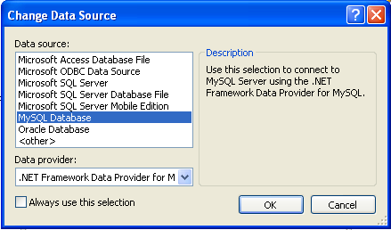Press to confirm your choice.
Enter the connection settings: the server host name (for example, localhost if the MySQL server is installed on the local machine), the user name, the password, and the default database schema. Note that you must specify the default schema name to open the connection.
You can also set the port to connect with the MySQL server by pressing the button. To test a connection with the MySQL server, ser the server host name, the user name, and the password, and press the button. If the test fails, check the connection values that you have supplied are correct and that the corresponding user and privileges have been configured on the MySQL server.
After you set all settings and test the connection, press . The newly created connection is displayed in Server Explorer. Now you can work with the MySQL server through standard Server Explorer interface.
After a connection is successfully established, all the connection settings are saved. When you next open Visual Studio, the connection to the MySQL server will appear within Server Explorer so that you can re-establish a connection to the MySQL server.
To modify and delete a connection, use the context menu for the corresponding node. You can modify any of the settings just by overwriting the existing values with new ones. Note that a connection should be modified or deleted only if no active editor for it's objects is opened. Otherwise your data could be lost.
To work with a MySQL server using the MySQL Visual Studio Plugin, open the Visual Studio 2005, open the Server Explorer, and select the required connection. The working area of the MySQL Visual Studio Plugin consists of three parts.
Database objects (tables, views, stored routines, triggers, and user defined functions) are displayed in the Server Explorer tree. Here you can choose an object and edit its properties and definition.
Properties of a selected database object are displayed in the Properties panel. Certain properties can be edited directly within this window.
The editor panel provides direct access to the SQL statement and definition of specific objects. Fore example, the SQL statements within a stored procedure definition are shown and edited within this panel.
The Table Editor can be accessed through a mouse action on table-type node of Server Explorer. To create a new table, right click on the Tables node (under the connection node) and choose the command from a context menu. To modify an existing table, double click on a node of the table you wish to modify, or right click on this node and choose the command from a context menu. Either of the commands opens the Table Editor.
The MySQL Visual Studio Plugin Table Editor is implemented in a similar fashion to the standard Query Browser Table Editor, but with minor differences.
The Table Editor consists of the following parts:
Columns Editor — for column creation, modification and deletion.
Indexes tab — for table/column index management.
Foreign Keys tab — for configuration of foreign keys.
Column Details tab — used to set advanced column options.
Properties window — used to set table properties.
To save changes you have made in the Table Editor, use either Save or Save All buttons of the Visual Studio main toolbar, or just press Ctrl+S. Before changes are saved, a confirmation dialog will be displayed to confirm that you want to update the corresponding object within the MySQL database.
You can use the Column Editor to set or change the name, data type, default value and other properties of a table column. To set the properties of an individual column, select the column using the mouse. Alternatively, you can move through the grid using Tab and Shift+Tab keys.
To set or change the name, data type, default value and comment of a column, select the appropriate cell and edit the desired value.
To set or unset flag-type column properties (i.e., primary key,
NOT NULL, auto-incremented, flags), check or uncheck the corresponding checkboxes. Note that the available column flags will depend on the columns data type.To reorder columns, index columns or foreign key columns in the Column Editor, select the whole column you wish to reorder by clicking on the selector column at the left of the column grid. Then move the column by using Ctrl+Up (to move the column up) and Ctrl+Down (to move the column down) keys.
To delete a column, select it by clicking on the selector column at the left of the column grid, then press the Delete button on a keyboard.
Index management is performed via the Indexes tab.
To add an index, press the button and set the properties in the Index Settings groupbox at the right. You can set the index name, index kind, index type and a set of index columns.
To remove an index, select the index from the list and press the button.
To change index settings, select the index from the list; detailed information about the index is displayed in the Index Settings panel.
You cannot change a table column to an index column using drag and drop. Instead, you can add new index columns to a table and set their table columns by using the embedded editor within the Indexes tab
Foreign Key management is performed via the Foreign Keys tab.
To add a foreign key, press the button and set properties in the Foreign Keys Settings panel. You can set the foreign key name, referenced table name, foreign key columns and actions on update and delete.
To remove a foreign key, select the foreign key and press the button.
To change foreign key settings, select the foreign key and use the Foreign Keys Settings panel to edit the properties.
When a foreign key is changed, the MySQL Visual Studio Plugin generates two queries: the first query drops the changed keys and the second one recreates the new values. The reason for such a behavior is to avoid the Bug#8377 and Bug#8919.
Note
If changed values are for some reason inconsistent and cause the second query to fail, all affected foreign keys will be dropped. If this is the case, the MySQL Visual Studio Plugin will mark them as new in the Table Editor, and you will have to recreate them later. But if you close the Table Editor without saving, these foreign keys will be lost.
The Column Details tab can be used to set column options. Besides the main column properties that are presented in the Column Editor, in the Column Details tab you can set two additional properties options: the character set and the collation sequence.
There is no separate tab for table options and advanced options. All table options can be browsed and changed using the Properties window of Visual Studio 2005.
The following table properties can be set:
Auto Increment
Average Row Length
Character Set
Checksum for Rows
Collation
Comment
Connection
Data Directory
Delay Key Updates
Engine
Index Directory
Insert Method
Maximum Rows
Minimum Rows
Name
Pack Keys
Password
Row Format
Union
Some of these properties can have arbitrary text values, others accept values from a predefined set.
The properties Schema and Server are read only.
The Table Data Editor, allows a user to browse, create and edit data of tables. The Table Data Editor is implemented as a simple data grid with auto generated columns.
To access the Table Data Editor, right click on a node representing the table or view in Server Explorer. From the nodes context menu, choose the or command. For tables and updatable views, this command opens the Table Data Editor in edit mode. For non-updatable views, this command opens the Table Data Editor in read-only mode.
When in the edit mode, you can modify table data by modifying the displayed table contents directly. To add a row, set desired values in the last row of the grid. To modify values, set new values in appropriate cells. To delete a row, select it by clicking on the selector column at the left of the grid, then press the button.
To save changes you have made in the Table Data Editor, use either or buttons of the Visual Studio main toolbar, or just press Ctrl+S. A confirmation dialog will confirm whether you want the changes saved to the database.
To create a new view, right click the Views node under the connection node in Server Explorer. From the nodes context menu, choose the command. This command opens the SQL Editor.
To modify an existing view, double click on a node of the view you wish to modify, or right click on this node and choose the command from a context menu. Either of the commands opens the SQL Editor.
To create or alter the view definition using SQL Editor, type the appropriate SQL statement in the SQL Editor.
Note
You should enter only the defining statement itself, without
the CREATE VIEW AS preface.
All other view properties can be set in the Properties window. These properties are:
Algorithm
Check Option
Definer
Name
Security Type
Some of these properties can have arbitrary text values, others accept values from a predefined set.
The properties Is Updatable, Schema and Server are readonly.
To save changes you have made, use either or buttons of the Visual Studio main toolbar, or just press Ctrl+S. A confirmation dialog will confirm whether you want the changes saved to the database.
To create a new stored procedure, right click the Stored Procedures node under the connection node in Server Explorer. From the nodes context menu, choose the command. This command opens the SQL Editor.
To create a new stored function, right click the Functions node under the connection node in Server Explorer. From the node's context menu, choose the command.
To modify an existing stored routine (procedure or function), double click on a node of the routine you wish to modify, or right click on this node and choose the command from a context menu. Either of the commands opens the SQL Editor.
To create or alter the routine definition using SQL Editor, type this definition in the SQL Editor using standard SQL.
All other routine properties can be set in the Properties window. These properties are:
Comment
Data Access
Definer
Is Deterministic
Security Type
Some of these properties can have arbitrary text values, others accept values only from a predefined set.
Also you can set all the options directly in the SQL Editor,
using the standard CREATE PROCEDURE or
CREATE FUNCTION statement. However, it is
recommended to use the Properties window
instead.
Note
You should never add the CREATE preface to
the routine definition.
The properties Name, Schema and Server in the Properties window are read-only. Set or change the procedure name in the SQL editor.
To save changes you have made, use either or buttons of the Visual Studio main toolbar, or just press Ctrl+S. A confirmation dialog will confirm whether you want the changes saved to the database..
To create a new trigger, right click on a node of a table for which you wish to add a trigger. From the node's context menu, choose the command. This command opens the SQL Editor.
To modify an existing trigger, double click on a node of the trigger you wish to modify, or right click on this node and choose the command from a context menu. Either of the commands opens the SQL Editor.
To create or alter the trigger definition using SQL Editor, type the trigger statement in the SQL Editor using standard SQL.
Note
You should enter only the trigger statement, that is the part
of the CREATE TRIGGER query that is placed
after the FOR EACH ROW clause.
All other trigger properties are set in the Properties window. These properties are:
Definer
Event Manipulation
Name
Timing
Some of these properties can have arbitrary text values, others accept values only from a predefined set.
The properties Event Table, Schema and Server in the Properties window are read-only.
To save changes you have made, use either or buttons of the Visual Studio main toolbar, or just press Ctrl+S. A confirmation dialog will confirm whether you want the changes saved to the database.
To create a new User Defined Function (UDF), right click the UDFs node under the connection node in Server Explorer. From the node's context menu, choose the command. This command opens the UDF Editor.
To modify an existing UDF, double click on a node of the UDF you wish to modify, or right click on this node and choose the Alter UDF command from a context menu. Either of the commands opens the UDF Editor.
The UDF editor allows you to set the following properties through the properties panel:
Name
So-name (DLL name)
Return type
Is Aggregate
The property Server in the Properties window is read-only.
To save changes you have made, use either or buttons of the Visual Studio main toolbar, or just press Ctrl+S. A confirmation dialog will confirm whether you want the changes saved to the database.
Tables, views, stored routines, triggers, an UDFs can be dropped with the appropriate command from its context menu: , , , , .
You will be asked to confirm the execution of the corresponding drop query in a confirmation dialog.
Dropping of multiple objects is not supported.
Tables, views, stored procedures and functions can be cloned with the appropriate command from its context menu: , , . The clone commands open the corresponding editor for a new object: the Table Editor for cloning a table and the SQL Editor for cloning a view or a routine.
To save the cloned object, use either or buttons of the Visual Studio main toolbar, or just press Ctrl+S. A confirmation dialog will confirm whether you want the changes saved to the database.
If you have a comment, or if you discover a bug, please, use our MySQL bug tracking system (http://bugs.mysql.com) to report problem or add your suggestion.
Questions
31.3.4.1.1: When creating a connection, typing the connection details causes the connection window to immediately close.
Questions and Answers
31.3.4.1.1: When creating a connection, typing the connection details causes the connection window to immediately close.
There are known issues with versions of Connector/NET earlier than 5.0.2. Connector/NET 1.0.x is known not to work. If you have any of these versions installed, or have previously upgraded from an earlier version, uninstall Connector/NET completely and then install Connector/NET 5.0.2.
MySQL provides connectivity for client applications developed in the Java programming language via a JDBC driver, which is called MySQL Connector/J.
MySQL Connector/J is a JDBC Type 4 driver. Different versions are available that are compatible with the JDBC 3.0 and JDBC 4.0 specifications. The Type 4 designation means that the driver is pure-Java implementation of the MySQL protocol and does not rely on the MySQL client libraries.
Although JDBC is useful by itself, we would hope that if you are not familiar with JDBC that after reading the first few sections of this manual, that you would avoid using naked JDBC for all but the most trivial problems and consider using one of the popular persistence frameworks such as Hibernate, Spring's JDBC templates or Ibatis SQL Maps to do the majority of repetitive work and heavier lifting that is sometimes required with JDBC.
This section is not designed to be a complete JDBC tutorial. If you need more information about using JDBC you might be interested in the following online tutorials that are more in-depth than the information presented here:
JDBC Basics — A tutorial from Sun covering beginner topics in JDBC
JDBC Short Course — A more in-depth tutorial from Sun and JGuru
Key topics:
For help with connection strings, connection options setting up your connection through JDBC, see Section 30.4.4.1, “Driver/Datasource Class Names, URL Syntax and Configuration Properties for Connector/J”.
For tips on using Connector/J and JDBC with generic J2EE toolkits, see Section 30.4.5.2, “Using Connector/J with J2EE and Other Java Frameworks”.
Developers using the Tomcat server platform, see Section 30.4.5.2.2, “Using Connector/J with Tomcat”.
Developers using JBoss, see Section 30.4.5.2.3, “Using Connector/J with JBoss”.
Developers using Spring, see Section 30.4.5.2.4, “Using Connector/J with Spring”.
MySQL Enterprise MySQL Enterprise subscribers will find more information about using JDBC with MySQL in the Knowledge Base articles about JDBC. Access to the MySQL Knowledge Base collection of articles is one of the advantages of subscribing to MySQL Enterprise. For more information see http://www.mysql.com/products/enterprise/advisors.html.
There are currently four versions of MySQL Connector/J available:
Connector/J 5.1 is the Type 4 pure Java JDBC driver, which conforms to the JDBC 3.0 and JDBC 4.0 specifications. It provides compatibility with all the functionality of MySQL, including 4.1, 5.0, 5.1 and the 6.0 alpha release featuring the new Falcon storage engine. Connector/J 5.1 provides ease of development features, including auto-registration with the Driver Manager, standardized validity checks, categorized SQLExceptions, support for the JDBC-4.0 XML processing, per connection client information,
NCHAR,NVARCHARandNCLOBtypes. This release also includes all bug fixes up to and including Connector/J 5.0.6.Connector/J 5.0 provides support for all the functionality offered by Connector/J 3.1 and includes distributed transaction (XA) support.
Connector/J 3.1 was designed for connectivity to MySQL 4.1 and MySQL 5.0 servers and provides support for all the functionality in MySQL 5.0 except distributed transaction (XA) support.
Connector/J 3.0 provides core functionality and was designed with connectivity to MySQL 3.x or MySQL 4.1 servers, although it will provide basic compatibility with later versions of MySQL. Connector/J 3.0 does not support server-side prepared statements, and does not support any of the features in versions of MySQL later than 4.1.
The following table summarizes the Connector/J versions available:
| Connector/J version | Driver Type | JDBC version | MySQL Server version | Status |
| 5.1 | 4 | 3.0, 4.0 | 4.1, 5.0, 5.1, 6.0 | Recommended version |
| 5.0 | 4 | 3.0 | 4.1, 5.0 | Released version |
| 3.1 | 4 | 3.0 | 4.1, 5.0 | Obsolete |
| 3.0 | 4 | 3.0 | 3.x, 4.1 | Obsolete |
The current recommended version for Connector/J is 5.1. This guide covers all four connector versions, with specific notes given where a setting applies to a specific option.
The following table summarizes Connector/J Java dependencies:
| Connector/J version | Java RTE required | JDK required (to build source code) |
| 5.1 | 1.3.x, 1.4.x, 1.5.x, 1.6.x | 1.6.x and 1.5.x (or older) |
| 5.0 | 1.3.x, 1.4.x, 1.5.x, 1.6.x | 1.4.2, 1.5.x, 1.6.x |
| 3.1 | 1.2.x, 1.3.x, 1.4.x, 1.5.x, 1.6.x | 1.4.2, 1.5.x, 1.6.x |
| 3.0 | 1.2.x, 1.3.x, 1.4.x, 1.5.x, 1.6.x | 1.4.2, 1.5.x, 1.6.x |
MySQL Connector/J does not support JDK-1.1.x or JDK-1.0.x.
Because of the implementation of
java.sql.Savepoint, Connector/J 3.1.0 and
newer will not run on a Java runtime older than 1.4 unless the
class verifier is turned off (by setting the
-Xverify:none option to the Java runtime). This
is because the class verifier will try to load the class
definition for java.sql.Savepoint even
though it is not accessed by the driver unless you actually use
savepoint functionality.
Caching functionality provided by Connector/J 3.1.0 or newer is
also not available on JVMs older than 1.4.x, as it relies on
java.util.LinkedHashMap which was first
available in JDK-1.4.0.
If you are building Connector/J from source code using the source distribution (see Section 30.4.2.4, “Installing from the Development Source Tree”) then you must use JDK 1.4.2 or newer to compile the Connector package. For Connector/J 5.1 you must have both JDK-1.6.x. and JDK-1.5.x installed in order to be able to build the source code.
You can install the Connector/J package using either the binary or
source distribution. The binary distribution provides the easiest
method for installation; the source distribution enables you to
customize your installation further. With either solution, you
must manually add the Connector/J location to your Java
CLASSPATH.
If you are upgrading from a previous version, read the upgrade information before continuing. See Section 30.4.2.3, “Upgrading from an Older Version”.
The easiest method of installation is to use the binary
distribution of the Connector/J package. The binary distribution
is available either as a Tar/Gzip or Zip file which you must
extract to a suitable location and then optionally make the
information about the package available by changing your
CLASSPATH (see
Section 30.4.2.2, “Installing the Driver and Configuring the CLASSPATH”).
MySQL Connector/J is distributed as a .zip or .tar.gz archive
containing the sources, the class files, and the JAR archive
named
mysql-connector-java-,
and starting with Connector/J 3.1.8 a debug build of the driver
in a file named
[version]-bin.jarmysql-connector-java-.
[version]-bin-g.jar
Starting with Connector/J 3.1.9, the .class
files that constitute the JAR files are only included as part of
the driver JAR file.
You should not use the debug build of the driver unless
instructed to do so when reporting a problem or a bug to MySQL
AB, as it is not designed to be run in production environments,
and will have adverse performance impact when used. The debug
binary also depends on the Aspect/J runtime library, which is
located in the src/lib/aspectjrt.jar file
that comes with the Connector/J distribution.
You will need to use the appropriate graphical or command-line utility to extract the distribution (for example, WinZip for the .zip archive, and tar for the .tar.gz archive). Because there are potentially long filenames in the distribution, we use the GNU tar archive format. You will need to use GNU tar (or an application that understands the GNU tar archive format) to unpack the .tar.gz variant of the distribution.
Once you have extracted the distribution archive, you can
install the driver by placing
mysql-connector-java-[version]-bin.jar in
your classpath, either by adding the full path to it to your
CLASSPATH environment variable, or by
directly specifying it with the command line switch -cp when
starting your JVM.
If you are going to use the driver with the JDBC DriverManager,
you would use com.mysql.jdbc.Driver as the
class that implements java.sql.Driver.
You can set the CLASSPATH environment
variable under UNIX, Linux or Mac OS X either locally for a user
within their .profile,
.login or other login file. You can also set
it globally by editing the global
/etc/profile file.
For example, under a C shell (csh, tcsh) you would add the
Connector/J driver to your CLASSPATH using
the following:
shell> setenv CLASSPATH /path/mysql-connector-java-[ver]-bin.jar:$CLASSPATH
Or with a Bourne-compatible shell (sh, ksh, bash):
shell> export set CLASSPATH=/path/mysql-connector-java-[ver]-bin.jar:$CLASSPATH
Within Windows 2000, Windows XP, Windows Server 2003 and Windows Vista, you must set the environment variable through the System Control Panel.
If you want to use MySQL Connector/J with an application server
such as GlassFish, Tomcat or JBoss, you will have to read your
vendor's documentation for more information on how to configure
third-party class libraries, as most application servers ignore
the CLASSPATH environment variable. For
configuration examples for some J2EE application servers, see
Section 30.4.5.2, “Using Connector/J with J2EE and Other Java Frameworks”. However, the
authoritative source for JDBC connection pool configuration
information for your particular application server is the
documentation for that application server.
If you are developing servlets or JSPs, and your application server is J2EE-compliant, you can put the driver's .jar file in the WEB-INF/lib subdirectory of your webapp, as this is a standard location for third party class libraries in J2EE web applications.
You can also use the MysqlDataSource or
MysqlConnectionPoolDataSource classes in
the com.mysql.jdbc.jdbc2.optional package, if
your J2EE application server supports or requires them. Starting
with Connector/J 5.0.0, the
javax.sql.XADataSource interface is
implemented via the
com.mysql.jdbc.jdbc2.optional.MysqlXADataSource
class, which supports XA distributed transactions when used in
combination with MySQL server version 5.0.
The various MysqlDataSource classes
support the following parameters (through standard set
mutators):
user
password
serverName (see the previous section about fail-over hosts)
databaseName
port
MySQL AB tries to keep the upgrade process as easy as possible, however as is the case with any software, sometimes changes need to be made in new versions to support new features, improve existing functionality, or comply with new standards.
This section has information about what users who are upgrading from one version of Connector/J to another (or to a new version of the MySQL server, with respect to JDBC functionality) should be aware of.
Connector/J 3.1 is designed to be backward-compatible with Connector/J 3.0 as much as possible. Major changes are isolated to new functionality exposed in MySQL-4.1 and newer, which includes Unicode character sets, server-side prepared statements, SQLState codes returned in error messages by the server and various performance enhancements that can be enabled or disabled via configuration properties.
Unicode Character Sets — See the next section, as well as Section 9.1, “Character Set Support”, for information on this new feature of MySQL. If you have something misconfigured, it will usually show up as an error with a message similar to
Illegal mix of collations.Server-side Prepared Statements — Connector/J 3.1 will automatically detect and use server-side prepared statements when they are available (MySQL server version 4.1.0 and newer).
Starting with version 3.1.7, the driver scans SQL you are preparing via all variants of
Connection.prepareStatement()to determine if it is a supported type of statement to prepare on the server side, and if it is not supported by the server, it instead prepares it as a client-side emulated prepared statement. You can disable this feature by passing emulateUnsupportedPstmts=false in your JDBC URL.If your application encounters issues with server-side prepared statements, you can revert to the older client-side emulated prepared statement code that is still presently used for MySQL servers older than 4.1.0 with the connection property useServerPrepStmts=false
Datetimes with all-zero components (
0000-00-00 ...) — These values can not be represented reliably in Java. Connector/J 3.0.x always converted them to NULL when being read from a ResultSet.Connector/J 3.1 throws an exception by default when these values are encountered as this is the most correct behavior according to the JDBC and SQL standards. This behavior can be modified using the zeroDateTimeBehavior configuration property. The allowable values are:
exception(the default), which throws an SQLException with an SQLState ofS1009.convertToNull, which returnsNULLinstead of the date.round, which rounds the date to the nearest closest value which is0001-01-01.
Starting with Connector/J 3.1.7,
ResultSet.getString()can be decoupled from this behavior via noDatetimeStringSync=true (the default value isfalse) so that you can retrieve the unaltered all-zero value as a String. It should be noted that this also precludes using any time zone conversions, therefore the driver will not allow you to enable noDatetimeStringSync and useTimezone at the same time.New SQLState Codes — Connector/J 3.1 uses SQL:1999 SQLState codes returned by the MySQL server (if supported), which are different from the legacy X/Open state codes that Connector/J 3.0 uses. If connected to a MySQL server older than MySQL-4.1.0 (the oldest version to return SQLStates as part of the error code), the driver will use a built-in mapping. You can revert to the old mapping by using the configuration property useSqlStateCodes=false.
ResultSet.getString()— CallingResultSet.getString()on a BLOB column will now return the address of the byte[] array that represents it, instead of a String representation of the BLOB. BLOBs have no character set, so they can't be converted to java.lang.Strings without data loss or corruption.To store strings in MySQL with LOB behavior, use one of the TEXT types, which the driver will treat as a java.sql.Clob.
Debug builds — Starting with Connector/J 3.1.8 a debug build of the driver in a file named
mysql-connector-java-is shipped alongside the normal binary jar file that is named[version]-bin-g.jarmysql-connector-java-.[version]-bin.jarStarting with Connector/J 3.1.9, we don't ship the .class files unbundled, they are only available in the JAR archives that ship with the driver.
You should not use the debug build of the driver unless instructed to do so when reporting a problem or bug to MySQL AB, as it is not designed to be run in production environments, and will have adverse performance impact when used. The debug binary also depends on the Aspect/J runtime library, which is located in the
src/lib/aspectjrt.jarfile that comes with the Connector/J distribution.
In Connector/J 5.0.x and earlier, the alias for a table in a
SELECTstatement is returned when accessing the result set metadata usingResultSetMetaData.getColumnName(). This behavior however is not JDBC compliant, and in Connector/J 5.1 this behavior was changed so that the original table name, rather than the alias, is returned.The JDBC-compliant behavior is designed to let API users reconstruct the DML statement based on the metadata within
ResultSetandResultSetMetaData.You can get the alias for a column in a result set by calling
ResultSetMetaData.getColumnLabel(). If you want to use the old non-compliant behavior withResultSetMetaData.getColumnName(), use theuseOldAliasMetadataBehavioroption and set the value totrue.In Connector/J 5.0.x the default value of
useOldAliasMetadataBehaviorwas true, but in Connector/J 5.1 this was changed to a default value of false.
Using the UTF-8 Character Encoding - Prior to MySQL server version 4.1, the UTF-8 character encoding was not supported by the server, however the JDBC driver could use it, allowing storage of multiple character sets in latin1 tables on the server.
Starting with MySQL-4.1, this functionality is deprecated. If you have applications that rely on this functionality, and can not upgrade them to use the official Unicode character support in MySQL server version 4.1 or newer, you should add the following property to your connection URL:
useOldUTF8Behavior=trueServer-side Prepared Statements - Connector/J 3.1 will automatically detect and use server-side prepared statements when they are available (MySQL server version 4.1.0 and newer). If your application encounters issues with server-side prepared statements, you can revert to the older client-side emulated prepared statement code that is still presently used for MySQL servers older than 4.1.0 with the following connection property:
useServerPrepStmts=false
Caution
You should read this section only if you are interested in helping us test our new code. If you just want to get MySQL Connector/J up and running on your system, you should use a standard binary release distribution.
To install MySQL Connector/J from the development source tree, make sure that you have the following prerequisites:
Subversion, to check out the sources from our repository (available from http://subversion.tigris.org/).
Apache Ant version 1.7 or newer (available from http://ant.apache.org/).
JDK 1.4.2 or later. Although MySQL Connector/J can be be used with older JDKs, to compile it from source you must have at least JDK 1.4.2. If you are building Connector/J 5.1 you will need JDK 1.6.x and an older JDK such as JDK 1.5.x. You will then need to point your JAVA_HOME environment variable at the older installation.
The Subversion source code repository for MySQL Connector/J is located at http://svn.mysql.com/svnpublic/connector-j. In general, you should not check out the entire repository because it contains every branch and tag for MySQL Connector/J and is quite large.
To check out and compile a specific branch of MySQL Connector/J, follow these steps:
Check out the latest code from the branch that you want with the following command (replacing
[major]and[minor]with appropriate version numbers):shell>
svn co » http://svn.mysql.com/svnpublic/connector-j/branches/branch_[major]_[minor]connector-jThis creates a
connector-jsubdirectory in the current directory that contains the latest sources for the requested branch.If you are building Connector/J 5.1 make sure that you have both JDK 1.6.x installed and an older JDK such as JDK 1.5.x. This is because Connector/J supports both JDBC 3.0 (which was prior to JDK 1.6.x) and JDBC 4.0. Set your JAVA_HOME environment variable to the path of the older JDK installation.
Change location to the
connector-jdirectory to make it your current working directory:shell>
cd connector-jIf you are building Connector/J 5.1 you need to edit the
build.xmlto reflect the location of your JDK 1.6.x installation. The lines that you need to change are:<property name="com.mysql.jdbc.java6.javac" value="C:\jvms\jdk1.6.0\bin\javac.exe" /> <property name="com.mysql.jdbc.java6.rtjar" value="C:\jvms\jdk1.6.0\jre\lib\rt.jar" />Alternatively, you can set the value of these property names through the Ant
-Doption.Issue the following command to compile the driver and create a
.jarfile suitable for installation:shell>
ant distThis creates a
builddirectory in the current directory, where all build output will go. A directory is created in thebuilddirectory that includes the version number of the sources you are building from. This directory contains the sources, compiled.classfiles, and a.jarfile suitable for deployment. For other possible targets, including ones that will create a fully packaged distribution, issue the following command:shell>
ant -projecthelpA newly created
.jarfile containing the JDBC driver will be placed in the directorybuild/mysql-connector-java-.[version]Install the newly created JDBC driver as you would a binary
.jarfile that you download from MySQL by following the instructions in Section 30.4.2.2, “Installing the Driver and Configuring theCLASSPATH”.
A package containing both the binary and source code for Connector/J 5.1 can also be found at the following location: Connector/J 5.1 Download
Examples of using Connector/J are located throughout this document, this section provides a summary and links to these examples.
Example 30.1, “Obtaining a connection from the
DriverManager”Example 30.2, “Using java.sql.Statement to execute a
SELECTquery”Example 30.7, “Retrieving results and output parameter values”
Example 30.8, “Retrieving
AUTO_INCREMENTcolumn values usingStatement.getGeneratedKeys()”Example 30.9, “Retrieving
AUTO_INCREMENTcolumn values usingSELECT LAST_INSERT_ID()”Example 30.10, “Retrieving
AUTO_INCREMENTcolumn values inUpdatable ResultSets”Example 30.11, “Using a connection pool with a J2EE application server”
- 30.4.4.1. Driver/Datasource Class Names, URL Syntax and Configuration Properties for Connector/J
- 30.4.4.2. JDBC API Implementation Notes
- 30.4.4.3. Java, JDBC and MySQL Types
- 30.4.4.4. Using Character Sets and Unicode
- 30.4.4.5. Connecting Securely Using SSL
- 30.4.4.6. Using Master/Slave Replication with ReplicationConnection
- 30.4.4.7. Mapping MySQL Error Numbers to SQLStates
This section of the manual contains reference material for MySQL Connector/J, some of which is automatically generated during the Connector/J build process.
The name of the class that implements java.sql.Driver in MySQL
Connector/J is com.mysql.jdbc.Driver. The
org.gjt.mm.mysql.Driver class name is also
usable to remain backward-compatible with MM.MySQL. You should
use this class name when registering the driver, or when
otherwise configuring software to use MySQL Connector/J.
The JDBC URL format for MySQL Connector/J is as follows, with items in square brackets ([, ]) being optional:
jdbc:mysql://[host][,failoverhost...][:port]/[database] » [?propertyName1][=propertyValue1][&propertyName2][=propertyValue2]...
If the hostname is not specified, it defaults to 127.0.0.1. If the port is not specified, it defaults to 3306, the default port number for MySQL servers.
jdbc:mysql://[host:port],[host:port].../[database] » [?propertyName1][=propertyValue1][&propertyName2][=propertyValue2]...
If the database is not specified, the connection will be made
with no default database. In this case, you will need to either
call the setCatalog() method on the
Connection instance or fully-specify table names using the
database name (i.e. SELECT dbname.tablename.colname
FROM dbname.tablename...) in your SQL. Not specifying
the database to use upon connection is generally only useful
when building tools that work with multiple databases, such as
GUI database managers.
MySQL Connector/J has fail-over support. This allows the driver
to fail-over to any number of slave hosts and still perform
read-only queries. Fail-over only happens when the connection is
in an autoCommit(true) state, because
fail-over can not happen reliably when a transaction is in
progress. Most application servers and connection pools set
autoCommit to true at the
end of every transaction/connection use.
The fail-over functionality has the following behavior:
If the URL property autoReconnect is false: Failover only happens at connection initialization, and failback occurs when the driver determines that the first host has become available again.
If the URL property autoReconnect is true: Failover happens when the driver determines that the connection has failed (before every query), and falls back to the first host when it determines that the host has become available again (after
queriesBeforeRetryMasterqueries have been issued).
In either case, whenever you are connected to a "failed-over" server, the connection will be set to read-only state, so queries that would modify data will have exceptions thrown (the query will never be processed by the MySQL server).
Configuration properties define how Connector/J will make a connection to a MySQL server. Unless otherwise noted, properties can be set for a DataSource object or for a Connection object.
Configuration Properties can be set in one of the following ways:
Using the set*() methods on MySQL implementations of java.sql.DataSource (which is the preferred method when using implementations of java.sql.DataSource):
com.mysql.jdbc.jdbc2.optional.MysqlDataSource
com.mysql.jdbc.jdbc2.optional.MysqlConnectionPoolDataSource
As a key/value pair in the java.util.Properties instance passed to
DriverManager.getConnection()orDriver.connect()As a JDBC URL parameter in the URL given to
java.sql.DriverManager.getConnection(),java.sql.Driver.connect()or the MySQL implementations of thejavax.sql.DataSourcesetURL()method.Note
If the mechanism you use to configure a JDBC URL is XML-based, you will need to use the XML character literal & to separate configuration parameters, as the ampersand is a reserved character for XML.
The properties are listed in the following tables.
Connection/Authentication.
| Property Name | Definition | Default Value | Since Version |
| user | The user to connect as | all versions | |
| password | The password to use when connecting | all versions | |
| socketFactory | The name of the class that the driver should use for creating socket connections to the server. This class must implement the interface 'com.mysql.jdbc.SocketFactory' and have public no-args constructor. | com.mysql.jdbc.StandardSocketFactory | 3.0.3 |
| connectTimeout | Timeout for socket connect (in milliseconds), with 0 being no timeout. Only works on JDK-1.4 or newer. Defaults to '0'. | 0 | 3.0.1 |
| socketTimeout | Timeout on network socket operations (0, the default means no timeout). | 0 | 3.0.1 |
| connectionLifecycleInterceptors | A comma-delimited list of classes that implement "com.mysql.jdbc.ConnectionLifecycleInterceptor" that should notified of connection lifecycle events (creation, destruction, commit, rollback, setCatalog and setAutoCommit) and potentially alter the execution of these commands. ConnectionLifecycleInterceptors are "stackable", more than one interceptor may be specified via the configuration property as a comma-delimited list, with the interceptors executed in order from left to right. | 5.1.4 | |
| useConfigs | Load the comma-delimited list of configuration properties before parsing the URL or applying user-specified properties. These configurations are explained in the 'Configurations' of the documentation. | 3.1.5 | |
| interactiveClient | Set the CLIENT_INTERACTIVE flag, which tells MySQL to timeout connections based on INTERACTIVE_TIMEOUT instead of WAIT_TIMEOUT | false | 3.1.0 |
| localSocketAddress | Hostname or IP address given to explicitly configure the interface that the driver will bind the client side of the TCP/IP connection to when connecting. | 5.0.5 | |
| mysqlIOFactory | The name of the class which implements "com.mysql.jdbc.MysqlIO" for communicating with mysqld. (default is "com.mysql.jdbc.MysqlIOprotocol") | com.mysql.jdbc.MysqlIOprotocol | 6.0.0 |
| propertiesTransform | An implementation of com.mysql.jdbc.ConnectionPropertiesTransform that the driver will use to modify URL properties passed to the driver before attempting a connection | 3.1.4 | |
| useCompression | Use zlib compression when communicating with the server (true/false)? Defaults to 'false'. | false | 3.0.17 |
Networking.
| Property Name | Definition | Default Value | Since Version |
| tcpKeepAlive | If connecting using TCP/IP, should the driver set SO_KEEPALIVE? | true | 5.0.7 |
| tcpNoDelay | If connecting using TCP/IP, should the driver set SO_TCP_NODELAY (disabling the Nagle Algorithm)? | true | 5.0.7 |
| tcpRcvBuf | If connecting using TCP/IP, should the driver set SO_RCV_BUF to the given value? The default value of '0', means use the platform default value for this property) | 0 | 5.0.7 |
| tcpSndBuf | If connecting using TCP/IP, shuold the driver set SO_SND_BUF to the given value? The default value of '0', means use the platform default value for this property) | 0 | 5.0.7 |
| tcpTrafficClass | If connecting using TCP/IP, should the driver set traffic class or type-of-service fields ?See the documentation for java.net.Socket.setTrafficClass() for more information. | 0 | 5.0.7 |
High Availability and Clustering.
| Property Name | Definition | Default Value | Since Version |
| autoReconnect | Should the driver try to re-establish stale and/or dead connections? If enabled the driver will throw an exception for a queries issued on a stale or dead connection, which belong to the current transaction, but will attempt reconnect before the next query issued on the connection in a new transaction. The use of this feature is not recommended, because it has side effects related to session state and data consistency when applications don't handle SQLExceptions properly, and is only designed to be used when you are unable to configure your application to handle SQLExceptions resulting from dead and stale connections properly. Alternatively, investigate setting the MySQL server variable "wait_timeout" to some high value rather than the default of 8 hours. | false | 1.1 |
| autoReconnectForPools | Use a reconnection strategy appropriate for connection pools (defaults to 'false') | false | 3.1.3 |
| failOverReadOnly | When failing over in autoReconnect mode, should the connection be set to 'read-only'? | true | 3.0.12 |
| maxReconnects | Maximum number of reconnects to attempt if autoReconnect is true, default is '3'. | 3 | 1.1 |
| reconnectAtTxEnd | If autoReconnect is set to true, should the driver attempt reconnections at the end of every transaction? | false | 3.0.10 |
| initialTimeout | If autoReconnect is enabled, the initial time to wait between re-connect attempts (in seconds, defaults to '2'). | 2 | 1.1 |
| roundRobinLoadBalance | When autoReconnect is enabled, and failoverReadonly is false, should we pick hosts to connect to on a round-robin basis? | false | 3.1.2 |
| queriesBeforeRetryMaster | Number of queries to issue before falling back to master when failed over (when using multi-host failover). Whichever condition is met first, 'queriesBeforeRetryMaster' or 'secondsBeforeRetryMaster' will cause an attempt to be made to reconnect to the master. Defaults to 50. | 50 | 3.0.2 |
| secondsBeforeRetryMaster | How long should the driver wait, when failed over, before attempting | 30 | 3.0.2 |
| selfDestructOnPingMaxOperations | =If set to a non-zero value, the driver will report close the connection and report failure when Connection.ping() or Connection.isValid(int) is called if the connnection's count of commands sent to the server exceeds this value. | 0 | 5.1.6 |
| selfDestructOnPingSecondsLifetime | If set to a non-zero value, the driver will report close the connection and report failure when Connection.ping() or Connection.isValid(int) is called if the connnection's lifetime exceeds this value. | 0 | 5.1.6 |
| resourceId | A globally unique name that identifies the resource that this datasource or connection is connected to, used for XAResource.isSameRM() when the driver can't determine this value based on hostnames used in the URL | 5.0.1 |
Security.
| Property Name | Definition | Default Value | Since Version |
| allowMultiQueries | Allow the use of ';' to delimit multiple queries during one statement (true/false), defaults to 'false' | false | 3.1.1 |
| useSSL | Use SSL when communicating with the server (true/false), defaults to 'false' | false | 3.0.2 |
| requireSSL | Require SSL connection if useSSL=true? (defaults to 'false'). | false | 3.1.0 |
| verifyServerCertificate | If "useSSL" is set to "true", should the driver verify the server's certificate? When using this feature, the keystore parameters should be specified by the "clientCertificateKeyStore*" properties, rather than system properties. | true | 5.1.6 |
| clientCertificateKeyStoreUrl | URL to the client certificate KeyStore (if not specified, use defaults) | 5.1.0 | |
| clientCertificateKeyStoreType | KeyStore type for client certificates (NULL or empty means use default, standard keystore types supported by the JVM are "JKS" and "PKCS12", your environment may have more available depending on what security products are installed and available to the JVM. | 5.1.0 | |
| clientCertificateKeyStorePassword | Password for the client certificates KeyStore | 5.1.0 | |
| trustCertificateKeyStoreUrl | URL to the trusted root certificate KeyStore (if not specified, use defaults) | 5.1.0 | |
| trustCertificateKeyStoreType | KeyStore type for trusted root certificates (NULL or empty means use default, standard keystore types supported by the JVM are "JKS" and "PKCS12", your environment may have more available depending on what security products are installed and available to the JVM. | 5.1.0 | |
| trustCertificateKeyStorePassword | Password for the trusted root certificates KeyStore | 5.1.0 | |
| allowLoadLocalInfile | Should the driver allow use of 'LOAD DATA LOCAL INFILE...' (defaults to 'true'). | true | 3.0.3 |
| allowUrlInLocalInfile | Should the driver allow URLs in 'LOAD DATA LOCAL INFILE' statements? | false | 3.1.4 |
| paranoid | Take measures to prevent exposure sensitive information in error messages and clear data structures holding sensitive data when possible? (defaults to 'false') | false | 3.0.1 |
Performance Extensions.
| Property Name | Definition | Default Value | Since Version |
| callableStmtCacheSize | If 'cacheCallableStmts' is enabled, how many callable statements should be cached? | 100 | 3.1.2 |
| metadataCacheSize | The number of queries to cache ResultSetMetadata for if cacheResultSetMetaData is set to 'true' (default 50) | 50 | 3.1.1 |
| prepStmtCacheSize | If prepared statement caching is enabled, how many prepared statements should be cached? | 25 | 3.0.10 |
| prepStmtCacheSqlLimit | If prepared statement caching is enabled, what's the largest SQL the driver will cache the parsing for? | 256 | 3.0.10 |
| alwaysSendSetIsolation | Should the driver always communicate with the database when Connection.setTransactionIsolation() is called? If set to false, the driver will only communicate with the database when the requested transaction isolation is different than the whichever is newer, the last value that was set via Connection.setTransactionIsolation(), or the value that was read from the server when the connection was established. | true | 3.1.7 |
| maintainTimeStats | Should the driver maintain various internal timers to enable idle time calculations as well as more verbose error messages when the connection to the server fails? Setting this property to false removes at least two calls to System.getCurrentTimeMillis() per query. | true | 3.1.9 |
| useCursorFetch | If connected to MySQL > 5.0.2, and setFetchSize() > 0 on a statement, should that statement use cursor-based fetching to retrieve rows? | false | 5.0.0 |
| blobSendChunkSize | Chunk to use when sending BLOB/CLOBs via ServerPreparedStatements | 1048576 | 3.1.9 |
| cacheCallableStmts | Should the driver cache the parsing stage of CallableStatements | false | 3.1.2 |
| cachePrepStmts | Should the driver cache the parsing stage of PreparedStatements of client-side prepared statements, the "check" for suitability of server-side prepared and server-side prepared statements themselves? | false | 3.0.10 |
| cacheResultSetMetadata | Should the driver cache ResultSetMetaData for Statements and PreparedStatements? (Req. JDK-1.4+, true/false, default 'false') | false | 3.1.1 |
| cacheServerConfiguration | Should the driver cache the results of 'SHOW VARIABLES' and 'SHOW COLLATION' on a per-URL basis? | false | 3.1.5 |
| defaultFetchSize | The driver will call setFetchSize(n) with this value on all newly-created Statements | 0 | 3.1.9 |
| dontTrackOpenResources | The JDBC specification requires the driver to automatically track and close resources, however if your application doesn't do a good job of explicitly calling close() on statements or result sets, this can cause memory leakage. Setting this property to true relaxes this constraint, and can be more memory efficient for some applications. | false | 3.1.7 |
| dynamicCalendars | Should the driver retrieve the default calendar when required, or cache it per connection/session? | false | 3.1.5 |
| elideSetAutoCommits | If using MySQL-4.1 or newer, should the driver only issue 'set autocommit=n' queries when the server's state doesn't match the requested state by Connection.setAutoCommit(boolean)? | false | 3.1.3 |
| enableQueryTimeouts | When enabled, query timeouts set via Statement.setQueryTimeout() use a shared java.util.Timer instance for scheduling. Even if the timeout doesn't expire before the query is processed, there will be memory used by the TimerTask for the given timeout which won't be reclaimed until the time the timeout would have expired if it hadn't been cancelled by the driver. High-load environments might want to consider disabling this functionality. | true | 5.0.6 |
| holdResultsOpenOverStatementClose | Should the driver close result sets on Statement.close() as required by the JDBC specification? | false | 3.1.7 |
| largeRowSizeThreshold | What size result set row should the JDBC driver consider "large", and thus use a more memory-efficient way of representing the row internally? | 2048 | 5.1.1 |
| loadBalanceStrategy | If using a load-balanced connection to connect to SQL nodes in a MySQL Cluster/NDB configuration (by using the URL prefix "jdbc:mysql:loadbalance://"), which load balancing algorithm should the driver use: (1) "random" - the driver will pick a random host for each request. This tends to work better than round-robin, as the randomness will somewhat account for spreading loads where requests vary in response time, while round-robin can sometimes lead to overloaded nodes if there are variations in response times across the workload. (2) "bestResponseTime" - the driver will route the request to the host that had the best response time for the previous transaction. | random | 5.0.6 |
| locatorFetchBufferSize | If 'emulateLocators' is configured to 'true', what size buffer should be used when fetching BLOB data for getBinaryInputStream? | 1048576 | 3.2.1 |
| rewriteBatchedStatements | Should the driver use multiqueries (irregardless of the setting of "allowMultiQueries") as well as rewriting of prepared statements for INSERT into multi-value inserts when executeBatch() is called? Notice that this has the potential for SQL injection if using plain java.sql.Statements and your code doesn't sanitize input correctly. Notice that for prepared statements, server-side prepared statements can not currently take advantage of this rewrite option, and that if you don't specify stream lengths when using PreparedStatement.set*Stream(), the driver won't be able to determine the optimum number of parameters per batch and you might receive an error from the driver that the resultant packet is too large. Statement.getGeneratedKeys() for these rewritten statements only works when the entire batch includes INSERT statements. | false | 3.1.13 |
| useDirectRowUnpack | Use newer result set row unpacking code that skips a copy from network buffers to a MySQL packet instance and instead reads directly into the result set row data buffers. | true | 5.1.1 |
| useDynamicCharsetInfo | Should the driver use a per-connection cache of character set information queried from the server when necessary, or use a built-in static mapping that is more efficient, but isn't aware of custom character sets or character sets implemented after the release of the JDBC driver? | true | 5.0.6 |
| useFastDateParsing | Use internal String->Date/Time/Timestamp conversion routines to avoid excessive object creation? | true | 5.0.5 |
| useFastIntParsing | Use internal String->Integer conversion routines to avoid excessive object creation? | true | 3.1.4 |
| useJvmCharsetConverters | Always use the character encoding routines built into the JVM, rather than using lookup tables for single-byte character sets? | false | 5.0.1 |
| useLocalSessionState | Should the driver refer to the internal values of autocommit and transaction isolation that are set by Connection.setAutoCommit() and Connection.setTransactionIsolation() and transaction state as maintained by the protocol, rather than querying the database or blindly sending commands to the database for commit() or rollback() method calls? | false | 3.1.7 |
| useReadAheadInput | Use newer, optimized non-blocking, buffered input stream when reading from the server? | true | 3.1.5 |
Debugging/Profiling.
| Property Name | Definition | Default Value | Since Version |
| logger | The name of a class that implements "com.mysql.jdbc.log.Log" that will be used to log messages to. (default is "com.mysql.jdbc.log.StandardLogger", which logs to STDERR) | com.mysql.jdbc.log.StandardLogger | 3.1.1 |
| gatherPerfMetrics | Should the driver gather performance metrics, and report them via the configured logger every 'reportMetricsIntervalMillis' milliseconds? | false | 3.1.2 |
| profileSQL | Trace queries and their execution/fetch times to the configured logger (true/false) defaults to 'false' | false | 3.1.0 |
| profileSql | Deprecated, use 'profileSQL' instead. Trace queries and their execution/fetch times on STDERR (true/false) defaults to 'false' | 2.0.14 | |
| reportMetricsIntervalMillis | If 'gatherPerfMetrics' is enabled, how often should they be logged (in ms)? | 30000 | 3.1.2 |
| maxQuerySizeToLog | Controls the maximum length/size of a query that will get logged when profiling or tracing | 2048 | 3.1.3 |
| packetDebugBufferSize | The maximum number of packets to retain when 'enablePacketDebug' is true | 20 | 3.1.3 |
| slowQueryThresholdMillis | If 'logSlowQueries' is enabled, how long should a query (in ms) before it is logged as 'slow'? | 2000 | 3.1.2 |
| slowQueryThresholdNanos | If 'useNanosForElapsedTime' is set to true, and this property is set to a non-zero value, the driver will use this threshold (in nanosecond units) to determine if a query was slow. | 0 | 5.0.7 |
| useUsageAdvisor | Should the driver issue 'usage' warnings advising proper and efficient usage of JDBC and MySQL Connector/J to the log (true/false, defaults to 'false')? | false | 3.1.1 |
| autoGenerateTestcaseScript | Should the driver dump the SQL it is executing, including server-side prepared statements to STDERR? | false | 3.1.9 |
| autoSlowLog | Instead of using slowQueryThreshold* to determine if a query is slow enough to be logged, maintain statistics that allow the driver to determine queries that are outside the 99th percentile? | true | 5.1.4 |
| clientInfoProvider | The name of a class that implements the com.mysql.jdbc.JDBC4ClientInfoProvider interface in order to support JDBC-4.0's Connection.get/setClientInfo() methods | com.mysql.jdbc.JDBC4CommentClientInfoProvider | 5.1.0 |
| dumpMetadataOnColumnNotFound | Should the driver dump the field-level metadata of a result set into the exception message when ResultSet.findColumn() fails? | false | 3.1.13 |
| dumpQueriesOnException | Should the driver dump the contents of the query sent to the server in the message for SQLExceptions? | false | 3.1.3 |
| enablePacketDebug | When enabled, a ring-buffer of 'packetDebugBufferSize' packets will be kept, and dumped when exceptions are thrown in key areas in the driver's code | false | 3.1.3 |
| explainSlowQueries | If 'logSlowQueries' is enabled, should the driver automatically issue an 'EXPLAIN' on the server and send the results to the configured log at a WARN level? | false | 3.1.2 |
| includeInnodbStatusInDeadlockExceptions | Include the output of "SHOW ENGINE INNODB STATUS" in exception messages when deadlock exceptions are detected? | false | 5.0.7 |
| logSlowQueries | Should queries that take longer than 'slowQueryThresholdMillis' be logged? | false | 3.1.2 |
| logXaCommands | Should the driver log XA commands sent by MysqlXaConnection to the server, at the DEBUG level of logging? | false | 5.0.5 |
| profilerEventHandler | Name of a class that implements the interface com.mysql.jdbc.profiler.ProfilerEventHandler that will be used to handle profiling/tracing events. | com.mysql.jdbc.profiler.LoggingProfilerEventHandler | 5.1.6 |
| resultSetSizeThreshold | If the usage advisor is enabled, how many rows should a result set contain before the driver warns that it is suspiciously large? | 100 | 5.0.5 |
| traceProtocol | Should trace-level network protocol be logged? | false | 3.1.2 |
| useNanosForElapsedTime | For profiling/debugging functionality that measures elapsed time, should the driver try to use nanoseconds resolution if available (JDK >= 1.5)? | false | 5.0.7 |
Miscellaneous.
| Property Name | Definition | Default Value | Since Version |
| useUnicode | Should the driver use Unicode character encodings when handling strings? Should only be used when the driver can't determine the character set mapping, or you are trying to 'force' the driver to use a character set that MySQL either doesn't natively support (such as UTF-8), true/false, defaults to 'true' | true | 1.1g |
| characterEncoding | If 'useUnicode' is set to true, what character encoding should the driver use when dealing with strings? (defaults is to 'autodetect') | 1.1g | |
| characterSetResults | Character set to tell the server to return results as. | 3.0.13 | |
| connectionCollation | If set, tells the server to use this collation via 'set collation_connection' | 3.0.13 | |
| useBlobToStoreUTF8OutsideBMP | Tells the driver to treat [MEDIUM/LONG]BLOB columns as [LONG]VARCHAR columns holding text encoded in UTF-8 that has characters outside the BMP (4-byte encodings), which MySQL server can't handle natively. | false | 5.1.3 |
| utf8OutsideBmpExcludedColumnNamePattern | When "useBlobToStoreUTF8OutsideBMP" is set to "true", column names matching the given regex will still be treated as BLOBs unless they match the regex specified for "utf8OutsideBmpIncludedColumnNamePattern". The regex must follow the patterns used for the java.util.regex package. | 5.1.3 | |
| utf8OutsideBmpIncludedColumnNamePattern | Used to specify exclusion rules to "utf8OutsideBmpExcludedColumnNamePattern". The regex must follow the patterns used for the java.util.regex package. | 5.1.3 | |
| sessionVariables | A comma-separated list of name/value pairs to be sent as SET SESSION ... to the server when the driver connects. | 3.1.8 | |
| allowNanAndInf | Should the driver allow NaN or +/- INF values in PreparedStatement.setDouble()? | false | 3.1.5 |
| autoClosePStmtStreams | Should the driver automatically call .close() on streams/readers passed as arguments via set*() methods? | false | 3.1.12 |
| autoDeserialize | Should the driver automatically detect and de-serialize objects stored in BLOB fields? | false | 3.1.5 |
| blobsAreStrings | Should the driver always treat BLOBs as Strings - specifically to work around dubious metadata returned by the server for GROUP BY clauses? | false | 5.0.8 |
| capitalizeTypeNames | Capitalize type names in DatabaseMetaData? (usually only useful when using WebObjects, true/false, defaults to 'false') | true | 2.0.7 |
| clobCharacterEncoding | The character encoding to use for sending and retrieving TEXT, MEDIUMTEXT and LONGTEXT values instead of the configured connection characterEncoding | 5.0.0 | |
| clobberStreamingResults | This will cause a 'streaming' ResultSet to be automatically closed, and any outstanding data still streaming from the server to be discarded if another query is executed before all the data has been read from the server. | false | 3.0.9 |
| continueBatchOnError | Should the driver continue processing batch commands if one statement fails. The JDBC spec allows either way (defaults to 'true'). | true | 3.0.3 |
| createDatabaseIfNotExist | Creates the database given in the URL if it doesn't yet exist. Assumes the configured user has permissions to create databases. | false | 3.1.9 |
| emptyStringsConvertToZero | Should the driver allow conversions from empty string fields to numeric values of '0'? | true | 3.1.8 |
| emulateLocators | Should the driver emulate java.sql.Blobs with locators? With this feature enabled, the driver will delay loading the actual Blob data until the one of the retrieval methods (getInputStream(), getBytes(), and so forth) on the blob data stream has been accessed. For this to work, you must use a column alias with the value of the column to the actual name of the Blob. The feature also has the following restrictions: The SELECT that created the result set must reference only one table, the table must have a primary key; the SELECT must alias the original blob column name, specified as a string, to an alternate name; the SELECT must cover all columns that make up the primary key. | false | 3.1.0 |
| emulateUnsupportedPstmts | Should the driver detect prepared statements that are not supported by the server, and replace them with client-side emulated versions? | true | 3.1.7 |
| functionsNeverReturnBlobs | Should the driver always treat data from functions returning BLOBs as Strings - specifically to work around dubious metadata returned by the server for GROUP BY clauses? | false | 5.0.8 |
| generateSimpleParameterMetadata | Should the driver generate simplified parameter metadata for PreparedStatements when no metadata is available either because the server couldn't support preparing the statement, or server-side prepared statements are disabled? | false | 5.0.5 |
| ignoreNonTxTables | Ignore non-transactional table warning for rollback? (defaults to 'false'). | false | 3.0.9 |
| jdbcCompliantTruncation | Should the driver throw java.sql.DataTruncation exceptions when data is truncated as is required by the JDBC specification when connected to a server that supports warnings (MySQL 4.1.0 and newer)? This property has no effect if the server sql-mode includes STRICT_TRANS_TABLES. | true | 3.1.2 |
| maxRows | The maximum number of rows to return (0, the default means return all rows). | -1 | all versions |
| netTimeoutForStreamingResults | What value should the driver automatically set the server setting 'net_write_timeout' to when the streaming result sets feature is in use? (value has unit of seconds, the value '0' means the driver will not try and adjust this value) | 600 | 5.1.0 |
| noAccessToProcedureBodies | When determining procedure parameter types for CallableStatements, and the connected user can't access procedure bodies through "SHOW CREATE PROCEDURE" or select on mysql.proc should the driver instead create basic metadata (all parameters reported as IN VARCHARs, but allowing registerOutParameter() to be called on them anyway) instead of throwing an exception? | false | 5.0.3 |
| noDatetimeStringSync | Don't ensure that ResultSet.getDatetimeType().toString().equals(ResultSet.getString()) | false | 3.1.7 |
| noTimezoneConversionForTimeType | Don't convert TIME values using the server timezone if 'useTimezone'='true' | false | 5.0.0 |
| nullCatalogMeansCurrent | When DatabaseMetadataMethods ask for a 'catalog' parameter, does the value null mean use the current catalog? (this is not JDBC-compliant, but follows legacy behavior from earlier versions of the driver) | true | 3.1.8 |
| nullNamePatternMatchesAll | Should DatabaseMetaData methods that accept *pattern parameters treat null the same as '%' (this is not JDBC-compliant, however older versions of the driver accepted this departure from the specification) | true | 3.1.8 |
| overrideSupportsIntegrityEnhancementFacility | Should the driver return "true" for DatabaseMetaData.supportsIntegrityEnhancementFacility() even if the database doesn't support it to workaround applications that require this method to return "true" to signal support of foreign keys, even though the SQL specification states that this facility contains much more than just foreign key support (one such application being OpenOffice)? | false | 3.1.12 |
| padCharsWithSpace | If a result set column has the CHAR type and the value does not fill the amount of characters specified in the DDL for the column, should the driver pad the remaining characters with space (for ANSI compliance)? | false | 5.0.6 |
| pedantic | Follow the JDBC spec to the letter. | false | 3.0.0 |
| pinGlobalTxToPhysicalConnection | When using XAConnections, should the driver ensure that operations on a given XID are always routed to the same physical connection? This allows the XAConnection to support "XA START ... JOIN" after "XA END" has been called | false | 5.0.1 |
| populateInsertRowWithDefaultValues | When using ResultSets that are CONCUR_UPDATABLE, should the driver pre-populate the "insert" row with default values from the DDL for the table used in the query so those values are immediately available for ResultSet accessors? This functionality requires a call to the database for metadata each time a result set of this type is created. If disabled (the default), the default values will be populated by the an internal call to refreshRow() which pulls back default values and/or values changed by triggers. | false | 5.0.5 |
| processEscapeCodesForPrepStmts | Should the driver process escape codes in queries that are prepared? | true | 3.1.12 |
| relaxAutoCommit | If the version of MySQL the driver connects to does not support transactions, still allow calls to commit(), rollback() and setAutoCommit() (true/false, defaults to 'false')? | false | 2.0.13 |
| retainStatementAfterResultSetClose | Should the driver retain the Statement reference in a ResultSet after ResultSet.close() has been called. This is not JDBC-compliant after JDBC-4.0. | false | 3.1.11 |
| rollbackOnPooledClose | Should the driver issue a rollback() when the logical connection in a pool is closed? | true | 3.0.15 |
| runningCTS13 | Enables workarounds for bugs in Sun's JDBC compliance testsuite version 1.3 | false | 3.1.7 |
| serverTimezone | Override detection/mapping of timezone. Used when timezone from server doesn't map to Java timezone | 3.0.2 | |
| statementInterceptors | A comma-delimited list of classes that implement "com.mysql.jdbc.StatementInterceptor" that should be placed "in between" query execution to influence the results. StatementInterceptors are "chainable", the results returned by the "current" interceptor will be passed on to the next in in the chain, from left-to-right order, as specified in this property. | 5.1.1 | |
| strictFloatingPoint | Used only in older versions of compliance test | false | 3.0.0 |
| strictUpdates | Should the driver do strict checking (all primary keys selected) of updatable result sets (true, false, defaults to 'true')? | true | 3.0.4 |
| tinyInt1isBit | Should the driver treat the datatype TINYINT(1) as the BIT type (because the server silently converts BIT -> TINYINT(1) when creating tables)? | true | 3.0.16 |
| transformedBitIsBoolean | If the driver converts TINYINT(1) to a different type, should it use BOOLEAN instead of BIT for future compatibility with MySQL-5.0, as MySQL-5.0 has a BIT type? | false | 3.1.9 |
| treatUtilDateAsTimestamp | Should the driver treat java.util.Date as a TIMESTAMP for the purposes of PreparedStatement.setObject()? | true | 5.0.5 |
| ultraDevHack | Create PreparedStatements for prepareCall() when required, because UltraDev is broken and issues a prepareCall() for _all_ statements? (true/false, defaults to 'false') | false | 2.0.3 |
| useGmtMillisForDatetimes | Convert between session timezone and GMT before creating Date and Timestamp instances (value of "false" is legacy behavior, "true" leads to more JDBC-compliant behavior. | false | 3.1.12 |
| useHostsInPrivileges | Add '@hostname' to users in DatabaseMetaData.getColumn/TablePrivileges() (true/false), defaults to 'true'. | true | 3.0.2 |
| useInformationSchema | When connected to MySQL-5.0.7 or newer, should the driver use the INFORMATION_SCHEMA to derive information used by DatabaseMetaData? | false | 5.0.0 |
| useJDBCCompliantTimezoneShift | Should the driver use JDBC-compliant rules when converting TIME/TIMESTAMP/DATETIME values' timezone information for those JDBC arguments which take a java.util.Calendar argument? (Notice that this option is exclusive of the "useTimezone=true" configuration option.) | false | 5.0.0 |
| useLegacyDatetimeCode | Use code for DATE/TIME/DATETIME/TIMESTAMP handling in result sets and statements that consistently handles timezone conversions from client to server and back again, or use the legacy code for these datatypes that has been in the driver for backwards-compatibility? | true | 5.1.6 |
| useOldAliasMetadataBehavior | Should the driver use the legacy behavior for "AS" clauses on columns and tables, and only return aliases (if any) for ResultSetMetaData.getColumnName() or ResultSetMetaData.getTableName() rather than the original column/table name? In 5.0.x, the default value was true. | false | 5.0.4 |
| useOldUTF8Behavior | Use the UTF-8 behavior the driver did when communicating with 4.0 and older servers | false | 3.1.6 |
| useOnlyServerErrorMessages | Don't prepend 'standard' SQLState error messages to error messages returned by the server. | true | 3.0.15 |
| useSSPSCompatibleTimezoneShift | If migrating from an environment that was using server-side prepared statements, and the configuration property "useJDBCCompliantTimeZoneShift" set to "true", use compatible behavior when not using server-side prepared statements when sending TIMESTAMP values to the MySQL server. | false | 5.0.5 |
| useServerPrepStmts | Use server-side prepared statements if the server supports them? | false | 3.1.0 |
| useSqlStateCodes | Use SQL Standard state codes instead of 'legacy' X/Open/SQL state codes (true/false), default is 'true' | true | 3.1.3 |
| useStreamLengthsInPrepStmts | Honor stream length parameter in PreparedStatement/ResultSet.setXXXStream() method calls (true/false, defaults to 'true')? | true | 3.0.2 |
| useTimezone | Convert time/date types between client and server timezones (true/false, defaults to 'false')? | false | 3.0.2 |
| useUnbufferedInput | Don't use BufferedInputStream for reading data from the server | true | 3.0.11 |
| yearIsDateType | Should the JDBC driver treat the MySQL type "YEAR" as a java.sql.Date, or as a SHORT? | true | 3.1.9 |
| zeroDateTimeBehavior | What should happen when the driver encounters DATETIME values that are composed entirely of zeroes (used by MySQL to represent invalid dates)? Valid values are "exception", "round" and "convertToNull". | exception | 3.1.4 |
Connector/J also supports access to MySQL via named pipes on
Windows NT/2000/XP using the
NamedPipeSocketFactory as a plugin-socket
factory via the socketFactory property. If
you don't use a namedPipePath property, the
default of '\\.\pipe\MySQL' will be used. If you use the
NamedPipeSocketFactory, the hostname and port
number values in the JDBC url will be ignored. You can enable
this feature using:
socketFactory=com.mysql.jdbc.NamedPipeSocketFactory
Named pipes only work when connecting to a MySQL server on the same physical machine as the one the JDBC driver is being used on. In simple performance tests, it appears that named pipe access is between 30%-50% faster than the standard TCP/IP access. However, this varies per system, and named pipes are slower than TCP/IP in many Windows configurations.
You can create your own socket factories by following the
example code in
com.mysql.jdbc.NamedPipeSocketFactory, or
com.mysql.jdbc.StandardSocketFactory.
MySQL Connector/J passes all of the tests in the publicly-available version of Sun's JDBC compliance test suite. However, in many places the JDBC specification is vague about how certain functionality should be implemented, or the specification allows leeway in implementation.
This section gives details on a interface-by-interface level about how certain implementation decisions may affect how you use MySQL Connector/J.
Blob
Starting with Connector/J version 3.1.0, you can emulate Blobs with locators by adding the property 'emulateLocators=true' to your JDBC URL. Using this method, the driver will delay loading the actual Blob data until you retrieve the other data and then use retrieval methods (
getInputStream(),getBytes(), and so forth) on the blob data stream.For this to work, you must use a column alias with the value of the column to the actual name of the Blob, for example:
SELECT id, 'data' as blob_data from blobtable
For this to work, you must also follow these rules:
The
SELECTmust also reference only one table, the table must have a primary key.The
SELECTmust alias the original blob column name, specified as a string, to an alternate name.The
SELECTmust cover all columns that make up the primary key.
The Blob implementation does not allow in-place modification (they are copies, as reported by the
DatabaseMetaData.locatorsUpdateCopies()method). Because of this, you should use the correspondingPreparedStatement.setBlob()orResultSet.updateBlob()(in the case of updatable result sets) methods to save changes back to the database.MySQL Enterprise MySQL Enterprise subscribers will find more information about type conversion in the Knowledge Base article, Type Conversions Supported by MySQL Connector/J. To subscribe to MySQL Enterprise see http://www.mysql.com/products/enterprise/advisors.html.
CallableStatement
Starting with Connector/J 3.1.1, stored procedures are supported when connecting to MySQL version 5.0 or newer via the
CallableStatementinterface. Currently, thegetParameterMetaData()method ofCallableStatementis not supported.Clob
The Clob implementation does not allow in-place modification (they are copies, as reported by the
DatabaseMetaData.locatorsUpdateCopies()method). Because of this, you should use thePreparedStatement.setClob()method to save changes back to the database. The JDBC API does not have aResultSet.updateClob()method.Connection
Unlike older versions of MM.MySQL the
isClosed()method does not ping the server to determine if it is alive. In accordance with the JDBC specification, it only returns true ifclosed()has been called on the connection. If you need to determine if the connection is still valid, you should issue a simple query, such asSELECT 1. The driver will throw an exception if the connection is no longer valid.DatabaseMetaData
Foreign Key information (
getImportedKeys()/getExportedKeys()andgetCrossReference()) is only available from InnoDB tables. However, the driver usesSHOW CREATE TABLEto retrieve this information, so when other storage engines support foreign keys, the driver will transparently support them as well.PreparedStatement
PreparedStatements are implemented by the driver, as MySQL does not have a prepared statement feature. Because of this, the driver does not implement
getParameterMetaData()orgetMetaData()as it would require the driver to have a complete SQL parser in the client.Starting with version 3.1.0 MySQL Connector/J, server-side prepared statements and binary-encoded result sets are used when the server supports them.
Take care when using a server-side prepared statement with large parameters that are set via
setBinaryStream(),setAsciiStream(),setUnicodeStream(),setBlob(), orsetClob(). If you want to re-execute the statement with any large parameter changed to a non-large parameter, it is necessary to callclearParameters()and set all parameters again. The reason for this is as follows:During both server-side prepared statements and client-side emulation, large data is exchanged only when
PreparedStatement.execute()is called.
Once that has been done, the stream used to read the data on the client side is closed (as per the JDBC spec), and can't be read from again.
If a parameter changes from large to non-large, the driver must reset the server-side state of the prepared statement to allow the parameter that is being changed to take the place of the prior large value. This removes all of the large data that has already been sent to the server, thus requiring the data to be re-sent, via the
setBinaryStream(),setAsciiStream(),setUnicodeStream(),setBlob()orsetClob()methods.
Consequently, if you want to change the type of a parameter to a non-large one, you must call
clearParameters()and set all parameters of the prepared statement again before it can be re-executed.ResultSet
By default, ResultSets are completely retrieved and stored in memory. In most cases this is the most efficient way to operate, and due to the design of the MySQL network protocol is easier to implement. If you are working with ResultSets that have a large number of rows or large values, and can not allocate heap space in your JVM for the memory required, you can tell the driver to stream the results back one row at a time.
To enable this functionality, you need to create a Statement instance in the following manner:
stmt = conn.createStatement(java.sql.ResultSet.TYPE_FORWARD_ONLY, java.sql.ResultSet.CONCUR_READ_ONLY); stmt.setFetchSize(Integer.MIN_VALUE);The combination of a forward-only, read-only result set, with a fetch size of
Integer.MIN_VALUEserves as a signal to the driver to stream result sets row-by-row. After this any result sets created with the statement will be retrieved row-by-row.There are some caveats with this approach. You will have to read all of the rows in the result set (or close it) before you can issue any other queries on the connection, or an exception will be thrown.
The earliest the locks these statements hold can be released (whether they be
MyISAMtable-level locks or row-level locks in some other storage engine such asInnoDB) is when the statement completes.If the statement is within scope of a transaction, then locks are released when the transaction completes (which implies that the statement needs to complete first). As with most other databases, statements are not complete until all the results pending on the statement are read or the active result set for the statement is closed.
Therefore, if using streaming results, you should process them as quickly as possible if you want to maintain concurrent access to the tables referenced by the statement producing the result set.
ResultSetMetaData
The
isAutoIncrement()method only works when using MySQL servers 4.0 and newer.Statement
When using versions of the JDBC driver earlier than 3.2.1, and connected to server versions earlier than 5.0.3, the
setFetchSize()method has no effect, other than to toggle result set streaming as described above.Connector/J 5.0.0 and later include support for both
Statement.cancel()andStatement.setQueryTimeout(). Both require MySQL 5.0.0 or newer server, and require a separate connection to issue theKILL QUERYstatement. In the case ofsetQueryTimeout(), the implementation creates an additional thread to handle the timeout functionality.Note
Failures to cancel the statement for
setQueryTimeout()may manifest themselves asRuntimeExceptionrather than failing silently, as there is currently no way to unblock the thread that is executing the query being cancelled due to timeout expiration and have it throw the exception instead.MySQL does not support SQL cursors, and the JDBC driver doesn't emulate them, so "setCursorName()" has no effect.
Connector/J 5.1.3 and later include two additional methods:
setLocalInfileInputStream()sets anInputStreaminstance that will be used to send data to the MySQL server for aLOAD DATA LOCAL INFILEstatement rather than aFileInputStreamorURLInputStreamthat represents the path given as an argument to the statement.This stream will be read to completion upon execution of a
LOAD DATA LOCAL INFILEstatement, and will automatically be closed by the driver, so it needs to be reset before each call toexecute*()that would cause the MySQL server to request data to fulfill the request forLOAD DATA LOCAL INFILE.If this value is set to
NULL, the driver will revert to using aFileInputStreamorURLInputStreamas required.getLocalInfileInputStream()returns theInputStreaminstance that will be used to send data in response to aLOAD DATA LOCAL INFILEstatement.This method returns
NULLif no such stream has been set viasetLocalInfileInputStream().
MySQL Connector/J is flexible in the way it handles conversions between MySQL data types and Java data types.
In general, any MySQL data type can be converted to a java.lang.String, and any numerical type can be converted to any of the Java numerical types, although round-off, overflow, or loss of precision may occur.
Starting with Connector/J 3.1.0, the JDBC driver will issue
warnings or throw DataTruncation exceptions as is required by
the JDBC specification unless the connection was configured not
to do so by using the property
jdbcCompliantTruncation and setting it to
false.
The conversions that are always guaranteed to work are listed in the following table:
Connection Properties - Miscellaneous.
| These MySQL Data Types | Can always be converted to these Java types |
CHAR, VARCHAR, BLOB, TEXT, ENUM, and SET | java.lang.String, java.io.InputStream, java.io.Reader,
java.sql.Blob, java.sql.Clob |
FLOAT, REAL, DOUBLE PRECISION, NUMERIC, DECIMAL, TINYINT,
SMALLINT, MEDIUMINT, INTEGER, BIGINT | java.lang.String, java.lang.Short, java.lang.Integer,
java.lang.Long, java.lang.Double,
java.math.BigDecimal |
DATE, TIME, DATETIME, TIMESTAMP | java.lang.String, java.sql.Date, java.sql.Timestamp |
Note
Round-off, overflow or loss of precision may occur if you choose a Java numeric data type that has less precision or capacity than the MySQL data type you are converting to/from.
The ResultSet.getObject() method uses the
type conversions between MySQL and Java types, following the
JDBC specification where appropriate. The value returned by
ResultSetMetaData.GetColumnClassName() is
also shown below. For more information on the
java.sql.Types classes see
Java
2 Platform Types.
MySQL Types to Java Types for ResultSet.getObject().
| MySQL Type Name | Return value of
GetColumnClassName | Returned as Java Class |
| BIT(1) (new in MySQL-5.0) | BIT | java.lang.Boolean |
| BIT( > 1) (new in MySQL-5.0) | BIT | byte[] |
| TINYINT | TINYINT | java.lang.Boolean if the configuration property
tinyInt1isBit is set to
true (the default) and the
storage size is 1, or
java.lang.Integer if not. |
| BOOL, BOOLEAN | TINYINT | See TINYINT, above as these are aliases for TINYINT(1), currently. |
| SMALLINT[(M)] [UNSIGNED] | SMALLINT [UNSIGNED] | java.lang.Integer (regardless if UNSIGNED or not) |
| MEDIUMINT[(M)] [UNSIGNED] | MEDIUMINT [UNSIGNED] | java.lang.Integer, if UNSIGNED
java.lang.Long (C/J 3.1 and
earlier), or
java.lang.Integer for C/J 5.0
and later |
| INT,INTEGER[(M)] [UNSIGNED] | INTEGER [UNSIGNED] | java.lang.Integer, if UNSIGNED
java.lang.Long |
| BIGINT[(M)] [UNSIGNED] | BIGINT [UNSIGNED] | java.lang.Long, if UNSIGNED
java.math.BigInteger |
| FLOAT[(M,D)] | FLOAT | java.lang.Float |
| DOUBLE[(M,B)] | DOUBLE | java.lang.Double |
| DECIMAL[(M[,D])] | DECIMAL | java.math.BigDecimal |
| DATE | DATE | java.sql.Date |
| DATETIME | DATETIME | java.sql.Timestamp |
| TIMESTAMP[(M)] | TIMESTAMP | java.sql.Timestamp |
| TIME | TIME | java.sql.Time |
| YEAR[(2|4)] | YEAR | If yearIsDateType configuration property is set to
false, then the returned object type is
java.sql.Short. If set to
true (the default) then an object of type
java.sql.Date (with the date
set to January 1st, at midnight). |
| CHAR(M) | CHAR | java.lang.String (unless the character set for
the column is BINARY, then
byte[] is returned. |
| VARCHAR(M) [BINARY] | VARCHAR | java.lang.String (unless the character set for
the column is BINARY, then
byte[] is returned. |
| BINARY(M) | BINARY | byte[] |
| VARBINARY(M) | VARBINARY | byte[] |
| TINYBLOB | TINYBLOB | byte[] |
| TINYTEXT | VARCHAR | java.lang.String |
| BLOB | BLOB | byte[] |
| TEXT | VARCHAR | java.lang.String |
| MEDIUMBLOB | MEDIUMBLOB | byte[] |
| MEDIUMTEXT | VARCHAR | java.lang.String |
| LONGBLOB | LONGBLOB | byte[] |
| LONGTEXT | VARCHAR | java.lang.String |
| ENUM('value1','value2',...) | CHAR | java.lang.String |
| SET('value1','value2',...) | CHAR | java.lang.String |
All strings sent from the JDBC driver to the server are
converted automatically from native Java Unicode form to the
client character encoding, including all queries sent via
Statement.execute(),
Statement.executeUpdate(),
Statement.executeQuery() as well as all
PreparedStatement
and
CallableStatement
parameters with the exclusion of parameters set using
setBytes(),
setBinaryStream(),
setAsciiStream(),
setUnicodeStream() and
setBlob().
Prior to MySQL Server 4.1, Connector/J supported a single
character encoding per connection, which could either be
automatically detected from the server configuration, or could
be configured by the user through the
useUnicode and
characterEncoding properties.
Starting with MySQL Server 4.1, Connector/J supports a single
character encoding between client and server, and any number of
character encodings for data returned by the server to the
client in ResultSets.
The character encoding between client and server is
automatically detected upon connection. The encoding used by the
driver is specified on the server via the
character_set system variable for server
versions older than 4.1.0 and
character_set_server for server versions
4.1.0 and newer. For more information, see
Section 9.1.3.1, “Server Character Set and Collation”.
To override the automatically-detected encoding on the client
side, use the characterEncoding property
in the URL used to connect to the server.
When specifying character encodings on the client side, Java-style names should be used. The following table lists Java-style names for MySQL character sets:
MySQL to Java Encoding Name Translations.
| MySQL Character Set Name | Java-Style Character Encoding Name |
| ascii | US-ASCII |
| big5 | Big5 |
| gbk | GBK |
| sjis | SJIS (or Cp932 or MS932 for MySQL Server < 4.1.11) |
| cp932 | Cp932 or MS932 (MySQL Server > 4.1.11) |
| gb2312 | EUC_CN |
| ujis | EUC_JP |
| euckr | EUC_KR |
| latin1 | ISO8859_1 |
| latin2 | ISO8859_2 |
| greek | ISO8859_7 |
| hebrew | ISO8859_8 |
| cp866 | Cp866 |
| tis620 | TIS620 |
| cp1250 | Cp1250 |
| cp1251 | Cp1251 |
| cp1257 | Cp1257 |
| macroman | MacRoman |
| macce | MacCentralEurope |
| utf8 | UTF-8 |
| ucs2 | UnicodeBig |
Warning
Do not issue the query 'set names' with Connector/J, as the driver will not detect that the character set has changed, and will continue to use the character set detected during the initial connection setup.
To allow multiple character sets to be sent from the client, the
UTF-8 encoding should be used, either by configuring
utf8 as the default server character set, or
by configuring the JDBC driver to use UTF-8 through the
characterEncoding property.
SSL in MySQL Connector/J encrypts all data (other than the initial handshake) between the JDBC driver and the server. The performance penalty for enabling SSL is an increase in query processing time between 35% and 50%, depending on the size of the query, and the amount of data it returns.
For SSL Support to work, you must have the following:
A JDK that includes JSSE (Java Secure Sockets Extension), like JDK-1.4.1 or newer. SSL does not currently work with a JDK that you can add JSSE to, like JDK-1.2.x or JDK-1.3.x due to the following JSSE bug: http://developer.java.sun.com/developer/bugParade/bugs/4273544.html
A MySQL server that supports SSL and has been compiled and configured to do so, which is MySQL-4.0.4 or later, see Section 5.5.7, “Using SSL for Secure Connections”, for more information.
A client certificate (covered later in this section)
The system works through two Java truststore files, one file
contains the certificate information for the server
(truststore in the examples below). The
other file contains the certificate for the client
(keystore in the examples below). All Java
truststore files are password protected by supplying a suitable
password to the keytool when you create the
files. You need the file names and associated passwords to
create an SSL connection.
You will first need to import the MySQL server CA Certificate
into a Java truststore. A sample MySQL server CA Certificate is
located in the SSL subdirectory of the
MySQL source distribution. This is what SSL will use to
determine if you are communicating with a secure MySQL server.
Alternatively, use the CA Certificate that you have generated or
been provided with by your SSL provider.
To use Java's keytool to create a truststore
in the current directory , and import the server's CA
certificate (cacert.pem), you can do the
following (assuming that keytool is in your
path. The keytool should be located in the
bin subdirectory of your JDK or JRE):
shell> keytool -import -alias mysqlServerCACert \
-file cacert.pem -keystore truststoreYou will need to enter the password when prompted for the keystore file. Interaction with keytool will look like this:
Enter keystore password: *********
Owner: EMAILADDRESS=walrus@example.com, CN=Walrus,
O=MySQL AB, L=Orenburg, ST=Some-State, C=RU
Issuer: EMAILADDRESS=walrus@example.com, CN=Walrus,
O=MySQL AB, L=Orenburg, ST=Some-State, C=RU
Serial number: 0
Valid from:
Fri Aug 02 16:55:53 CDT 2002 until: Sat Aug 02 16:55:53 CDT 2003
Certificate fingerprints:
MD5: 61:91:A0:F2:03:07:61:7A:81:38:66:DA:19:C4:8D:AB
SHA1: 25:77:41:05:D5:AD:99:8C:14:8C:CA:68:9C:2F:B8:89:C3:34:4D:6C
Trust this certificate? [no]: yes
Certificate was added to keystoreYou then have two options, you can either import the client certificate that matches the CA certificate you just imported, or you can create a new client certificate.
To import an existing certificate, the certificate should be in DER format. You can use openssl to convert an existing certificate into the new format. For example:
shell> openssl x509 -outform DER -in client-cert.pem -out client.cert
You now need to import the converted certificate into your keystore using keytool:
shell> keytool -import -file client.cert -keystore keystore -alias mysqlClientCertificate
To generate your own client certificate, use
keytool to create a suitable certificate and
add it to the keystore file:
shell> keytool -genkey -keyalg rsa \
-alias mysqlClientCertificate -keystore keystore
Keytool will prompt you for the following information, and
create a keystore named keystore in the
current directory.
You should respond with information that is appropriate for your situation:
Enter keystore password: *********
What is your first and last name?
[Unknown]: Matthews
What is the name of your organizational unit?
[Unknown]: Software Development
What is the name of your organization?
[Unknown]: MySQL AB
What is the name of your City or Locality?
[Unknown]: Flossmoor
What is the name of your State or Province?
[Unknown]: IL
What is the two-letter country code for this unit?
[Unknown]: US
Is <CN=Matthews, OU=Software Development, O=MySQL AB,
L=Flossmoor, ST=IL, C=US> correct?
[no]: y
Enter key password for <mysqlClientCertificate>
(RETURN if same as keystore password):Finally, to get JSSE to use the keystore and truststore that you have generated, you need to set the following system properties when you start your JVM, replacing path_to_keystore_file with the full path to the keystore file you created, path_to_truststore_file with the path to the truststore file you created, and using the appropriate password values for each property. You can do this either on the command line:
-Djavax.net.ssl.keyStore=path_to_keystore_file -Djavax.net.ssl.keyStorePassword=password -Djavax.net.ssl.trustStore=path_to_truststore_file -Djavax.net.ssl.trustStorePassword=password
Or you can set the values directly within the application:
System.setProperty("javax.net.ssl.keyStore","path_to_keystore_file");
System.setProperty("javax.net.ssl.keyStorePassword","password");
System.setProperty("javax.net.ssl.trustStore","path_to_truststore_file");
System.setProperty("javax.net.ssl.trustStorePassword","password");
You will also need to set useSSL to
true in your connection parameters for MySQL
Connector/J, either by adding useSSL=true to
your URL, or by setting the property useSSL
to true in the
java.util.Properties instance you pass to
DriverManager.getConnection().
You can test that SSL is working by turning on JSSE debugging (as detailed below), and look for the following key events:
...
*** ClientHello, v3.1
RandomCookie: GMT: 1018531834 bytes = { 199, 148, 180, 215, 74, 12, »
54, 244, 0, 168, 55, 103, 215, 64, 16, 138, 225, 190, 132, 153, 2, »
217, 219, 239, 202, 19, 121, 78 }
Session ID: {}
Cipher Suites: { 0, 5, 0, 4, 0, 9, 0, 10, 0, 18, 0, 19, 0, 3, 0, 17 }
Compression Methods: { 0 }
***
[write] MD5 and SHA1 hashes: len = 59
0000: 01 00 00 37 03 01 3D B6 90 FA C7 94 B4 D7 4A 0C ...7..=.......J.
0010: 36 F4 00 A8 37 67 D7 40 10 8A E1 BE 84 99 02 D9 6...7g.@........
0020: DB EF CA 13 79 4E 00 00 10 00 05 00 04 00 09 00 ....yN..........
0030: 0A 00 12 00 13 00 03 00 11 01 00 ...........
main, WRITE: SSL v3.1 Handshake, length = 59
main, READ: SSL v3.1 Handshake, length = 74
*** ServerHello, v3.1
RandomCookie: GMT: 1018577560 bytes = { 116, 50, 4, 103, 25, 100, 58, »
202, 79, 185, 178, 100, 215, 66, 254, 21, 83, 187, 190, 42, 170, 3, »
132, 110, 82, 148, 160, 92 }
Session ID: {163, 227, 84, 53, 81, 127, 252, 254, 178, 179, 68, 63, »
182, 158, 30, 11, 150, 79, 170, 76, 255, 92, 15, 226, 24, 17, 177, »
219, 158, 177, 187, 143}
Cipher Suite: { 0, 5 }
Compression Method: 0
***
%% Created: [Session-1, SSL_RSA_WITH_RC4_128_SHA]
** SSL_RSA_WITH_RC4_128_SHA
[read] MD5 and SHA1 hashes: len = 74
0000: 02 00 00 46 03 01 3D B6 43 98 74 32 04 67 19 64 ...F..=.C.t2.g.d
0010: 3A CA 4F B9 B2 64 D7 42 FE 15 53 BB BE 2A AA 03 :.O..d.B..S..*..
0020: 84 6E 52 94 A0 5C 20 A3 E3 54 35 51 7F FC FE B2 .nR..\ ..T5Q....
0030: B3 44 3F B6 9E 1E 0B 96 4F AA 4C FF 5C 0F E2 18 .D?.....O.L.\...
0040: 11 B1 DB 9E B1 BB 8F 00 05 00 ..........
main, READ: SSL v3.1 Handshake, length = 1712
...
JSSE provides debugging (to STDOUT) when you set the following
system property: -Djavax.net.debug=all This
will tell you what keystores and truststores are being used, as
well as what is going on during the SSL handshake and
certificate exchange. It will be helpful when trying to
determine what is not working when trying to get an SSL
connection to happen.
Starting with Connector/J 3.1.7, we've made available a variant
of the driver that will automatically send queries to a
read/write master, or a failover or round-robin loadbalanced set
of slaves based on the state of
Connection.getReadOnly() .
An application signals that it wants a transaction to be
read-only by calling
Connection.setReadOnly(true), this
replication-aware connection will use one of the slave
connections, which are load-balanced per-vm using a round-robin
scheme (a given connection is sticky to a slave unless that
slave is removed from service). If you have a write transaction,
or if you have a read that is time-sensitive (remember,
replication in MySQL is asynchronous), set the connection to be
not read-only, by calling
Connection.setReadOnly(false) and the driver
will ensure that further calls are sent to the master MySQL
server. The driver takes care of propagating the current state
of autocommit, isolation level, and catalog between all of the
connections that it uses to accomplish this load balancing
functionality.
To enable this functionality, use the "
com.mysql.jdbc.ReplicationDriver " class when
configuring your application server's connection pool or when
creating an instance of a JDBC driver for your standalone
application. Because it accepts the same URL format as the
standard MySQL JDBC driver, ReplicationDriver
does not currently work with
java.sql.DriverManager -based connection
creation unless it is the only MySQL JDBC driver registered with
the DriverManager .
Here is a short, simple example of how ReplicationDriver might be used in a standalone application.
import java.sql.Connection;
import java.sql.ResultSet;
import java.util.Properties;
import com.mysql.jdbc.ReplicationDriver;
public class ReplicationDriverDemo {
public static void main(String[] args) throws Exception {
ReplicationDriver driver = new ReplicationDriver();
Properties props = new Properties();
// We want this for failover on the slaves
props.put("autoReconnect", "true");
// We want to load balance between the slaves
props.put("roundRobinLoadBalance", "true");
props.put("user", "foo");
props.put("password", "bar");
//
// Looks like a normal MySQL JDBC url, with a
// comma-separated list of hosts, the first
// being the 'master', the rest being any number
// of slaves that the driver will load balance against
//
Connection conn =
driver.connect("jdbc:mysql://master,slave1,slave2,slave3/test",
props);
//
// Perform read/write work on the master
// by setting the read-only flag to "false"
//
conn.setReadOnly(false);
conn.setAutoCommit(false);
conn.createStatement().executeUpdate("UPDATE some_table ....");
conn.commit();
//
// Now, do a query from a slave, the driver automatically picks one
// from the list
//
conn.setReadOnly(true);
ResultSet rs =
conn.createStatement().executeQuery("SELECT a,b FROM alt_table");
.......
}
}
You may also want to investigate the Load Balancing JDBC Pool (lbpol) tool, which provides a wrapper around the standard JDBC driver and allows you to use DB connection pools that includes checks for system failures and uneven load distribution. For more information, see Load Balancing JDBC Pool (lbpool).
The table below provides a mapping of the MySQL Error Numbers to
SQL States
Table 30.1. Mapping of MySQL Error Numbers to SQLStates
| MySQL Error Number | MySQL Error Name | Legacy (X/Open) SQLState | SQL Standard SQLState |
|---|---|---|---|
| 1022 | ER_DUP_KEY | S1000 | 23000 |
| 1037 | ER_OUTOFMEMORY | S1001 | HY001 |
| 1038 | ER_OUT_OF_SORTMEMORY | S1001 | HY001 |
| 1040 | ER_CON_COUNT_ERROR | 08004 | 08004 |
| 1042 | ER_BAD_HOST_ERROR | 08004 | 08S01 |
| 1043 | ER_HANDSHAKE_ERROR | 08004 | 08S01 |
| 1044 | ER_DBACCESS_DENIED_ERROR | S1000 | 42000 |
| 1045 | ER_ACCESS_DENIED_ERROR | 28000 | 28000 |
| 1047 | ER_UNKNOWN_COM_ERROR | 08S01 | HY000 |
| 1050 | ER_TABLE_EXISTS_ERROR | S1000 | 42S01 |
| 1051 | ER_BAD_TABLE_ERROR | 42S02 | 42S02 |
| 1052 | ER_NON_UNIQ_ERROR | S1000 | 23000 |
| 1053 | ER_SERVER_SHUTDOWN | S1000 | 08S01 |
| 1054 | ER_BAD_FIELD_ERROR | S0022 | 42S22 |
| 1055 | ER_WRONG_FIELD_WITH_GROUP | S1009 | 42000 |
| 1056 | ER_WRONG_GROUP_FIELD | S1009 | 42000 |
| 1057 | ER_WRONG_SUM_SELECT | S1009 | 42000 |
| 1058 | ER_WRONG_VALUE_COUNT | 21S01 | 21S01 |
| 1059 | ER_TOO_LONG_IDENT | S1009 | 42000 |
| 1060 | ER_DUP_FIELDNAME | S1009 | 42S21 |
| 1061 | ER_DUP_KEYNAME | S1009 | 42000 |
| 1062 | ER_DUP_ENTRY | S1009 | 23000 |
| 1063 | ER_WRONG_FIELD_SPEC | S1009 | 42000 |
| 1064 | ER_PARSE_ERROR | 42000 | 42000 |
| 1065 | ER_EMPTY_QUERY | 42000 | 42000 |
| 1066 | ER_NONUNIQ_TABLE | S1009 | 42000 |
| 1067 | ER_INVALID_DEFAULT | S1009 | 42000 |
| 1068 | ER_MULTIPLE_PRI_KEY | S1009 | 42000 |
| 1069 | ER_TOO_MANY_KEYS | S1009 | 42000 |
| 1070 | ER_TOO_MANY_KEY_PARTS | S1009 | 42000 |
| 1071 | ER_TOO_LONG_KEY | S1009 | 42000 |
| 1072 | ER_KEY_COLUMN_DOES_NOT_EXITS | S1009 | 42000 |
| 1073 | ER_BLOB_USED_AS_KEY | S1009 | 42000 |
| 1074 | ER_TOO_BIG_FIELDLENGTH | S1009 | 42000 |
| 1075 | ER_WRONG_AUTO_KEY | S1009 | 42000 |
| 1080 | ER_FORCING_CLOSE | S1000 | 08S01 |
| 1081 | ER_IPSOCK_ERROR | 08S01 | 08S01 |
| 1082 | ER_NO_SUCH_INDEX | S1009 | 42S12 |
| 1083 | ER_WRONG_FIELD_TERMINATORS | S1009 | 42000 |
| 1084 | ER_BLOBS_AND_NO_TERMINATED | S1009 | 42000 |
| 1090 | ER_CANT_REMOVE_ALL_FIELDS | S1000 | 42000 |
| 1091 | ER_CANT_DROP_FIELD_OR_KEY | S1000 | 42000 |
| 1101 | ER_BLOB_CANT_HAVE_DEFAULT | S1000 | 42000 |
| 1102 | ER_WRONG_DB_NAME | S1000 | 42000 |
| 1103 | ER_WRONG_TABLE_NAME | S1000 | 42000 |
| 1104 | ER_TOO_BIG_SELECT | S1000 | 42000 |
| 1106 | ER_UNKNOWN_PROCEDURE | S1000 | 42000 |
| 1107 | ER_WRONG_PARAMCOUNT_TO_PROCEDURE | S1000 | 42000 |
| 1109 | ER_UNKNOWN_TABLE | S1000 | 42S02 |
| 1110 | ER_FIELD_SPECIFIED_TWICE | S1000 | 42000 |
| 1112 | ER_UNSUPPORTED_EXTENSION | S1000 | 42000 |
| 1113 | ER_TABLE_MUST_HAVE_COLUMNS | S1000 | 42000 |
| 1115 | ER_UNKNOWN_CHARACTER_SET | S1000 | 42000 |
| 1118 | ER_TOO_BIG_ROWSIZE | S1000 | 42000 |
| 1120 | ER_WRONG_OUTER_JOIN | S1000 | 42000 |
| 1121 | ER_NULL_COLUMN_IN_INDEX | S1000 | 42000 |
| 1129 | ER_HOST_IS_BLOCKED | 08004 | HY000 |
| 1130 | ER_HOST_NOT_PRIVILEGED | 08004 | HY000 |
| 1131 | ER_PASSWORD_ANONYMOUS_USER | S1000 | 42000 |
| 1132 | ER_PASSWORD_NOT_ALLOWED | S1000 | 42000 |
| 1133 | ER_PASSWORD_NO_MATCH | S1000 | 42000 |
| 1136 | ER_WRONG_VALUE_COUNT_ON_ROW | S1000 | 21S01 |
| 1138 | ER_INVALID_USE_OF_NULL | S1000 | 42000 |
| 1139 | ER_REGEXP_ERROR | S1000 | 42000 |
| 1140 | ER_MIX_OF_GROUP_FUNC_AND_FIELDS | S1000 | 42000 |
| 1141 | ER_NONEXISTING_GRANT | S1000 | 42000 |
| 1142 | ER_TABLEACCESS_DENIED_ERROR | S1000 | 42000 |
| 1143 | ER_COLUMNACCESS_DENIED_ERROR | S1000 | 42000 |
| 1144 | ER_ILLEGAL_GRANT_FOR_TABLE | S1000 | 42000 |
| 1145 | ER_GRANT_WRONG_HOST_OR_USER | S1000 | 42000 |
| 1146 | ER_NO_SUCH_TABLE | S1000 | 42S02 |
| 1147 | ER_NONEXISTING_TABLE_GRANT | S1000 | 42000 |
| 1148 | ER_NOT_ALLOWED_COMMAND | S1000 | 42000 |
| 1149 | ER_SYNTAX_ERROR | S1000 | 42000 |
| 1152 | ER_ABORTING_CONNECTION | S1000 | 08S01 |
| 1153 | ER_NET_PACKET_TOO_LARGE | S1000 | 08S01 |
| 1154 | ER_NET_READ_ERROR_FROM_PIPE | S1000 | 08S01 |
| 1155 | ER_NET_FCNTL_ERROR | S1000 | 08S01 |
| 1156 | ER_NET_PACKETS_OUT_OF_ORDER | S1000 | 08S01 |
| 1157 | ER_NET_UNCOMPRESS_ERROR | S1000 | 08S01 |
| 1158 | ER_NET_READ_ERROR | S1000 | 08S01 |
| 1159 | ER_NET_READ_INTERRUPTED | S1000 | 08S01 |
| 1160 | ER_NET_ERROR_ON_WRITE | S1000 | 08S01 |
| 1161 | ER_NET_WRITE_INTERRUPTED | S1000 | 08S01 |
| 1162 | ER_TOO_LONG_STRING | S1000 | 42000 |
| 1163 | ER_TABLE_CANT_HANDLE_BLOB | S1000 | 42000 |
| 1164 | ER_TABLE_CANT_HANDLE_AUTO_INCREMENT | S1000 | 42000 |
| 1166 | ER_WRONG_COLUMN_NAME | S1000 | 42000 |
| 1167 | ER_WRONG_KEY_COLUMN | S1000 | 42000 |
| 1169 | ER_DUP_UNIQUE | S1000 | 23000 |
| 1170 | ER_BLOB_KEY_WITHOUT_LENGTH | S1000 | 42000 |
| 1171 | ER_PRIMARY_CANT_HAVE_NULL | S1000 | 42000 |
| 1172 | ER_TOO_MANY_ROWS | S1000 | 42000 |
| 1173 | ER_REQUIRES_PRIMARY_KEY | S1000 | 42000 |
| 1177 | ER_CHECK_NO_SUCH_TABLE | S1000 | 42000 |
| 1178 | ER_CHECK_NOT_IMPLEMENTED | S1000 | 42000 |
| 1179 | ER_CANT_DO_THIS_DURING_AN_TRANSACTION | S1000 | 25000 |
| 1184 | ER_NEW_ABORTING_CONNECTION | S1000 | 08S01 |
| 1189 | ER_MASTER_NET_READ | S1000 | 08S01 |
| 1190 | ER_MASTER_NET_WRITE | S1000 | 08S01 |
| 1203 | ER_TOO_MANY_USER_CONNECTIONS | S1000 | 42000 |
| 1205 | ER_LOCK_WAIT_TIMEOUT | 41000 | 41000 |
| 1207 | ER_READ_ONLY_TRANSACTION | S1000 | 25000 |
| 1211 | ER_NO_PERMISSION_TO_CREATE_USER | S1000 | 42000 |
| 1213 | ER_LOCK_DEADLOCK | 41000 | 40001 |
| 1216 | ER_NO_REFERENCED_ROW | S1000 | 23000 |
| 1217 | ER_ROW_IS_REFERENCED | S1000 | 23000 |
| 1218 | ER_CONNECT_TO_MASTER | S1000 | 08S01 |
| 1222 | ER_WRONG_NUMBER_OF_COLUMNS_IN_SELECT | S1000 | 21000 |
| 1226 | ER_USER_LIMIT_REACHED | S1000 | 42000 |
| 1230 | ER_NO_DEFAULT | S1000 | 42000 |
| 1231 | ER_WRONG_VALUE_FOR_VAR | S1000 | 42000 |
| 1232 | ER_WRONG_TYPE_FOR_VAR | S1000 | 42000 |
| 1234 | ER_CANT_USE_OPTION_HERE | S1000 | 42000 |
| 1235 | ER_NOT_SUPPORTED_YET | S1000 | 42000 |
| 1239 | ER_WRONG_FK_DEF | S1000 | 42000 |
| 1241 | ER_OPERAND_COLUMNS | S1000 | 21000 |
| 1242 | ER_SUBQUERY_NO_1_ROW | S1000 | 21000 |
| 1247 | ER_ILLEGAL_REFERENCE | S1000 | 42S22 |
| 1248 | ER_DERIVED_MUST_HAVE_ALIAS | S1000 | 42000 |
| 1249 | ER_SELECT_REDUCED | S1000 | 01000 |
| 1250 | ER_TABLENAME_NOT_ALLOWED_HERE | S1000 | 42000 |
| 1251 | ER_NOT_SUPPORTED_AUTH_MODE | S1000 | 08004 |
| 1252 | ER_SPATIAL_CANT_HAVE_NULL | S1000 | 42000 |
| 1253 | ER_COLLATION_CHARSET_MISMATCH | S1000 | 42000 |
| 1261 | ER_WARN_TOO_FEW_RECORDS | S1000 | 01000 |
| 1262 | ER_WARN_TOO_MANY_RECORDS | S1000 | 01000 |
| 1263 | ER_WARN_NULL_TO_NOTNULL | S1000 | 01000 |
| 1264 | ER_WARN_DATA_OUT_OF_RANGE | S1000 | 01000 |
| 1265 | ER_WARN_DATA_TRUNCATED | S1000 | 01000 |
| 1280 | ER_WRONG_NAME_FOR_INDEX | S1000 | 42000 |
| 1281 | ER_WRONG_NAME_FOR_CATALOG | S1000 | 42000 |
| 1286 | ER_UNKNOWN_STORAGE_ENGINE | S1000 | 42000 |
This section provides some general JDBC background.
When you are using JDBC outside of an application server, the
DriverManager class manages the
establishment of Connections.
The DriverManager needs to be told which
JDBC drivers it should try to make Connections with. The
easiest way to do this is to use
Class.forName() on the class that
implements the java.sql.Driver interface.
With MySQL Connector/J, the name of this class is
com.mysql.jdbc.Driver. With this method,
you could use an external configuration file to supply the
driver class name and driver parameters to use when connecting
to a database.
The following section of Java code shows how you might
register MySQL Connector/J from the
main() method of your application:
import java.sql.Connection;
import java.sql.DriverManager;
import java.sql.SQLException;
// Notice, do not import com.mysql.jdbc.*
// or you will have problems!
public class LoadDriver {
public static void main(String[] args) {
try {
// The newInstance() call is a work around for some
// broken Java implementations
Class.forName("com.mysql.jdbc.Driver").newInstance();
} catch (Exception ex) {
// handle the error
}
}
}
After the driver has been registered with the
DriverManager, you can obtain a
Connection instance that is connected to a
particular database by calling
DriverManager.getConnection():
Example 30.1. Obtaining a connection from the DriverManager
This example shows how you can obtain a
Connection instance from the
DriverManager. There are a few different
signatures for the getConnection()
method. You should see the API documentation that comes with
your JDK for more specific information on how to use them.
import java.sql.Connection;
import java.sql.DriverManager;
import java.sql.SQLException;
Connection conn = null;
...
try {
conn =
DriverManager.getConnection("jdbc:mysql://localhost/test?" +
"user=monty&password=greatsqldb");
// Do something with the Connection
...
} catch (SQLException ex) {
// handle any errors
System.out.println("SQLException: " + ex.getMessage());
System.out.println("SQLState: " + ex.getSQLState());
System.out.println("VendorError: " + ex.getErrorCode());
}
Once a Connection is established, it
can be used to create Statement and
PreparedStatement objects, as well as
retrieve metadata about the database. This is explained in
the following sections.
Statement objects allow you to execute
basic SQL queries and retrieve the results through the
ResultSet class which is described later.
To create a Statement instance, you
call the createStatement() method on the
Connection object you have retrieved via
one of the DriverManager.getConnection() or
DataSource.getConnection() methods
described earlier.
Once you have a Statement instance, you
can execute a SELECT query by calling the
executeQuery(String) method with the SQL
you want to use.
To update data in the database, use the
executeUpdate(String SQL) method. This
method returns the number of rows affected by the update
statement.
If you don't know ahead of time whether the SQL statement will
be a SELECT or an
UPDATE/INSERT, then you
can use the execute(String SQL) method.
This method will return true if the SQL query was a
SELECT, or false if it was an
UPDATE, INSERT, or
DELETE statement. If the statement was a
SELECT query, you can retrieve the results
by calling the getResultSet() method. If
the statement was an UPDATE,
INSERT, or DELETE
statement, you can retrieve the affected rows count by calling
getUpdateCount() on the
Statement instance.
Example 30.2. Using java.sql.Statement to execute a SELECT query
import java.sql.Connection;
import java.sql.DriverManager;
import java.sql.SQLException;
import java.sql.Statement;
import java.sql.ResultSet;
// assume that conn is an already created JDBC connection (see previous examples)
Statement stmt = null;
ResultSet rs = null;
try {
stmt = conn.createStatement();
rs = stmt.executeQuery("SELECT foo FROM bar");
// or alternatively, if you don't know ahead of time that
// the query will be a SELECT...
if (stmt.execute("SELECT foo FROM bar")) {
rs = stmt.getResultSet();
}
// Now do something with the ResultSet ....
}
catch (SQLException ex){
// handle any errors
System.out.println("SQLException: " + ex.getMessage());
System.out.println("SQLState: " + ex.getSQLState());
System.out.println("VendorError: " + ex.getErrorCode());
}
finally {
// it is a good idea to release
// resources in a finally{} block
// in reverse-order of their creation
// if they are no-longer needed
if (rs != null) {
try {
rs.close();
} catch (SQLException sqlEx) { } // ignore
rs = null;
}
if (stmt != null) {
try {
stmt.close();
} catch (SQLException sqlEx) { } // ignore
stmt = null;
}
}
Starting with MySQL server version 5.0 when used with
Connector/J 3.1.1 or newer, the
java.sql.CallableStatement interface is
fully implemented with the exception of the
getParameterMetaData() method.
For more information on MySQL stored procedures, please refer to http://dev.mysql.com/doc/mysql/en/stored-procedures.html.
Connector/J exposes stored procedure functionality through
JDBC's CallableStatement interface.
Note
Current versions of MySQL server do not return enough
information for the JDBC driver to provide result set
metadata for callable statements. This means that when using
CallableStatement,
ResultSetMetaData may return
NULL.
The following example shows a stored procedure that returns
the value of inOutParam incremented by 1,
and the string passed in via inputParam as
a ResultSet:
Example 30.3. Stored Procedures
CREATE PROCEDURE demoSp(IN inputParam VARCHAR(255), \
INOUT inOutParam INT)
BEGIN
DECLARE z INT;
SET z = inOutParam + 1;
SET inOutParam = z;
SELECT inputParam;
SELECT CONCAT('zyxw', inputParam);
END
To use the demoSp procedure with
Connector/J, follow these steps:
Prepare the callable statement by using
Connection.prepareCall().Notice that you have to use JDBC escape syntax, and that the parentheses surrounding the parameter placeholders are not optional:
Example 30.4. Using
Connection.prepareCall()import java.sql.CallableStatement; ... // // Prepare a call to the stored procedure 'demoSp' // with two parameters // // Notice the use of JDBC-escape syntax ({call ...}) // CallableStatement cStmt = conn.prepareCall("{call demoSp(?, ?)}"); cStmt.setString(1, "abcdefg");Note
Connection.prepareCall()is an expensive method, due to the metadata retrieval that the driver performs to support output parameters. For performance reasons, you should try to minimize unnecessary calls toConnection.prepareCall()by reusingCallableStatementinstances in your code.Register the output parameters (if any exist)
To retrieve the values of output parameters (parameters specified as
OUTorINOUTwhen you created the stored procedure), JDBC requires that they be specified before statement execution using the variousregisterOutputParameter()methods in theCallableStatementinterface:Example 30.5. Registering output parameters
import java.sql.Types; ... // // Connector/J supports both named and indexed // output parameters. You can register output // parameters using either method, as well // as retrieve output parameters using either // method, regardless of what method was // used to register them. // // The following examples show how to use // the various methods of registering // output parameters (you should of course // use only one registration per parameter). // // // Registers the second parameter as output, and // uses the type 'INTEGER' for values returned from // getObject() // cStmt.registerOutParameter(2, Types.INTEGER); // // Registers the named parameter 'inOutParam', and // uses the type 'INTEGER' for values returned from // getObject() // cStmt.registerOutParameter("inOutParam", Types.INTEGER); ...Set the input parameters (if any exist)
Input and in/out parameters are set as for
PreparedStatementobjects. However,CallableStatementalso supports setting parameters by name:Example 30.6. Setting
CallableStatementinput parameters... // // Set a parameter by index // cStmt.setString(1, "abcdefg"); // // Alternatively, set a parameter using // the parameter name // cStmt.setString("inputParameter", "abcdefg"); // // Set the 'in/out' parameter using an index // cStmt.setInt(2, 1); // // Alternatively, set the 'in/out' parameter // by name // cStmt.setInt("inOutParam", 1); ...Execute the
CallableStatement, and retrieve any result sets or output parameters.Although
CallableStatementsupports calling any of theStatementexecute methods (executeUpdate(),executeQuery()orexecute()), the most flexible method to call isexecute(), as you do not need to know ahead of time if the stored procedure returns result sets:Example 30.7. Retrieving results and output parameter values
... boolean hadResults = cStmt.execute(); // // Process all returned result sets // while (hadResults) { ResultSet rs = cStmt.getResultSet(); // process result set ... hadResults = cStmt.getMoreResults(); } // // Retrieve output parameters // // Connector/J supports both index-based and // name-based retrieval // int outputValue = cStmt.getInt(2); // index-based outputValue = cStmt.getInt("inOutParam"); // name-based ...
Before version 3.0 of the JDBC API, there was no standard way
of retrieving key values from databases that supported auto
increment or identity columns. With older JDBC drivers for
MySQL, you could always use a MySQL-specific method on the
Statement interface, or issue the query
SELECT LAST_INSERT_ID() after issuing an
INSERT to a table that had an
AUTO_INCREMENT key. Using the
MySQL-specific method call isn't portable, and issuing a
SELECT to get the
AUTO_INCREMENT key's value requires another
round-trip to the database, which isn't as efficient as
possible. The following code snippets demonstrate the three
different ways to retrieve AUTO_INCREMENT
values. First, we demonstrate the use of the new JDBC-3.0
method getGeneratedKeys() which is now
the preferred method to use if you need to retrieve
AUTO_INCREMENT keys and have access to
JDBC-3.0. The second example shows how you can retrieve the
same value using a standard SELECT
LAST_INSERT_ID() query. The final example shows how
updatable result sets can retrieve the
AUTO_INCREMENT value when using the
insertRow() method.
Example 30.8. Retrieving AUTO_INCREMENT column values using
Statement.getGeneratedKeys()
Statement stmt = null;
ResultSet rs = null;
try {
//
// Create a Statement instance that we can use for
// 'normal' result sets assuming you have a
// Connection 'conn' to a MySQL database already
// available
stmt = conn.createStatement(java.sql.ResultSet.TYPE_FORWARD_ONLY,
java.sql.ResultSet.CONCUR_UPDATABLE);
//
// Issue the DDL queries for the table for this example
//
stmt.executeUpdate("DROP TABLE IF EXISTS autoIncTutorial");
stmt.executeUpdate(
"CREATE TABLE autoIncTutorial ("
+ "priKey INT NOT NULL AUTO_INCREMENT, "
+ "dataField VARCHAR(64), PRIMARY KEY (priKey))");
//
// Insert one row that will generate an AUTO INCREMENT
// key in the 'priKey' field
//
stmt.executeUpdate(
"INSERT INTO autoIncTutorial (dataField) "
+ "values ('Can I Get the Auto Increment Field?')",
Statement.RETURN_GENERATED_KEYS);
//
// Example of using Statement.getGeneratedKeys()
// to retrieve the value of an auto-increment
// value
//
int autoIncKeyFromApi = -1;
rs = stmt.getGeneratedKeys();
if (rs.next()) {
autoIncKeyFromApi = rs.getInt(1);
} else {
// throw an exception from here
}
rs.close();
rs = null;
System.out.println("Key returned from getGeneratedKeys():"
+ autoIncKeyFromApi);
} finally {
if (rs != null) {
try {
rs.close();
} catch (SQLException ex) {
// ignore
}
}
if (stmt != null) {
try {
stmt.close();
} catch (SQLException ex) {
// ignore
}
}
}
Example 30.9. Retrieving AUTO_INCREMENT column values using
SELECT LAST_INSERT_ID()
Statement stmt = null;
ResultSet rs = null;
try {
//
// Create a Statement instance that we can use for
// 'normal' result sets.
stmt = conn.createStatement();
//
// Issue the DDL queries for the table for this example
//
stmt.executeUpdate("DROP TABLE IF EXISTS autoIncTutorial");
stmt.executeUpdate(
"CREATE TABLE autoIncTutorial ("
+ "priKey INT NOT NULL AUTO_INCREMENT, "
+ "dataField VARCHAR(64), PRIMARY KEY (priKey))");
//
// Insert one row that will generate an AUTO INCREMENT
// key in the 'priKey' field
//
stmt.executeUpdate(
"INSERT INTO autoIncTutorial (dataField) "
+ "values ('Can I Get the Auto Increment Field?')");
//
// Use the MySQL LAST_INSERT_ID()
// function to do the same thing as getGeneratedKeys()
//
int autoIncKeyFromFunc = -1;
rs = stmt.executeQuery("SELECT LAST_INSERT_ID()");
if (rs.next()) {
autoIncKeyFromFunc = rs.getInt(1);
} else {
// throw an exception from here
}
rs.close();
System.out.println("Key returned from " +
"'SELECT LAST_INSERT_ID()': " +
autoIncKeyFromFunc);
} finally {
if (rs != null) {
try {
rs.close();
} catch (SQLException ex) {
// ignore
}
}
if (stmt != null) {
try {
stmt.close();
} catch (SQLException ex) {
// ignore
}
}
}
Example 30.10. Retrieving AUTO_INCREMENT column values in
Updatable ResultSets
Statement stmt = null;
ResultSet rs = null;
try {
//
// Create a Statement instance that we can use for
// 'normal' result sets as well as an 'updatable'
// one, assuming you have a Connection 'conn' to
// a MySQL database already available
//
stmt = conn.createStatement(java.sql.ResultSet.TYPE_FORWARD_ONLY,
java.sql.ResultSet.CONCUR_UPDATABLE);
//
// Issue the DDL queries for the table for this example
//
stmt.executeUpdate("DROP TABLE IF EXISTS autoIncTutorial");
stmt.executeUpdate(
"CREATE TABLE autoIncTutorial ("
+ "priKey INT NOT NULL AUTO_INCREMENT, "
+ "dataField VARCHAR(64), PRIMARY KEY (priKey))");
//
// Example of retrieving an AUTO INCREMENT key
// from an updatable result set
//
rs = stmt.executeQuery("SELECT priKey, dataField "
+ "FROM autoIncTutorial");
rs.moveToInsertRow();
rs.updateString("dataField", "AUTO INCREMENT here?");
rs.insertRow();
//
// the driver adds rows at the end
//
rs.last();
//
// We should now be on the row we just inserted
//
int autoIncKeyFromRS = rs.getInt("priKey");
rs.close();
rs = null;
System.out.println("Key returned for inserted row: "
+ autoIncKeyFromRS);
} finally {
if (rs != null) {
try {
rs.close();
} catch (SQLException ex) {
// ignore
}
}
if (stmt != null) {
try {
stmt.close();
} catch (SQLException ex) {
// ignore
}
}
}
When you run the preceding example code, you should get the
following output: Key returned from
getGeneratedKeys(): 1 Key returned from
SELECT LAST_INSERT_ID(): 1 Key returned for
inserted row: 2 You should be aware, that at times, it can be
tricky to use the SELECT LAST_INSERT_ID()
query, as that function's value is scoped to a connection. So,
if some other query happens on the same connection, the value
will be overwritten. On the other hand, the
getGeneratedKeys() method is scoped by
the Statement instance, so it can be
used even if other queries happen on the same connection, but
not on the same Statement instance.
This section describes how to use Connector/J in several contexts.
This section provides general background on J2EE concepts that pertain to use of Connector/J.
Connection pooling is a technique of creating and managing a pool of connections that are ready for use by any thread that needs them.
This technique of pooling connections is based on the fact that most applications only need a thread to have access to a JDBC connection when they are actively processing a transaction, which usually take only milliseconds to complete. When not processing a transaction, the connection would otherwise sit idle. Instead, connection pooling allows the idle connection to be used by some other thread to do useful work.
In practice, when a thread needs to do work against a MySQL or other database with JDBC, it requests a connection from the pool. When the thread is finished using the connection, it returns it to the pool, so that it may be used by any other threads that want to use it.
When the connection is loaned out from the pool, it is used
exclusively by the thread that requested it. From a
programming point of view, it is the same as if your thread
called DriverManager.getConnection()
every time it needed a JDBC connection, however with
connection pooling, your thread may end up using either a
new, or already-existing connection.
Connection pooling can greatly increase the performance of your Java application, while reducing overall resource usage. The main benefits to connection pooling are:
Reduced connection creation time
Although this is not usually an issue with the quick connection setup that MySQL offers compared to other databases, creating new JDBC connections still incurs networking and JDBC driver overhead that will be avoided if connections are recycled.
Simplified programming model
When using connection pooling, each individual thread can act as though it has created its own JDBC connection, allowing you to use straight-forward JDBC programming techniques.
Controlled resource usage
If you don't use connection pooling, and instead create a new connection every time a thread needs one, your application's resource usage can be quite wasteful and lead to unpredictable behavior under load.
Remember that each connection to MySQL has overhead (memory, CPU, context switches, and so forth) on both the client and server side. Every connection limits how many resources there are available to your application as well as the MySQL server. Many of these resources will be used whether or not the connection is actually doing any useful work!
Connection pools can be tuned to maximize performance, while keeping resource utilization below the point where your application will start to fail rather than just run slower.
Luckily, Sun has standardized the concept of connection pooling in JDBC through the JDBC-2.0 Optional interfaces, and all major application servers have implementations of these APIs that work fine with MySQL Connector/J.
Generally, you configure a connection pool in your application server configuration files, and access it via the Java Naming and Directory Interface (JNDI). The following code shows how you might use a connection pool from an application deployed in a J2EE application server:
Example 30.11. Using a connection pool with a J2EE application server
import java.sql.Connection;
import java.sql.SQLException;
import java.sql.Statement;
import javax.naming.InitialContext;
import javax.sql.DataSource;
public class MyServletJspOrEjb {
public void doSomething() throws Exception {
/*
* Create a JNDI Initial context to be able to
* lookup the DataSource
*
* In production-level code, this should be cached as
* an instance or static variable, as it can
* be quite expensive to create a JNDI context.
*
* Note: This code only works when you are using servlets
* or EJBs in a J2EE application server. If you are
* using connection pooling in standalone Java code, you
* will have to create/configure datasources using whatever
* mechanisms your particular connection pooling library
* provides.
*/
InitialContext ctx = new InitialContext();
/*
* Lookup the DataSource, which will be backed by a pool
* that the application server provides. DataSource instances
* are also a good candidate for caching as an instance
* variable, as JNDI lookups can be expensive as well.
*/
DataSource ds =
(DataSource)ctx.lookup("java:comp/env/jdbc/MySQLDB");
/*
* The following code is what would actually be in your
* Servlet, JSP or EJB 'service' method...where you need
* to work with a JDBC connection.
*/
Connection conn = null;
Statement stmt = null;
try {
conn = ds.getConnection();
/*
* Now, use normal JDBC programming to work with
* MySQL, making sure to close each resource when you're
* finished with it, which allows the connection pool
* resources to be recovered as quickly as possible
*/
stmt = conn.createStatement();
stmt.execute("SOME SQL QUERY");
stmt.close();
stmt = null;
conn.close();
conn = null;
} finally {
/*
* close any jdbc instances here that weren't
* explicitly closed during normal code path, so
* that we don't 'leak' resources...
*/
if (stmt != null) {
try {
stmt.close();
} catch (sqlexception sqlex) {
// ignore -- as we can't do anything about it here
}
stmt = null;
}
if (conn != null) {
try {
conn.close();
} catch (sqlexception sqlex) {
// ignore -- as we can't do anything about it here
}
conn = null;
}
}
}
}As shown in the example above, after obtaining the JNDI InitialContext, and looking up the DataSource, the rest of the code should look familiar to anyone who has done JDBC programming in the past.
The most important thing to remember when using connection pooling is to make sure that no matter what happens in your code (exceptions, flow-of-control, and so forth), connections, and anything created by them (such as statements or result sets) are closed, so that they may be re-used, otherwise they will be stranded, which in the best case means that the MySQL server resources they represent (such as buffers, locks, or sockets) may be tied up for some time, or worst case, may be tied up forever.
What's the Best Size for my Connection Pool?
As with all other configuration rules-of-thumb, the answer is: it depends. Although the optimal size depends on anticipated load and average database transaction time, the optimum connection pool size is smaller than you might expect. If you take Sun's Java Petstore blueprint application for example, a connection pool of 15-20 connections can serve a relatively moderate load (600 concurrent users) using MySQL and Tomcat with response times that are acceptable.
To correctly size a connection pool for your application, you should create load test scripts with tools such as Apache JMeter or The Grinder, and load test your application.
An easy way to determine a starting point is to configure your connection pool's maximum number of connections to be unbounded, run a load test, and measure the largest amount of concurrently used connections. You can then work backward from there to determine what values of minimum and maximum pooled connections give the best performance for your particular application.
The following instructions are based on the instructions for Tomcat-5.x, available at http://tomcat.apache.org/tomcat-5.5-doc/jndi-datasource-examples-howto.html which is current at the time this document was written.
First, install the .jar file that comes with Connector/J in
$CATALINA_HOME/common/lib so that it is
available to all applications installed in the container.
Next, Configure the JNDI DataSource by adding a declaration
resource to
$CATALINA_HOME/conf/server.xml in the
context that defines your web application:
<Context ....>
...
<Resource name="jdbc/MySQLDB"
auth="Container"
type="javax.sql.DataSource"/>
<!-- The name you used above, must match _exactly_ here!
The connection pool will be bound into JNDI with the name
"java:/comp/env/jdbc/MySQLDB"
-->
<ResourceParams name="jdbc/MySQLDB">
<parameter>
<name>factory</name>
<value>org.apache.commons.dbcp.BasicDataSourceFactory</value>
</parameter>
<!-- Don't set this any higher than max_connections on your
MySQL server, usually this should be a 10 or a few 10's
of connections, not hundreds or thousands -->
<parameter>
<name>maxActive</name>
<value>10</value>
</parameter>
<!-- You don't want to many idle connections hanging around
if you can avoid it, only enough to soak up a spike in
the load -->
<parameter>
<name>maxIdle</name>
<value>5</value>
</parameter>
<!-- Don't use autoReconnect=true, it's going away eventually
and it's a crutch for older connection pools that couldn't
test connections. You need to decide whether your application
is supposed to deal with SQLExceptions (hint, it should), and
how much of a performance penalty you're willing to pay
to ensure 'freshness' of the connection -->
<parameter>
<name>validationQuery</name>
<value>SELECT 1</value>
</parameter>
<!-- The most conservative approach is to test connections
before they're given to your application. For most applications
this is okay, the query used above is very small and takes
no real server resources to process, other than the time used
to traverse the network.
If you have a high-load application you'll need to rely on
something else. -->
<parameter>
<name>testOnBorrow</name>
<value>true</value>
</parameter>
<!-- Otherwise, or in addition to testOnBorrow, you can test
while connections are sitting idle -->
<parameter>
<name>testWhileIdle</name>
<value>true</value>
</parameter>
<!-- You have to set this value, otherwise even though
you've asked connections to be tested while idle,
the idle evicter thread will never run -->
<parameter>
<name>timeBetweenEvictionRunsMillis</name>
<value>10000</value>
</parameter>
<!-- Don't allow connections to hang out idle too long,
never longer than what wait_timeout is set to on the
server...A few minutes or even fraction of a minute
is sometimes okay here, it depends on your application
and how much spikey load it will see -->
<parameter>
<name>minEvictableIdleTimeMillis</name>
<value>60000</value>
</parameter>
<!-- Username and password used when connecting to MySQL -->
<parameter>
<name>username</name>
<value>someuser</value>
</parameter>
<parameter>
<name>password</name>
<value>somepass</value>
</parameter>
<!-- Class name for the Connector/J driver -->
<parameter>
<name>driverClassName</name>
<value>com.mysql.jdbc.Driver</value>
</parameter>
<!-- The JDBC connection url for connecting to MySQL, notice
that if you want to pass any other MySQL-specific parameters
you should pass them here in the URL, setting them using the
parameter tags above will have no effect, you will also
need to use & to separate parameter values as the
ampersand is a reserved character in XML -->
<parameter>
<name>url</name>
<value>jdbc:mysql://localhost:3306/test</value>
</parameter>
</ResourceParams>
</Context>In general, you should follow the installation instructions that come with your version of Tomcat, as the way you configure datasources in Tomcat changes from time-to-time, and unfortunately if you use the wrong syntax in your XML file, you will most likely end up with an exception similar to the following:
Error: java.sql.SQLException: Cannot load JDBC driver class 'null ' SQL state: null
These instructions cover JBoss-4.x. To make the JDBC driver
classes available to the application server, copy the .jar
file that comes with Connector/J to the
lib directory for your server
configuration (which is usually called
default). Then, in the same configuration
directory, in the subdirectory named deploy, create a
datasource configuration file that ends with "-ds.xml", which
tells JBoss to deploy this file as a JDBC Datasource. The file
should have the following contents:
<datasources>
<local-tx-datasource>
<!-- This connection pool will be bound into JNDI with the name
"java:/MySQLDB" -->
<jndi-name>MySQLDB</jndi-name>
<connection-url>jdbc:mysql://localhost:3306/dbname</connection-url>
<driver-class>com.mysql.jdbc.Driver</driver-class>
<user-name>user</user-name>
<password>pass</password>
<min-pool-size>5</min-pool-size>
<!-- Don't set this any higher than max_connections on your
MySQL server, usually this should be a 10 or a few 10's
of connections, not hundreds or thousands -->
<max-pool-size>20</max-pool-size>
<!-- Don't allow connections to hang out idle too long,
never longer than what wait_timeout is set to on the
server...A few minutes is usually okay here,
it depends on your application
and how much spikey load it will see -->
<idle-timeout-minutes>5</idle-timeout-minutes>
<!-- If you're using Connector/J 3.1.8 or newer, you can use
our implementation of these to increase the robustness
of the connection pool. -->
<exception-sorter-class-name>
com.mysql.jdbc.integration.jboss.ExtendedMysqlExceptionSorter
</exception-sorter-class-name>
<valid-connection-checker-class-name>
com.mysql.jdbc.integration.jboss.MysqlValidConnectionChecker
</valid-connection-checker-class-name>
</local-tx-datasource>
</datasources> The Spring Framework is a Java-based application framework designed for assisting in application design by providing a way to configure components. The technique used by Spring is a well known design pattern called Dependency Injection (see Inversion of Control Containers and the Dependency Injection pattern). This article will focus on Java-oriented access to MySQL databases with Spring 2.0. For those wondering, there is a .NET port of Spring appropriately named Spring.NET.
Spring is not only a system for configuring components, but also includes support for aspect oriented programming (AOP). This is one of the main benefits and the foundation for Spring's resource and transaction management. Spring also provides utilities for integrating resource management with JDBC and Hibernate.
For the examples in this section the MySQL world sample database will be used. The first task is to set up a MySQL data source through Spring. Components within Spring use the "bean" terminology. For example, to configure a connection to a MySQL server supporting the world sample database you might use:
<util:map id="dbProps">
<entry key="db.driver" value="com.mysql.jdbc.Driver"/>
<entry key="db.jdbcurl" value="jdbc:mysql://localhost/world"/>
<entry key="db.username" value="myuser"/>
<entry key="db.password" value="mypass"/>
</util:map>
In the above example we are assigning values to properties that will be used in the configuration. For the datasource configuration:
<bean id="dataSource"
class="org.springframework.jdbc.datasource.DriverManagerDataSource">
<property name="driverClassName" value="${db.driver}"/>
<property name="url" value="${db.jdbcurl}"/>
<property name="username" value="${db.username}"/>
<property name="password" value="${db.password}"/>
</bean>
The placeholders are used to provide values for properties of this bean. This means that you can specify all the properties of the configuration in one place instead of entering the values for each property on each bean. We do, however, need one more bean to pull this all together. The last bean is responsible for actually replacing the placeholders with the property values.
<bean
class="org.springframework.beans.factory.config.PropertyPlaceholderConfigurer">
<property name="properties" ref="dbProps"/>
</bean>
Now that we have our MySQL data source configured and ready to go, we write some Java code to access it. The example below will retrieve three random cities and their corresponding country using the data source we configured with Spring.
// Create a new application context. this processes the Spring config
ApplicationContext ctx =
new ClassPathXmlApplicationContext("ex1appContext.xml");
// Retrieve the data source from the application context
DataSource ds = (DataSource) ctx.getBean("dataSource");
// Open a database connection using Spring's DataSourceUtils
Connection c = DataSourceUtils.getConnection(ds);
try {
// retrieve a list of three random cities
PreparedStatement ps = c.prepareStatement(
"select City.Name as 'City', Country.Name as 'Country' " +
"from City inner join Country on City.CountryCode = Country.Code " +
"order by rand() limit 3");
ResultSet rs = ps.executeQuery();
while(rs.next()) {
String city = rs.getString("City");
String country = rs.getString("Country");
System.out.printf("The city %s is in %s%n", city, country);
}
} catch (SQLException ex) {
// something has failed and we print a stack trace to analyse the error
ex.printStackTrace();
// ignore failure closing connection
try { c.close(); } catch (SQLException e) { }
} finally {
// properly release our connection
DataSourceUtils.releaseConnection(c, ds);
}This is very similar to normal JDBC access to MySQL with the main difference being that we are using DataSourceUtils instead of the DriverManager to create the connection.
While it may seem like a small difference, the implications are somewhat far reaching. Spring manages this resource in a way similar to a container managed data source in a J2EE application server. When a connection is opened, it can be subsequently accessed in other parts of the code if it is synchronized with a transaction. This makes it possible to treat different parts of your application as transactional instead of passing around a database connection.
Spring makes extensive use of the Template method design
pattern (see
Template
Method Pattern). Our immediate focus will be on the
JdbcTemplate and related classes,
specifically NamedParameterJdbcTemplate.
The template classes handle obtaining and releasing a
connection for data access when one is needed.
The next example shows how to use
NamedParameterJdbcTemplate inside of a
DAO (Data Access Object) class to retrieve a random city
given a country code.
public class Ex2JdbcDao {
/**
* Data source reference which will be provided by Spring.
*/
private DataSource dataSource;
/**
* Our query to find a random city given a country code. Notice
* the ":country" parameter towards the end. This is called a
* named parameter.
*/
private String queryString = "select Name from City " +
"where CountryCode = :country order by rand() limit 1";
/**
* Retrieve a random city using Spring JDBC access classes.
*/
public String getRandomCityByCountryCode(String cntryCode) {
// A template that allows using queries with named parameters
NamedParameterJdbcTemplate template =
new NamedParameterJdbcTemplate(dataSource);
// A java.util.Map is used to provide values for the parameters
Map params = new HashMap();
params.put("country", cntryCode);
// We query for an Object and specify what class we are expecting
return (String)template.queryForObject(queryString, params, String.class);
}
/**
* A JavaBean setter-style method to allow Spring to inject the data source.
* @param dataSource
*/
public void setDataSource(DataSource dataSource) {
this.dataSource = dataSource;
}
}
The focus in the above code is on the
getRandomCityByCountryCode() method. We
pass a country code and use the
NamedParameterJdbcTemplate to query for a
city. The country code is placed in a Map with the key
"country", which is the parameter is named in the SQL query.
To access this code, you need to configure it with Spring by providing a reference to the data source.
<bean id="dao" class="code.Ex2JdbcDao">
<property name="dataSource" ref="dataSource"/>
</bean>
At this point, we can just grab a reference to the DAO from
Spring and call
getRandomCityByCountryCode().
// Create the application context
ApplicationContext ctx =
new ClassPathXmlApplicationContext("ex2appContext.xml");
// Obtain a reference to our DAO
Ex2JdbcDao dao = (Ex2JdbcDao) ctx.getBean("dao");
String countryCode = "USA";
// Find a few random cities in the US
for(int i = 0; i < 4; ++i)
System.out.printf("A random city in %s is %s%n", countryCode,
dao.getRandomCityByCountryCode(countryCode));
This example shows how to use Spring's JDBC classes to
completely abstract away the use of traditional JDBC classes
including Connection and
PreparedStatement.
You might be wondering how we can add transactions into our code if we don't deal directly with the JDBC classes. Spring provides a transaction management package that not only replaces JDBC transaction management, but also allows declarative transaction management (configuration instead of code).
In order to use transactional database access, we will need to change the storage engine of the tables in the world database. The downloaded script explicitly creates MyISAM tables which do not support transactional semantics. The InnoDB storage engine does support transactions and this is what we will be using. We can change the storage engine with the following statements.
ALTER TABLE City ENGINE=InnoDB; ALTER TABLE Country ENGINE=InnoDB; ALTER TABLE CountryLanguage ENGINE=InnoDB;
A good programming practice emphasized by Spring is separating interfaces and implementations. What this means is that we can create a Java interface and only use the operations on this interface without any internal knowledge of what the actual implementation is. We will let Spring manage the implementation and with this it will manage the transactions for our implementation.
First you create a simple interface:
public interface Ex3Dao {
Integer createCity(String name, String countryCode,
String district, Integer population);
}
This interface contains one method that will create a new city record in the database and return the id of the new record. Next you need to create an implementation of this interface.
public class Ex3DaoImpl implements Ex3Dao {
protected DataSource dataSource;
protected SqlUpdate updateQuery;
protected SqlFunction idQuery;
public Integer createCity(String name, String countryCode,
String district, Integer population) {
updateQuery.update(new Object[] { name, countryCode,
district, population });
return getLastId();
}
protected Integer getLastId() {
return idQuery.run();
}
}
You can see that we only operate on abstract query objects here and don't deal directly with the JDBC API. Also, this is the complete implementation. All of our transaction management will be dealt with in the configuration. To get the configuration started, we need to create the DAO.
<bean id="dao" class="code.Ex3DaoImpl">
<property name="dataSource" ref="dataSource"/>
<property name="updateQuery">...</property>
<property name="idQuery">...</property>
</bean>
Now you need to set up the transaction configuration. The
first thing you must do is create transaction manager to
manage the data source and a specification of what
transaction properties are required for for the
dao methods.
<bean id="transactionManager"
class="org.springframework.jdbc.datasource.DataSourceTransactionManager">
<property name="dataSource" ref="dataSource"/>
</bean>
<tx:advice id="txAdvice" transaction-manager="transactionManager">
<tx:attributes>
<tx:method name="*"/>
</tx:attributes>
</tx:advice>
The preceding code creates a transaction manager that
handles transactions for the data source provided to it. The
txAdvice uses this transaction manager
and the attributes specify to create a transaction for all
methods. Finally you need to apply this advice with an AOP
pointcut.
<aop:config>
<aop:pointcut id="daoMethods"
expression="execution(* code.Ex3Dao.*(..))"/>
<aop:advisor advice-ref="txAdvice" pointcut-ref="daoMethods"/>
</aop:config>
This basically says that all methods called on the
Ex3Dao interface will be wrapped in a
transaction. To make use of this, you only have to retrieve
the dao from the application context and
call a method on the dao instance.
Ex3Dao dao = (Ex3Dao) ctx.getBean("dao");
Integer id = dao.createCity(name, countryCode, district, pop);
We can verify from this that there is no transaction management happening in our Java code and it's all configured with Spring. This is a very powerful notion and regarded as one of the most beneficial features of Spring.
In many sitations, such as web applications, there will be a
large number of small database transactions. When this is
the case, it usually makes sense to create a pool of
database connections available for web requests as needed.
Although MySQL does not spawn an extra process when a
connection is made, there is still a small amount of
overhead to create and set up the connection. Pooling of
connections also alleviates problems such as collecting
large amounts of sockets in the TIME_WAIT
state.
Setting up pooling of MySQL connections with Spring is as
simple as changing the data source configuration in the
application context. There are a number of configurations
that we can use. The first example is based on the
Jakarta
Commons DBCP library. The example below replaces the
source configuration that was based on
DriverManagerDataSource with DBCP's
BasicDataSource.
<bean id="dataSource" destroy-method="close"
class="org.apache.commons.dbcp.BasicDataSource">
<property name="driverClassName" value="${db.driver}"/>
<property name="url" value="${db.jdbcurl}"/>
<property name="username" value="${db.username}"/>
<property name="password" value="${db.password}"/>
<property name="initialSize" value="3"/>
</bean>
The configuration of the two solutions is very similar. The
difference is that DBCP will pool connections to the
database instead of creating a new connection every time one
is requested. We have also set a parameter here called
initialSize. This tells DBCP that we want
three connections in the pool when it is created.
Another way to configure connection pooling is to configure
a data source in our J2EE application server. Using JBoss as
an example, you can set up the MySQL connection pool by
creating a file called
mysql-local-ds.xml and placing it in
the server/default/deploy directory in JBoss. Once we have
this setup, we can use JNDI to look it up. With Spring, this
lookup is very simple. The data source configuration looks
like this.
<jee:jndi-lookup id="dataSource" jndi-name="java:MySQL_DS"/>
There are a few issues that seem to be commonly encountered often by users of MySQL Connector/J. This section deals with their symptoms, and their resolutions.
Questions
31.4.5.3.1: When I try to connect to the database with MySQL Connector/J, I get the following exception:
SQLException: Server configuration denies access to data source SQLState: 08001 VendorError: 0
What's going on? I can connect just fine with the MySQL command-line client.
31.4.5.3.2: My application throws an SQLException 'No Suitable Driver'. Why is this happening?
31.4.5.3.3: I'm trying to use MySQL Connector/J in an applet or application and I get an exception similar to:
SQLException: Cannot connect to MySQL server on host:3306. Is there a MySQL server running on the machine/port you are trying to connect to? (java.security.AccessControlException) SQLState: 08S01 VendorError: 0
31.4.5.3.4: I have a servlet/application that works fine for a day, and then stops working overnight
31.4.5.3.5: I'm trying to use JDBC-2.0 updatable result sets, and I get an exception saying my result set is not updatable.
31.4.5.3.6: I cannot connect to the MySQL server using Connector/J, and I'm sure the connection paramters are correct.
31.4.5.3.7: I am trying to connect to my MySQL server within my application, but I get the following error and stack trace:
java.net.SocketException MESSAGE: Software caused connection abort: recv failed STACKTRACE: java.net.SocketException: Software caused connection abort: recv failed at java.net.SocketInputStream.socketRead0(Native Method) at java.net.SocketInputStream.read(Unknown Source) at com.mysql.jdbc.MysqlIO.readFully(MysqlIO.java:1392) at com.mysql.jdbc.MysqlIO.readPacket(MysqlIO.java:1414) at com.mysql.jdbc.MysqlIO.doHandshake(MysqlIO.java:625) at com.mysql.jdbc.Connection.createNewIO(Connection.java:1926) at com.mysql.jdbc.Connection.<init>(Connection.java:452) at com.mysql.jdbc.NonRegisteringDriver.connect(NonRegisteringDriver.java:411)
31.4.5.3.8: My application is deployed through JBoss and I am using transactions to handle the statements on the MySQL database. Under heavy loads I am getting a error and stack trace, but these only occur after a fixed period of heavy activity.
31.4.5.3.9: When using gcj an
java.io.CharConversionExceptionis raised when working with certain character sequences.31.4.5.3.10: Updating a table that contains a primary key that is either
FLOATor compound primary key that usesFLOATfails to update the table and raises an exception.
Questions and Answers
31.4.5.3.1: When I try to connect to the database with MySQL Connector/J, I get the following exception:
SQLException: Server configuration denies access to data source SQLState: 08001 VendorError: 0
What's going on? I can connect just fine with the MySQL command-line client.
MySQL Connector/J must use TCP/IP sockets to connect to MySQL, as Java does not support Unix Domain Sockets. Therefore, when MySQL Connector/J connects to MySQL, the security manager in MySQL server will use its grant tables to determine whether the connection should be allowed.
You must add the necessary security credentials to the
MySQL server for this to happen, using the
GRANT statement to your MySQL Server.
See Section 12.5.1.3, “GRANT Syntax”, for more information.
Note
Testing your connectivity with the
mysql command-line client will not
work unless you add the --host flag,
and use something other than
localhost for the host. The
mysql command-line client will use
Unix domain sockets if you use the special hostname
localhost. If you are testing
connectivity to localhost, use
127.0.0.1 as the hostname instead.
Warning
Changing privileges and permissions improperly in MySQL can potentially cause your server installation to not have optimal security properties.
31.4.5.3.2: My application throws an SQLException 'No Suitable Driver'. Why is this happening?
There are three possible causes for this error:
The Connector/J driver is not in your
CLASSPATH, see Section 30.4.2, “Connector/J Installation”.The format of your connection URL is incorrect, or you are referencing the wrong JDBC driver.
When using DriverManager, the
jdbc.driverssystem property has not been populated with the location of the Connector/J driver.
31.4.5.3.3: I'm trying to use MySQL Connector/J in an applet or application and I get an exception similar to:
SQLException: Cannot connect to MySQL server on host:3306. Is there a MySQL server running on the machine/port you are trying to connect to? (java.security.AccessControlException) SQLState: 08S01 VendorError: 0
Either you're running an Applet, your MySQL server has been installed with the "--skip-networking" option set, or your MySQL server has a firewall sitting in front of it.
Applets can only make network connections back to the machine that runs the web server that served the .class files for the applet. This means that MySQL must run on the same machine (or you must have some sort of port re-direction) for this to work. This also means that you will not be able to test applets from your local file system, you must always deploy them to a web server.
MySQL Connector/J can only communicate with MySQL using TCP/IP, as Java does not support Unix domain sockets. TCP/IP communication with MySQL might be affected if MySQL was started with the "--skip-networking" flag, or if it is firewalled.
If MySQL has been started with the "--skip-networking"
option set (the Debian Linux package of MySQL server does
this for example), you need to comment it out in the file
/etc/mysql/my.cnf or /etc/my.cnf. Of course your my.cnf
file might also exist in the data
directory of your MySQL server, or anywhere else
(depending on how MySQL was compiled for your system).
Binaries created by MySQL AB always look in /etc/my.cnf
and [datadir]/my.cnf. If your MySQL server has been
firewalled, you will need to have the firewall configured
to allow TCP/IP connections from the host where your Java
code is running to the MySQL server on the port that MySQL
is listening to (by default, 3306).
31.4.5.3.4: I have a servlet/application that works fine for a day, and then stops working overnight
MySQL closes connections after 8 hours of inactivity. You either need to use a connection pool that handles stale connections or use the "autoReconnect" parameter (see Section 30.4.4.1, “Driver/Datasource Class Names, URL Syntax and Configuration Properties for Connector/J”).
Also, you should be catching SQLExceptions in your
application and dealing with them, rather than propagating
them all the way until your application exits, this is
just good programming practice. MySQL Connector/J will set
the SQLState (see
java.sql.SQLException.getSQLState() in
your APIDOCS) to "08S01" when it encounters
network-connectivity issues during the processing of a
query. Your application code should then attempt to
re-connect to MySQL at this point.
The following (simplistic) example shows what code that can handle these exceptions might look like:
Example 30.12. Example of transaction with retry logic
public void doBusinessOp() throws SQLException {
Connection conn = null;
Statement stmt = null;
ResultSet rs = null;
//
// How many times do you want to retry the transaction
// (or at least _getting_ a connection)?
//
int retryCount = 5;
boolean transactionCompleted = false;
do {
try {
conn = getConnection(); // assume getting this from a
// javax.sql.DataSource, or the
// java.sql.DriverManager
conn.setAutoCommit(false);
//
// Okay, at this point, the 'retry-ability' of the
// transaction really depends on your application logic,
// whether or not you're using autocommit (in this case
// not), and whether you're using transacational storage
// engines
//
// For this example, we'll assume that it's _not_ safe
// to retry the entire transaction, so we set retry
// count to 0 at this point
//
// If you were using exclusively transaction-safe tables,
// or your application could recover from a connection going
// bad in the middle of an operation, then you would not
// touch 'retryCount' here, and just let the loop repeat
// until retryCount == 0.
//
retryCount = 0;
stmt = conn.createStatement();
String query = "SELECT foo FROM bar ORDER BY baz";
rs = stmt.executeQuery(query);
while (rs.next()) {
}
rs.close();
rs = null;
stmt.close();
stmt = null;
conn.commit();
conn.close();
conn = null;
transactionCompleted = true;
} catch (SQLException sqlEx) {
//
// The two SQL states that are 'retry-able' are 08S01
// for a communications error, and 40001 for deadlock.
//
// Only retry if the error was due to a stale connection,
// communications problem or deadlock
//
String sqlState = sqlEx.getSQLState();
if ("08S01".equals(sqlState) || "40001".equals(sqlState)) {
retryCount--;
} else {
retryCount = 0;
}
} finally {
if (rs != null) {
try {
rs.close();
} catch (SQLException sqlEx) {
// You'd probably want to log this . . .
}
}
if (stmt != null) {
try {
stmt.close();
} catch (SQLException sqlEx) {
// You'd probably want to log this as well . . .
}
}
if (conn != null) {
try {
//
// If we got here, and conn is not null, the
// transaction should be rolled back, as not
// all work has been done
try {
conn.rollback();
} finally {
conn.close();
}
} catch (SQLException sqlEx) {
//
// If we got an exception here, something
// pretty serious is going on, so we better
// pass it up the stack, rather than just
// logging it. . .
throw sqlEx;
}
}
}
} while (!transactionCompleted && (retryCount > 0));
}
Note
Use of the autoReconnect option is not
recommended because there is no safe method of
reconnecting to the MySQL server without risking some
corruption of the connection state or database state
information. Instead, you should use a connection pool
which will enable your application to connect to the
MySQL server using an available connection from the
pool. The autoReconnect facility is
deprecated, and may be removed in a future release.
31.4.5.3.5: I'm trying to use JDBC-2.0 updatable result sets, and I get an exception saying my result set is not updatable.
Because MySQL does not have row identifiers, MySQL Connector/J can only update result sets that have come from queries on tables that have at least one primary key, the query must select every primary key and the query can only span one table (that is, no joins). This is outlined in the JDBC specification.
Note that this issue only occurs when using updatable
result sets, and is caused because Connector/J is unable
to guarantee that it can identify the correct rows within
the result set to be updated without having a unique
reference to each row. There is no requirement to have a
unique field on a table if you are using
UPDATE or DELETE
statements on a table where you can individually specify
the criteria to be matched using a
WHERE clause.
31.4.5.3.6: I cannot connect to the MySQL server using Connector/J, and I'm sure the connection paramters are correct.
Make sure that the skip-networking
option has not been enabled on your server. Connector/J
must be able to communicate with your server over TCP/IP,
named sockets are not supported. Also ensure that you are
not filtering connections through a Firewall or other
network security system. For more informaiton, see
Section B.1.2.2, “Can't connect to [local] MySQL server”.
31.4.5.3.7: I am trying to connect to my MySQL server within my application, but I get the following error and stack trace:
java.net.SocketException MESSAGE: Software caused connection abort: recv failed STACKTRACE: java.net.SocketException: Software caused connection abort: recv failed at java.net.SocketInputStream.socketRead0(Native Method) at java.net.SocketInputStream.read(Unknown Source) at com.mysql.jdbc.MysqlIO.readFully(MysqlIO.java:1392) at com.mysql.jdbc.MysqlIO.readPacket(MysqlIO.java:1414) at com.mysql.jdbc.MysqlIO.doHandshake(MysqlIO.java:625) at com.mysql.jdbc.Connection.createNewIO(Connection.java:1926) at com.mysql.jdbc.Connection.<init>(Connection.java:452) at com.mysql.jdbc.NonRegisteringDriver.connect(NonRegisteringDriver.java:411)
The error probably indicates that you are using a older version of the Connector/J JDBC driver (2.0.14 or 3.0.x) and you are trying to connect to a MySQL server with version 4.1x or newer. The older drivers are not compatible with 4.1 or newer of MySQL as they do not support the newer authentication mechanisms.
It is likely that the older version of the Connector/J
driver exists within your application directory or your
CLASSPATH includes the older
Connector/J package.
31.4.5.3.8: My application is deployed through JBoss and I am using transactions to handle the statements on the MySQL database. Under heavy loads I am getting a error and stack trace, but these only occur after a fixed period of heavy activity.
This is a JBoss, not Connector/J, issue and is connected to the use of transactions. Under heavy loads the time taken for transactions to complete can increase, and the error is caused because you have exceeded the predefined timeout.
You can increase the timeout value by setting the
TransactionTimeout attribute to the
TransactionManagerService within the
/conf/jboss-service.xml file
(pre-4.0.3) or
/deploy/jta-service.xml for JBoss
4.0.3 or later. See
TransactionTimeoute
within the JBoss wiki for more information.
31.4.5.3.9:
When using gcj an
java.io.CharConversionException is
raised when working with certain character sequences.
This is a known issue with gcj which
raises an exception when it reaches an unknown character
or one it cannot convert. You should add
useJvmCharsetConverters=true to your
connection string to force character conversion outside of
the gcj libraries, or try a different
JDK.
31.4.5.3.10:
Updating a table that contains a primary key that is
either FLOAT or compound primary key
that uses FLOAT fails to update the
table and raises an exception.
Connector/J adds conditions to the
WHERE clause during an
UPDATE to check the old values of the
primary key. If there is no match then Connector/J
considers this a failure condition and raises an
exception.
The problem is that rounding differences between supplied values and the values stored in the database may mean that the values never match, and hence the update fails. The issue will affect all queries, not just those from Connector/J.
To prevent this issue, use a primary key that does not use
FLOAT. If you have to use a floating
point column in your primary key use
DOUBLE or DECIMAL
types in place of FLOAT.
MySQL AB provides assistance to the user community by means of its mailing lists. For Connector/J related issues, you can get help from experienced users by using the MySQL and Java mailing list. Archives and subscription information is available online at http://lists.mysql.com/java.
For information about subscribing to MySQL mailing lists or to browse list archives, visit http://lists.mysql.com/. See Section 1.6.1, “MySQL Mailing Lists”.
Community support from experienced users is also available through the JDBC Forum. You may also find help from other users in the other MySQL Forums, located at http://forums.mysql.com. See Section 1.6.2, “MySQL Community Support at the MySQL Forums”.
The normal place to report bugs is http://bugs.mysql.com/, which is the address for our bugs database. This database is public, and can be browsed and searched by anyone. If you log in to the system, you will also be able to enter new reports.
If you have found a sensitive security bug in MySQL, you can
send email to <security@mysql.com>.
Writing a good bug report takes patience, but doing it right the first time saves time both for us and for yourself. A good bug report, containing a full test case for the bug, makes it very likely that we will fix the bug in the next release.
This section will help you write your report correctly so that you don't waste your time doing things that may not help us much or at all.
If you have a repeatable bug report, please report it to the bugs database at http://bugs.mysql.com/. Any bug that we are able to repeat has a high chance of being fixed in the next MySQL release.
To report other problems, you can use one of the MySQL mailing lists.
Remember that it is possible for us to respond to a message containing too much information, but not to one containing too little. People often omit facts because they think they know the cause of a problem and assume that some details don't matter.
A good principle is this: If you are in doubt about stating something, state it. It is faster and less troublesome to write a couple more lines in your report than to wait longer for the answer if we must ask you to provide information that was missing from the initial report.
The most common errors made in bug reports are (a) not including the version number of Connector/J or MySQL used, and (b) not fully describing the platform on which Connector/J is installed (including the JVM version, and the platform type and version number that MySQL itself is installed on).
This is highly relevant information, and in 99 cases out of 100, the bug report is useless without it. Very often we get questions like, “Why doesn't this work for me?” Then we find that the feature requested wasn't implemented in that MySQL version, or that a bug described in a report has already been fixed in newer MySQL versions.
Sometimes the error is platform-dependent; in such cases, it is next to impossible for us to fix anything without knowing the operating system and the version number of the platform.
If at all possible, you should create a repeatable, stanalone testcase that doesn't involve any third-party classes.
To streamline this process, we ship a base class for testcases
with Connector/J, named
'com.mysql.jdbc.util.BaseBugReport'. To
create a testcase for Connector/J using this class, create your
own class that inherits from
com.mysql.jdbc.util.BaseBugReport and
override the methods setUp(),
tearDown() and
runTest().
In the setUp() method, create code that
creates your tables, and populates them with any data needed to
demonstrate the bug.
In the runTest() method, create code that
demonstrates the bug using the tables and data you created in
the setUp method.
In the tearDown() method, drop any tables
you created in the setUp() method.
In any of the above three methods, you should use one of the
variants of the getConnection() method to
create a JDBC connection to MySQL:
getConnection()- Provides a connection to the JDBC URL specified ingetUrl(). If a connection already exists, that connection is returned, otherwise a new connection is created.getNewConnection()- Use this if you need to get a new connection for your bug report (i.e. there's more than one connection involved).getConnection(String url)- Returns a connection using the given URL.getConnection(String url, Properties props)- Returns a connection using the given URL and properties.
If you need to use a JDBC URL that is different from
'jdbc:mysql:///test', override the method
getUrl() as well.
Use the assertTrue(boolean expression) and
assertTrue(String failureMessage, boolean
expression) methods to create conditions that must be
met in your testcase demonstrating the behavior you are
expecting (vs. the behavior you are observing, which is why you
are most likely filing a bug report).
Finally, create a main() method that
creates a new instance of your testcase, and calls the
run method:
public static void main(String[] args) throws Exception {
new MyBugReport().run();
}Once you have finished your testcase, and have verified that it demonstrates the bug you are reporting, upload it with your bug report to http://bugs.mysql.com/.
The Connector/J Change History (Changelog) is located with the main Changelog for MySQL. See Section C.5, “MySQL Connector/J Change History”.
MySQL Connector/MXJ is a Java Utility package for deploying and managing a MySQL database. Deploying and using MySQL can be as easy as adding an additional parameter to the JDBC connection url, which will result in the database being started when the first connection is made. This makes it easy for Java developers to deploy applications which require a database by reducing installation barriers for their end-users.
MySQL Connector/MXJ makes the MySQL database appear to be a java-based component. It does this by determining what platform the system is running on, selecting the appropriate binary, and launching the executable. It will also optionally deploy an initial database, with any specified parameters.
Included are instructions for use with a JDBC driver and deploying as a JMX MBean to JBoss.
You can download sources and binaries from: http://dev.mysql.com/downloads/connector/mxj/
This a beta release and feedback is welcome and encouraged.
Please send questions or comments to the MySQL and Java mailing list.
Connector/MXJ consists of a Java class, a copy of the
mysqld binary for a specific list of platforms,
and associated files and support utilities. The Java class
controls the initialization of an instance of the embedded
mysqld binary, and the ongoing management of
the mysqld process. The entire sequence and
management can be controlled entirely from within Java using the
Connector/MXJ Java classes. You can see an overview of the
contents of the Connector/MXJ package in the figure below.
It is important to note that Connector/MXJ is not an embedded
version of MySQL, or a version of MySQL written as part of a Java
class. Connector/MXJ works through the use of an embedded,
compiled binary of mysqld as would normally be
used when deploying a standard MySQL installation.
It is the Connector/MXJ wrapper, support classes and tools, that enable Connector/MXJ to appear as a MySQL instance.
When Connector/MXJ is initialized, the corresponding
mysqld binary for the current platform is
extracted, along with a pre-configured data directed. Both are
contained within the Connector/MXJ JAR file. The
mysqld instance is then started, with any
additional options as specified during the initialization, and the
MySQL database becomes accessible.
Because Connector/MXJ works in combination with Connector/J, you can access and integrate with the MySQL instance through a JDBC connection. When you have finished with the server, the instance is terminated, and, by default, any data created during the session is retained within the temporary directory created when the instance was started.
Connector/MXJ and the embedded mysqld instance
can be deployed in a number of environments where relying on an
existing database, or installing a MySQL instance would be
impossible, including CD-ROM embedded database applications and
temporary database requirements within a Java-based application
environment.
Connector/MXJ 5.x, currently in beta status, includes
mysqldversion 5.x and includes binaries for Linux x86, Mac OS X PPC, Windows XP/NT/2000 x86 and Solaris SPARC. Connector/MXJ 5.x requires the Connector/J 5.x package.The exact version of
mysqldincluded depends on the version of Connector/MXJConnector/MXJ v5.0.3 included MySQL v5.0.22
Connector/MXJ v5.0.4 includes MySQL v5.0.27 (Community) or MySQL v5.0.32 (Enterprise)
Connector/MXJ v5.0.6 includes MySQL 5.0.37 (Community)
Connector/MXJ v5.0.7 includes MySQL 5.0.41 (Community) or MySQL 5.0.42 (Enterprise)
Connector/MXJ v5.0.8 includes MySQL 5.0.45 (Community) or MySQL 5.0.46 (Enterprise)
Connector/MXJ v5.0.9 includes MySQL 5.0.51a (Community) or MySQL 5.0.54 (Enterprise)
Connector/MXJ 1.x includes
mysqldversion 4.1.13 and includes binaries for Linux x86, Windows XP/NT/2000 x86 and Solaris SPARC. Connector/MXJ 1.x requires the Connector/J 3.x package.
A summary of the different MySQL versions supplied with each Connector/MXJ release are shown in the table.
| Connector/MXJ Version | MySQL Version(s) |
|---|---|
| 5.0.8 | 5.0.45 (CS), 5.0.46 (ES) |
| 5.0.7 | 5.0.41 (CS), 5.0.42 (ES) |
| 5.0.6 | 5.0.37 (CS), 5.0.40 (ES) |
| 5.0.5 | 5.0.37 (CS), 5.0.36 (ES) |
| 5.0.4 | 5.0.27 (CS), 5.0.32 (ES) |
| 5.0.3 | 5.0.22 |
| 5.0.2 | 5.0.19 |
This guide provides information on the Connector/MXJ 5.x release. For information on using the older releases, please see the documentation included with the appropriate distribution.
Connector/MXJ does not have a installation application or process, but there are some steps you can follow to make the installation and deployment of Connector/MXJ easier.
Before you start, there are some baseline requirements for
Java Runtime Environment (v1.4.0 or newer) if you are only going to deploy the package.
Java Development Kit (v1.4.0 or newer) if you want to build Connector/MXJ from source.
Connector/J 5.0 or newer.
Depending on your target installation/deployment environment you may also require:
JBoss - 4.0rc1 or newer
Apache Tomcat - 5.0 or newer
Sun's JMX reference implementation version 1.2.1 (from http://java.sun.com/products/JavaManagement/)
Connector/MXJ is compatible with any platform supporting Java
and MySQL. By default, Connector/MXJ incorporates the
mysqld binary for a select number of
platforms which differs by version. The following platforms have
been tested and working as deployment platforms. Support for all
the platforms listed below is not included by default.
Linux (i386)
FreeBSD (i386)
Windows NT (x86), Windows 2000 (x86), Windows XP (x86), Windows Vista (x86)
Solaris 8, SPARC 32-bit (compatible with Solaris 8, Solaris 9 and Solaris 10 on SPARC 32-bit and 64-bit platforms)
Mac OS X (PowerPC and Intel)
The Connector/MXJ 5.0.8 release includes mysqld binaries for the following platforms by as standard:
Linux (i386)
Windows (x86), compatible with Windows NT, Windows 2000, Windows XP , Windows Vista
Solaris 8, SPARC 32-bit (compatible with Solaris 8, Solaris 9 and Solaris 10 on SPARC 32-bit and 64-bit platforms)
Mac OS X (PowerPC and Intel)
For more information on packaging your own Connector/MXJ with the platforms you require, see Section 30.5.6.1, “Creating your own Connector/MXJ Package”
Because there is no formal installation process, the method, installation directory, and access methods you use for Connector/MXJ are entirely up to your individual requirements.
To perform a basic installation, choose a target directory for
the files included in the Connector/MXJ package. On Unix/Linux
systems you may opt to use a directory such as
/usr/local/connector-mxj; On Windows, you
may want to install the files in the base directory,
C:\Connector-MXJ, or within the
Program Files directory.
To install the files, for a Connector/MXJ 5.0.4 installation:
Download the Connector/MXJ package, either in Tar/Gzip format (ideal for Unix/Linux systems) or Zip format (Windows).
Extract the files from the package. This will create a directory
mysql-connector-mxj-gpl-[ver]. Copy and optionally rename this directory to your desired location.For best results, you should update your global
CLASSPATHvariable with the location of the requiredjarfiles.Within Unix/Linux you can do this globally by editing the global shell profile, or on a user by user basis by editing their individual shell profile.
On Windows 2000, Windows NT and Windows XP, you can edit the global
CLASSPATHby editing theEnvironment Variablesconfigured through theSystemcontrol panel.
For Connector/MXJ 5.0.6 and later you need the following JAR
files in your CLASSPATH:
mysql-connector-mxj-gpl-[ver].jar— contains the main Connector/MXJ classes.mysql-connector-mxj-gpl-[ver]-db-files.jar— contains the embeddedmysqldand database files.aspectjrt.jar— the AspectJ runtime library, located inlib/aspectjrt.jarin the Connector/MXJ package.mysql-connector-java-[ver]-bin.jar— Connector/J, see Section 30.4, “MySQL Connector/J”.
For Connector/MXJ 5.0.4 and later you need the following JAR
files in your CLASSPATH:
connector-mxj.jar— contains the main Connector/MXJ classes.connector-mxj-db-files.jar— contains the embeddedmysqldand database files.aspectjrt.jar— the AspectJ runtime library, located inlib/aspectjrt.jarin the Connector/MXJ package.mysql-connector-mxj-gpl-[ver].jar— Connector/J, see Section 30.4, “MySQL Connector/J”.
For Connector/MXJ 5.0.3 and earlier, you need the following JAR files:
connector-mxj.jaraspectjrt.jar— the AspectJ runtime library, located inlib/aspectjrt.jarin the Connector/MXJ package.mysql-connector-mxj-gpl-[ver].jar— Connector/J, see Section 30.4, “MySQL Connector/J”.
Once you have extracted the Connector/MXJ and Connector/J
components you can run one of the sample applications that
initiates a MySQL instance. You can test the installation by
running the ConnectorMXJUrlTestExample:
$ java ConnectorMXJUrlTestExample
jdbc:mysql:mxj://localhost:3336/our_test_app?server.basedir»
=/var/tmp/test-mxj&createDatabaseIfNotExist=true&server.initialize-user=true
[/var/tmp/test-mxj/bin/mysqld][--no-defaults][--port=3336][--socket=mysql.sock]»
[--basedir=/var/tmp/test-mxj][--datadir=/var/tmp/test-mxj/data]»
[--pid-file=/var/tmp/test-mxj/data/MysqldResource.pid]
[MysqldResource] launching mysqld (driver_launched_mysqld_1)
InnoDB: The first specified data file ./ibdata1 did not exist:
InnoDB: a new database to be created!
080220 9:40:20 InnoDB: Setting file ./ibdata1 size to 10 MB
InnoDB: Database physically writes the file full: wait...
080220 9:40:20 InnoDB: Log file ./ib_logfile0 did not exist: new to be created
InnoDB: Setting log file ./ib_logfile0 size to 5 MB
InnoDB: Database physically writes the file full: wait...
080220 9:40:20 InnoDB: Log file ./ib_logfile1 did not exist: new to be created
InnoDB: Setting log file ./ib_logfile1 size to 5 MB
InnoDB: Database physically writes the file full: wait...
InnoDB: Doublewrite buffer not found: creating new
InnoDB: Doublewrite buffer created
InnoDB: Creating foreign key constraint system tables
InnoDB: Foreign key constraint system tables created
080220 9:40:21 InnoDB: Started; log sequence number 0 0
080220 9:40:21 [Note] /var/tmp/test-mxj/bin/mysqld: ready for connections.
Version: '5.0.51a' socket: 'mysql.sock' port: 3336 MySQL Community Server (GPL)
[MysqldResource] mysqld running as process: 2238
------------------------
SELECT VERSION()
------------------------
5.0.51a
------------------------
[MysqldResource] stopping mysqld (process: 2238)
080220 9:40:27 [Note] /var/tmp/test-mxj/bin/mysqld: Normal shutdown
080220 9:40:27 InnoDB: Starting shutdown...
080220 9:40:29 InnoDB: Shutdown completed; log sequence number 0 43655
080220 9:40:29 [Note] /var/tmp/test-mxj/bin/mysqld: Shutdown complete
[MysqldResource] shutdown completeThe above output shows an instance of MySQL starting, the necessary files being created (log files, InnoDB data files) and the MySQL database entering the running state. The instance is then shutdown by Connector/MXJ before the example terminates.
Connector/MXJ and Connector/J work together to enable you to
launch an instance of the mysqld server
through the use of a keyword in the JDBC connection string.
Deploying Connector/MXJ within a Java application can be
automated through this method, making the deployment of
Connector/MXJ a simple process:
Download and unzip Connector/MXJ, add
mysql-connector-mxj-gpl-[ver].jarto theCLASSPATH.If you are using Connector/MXJ v5.0.4 or later you will also need to add the
mysql-connector-mxj-gpl-[ver]-db-files.jarfile to yourCLASSPATH.To the JDBC connection string, embed the
mxjkeyword, for example:jdbc:mysql:mxj://localhost:.PORT/DBNAME
For more details, see Section 30.5.4, “Connector/MXJ Configuration”.
For deployment within a JBoss environment, you must configure the JBoss environment to use the Connector/MXJ component within the JDBC parameters:
Download Connector/MXJ and copy the
mysql-connector-mxj-gpl-[ver].jarfile to the$JBOSS_HOME/server/default/libdirectory.If you are using Connector/MXJ v5.0.4 or later you will also need to copy the
mysql-connector-mxj-gpl-[ver]-db-files.jarfile to$JBOSS_HOME/server/default/lib.Download Connector/J and copy the
mysql-connector-java-file to the5.1.5-bin.jar$JBOSS_HOME/server/default/libdirectory.Create an MBean service xml file in the
$JBOSS_HOME/server/default/deploydirectory with any attributes set, for instance thedatadirandautostart.Set the JDBC parameters of your web application to use:
String driver = "com.mysql.jdbc.Driver"; String url = "jdbc:mysql:///test?propertiesTransform="+ "com.mysql.management.jmx.ConnectorMXJPropertiesTransform"; String user = "root"; String password = ""; Class.forName(driver); Connection conn = DriverManager.getConnection(url, user, password);
You may wish to create a separate users and database table spaces for each application, rather than using "root and test".
We highly suggest having a routine backup procedure for backing
up the database files in the datadir.
The best way to ensure that your platform is supported is to run the JUnit tests. These will test the Connector/MXJ classes and the associated components.
The first thing to do is make sure that the components will
work on the platform. The
MysqldResource class is really a
wrapper for a native version of MySQL, so not all platforms
are supported. At the time of this writing, Linux on the i386
architecture has been tested and seems to work quite well, as
does OS X v10.3. There has been limited testing on Windows and
Solaris.
Requirements:
JDK-1.4 or newer (or the JRE if you aren't going to be compiling the source or JSPs).
MySQL Connector/J version 5.0 or newer (from http://dev.mysql.com/downloads/connector/j/) installed and available via your CLASSPATH.
The
javax.managementclasses for JMX version 1.2.1, these are present in the following application servers:JBoss - 4.0rc1 or newer.
Apache Tomcat - 5.0 or newer.
Sun's JMX reference implementation version 1.2.1 (from http://java.sun.com/products/JavaManagement/).
JUnit 3.8.1 (from http://www.junit.org/).
If building from source, All of the requirements from above, plus:
Ant version 1.5 or newer (download from http://ant.apache.org/).
The tests attempt to launch MySQL on the port 3336. If you have a MySQL running, it may conflict, but this isn't very likely because the default port for MySQL is 3306. However, You may set the "c-mxj_test_port" Java property to a port of your choosing. Alternatively, you may wish to start by shutting down any instances of MySQL you have running on the target machine.
The tests suppress output to the console by default. For verbose output, you may set the "c-mxj_test_silent" Java property to "false".
To run the JUnit test suite, the $CLASSPATH must include the following:
JUnit
JMX
Connector/J
MySQL Connector/MXJ
If
connector-mxj.jaris not present in your download, unzip MySQL Connector/MXJ source archive.cd mysqldjmx ant distThen add
$TEMP/cmxj/stage/connector-mxj/connector-mxj.jarto the CLASSPATH.if you have
junit, execute the unit tests. From the command line, type:java com.mysql.management.AllTestsSuiteThe output should look something like this:
......................................... ......................................... .......... Time: 259.438 OK (101 tests)
Note that the tests are a bit slow near the end, so please be patient.
A feature of the MySQL Connector/J JDBC driver is the ability to specify a connection to an embedded Connector/MXJ instance through the use of the mxj keyword in the JDBC connection string.
In the following example, we have a program which creates a connection, executes a query, and prints the result to the System.out. The MySQL database will be deployed and started as part of the connection process, and shutdown as part of the finally block.
You can find this file in the Connector/MXJ package as
src/ConnectorMXJUrlTestExample.java.
import java.io.File;
import java.sql.Connection;
import java.sql.DriverManager;
import com.mysql.management.driverlaunched.ServerLauncherSocketFactory;
import com.mysql.management.util.QueryUtil;
public class ConnectorMXJUrlTestExample {
public static String DRIVER = "com.mysql.jdbc.Driver";
public static String JAVA_IO_TMPDIR = "java.io.tmpdir";
public static void main(String[] args) throws Exception {
File ourAppDir = new File(System.getProperty(JAVA_IO_TMPDIR));
File databaseDir = new File(ourAppDir, "test-mxj");
int port = Integer.parseInt(System.getProperty("c-mxj_test_port", "3336"));
String dbName = "our_test_app";
String url = "jdbc:mysql:mxj://localhost:" + port + "/" + dbName //
+ "?" + "server.basedir=" + databaseDir //
+ "&" + "createDatabaseIfNotExist=true"//
+ "&" + "server.initialize-user=true" //
;
System.out.println(url);
String userName = "alice";
String password = "q93uti0opwhkd";
Class.forName(DRIVER);
Connection conn = null;
try {
conn = DriverManager.getConnection(url, userName, password);
String sql = "SELECT VERSION()";
String queryForString = new QueryUtil(conn).queryForString(sql);
System.out.println("------------------------");
System.out.println(sql);
System.out.println("------------------------");
System.out.println(queryForString);
System.out.println("------------------------");
System.out.flush();
Thread.sleep(100); // wait for System.out to finish flush
} finally {
try {
if (conn != null)
conn.close();
} catch (Exception e) {
e.printStackTrace();
}
ServerLauncherSocketFactory.shutdown(databaseDir, null);
}
}
}To run the above program, be sure to have connector-mxj.jar and Connector/J in the CLASSPATH. Then type:
java ConnectorMXJTestExample
If you have a java application and wish to “embed”
a MySQL database, make use of the
com.mysql.management.MysqldResource class
directly. This class may be instantiated with the default (no
argument) constructor, or by passing in a java.io.File object
representing the directory you wish the server to be "unzipped"
into. It may also be instantiated with printstreams for "stdout"
and "stderr" for logging.
Once instantiated, a java.util.Map, the
object will be able to provide a
java.util.Map of server options appropriate
for the platform and version of MySQL which you will be using.
The MysqldResource enables you to "start"
MySQL with a java.util.Map of server options
which you provide, as well as "shutdown" the database. The
following example shows a simplistic way to embed MySQL in an
application using plain java objects.
You can find this file in the Connector/MXJ package as
src/ConnectorMXJObjectTestExample.java.
import java.io.File;
import java.sql.Connection;
import java.sql.DriverManager;
import java.util.HashMap;
import java.util.Map;
import com.mysql.management.MysqldResource;
import com.mysql.management.MysqldResourceI;
import com.mysql.management.util.QueryUtil;
public class ConnectorMXJObjectTestExample {
public static final String DRIVER = "com.mysql.jdbc.Driver";
public static final String JAVA_IO_TMPDIR = "java.io.tmpdir";
public static void main(String[] args) throws Exception {
File ourAppDir = new File(System.getProperty(JAVA_IO_TMPDIR));
File databaseDir = new File(ourAppDir, "mysql-mxj");
int port = Integer.parseInt(System.getProperty("c-mxj_test_port",
"3336"));
String userName = "alice";
String password = "q93uti0opwhkd";
MysqldResource mysqldResource = startDatabase(databaseDir, port,
userName, password);
Class.forName(DRIVER);
Connection conn = null;
try {
String dbName = "our_test_app";
String url = "jdbc:mysql://localhost:" + port + "/" + dbName //
+ "?" + "createDatabaseIfNotExist=true"//
;
conn = DriverManager.getConnection(url, userName, password);
String sql = "SELECT VERSION()";
String queryForString = new QueryUtil(conn).queryForString(sql);
System.out.println("------------------------");
System.out.println(sql);
System.out.println("------------------------");
System.out.println(queryForString);
System.out.println("------------------------");
System.out.flush();
Thread.sleep(100); // wait for System.out to finish flush
} finally {
try {
if (conn != null) {
conn.close();
}
} catch (Exception e) {
e.printStackTrace();
}
try {
mysqldResource.shutdown();
} catch (Exception e) {
e.printStackTrace();
}
}
}
public static MysqldResource startDatabase(File databaseDir, int port,
String userName, String password) {
MysqldResource mysqldResource = new MysqldResource(databaseDir);
Map database_options = new HashMap();
database_options.put(MysqldResourceI.PORT, Integer.toString(port));
database_options.put(MysqldResourceI.INITIALIZE_USER, "true");
database_options.put(MysqldResourceI.INITIALIZE_USER_NAME, userName);
database_options.put(MysqldResourceI.INITIALIZE_PASSWORD, password);
mysqldResource.start("test-mysqld-thread", database_options);
if (!mysqldResource.isRunning()) {
throw new RuntimeException("MySQL did not start.");
}
System.out.println("MySQL is running.");
return mysqldResource;
}
}
Of course there are many options we may wish to set for a MySQL
database. These options may be specified as part of the JDBC
connection string simply by prefixing each server option with
server.. In the following example we set two
driver parameters and two server parameters:
String url = "jdbc:mysql://" + hostColonPort + "/"
+ "?"
+ "cacheServerConfiguration=true"
+ "&"
+ "useLocalSessionState=true"
+ "&"
+ "server.basedir=/opt/myapp/db"
+ "&"
+ "server.datadir=/mnt/bigdisk/myapp/data";
Starting with Connector/MXJ 5.0.6 you can use the
initializer-user property to a connection
string. If set to true, the default anonymous and root users
will be removed and the user/password combination from the
connection URL will be used to create a new user. For example:
String url = "jdbc:mysql:mxj://localhost:" + port
+ "/alice_db"
+ "?server.datadir=" + dataDir.getPath()
+ "&server.initialize-user=true"
+ "&createDatabaseIfNotExist=true"
;
The following sections include detailed information on the different API interfaces to Connector/MXJ.
The MysqldResource class supports three
different constructor forms:
public MysqldResource(File baseDir, File dataDir, String mysqlVersionString, PrintStream out, PrintStream err)Enables you to set the base directory, data directory, select a server by its version string, standard out and standard error.
public MysqldResource(File baseDir, File dataDir, String mysqlVersionString)Enables you to set the base directory, data directory and select a server by its version string. Output for standard out and standard err are directed to System.out and System.err.
public MysqldResource(File baseDir, File dataDir)Enables you to set the base directory and data directory. The default MySQL version is selected, and output for standard out and standard err are directed to System.out and System.err.
public MysqldResource(File baseDir);Allows the setting of the "basedir" to deploy the MySQL files to. Output for standard out and standard err are directed to System.out and System.err.
public MysqldResource();The basedir is defaulted to a subdirectory of the java.io.tempdir. Output for standard out and standard err are directed to System.out and System.err;
MysqldResource API includes the following methods:
void start(String threadName, Map mysqldArgs);Deploys and starts MySQL. The "threadName" string is used to name the thread which actually performs the execution of the MySQL command line. The map is the set of arguments and their values to be passed to the command line.
void shutdown();Shuts down the MySQL instance managed by the MysqldResource object.
Map getServerOptions();Returns a map of all the options and their current (or default, if not running) options available for the MySQL database.
boolean isRunning();Returns true if the MySQL database is running.
boolean isReadyForConnections();Returns true once the database reports that is ready for connections.
void setKillDelay(int millis);The default “Kill Delay” is 30 seconds. This represents the amount of time to wait between the initial request to shutdown and issuing a “force kill” if the database has not shutdown by itself.
void addCompletionListenser(Runnable listener);Allows for applications to be notified when the server process completes. Each ''listener'' will be fired off in its own thread.
String getVersion();Returns the version of MySQL.
void setVersion(int MajorVersion, int minorVersion, int patchLevel);The standard distribution comes with only one version of MySQL packaged. However, it is possible to package multiple versions, and specify which version to use.
This section contains notes and tips on using the Connector/MXJ component within your applications.
If you want to create a custom Connector/MXJ package that
includes a specific mysqld version or
platform then you must extract and rebuild the
mysql-connector-mxj.jar (Connector/MXJ
v5.0.3 or earlier) or
mysql-connector-mxj-gpl-[ver]-db-files.jar
(Connector/MXJ v5.0.4 or later) file.
First, you should create a new directory into which you can
extract the current connector-mxj.jar:
shell> mkdir custom-mxj shell> cd custom-mxj shell> jar -xf connector-mxj.jar shell> ls 5-0-22/ ConnectorMXJObjectTestExample.class ConnectorMXJUrlTestExample.class META-INF/ TestDb.class com/ kill.exe
If you are using Connector/MXJ v5.0.4 or later, you should
unpack the connector-mxj-db-files.jar:
shell> mkdir custom-mxj shell> cd custom-mxj shell> jar -xf connector-mxj-db-files.jar shell> ls 5-0-51a/ META-INF/ connector-mxj.properties
The MySQL version directory, 5-0-22 or
5-0-51a in the preceding examples, contains
all of the files used to create an instance of MySQL when
Connector/MXJ is executed. All of the files in this directory
are required for each version of MySQL that you want to embed.
Note as well the format of the version number, which uses
hyphens instead of periods to separate the version number
components.
Within the version specific directory are the platform specific
directories, and archives of the data and
share directory required by MySQL for the
various platforms. For example, here is the listing for the
default Connector/MXJ package:
shell>> ls Linux-i386/ META-INF/ Mac_OS_X-ppc/ SunOS-sparc/ Win-x86/ com/ data_dir.jar share_dir.jar win_share_dir.jar
Platform specific directories are listed by their OS and
platform - for example the mysqld for Mac OS
X PowerPC is located within the
Mac_OS_X-ppc directory. You can delete
directories from this location that you do not require, and add
new directories for additional platforms that you want to
support.
To add a platform specific mysqld, create a
new directory with the corresponding name for your operating
system/platform. For example, you could add a directory for Mac
OS X/Intel using the directory
Mac_OS_X-i386.
On Unix systems, you can determine the platform using
uname:
shell> uname -p i386
In Connector/MXJ v5.0.9 and later, an additional
platform-map.properties file is used to
associate a specific platform and operating system combination
with the directory in which the mysqld for
that combination is located. The determined operating system and
platform are on the left, and the directory name where the
appropriate mysqld is located is on the right. You can see a
sample of the file below:
Linux-i386=Linux-i386
Linux-x86=Linux-i386
Linux-i686=Linux-i386
Linux-x86_64=Linux-i386
Linux-ia64=Linux-i386
#Linux-ppc=Linux-ppc
#Linux-ppc64=Linux-ppc
Mac_OS_X-i386=Mac_OS_X-i386
Mac_OS_X-ppc=Mac_OS_X-ppc
Rhapsody-PowerPC=Mac_OS_X-ppc
#Mac_OS-PowerPC=
#macos-PowerPC=
#MacOS-PowerPC=
SunOS-sparc=SunOS-sparc
Solaris-sparc=SunOS-sparc
SunOS-x86=SunOS-x86
Solaris-x86=SunOS-x86
FreeBSD-x86=FreeBSD-x86
Windows_Vista-x86=Win-x86
Windows_2003-x86=Win-x86
Windows_XP-x86=Win-x86
Windows_2000-x86=Win-x86
Windows_NT-x86=Win-x86
Windows_NT_(unknown)-x86=Win-x86
Now you need to download or compile mysqld
for the MySQL version and platform you want to include in your
custom connector-mxj.jar package into the
new directory.
Create a file called version.txt in the
OS/platform directory you have just created that contains the
version string/path of the mysqld binary. For example:
mysql-5.0.22-osx10.3-i386/bin/mysqld
You can now recreate the connector-mxj.jar
file with the added mysqld:
shell> cd custom-mxj shell> jar -cf ../connector-mxj.jar *
For Connector/MXJ v5.0.4 and later, you should repackage to the
connector-mxj-db-files.jar:
shell> cd custom-mxj shell> jar -cf ../mysql-connector-mxj-gpl-[ver]-db-files.jar *
You should test this package using the steps outlined in Section 30.5.3.3, “Connector/MXJ Quick Start Guide”.
Note
Because the
mysql-connector-mxj-gpl-[ver]-db-files.jar
file is separate from the main Connector/MXJ classes you can
distribute different
mysql-connector-mxj-gpl-[ver]-db-files.jar
files to different hotsts or for different projects without
having to create a completely new main
mysql-connector-mxj-gpl-[ver].jar file
for each one.
To include a pre-configured/populated database within your
Connector/MXJ JAR file you must create a custom
data_dir.jar file, as included within the
main connector-mxj.jar (Connector/MXJ 5.0.3
or earlier) or
mysql-connector-mxj-gpl-[ver]-db-files.jar
(Connector/MXJ 5.0.4 or later) file:
First extract the
connector-mxj.jarormysql-connector-gpl-[ver]-db-files.jarfile, as outlined in the previous section (see Section 30.5.6.1, “Creating your own Connector/MXJ Package”).First, create your database and populate the database with the information you require in an existing instance of MySQL - including Connector/MXJ instances. Data file formats are compatible across platforms.
Shutdown the instance of MySQL.
Create a JAR file of the data directory and databases that you want to include your Connector/MXJ package. You should include the
mysqldatabase, which includes user authentication information, in addition to the specific databases you want to include. For example, to create a JAR of themysqlandmxjtestdatabases:shell> jar -cf ../data_dir.jar mysql mxjtest
For Connector/MXJ 5.0.3 or earlier, copy the
data_dir.jarfile into the extractedconnector-mxj.jardirectory, and then create an archive forconnector-mxj.jar.For Connector/MXJ 5.0.4 or later, copy the
data_dir.jarfile into the extractedmysql-connector-mxj-gpl-[ver]-db-files.jardirectory, and then create an archive formysql-connector-mxj-db-gpl-[ver]--files.jar.
Note that if you are create databases using the InnoDB engine,
you must include the ibdata.* and
ib_logfile* files within the
data_dir.jar archive.
As a JMX MBean, MySQL Connector/MXJ requires a JMX v1.2 compliant MBean container, such as JBoss version 4. The MBean will uses the standard JMX management APIs to present (and allow the setting of) parameters which are appropriate for that platform.
If you are not using the SUN Reference implementation of the JMX libraries, you should skip this section. Or, if you are deploying to JBoss, you also may wish to skip to the next section.
We want to see the MysqldDynamicMBean in action inside of a JMX
agent. In the com.mysql.management.jmx.sunri
package is a custom JMX agent with two MBeans:
the MysqldDynamicMBean, and
a com.sun.jdmk.comm.HtmlAdaptorServer, which provides a web interface for manipulating the beans inside of a JMX agent.
When this very simple agent is started, it will allow a MySQL database to be started and stopped with a web browser.
Complete the testing of the platform as above.
current JDK, JUnit, Connector/J, MySQL Connector/MXJ
this section requires the SUN reference implementation of JMX
PATH,JAVA_HOME,ANT_HOME,CLASSPATH
If not building from source, skip to next step
rebuild with the "sunri.present"
ant -Dsunri.present=true dist re-run tests: java junit.textui.TestRunner com.mysql.management.AllTestsSuite
launch the test agent from the command line:
java com.mysql.management.jmx.sunri.MysqldTestAgentSunHtmlAdaptor &from a browser:
http://localhost:9092/under MysqldAgent,
select "name=mysqld"Observe the MBean View
scroll to the bottom of the screen press the button
click
Back to MBean Viewscroll to the bottom of the screen press button
kill the java process running the Test Agent (jmx server)
Once there is confidence that the MBean will function on the platform, deploying the MBean inside of a standard JMX Agent is the next step. Included are instructions for deploying to JBoss.
Ensure a current version of java development kit (v1.4.x), see above.
Ensure
JAVA_HOMEis set (JBoss requiresJAVA_HOME)Ensure
JAVA_HOME/binis in thePATH(You will NOT need to set your CLASSPATH, nor will you need any of the jars used in the previous tests).
Ensure a current version of JBoss (v4.0RC1 or better)
http://www.jboss.org/index.html select "Downloads" select "jboss-4.0.zip" pick a mirror unzip ~/dload/jboss-4.0.zip create a JBOSS_HOME environment variable set to the unzipped directory unix only: cd $JBOSS_HOME/bin chmod +x *.sh
Deploy (copy) the
connector-mxj.jarto$JBOSS_HOME/server/default/lib.Deploy (copy)
mysql-connector-java-3.1.4-beta-bin.jarto$JBOSS_HOME/server/default/lib.Create a
mxjtest.wardirectory in$JBOSS_HOME/server/default/deploy.Deploy (copy)
index.jspto$JBOSS_HOME/server/default/deploy/mxjtest.war.Create a
mysqld-service.xmlfile in$JBOSS_HOME/server/default/deploy.<?xml version="1.0" encoding="UTF-8"?> <server> <mbean code="com.mysql.management.jmx.jboss.JBossMysqldDynamicMBean" name="mysql:type=service,name=mysqld"> <attribute name="datadir">/tmp/xxx_data_xxx</attribute> <attribute name="autostart">true</attribute> </mbean> </server>Start jboss:
on unix: $JBOSS_HOME/bin/run.sh
on windows: %JBOSS_HOME%\bin\run.bat
Be ready: JBoss sends a lot of output to the screen.
When JBoss seems to have stopped sending output to the screen, open a web browser to:
http://localhost:8080/jmx-consoleScroll down to the bottom of the page in the
mysqlsection, select the bulletedmysqldlink.Observe the JMX MBean View page. MySQL should already be running.
(If "autostart=true" was set, you may skip this step.) Scroll to the bottom of the screen. You may press the button to stop (or start) MySQL observe
Operation completed successfully without a return value.ClickBack to MBean ViewTo confirm MySQL is running, open a web browser to
http://localhost:8080/mxjtest/and you should see thatSELECT 1
returned with a result of
1
Guided by the
$JBOSS_HOME/server/default/deploy/mxjtest.war/index.jspyou will be able to use MySQL in your Web Application. There is atestdatabase and arootuser (no password) ready to experiment with. Try creating a table, inserting some rows, and doing some selects.Shut down MySQL. MySQL will be stopped automatically when JBoss is stopped, or: from the browser, scroll down to the bottom of the MBean View press the stop service button to halt the service. Observe
Operation completed successfully without a return value.Usingpsortask managersee that MySQL is no longer running
As of 1.0.6-beta version is the ability to have the MBean start the MySQL database upon start up. Also, we've taken advantage of the JBoss life-cycle extension methods so that the database will gracefully shut down when JBoss is shutdown.
There are a wide variety of options available for obtaining support for using Connector/MXJ. You should contact the Connector/MXJ community for help before reporting a potential bug or problem. See Section 30.5.7.1, “Connector/MXJ Community Support”.
MySQL AB provides assistance to the user community by means of a number of mailing lists and web based forums.
You can find help and support through the MySQL and Java mailing list.
For information about subscribing to MySQL mailing lists or to browse list archives, visit http://lists.mysql.com/. See Section 1.6.1, “MySQL Mailing Lists”.
Community support from experienced users is also available through the MyODBC Forum. You may also find help from other users in the other MySQL Forums, located at http://forums.mysql.com. See Section 1.6.2, “MySQL Community Support at the MySQL Forums”.
If you encounter difficulties or problems with Connector/MXJ, contact the Connector/MXJ community Section 30.5.7.1, “Connector/MXJ Community Support”.
If reporting a problem, you should ideally include the following information with the email:
Operating system and version
Connector/MXJ version
MySQL server version
Copies of error messages or other unexpected output
Simple reproducible sample
Remember that the more information you can supply to us, the more likely it is that we can fix the problem.
If you believe the problem to be a bug, then you must report the bug through http://bugs.mysql.com/.
The Connector/MXJ Change History (Changelog) is located with the main Changelog for MySQL. See Section C.6, “MySQL Connector/MXJ Change History”.
The PHP distribution and documentation are available from the PHP
Web site. MySQL provides the mysql and
mysqli extensions for the Windows operating
system on
http://dev.mysql.com/downloads/connector/php/ for
MySQL version 4.1.16 and higher, MySQL 5.0.18, and MySQL 5.1. You
can find information why you should preferably use the extensions
provided by MySQL on that page. For platforms other than Windows,
you should use the mysql or
mysqli extensions shipped with the PHP sources.
See Section 29.3, “MySQL PHP API”.